RL Token：从大模型先验到真实机器人在线精修
RL Token 解决一个具体问题：机器人已经能用视觉语言动作模型完成任务的大部分流程，怎样用少量真实交互，把最后的插入、对准和拧紧做得更快、更可靠？论文的回答是同时保留两个接口：把大模型的内部表示压缩成一个供价值学习使用的 token，把大模型采样的动作块作为小策略的条件与软约束。在线更新集中在小 actor 和 critic，大模型及 token 模块在这一阶段冻结。
这里阅读的是 Charles Xu、Jost Tobias Springenberg、Michael Equi、Ali Amin、Adnan Esmail、Sergey Levine 与 Liyiming Ke 的《RL Token: Bootstrapping Online RL with Vision-Language-Action Models》，锁定 arXiv:2604.23073v2。作者机构为 Physical Intelligence。官方项目页与论文是方法证据；公开搜索范围内没有确认作者发布的 RLT 专用源码，因此代码部分分析的是明确声明为非官方的 yknxh/rlt-openpi 固定提交。官方 OpenPI 作为基础策略实现单独标识，两者的身份不能混合。
阅读地图：先解决问题，再进入计算与实现
第一次阅读可按“前置概念→锚点机制→源码闭环→实验边界”的顺序前进。已经熟悉强化学习的读者可以直接进入锚点方法，从表示压缩、动作块价值和参考策略约束三个核心计算入手。相关论文部分按它们改变的接口组织，帮助判断某项设计源自哪里、替代了什么，避免只记住一串论文名称。
| 一级模块 | 读者在这里解决的问题 | 进入前的知识 | 主要来源与阅读关系 |
|---|---|---|---|
| RL Token：从大模型先验到真实机器人在线精修 | 这篇论文解决哪一段机器人操作困难，论文、官方基础模型和第三方代码分别能证明什么？ | 基本向量与函数概念；不要求已有机器人强化学习经验。 | 第一次阅读从这里开始；随后进入前置概念，再用方法网络定位锚点。 |
| 控制与学习的前置概念 | 为什么一张图像不自动是马尔可夫状态，块长、控制频率与更新次数又为何不能混计？ | 基本概率、向量拼接与函数输入输出；必要术语在本模块内解释。 | 在锚点机制之前通读；遇到跨论文术语同名而含义不同，可回这里核对对象。 |
| 相关方法网络：哪些接口被改变 | 残差动作、生成噪声、整块价值、优势条件与重构 token 到底在改变哪个接口？ | 前置概念中的状态、动作、价值和冻结；不必先读完十二篇论文。 | 先把它作为路线图，再进入锚点和对应的相关论文；跨篇图在此承担结构比较。 |
| RL Token 的完整方法 | RL token 怎样训练、参考块怎样影响 actor、奖励怎样跨块回传，实验又支持到什么程度？ | 前置概念；相关方法网络可帮助选择需要补读的背景。 | 是报告主线；先理解本模块，再进入固定源码，避免把候选实现倒写成作者方法。 |
| 固定源码如何把 RL Token 接成一条学习与控制闭环 | 同一观测和动作经过哪些真实函数，padding、梯度、干预来源、计数和 checkpoint 在哪里决定行为？ | 锚点方法和基本 Python；所有代码结论限定在明确的固定第三方提交。 | 理解论文后沿执行顺序阅读；源码正式图解释架构、掩码、残差差异与回放实例，不能替代逐段计算。 |
| 相关论文的完整机制读本 | 每种路线怎样解决自身困难，哪些条件与 RLT 相似，哪些指标和代码接口不能直接继承？ | 按论文选择相应前置概念；基础模型、机器人系统、动作适配与大策略后训练分组提示阅读顺序。 | 可从方法网络按问题跳入，也可整篇连续阅读；原图是来源证据，自制图负责跨机制转译。 |
| 跨论文问题的完整回答 | 表示、动作块、人在环、策略更新、统计和数据飞轮的差异，分别由哪些来源支持？ | 先读锚点和至少一条对照路线；各答案仍完整解释关键依据与适用条件。 | 主线读完后集中比较；遇到具体分歧则回对应论文或代码，不需要打开机器 JSON 才能理解答案。 |
| 方法边界与学习检查 | 哪些失败可能来自表示、价值、参考约束、物理执行或数据来源，哪些仍不能由现有材料断言？ | 已理解锚点与源码主链；实例和具体公式在前面相应模块保留。 | 作为首次通读后的自查与回查入口；发现缺少依据时回到确切来源。 |
| 来源与材料索引 | 怎样从正文结论回到固定版本原文、对应代码行或原始审计记录？ | 无需额外知识；正文已经完整解释结论，本模块只承担追溯职责。 | 需要复核来源时进入；原始台账和失败日志单独保存，不在正文重复展示。 |
目录只控制导航的展开程度，正文、公式、图像和详细解释始终完整存在。图像可以从正文打开原分辨率视图；图片后面的“全部细节说明”解释每个区域、箭头、符号、实例和边界。原论文图表承担来源证据角色，自制科研图承担机制转译角色，二者不会互相计数。
证据如何进入正文
“论文事实”指锁定版本的正文、图表、算法或附录直接支持的判断；“代码事实”只对明确标出的固定提交及分支成立；“由证据支持的解释”把已有计算连接成读者可理解的因果链，但不声称作者做过额外实验；“未公开”表示相应来源没有给出足够细节。每种判断都在附近解释依据和适用条件，原始台账只负责追溯，不替正文回答问题。
比如，“actor 接收参考动作”是论文事实；“候选 actor 用残差相加”是代码事实；“残差跳连会让被遮掉的参考输入仍通过另一条路影响动作”可由那段计算直接推出；“作者内部实现也如此”则没有证据。读懂这四句话的差别，是这份报告最重要的阅读纪律。
原始 PDF、逐页渲染、完整源码快照、失败候选、闭卷问答、引用映射和哈希保存在单独证据目录。正文将有用知识转成中文解释，避免把 JSON、日志或工作目录清单当成学习章节。完整来源入口在报告末端的材料索引，具体公式、图表和代码在相应位置提供直接链接。
控制与学习的前置概念
这一节先回答后文最容易混淆的问题：机器人看到了什么、策略输出了什么、critic 究竟为哪个时间范围打分？把这些对象分开，才能理解 RLT 的 token、chunk 和参考动作分别改变了哪一部分。
观测不是状态，token 也不自动保证马尔可夫性
相机图像、语言、本体位置和速度是策略能够读到的观测。真实接触力、插孔内部形状或物体滑动有时不可见，因此实际机器人任务通常包含部分可观测性。论文用马尔可夫决策过程来写强化学习目标，并把 RL 输入记作紧凑表示与本体状态的组合；这种建模让目标可计算，却不等于已经证明单个 token 包含预测未来所需的全部信息。
把一个状态送入策略可以得到动作分布。VLA 的作用不仅是做视觉特征提取，它还通过规模化示范学到动作先验。对于同一个场景，合理策略可能从不同方向绕开障碍，形成多个动作模式。若直接用一个没有参考条件的单峰 Gaussian 小策略替代它，平均两种动作未必得到可执行的第三种动作。这解释了为什么 RLT 除了 token，还把一次 VLA 动作样本交给 actor。
三个时间轴必须分别记录
低层控制以固定频率执行动作，50 Hz 意味着两个动作相隔约 20 ms。VLA 一次预测长度为 H 的动作序列，RL actor 可以只处理前 C 个动作并重新观测；训练回放又可能每隔两个低层位置构造一段重叠样本。这三个量分别控制预测范围、实际决策范围和数据抽样起点，不能互相代替。
这些是锚点实验的时间与动作设置：VLA 的预测范围约一秒，RL 块约 0.2 秒；每个块仍包含十次低层命令。动作块向量有 140 个连续分量，并不表示机器人具有 140 个独立关节。时间轴与动作轴相乘才得到网络输出的展平维度。若一个块提前终止，奖励长度、终止标记和下一状态还需要具体实现规定，不能只靠这一形状推断。
离策略学习为何能复用旧数据
回放池存储已经执行过的状态、动作、奖励和下一状态。离策略学习允许更新数据来自早期 VLA、不同版本的小策略或人类接管，而不要求每条样本都由当前 actor 产生。复用数据提高真实交互的利用率，但它依赖正确的因果对齐：critic 输入必须是实际执行的动作，奖励必须来自这段执行，下一状态必须位于相应时间边界。
critic 表示从当前状态执行给定动作后，继续按策略行动的折扣回报。折扣系数越小，等待很久的成功权重越低。终端成功奖励下，价值同时受到成功概率和达到成功的时间影响，因而不能简单把一个 Q 值当作无条件成功率。
RLT 对动作块建立价值，目标中的第一项一次包含 C 个奖励，第二项从块结束后自举。普通单步价值配上多步回报，仍可能受中间行为策略的离策略偏差影响；显式把完整动作序列作为 Q 的动作输入，改变了被估值的对象。Q-chunking 提供这一差别的理论讨论，后文会说明其条件为何不能自动变成 RLT 全系统的保证。
Actor、双 Q 和目标网络各自解决什么
actor 根据输入产生候选动作，critic 提供关于动作好坏的可微分信号。训练时 actor 不直接看未来成功标签，而是通过 critic 的动作梯度寻找高价值动作；critic 则用真实回放奖励和下一状态目标学习。两者相互依赖，早期不准的 critic 容易把 actor 引向数据稀少的区域，参考约束正是为了限制这种偏离。
TD3 使用两个 Q 并在目标中取较小者，旨在减轻过估计；目标网络缓慢跟随在线网络，让回归目标不随每一步更新剧烈变化。目标平滑噪声、延迟 actor 更新和 Polyak 系数还属于实现细节。论文说遵循 TD3，并没有公开每个任务的完整数值配置，因此后文会分别展示“论文已写明”与“候选代码选择”。
停止梯度与冻结是两个不同操作
停止梯度保持一个张量的前向数值，却切断通过该张量返回上游参数的梯度；冻结参数则阻止某个模块在当前优化阶段被更新。RL token 的重建目标使用停止梯度，避免为了更容易重建而改变被重建的 VLA 表示。可选的 VLA 监督损失另有更新路径。到了在线阶段，大策略和 token 模块都冻结，只有小 actor/critic 更新。不能把“某项损失不回传”误读成“整个任务从头到尾从不微调 VLA”。
动作条件、残差与噪声引导改变的是不同空间
给 actor 一个参考动作，是让网络知道基础模型当前选择的模式；把输出强制写成参考加残差，是额外限定了参数化；在扩散策略输入端优化噪声，则让大生成器仍负责把噪声变成动作。三者都利用先验，却拥有不同的自由度与失败边界。RLT 的论文方案、第三方残差 actor 和 DSRL 的噪声策略应分别沿自己的计算图解释，不能统称为“加一个小头”而略去真正差异。
相关方法网络：哪些接口被改变
这一节回答为什么十二篇相关论文需要一起读。它们连接在状态表示、可优化动作、学习信号、时间尺度和数据写回这几条轴上；年份和引用量只帮助定位来源，不能证明方法继承。下面的分组先给出阅读路线，逐篇章节随后保留各自完整计算、实例、原图和实验边界。
从真实机器人小策略到大模型先验
SERL把reward、reset、控制和高UTD回放组合成可持续工作的机器人RL套件；HIL-SERL进一步把人类接管变成纠正数据。它们解释RLT为什么仍需要环境接口和人工标签。OpenVLA和π0则解释大型示范策略提供了什么：前者将动作离散成自回归token，后者通过流匹配生成连续动作块。RLT借用的是大策略内部表示和动作分布，不能把它当作仅换一个ResNet的同一实验。
在哪个空间允许在线改变
Policy Decorator与PLD把优化放在动作残差；DSRL和GR-RL把优化放在生成过程的初始噪声；Q-chunking直接对完整动作块估值。RECAP更新大型条件策略，RL-100更新扩散去噪策略；ConRFT则冻结视觉与Transformer主干，只训练一致性动作头与critic。RLT选择紧凑状态加参考条件块策略这个接口。共同点是保留已有能力，差别在于哪些动作能被表达、需要哪些标签、梯度是否经过大生成器，以及失败能否跳出基础分布。
| 路线 | 状态或上下文 | 被优化的对象 | 先验通过哪里起作用 | 关键边界 |
|---|---|---|---|---|
| SERL/HIL-SERL | 图像encoder与本体 | 小策略和价值网络 | 示范回放与人在环 | reward/reset/控制边界属于算法条件 |
| OpenVLA/π0 | OpenVLA：单图像与语言；π0：多相机、语言与本体 | 预训练或监督后训练的VLA | 多任务大规模示范 | 输入模态不同，也不是轻量在线RL的同一训练预算 |
| Policy Decorator/PLD | PD通常只给actor观测；PLD还条件于基础动作 | 动作残差 | 加法结构、幅度或分阶段采集 | critic评价组合动作，actor条件不能混写 |
| DSRL/GR-RL | 任务状态与生成器 | 噪声策略或预测器 | 冻结生成映射 | 可引导性及噪声维度/动作别名 |
| Q-chunking | 状态与完整序列 | chunk策略和chunk critic | 行为约束或流模型 | 理论前提与真实chunk/奖励记录 |
| RLT | RL token、本体与参考chunk | 小actor/critic | 参考条件、软正则与冻结VLA | 关键阶段、表示充分性、人工标签 |
| RECAP/RL-100 | 大型条件策略或扩散策略 | 优势条件策略或去噪子策略 | 经验重标、离线起点与生成先验 | 数据规模、迭代成本和部署协议异质 |
| ConRFT | 冻结VLA表征与独立价值估计 | 一致性动作头及critic | 少量示范BC与Cal-QL初始化 | 主干冻结，不能归作全VLA在线更新 |

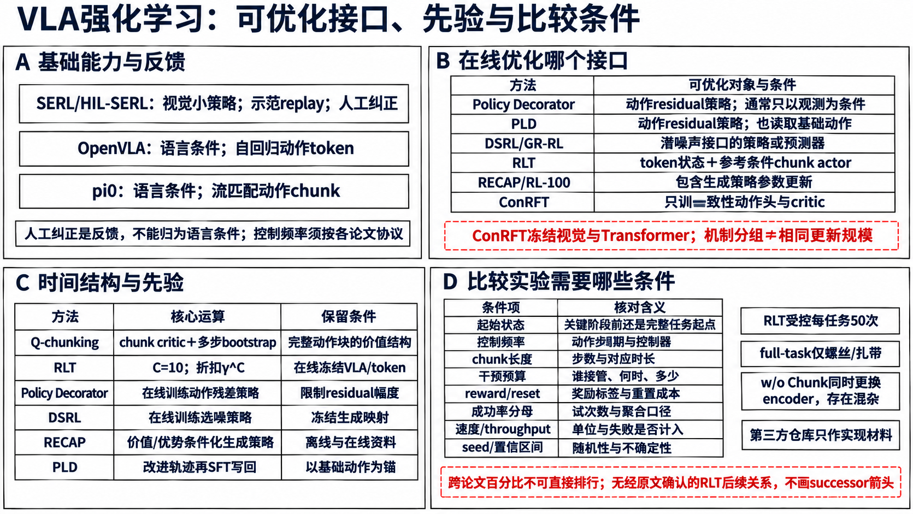
F06｜VLA 强化学习接口：机制比较与可比性边界
本图用四个分区比较论文中的基础能力、在线优化接口、时间结构和实验条件。A区区分能力与反馈来源，B区指出更新对象，C区解释保留的结构，D区逐项核对结果是否可比。相同一行或相邻位置表示机制比较，没有方法继承或同预算性能排名的含义。
A：先区分视觉状态、动作编码和已有行为
这张图的阅读起点是“策略看见什么”和“策略能改变什么”两个问题。SERL、HIL-SERL通过视觉编码与本体信息训练小策略，示范回放和人类纠正为真实学习提供数据；奖励分类器是另一条视觉路径，不能与控制策略的状态编码合并。它们还依赖奖励、重置、阻抗或力控制等系统条件。OpenVLA与π0提供的则是大规模示范形成的视觉语言动作先验，不是把相同小策略简单换一个编码器。A区的三张独立卡片把视觉小策略及纠正资料，与语言条件的两种大策略分开；人工纠正属于反馈来源，语言条件属于模型输入，两者不能混成同一类别。
OpenVLA原版把当前单张图像和语言映射到离散的七维动作编码，再以自回归方式输出；不能替它添加原文没有的本体或历史输入。π0通过连续流匹配生成动作块，并将机器人状态与视觉语言上下文接到动作专家。RLT的RL token又是第三种对象：它压缩VLA内部嵌入，供小actor与critic读取，不是OpenVLA那种执行动作的离散词元。理解这些卡片时，表示、语言条件、动作先验与控制时序需要分别落到对应接口，不能因为名字里都有token或VLA，就把状态向量、动作编码和生成噪声当成一个变量。
B：在线学习究竟在哪个空间改变行为
Policy Decorator与PLD都把基础动作和残差相加，但actor条件不同。PD的附录比较通常偏好只给残差actor观测；critic评价基础动作与残差之和，不能从critic的输入反推actor也必须看到基础动作。PLD则明确让残差策略同时接收状态和base action。以一个教学坐标为例，基础动作0.30加残差负0.08，实际命令是0.22；这个算术相同，不说明两种actor在相同信息下学习。残差幅度、启用日程、离线预热和数据收集也各有来源，不能把PD的限制未经核对就复制到PLD或RLT身上。
DSRL与GR-RL把在线变量放在生成器的初始噪声，而不是直接优化一个任意的大动作块。已有扩散或流映射接收状态与噪声，再生成最终动作，其实际计算顺序是选噪策略或预测器先确定噪声，再由冻结生成映射给出动作；学习的对象不能被简写成直接修改一个待执行的噪声张量。DSRL的π0实现用一份32维噪声沿块重复；仿真块长五十，输入虽展开成1600个数，可自由选择的仍是那32个坐标，DROID实机块长则为十。重复初始噪声不代表重复最终动作。GR-RL的噪声预测与正则同样利用已有映射，但不能仅因同属噪声引导就推断二者共享代码、容量或可达动作集合。
RLT在B区对应“紧凑token状态加参考条件动作块actor”。它直接产生动作块分布，参考输入保留VLA一次采样的模式信息，平方距离正则为偏离参考收费。PD的有界残差、噪声映射的潜空间限制与RLT的软距离偏好不能用同一圈“安全探索范围”概括：硬幅度限制和优化损失中的代价不是相同约束。也不能按动作输出维数给这些方法排探索能力榜。十乘十四的一百四十维输出说明接口形状，不能单独证明它比32维噪声控制更能泛化、更省数据或更容易达到高价值行为。
C：机制矩阵要分别列更新对象、先验与数据写回
ConRFT必须在矩阵里单独说明：视觉编码器与Transformer主干冻结，训练的是新的一致性动作头和独立critic。它利用冻结表征、示范行为约束及价值学习，不能因为题名写着强化微调，就画成完整VLA主干接受在线梯度，也不是只给原有冻结生成器挑初始噪声。RECAP更新优势条件的大型策略，独立的较小分布式VLM价值模型用201个价值箱标注经验；连续动作损失的停止梯度不表示所有主干训练都停止。RL-100优化扩散去噪策略，衔接离线与在线改进并蒸馏一步一致性模型，这些更新对象与ConRFT的轻量动作头不能并成一个相同规模的“全模型RL”。
PLD的后半程尤其需要追踪资料的生产者与消费者。冻结base获得残差专才之后，基础策略先探索一段，再由专才接管，产生含恢复行为的混合轨迹；这些资料随后通过监督微调或LoRA回写通才。连接专才与通才的是训练数据，不是在线critic梯度直接穿过冻结base。RLT的主要在线阶段冻结VLA和token，保留小型控制器；学习handoff也不等于已经实施PLD式多任务恢复数据蒸馏。因此矩阵里至少要把“小策略”“残差actor”“噪声策略”“一致性动作头”“大型条件策略”“去噪策略”分行，配合各自先验列，而不能只用冻结或不冻结两个标签压平整个生命周期。
Q-chunking提供时间尺度这一横向比较轴：critic评价完整实际动作序列，目标包含块内奖励和与块末bootstrap。RLT的 和 可以沿这一轴解释，连接表示相似的估值对象，不表示算法或理论完全相同。教学上，若块长十、折扣假设为0.99，则后继价值系数约为0.9044，而不是仍乘一次0.99；这是折扣次数的说明，不是RLT真实超参数。Q-chunking的理论需要完整实际片段及块末估计条件，生成行为模型也影响结果。C区的时间结构列因此用于检查奖励传播跨越多少低层步；同一比较轴不提供“只要分块就必然更高效”的因果保证。
D：先对齐评测协议，再理解结果
实验比较区的每个标签都对应一个实际问题：起点是在home还是关键阶段前，控制频率是多少，执行多长的动作块，干预和示范预算怎么算，奖励与reset由谁提供，成功率用了什么分母，速度还是吞吐量，随机种子与置信区间是否报告。RLT受控评测每任务五十次，完整任务只测两项；HIL-SERL多数正式任务一百次，整个串联IKEA另有十次及子策略尝试规则。ConRFT八任务合计154/160的成功，与这些分母不同。把这些百分比排成一张统一样本效率榜，会同时混合初态难度、人工支持和统计对象，图中的比较门槛应阻止这种读法。
相同限制也适用于看似更醒目的满分或阶段曲线：RL-100的DDIM八任务与CM七任务评测集合不同，不能把缺测任务补成成功；GR-RL固定checkpoint的83.3%与二十四回合移动均值后期超过90%不是同一统计。RLT去掉chunk的消融还同时更换编码器，所以差异不能全部归因于时间抽象。图可以并列这些证据范围，却不能制造统一预算下的算法排名。最后，没有经全文确认的RLT后续论文就不画successor箭头；第三方仓库属于实现材料，名称相近、引用同一论文或取得摘要，都不足以证明方法继承、作者认可或指标复现。
表格的每一列怎样读
B区左列是方法，右列同时说明可优化对象与条件信息；DSRL/GR-RL一行只表达噪声接口这一共有层次，具体策略、预测器与训练顺序仍须分别回各自读本。ConRFT另列动作头与critic，红框限定其视觉及Transformer冻结。C区的三列依次是方法、核心运算、保留条件；Q-chunking的完整块价值结构、RLT的冻结状态、残差幅度、冻结生成映射、RECAP资料来源与PLD基础动作锚是不同类型的前提，不组成统一正则公式。D区八行右列解释左列要核对什么；右侧给出RLT评测分母及混杂来源，底部红框限制排名与未经原文确认的后续关系。白色矩形、黑细线和海军蓝文字承担排版，红色专门标出易误读的边界；本图没有因果继承箭头，也没有用空白单元格暗示某项实验已公开。
机制来源对应完整锁定读本：Policy Decorator（此附件保存在完整本地归档中）、DSRL（此附件保存在完整本地归档中）、Q-chunking（此附件保存在完整本地归档中）、ConRFT（此附件保存在完整本地归档中）、PLD（此附件保存在完整本地归档中）、RECAP（此附件保存在完整本地归档中）、RL-100（此附件保存在完整本地归档中）、GR-RL（此附件保存在完整本地归档中）。基础模型与机器人系统的原图、公式及逐项协议在本报告相应独立读本中展开。
关系强度不能由箭头外观决定
作者在相关工作或方法段明确说明借用某个组件时，关系记为“明确”。两个计算结构存在可核对对应，但没有作者继承声明时，只能记为“证据支持的比较”。只有同名或同一引用而缺少公式/结构证据，则保持“未确定”。RLT与Q-chunking的chunk价值结构可以逐项对应，但不能自动宣称RLT满足对方全部理论；DSRL与GR-RL同属噪声引导，也不能由分组推断二者共享代码。
本次全文集合没有确认一篇明确引用并实质修改RLT核心机制的后续论文。检索中发现的公开RLT仓库属于第三方实现材料，它们不能代替后续学术证据。下文把后续关系保持为空边界，避免为凑一个时间谱系制造继承事实。
RL Token 的完整方法
本章从作者面对的物理失败出发，依次解释表示瓶颈、动作块价值、参考条件策略与关键阶段切换。每个机制都有直觉、正式计算、具体例子和证据边界；读完后再进入第三方源码，避免让实现默认值反过来改写论文。主要依据为锁定版本的第 III–VI 节、算法 1、图 1–9 及附录；下文 PDF 页码与文件页一致。
为什么把在线学习集中到最后的精细阶段
它真正解决什么问题
论文处理的是“VLA 已经会做，但在最后一毫米做得不够快、不够稳”的现实机器人问题。大模型的泛化能力来自规模化视觉-语言和机器人示范；可是在螺丝对准、扎带穿入、网线插入、电源插入等接触密集阶段，毫米级位置、姿态和接触时序误差会累积成失败。全量 VLA 在线 RL 的代价太高，传统小策略在线 RL 又牺牲 VLA 的感知和行为先验。作者把目标限制为一个可部署的折中：只用几分钟到几小时真实机器人数据，把大 VLA 变成一个“可被小 RL 头快速修正”的系统。
论文的中心观察
作者不是把大模型整个塞进 RL，也不是把 RL 从像素重新学起，而是让 VLA 额外暴露一个压缩读出：RL token。这个 token 既要保留 VLA 内部与任务有关的信息，又必须足够小，才能让 actor 和 critic 在板载/近实时条件下高频更新。随后，actor 看到 token、本体状态以及 VLA 采样的动作块，在 VLA 仍然合理的附近做局部编辑；critic 用稀疏二值成功信号判断哪些编辑更好。
贡献边界
论文明确声称两项贡献：一是训练 encoder-decoder bottleneck 产生紧凑 RL token；二是基于该 token 训练轻量 actor-critic，并以 VLA 动作作为条件和正则锚点。四个真实任务、关键阶段切换、动作块和 reference-action dropout 是把两项核心机制变成可用系统的设计。
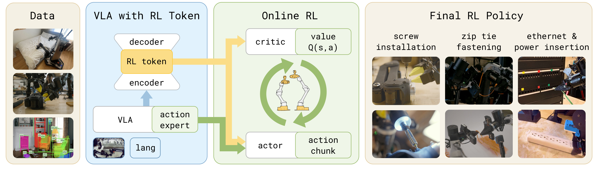

图表说明：图把示范、表示压缩和在线actor-critic接起来，说明新模块处在VLA与RL之间。 来源：锁定PDF第1页，原图1。
进一步分析：它支持作者如何分工的结构主张，后续性能仍需真实任务结果。
注意：总览不证明token信息充分、每个模块独立有效，也没有给出全部网络超参。
打开原始论文页（此附件保存在完整本地归档中） · 查看完整来源页


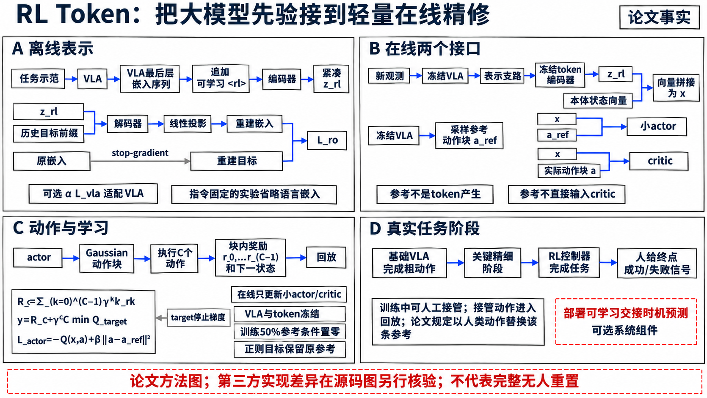
图 F01 全部细节说明：从 VLA 先验到真实机器人在线精修
A：先把任务知识变成可以冻结的接口
这张总览图要解释的是一条完整的学习闭环：基础策略已经能看懂场景、完成大部分动作，在线学习集中处理接触末端的精度与速度。起点是目标任务的遥操作示范，示范中的图像、语言、本体状态和动作提供监督适配材料。示范进入“VLA适配与token训练”后，训练目标写成 。加号表示两项损失共同定义一次优化目标，不是先把重构损失变成动作损失，也不是成功奖励直接训练大模型。重构项训练新增的读出模块，可选的监督项才负责适配VLA；两者的梯度来源必须分开理解。
新增模块通过重构内部嵌入学习紧凑读出：编码器读入原有token和可学习的特殊token，解码器依据瓶颈表示恢复原嵌入。重构目标停止梯度，避免VLA为了让重构容易而自行改变目标；这不妨碍另一个监督损失在初始适配阶段更新VLA。适配结束后，VLA和token模块同时冻结，后面的在线奖励只训练小型actor与critic。从A区的离线训练转到B区在线使用，交付的是训练好的模型与读出接口；本图采用分区引用，不画跨区长箭头。冻结限制参数更新，而不是关闭模型推理。不能把在线学习箭头反向接回大模型，画成整台VLA持续接受强化学习梯度。
B：同一个冻结 VLA 提供两条不同的先验
B区保留同一个冻结VLA提供的两种接口；重复的VLA框与同名变量表示分区内的引用，不是不同权重副本。表示支路把高维内部嵌入送到token模块，得到 ；动作支路从基础策略分布采样参考动作块 。前者与机器人本体状态拼成 ，后者单独进入actor。它们不能在图上合并成一个没有角色区分的“先验”框：token告诉小网络当前状态包含什么控制信息，参考块告诉actor基础模型这一次打算怎样行动。critic评价的是状态和实际动作块，不应把参考块误当成唯一的执行动作，也不能把本体状态混入“单个token只有多少维”的标注。
相关图F02中的 指读出的一个向量，不是整个VLA只处理一个输入token。若仅作教学假设，原表示有一百个2048维token，那么输出读出从204800个数变成2048个数；这只是接口输出大小的比较，不说明模型参数或显存也缩小一百倍。动作支路另有时间尺度：基础VLA产生 个低层动作，在线actor使用前 个动作作参考。在50Hz下二者分别覆盖一秒与零点二秒。十四维单步动作组成 维动作块，不能把“50个生成动作”“10个执行动作”和“2048维状态读出”放在同一条维度轴上比较。
C：参考条件策略与整块价值学习
C区的actor接收 与参考块，直接输出动作块上的高斯分布，采样出的块交给机器人执行。这里“直接”有明确含义：论文没有预先规定输出必须等于参考动作加一个残差，也不是先选择扩散噪声再由原生成器解码。参考样本仍然重要，因为它把基础策略多种可行动作模式中的一次具体建议交给小网络。动作箭头从actor走向执行端；执行后的状态、奖励和动作记录再进入replay。回放经验为critic和actor更新提供训练数据；本总览未重画每一根回放到优化器的长线，不能据此把缓存理解为控制指令的发出者。奖励用于构造价值目标，而不是actor的额外感知输入。
critic以 对实际执行的整块动作估值，目标包括块内折扣奖励与 乘后继价值。双Q取较小目标值是附录给出的TD3式稳定化做法。actor则优化 ：价值项鼓励提高预计回报，距离项为偏离基础建议收费，两者共同更新小策略。训练时约一半样本的参考输入被置零，以免actor只会复制VLA；推理时始终提供参考。输入遮罩与距离正则的原参考目标是两个对象，不能把遮罩同时画到正则目标上。这里的约束是软代价，并不定义一个绝对不能越过的残差半径。
D：把学习接回真实任务与人工反馈
D区先由基础VLA完成抓取、搬运等前段，再在最难的精细阶段交给RL策略。训练时由操作者决定handoff，论文还描述用交接标签进行后续监督适配，使完整任务部署能够学习交接时机；这不是只留在未来设想中的模块。D区的控制阶段依次为基础VLA粗动作、关键精细阶段、RL控制器完成任务，最后由人给终点成功或失败标签；它不表示两个策略始终同时向同一执行器发命令。关键阶段通常只有五至二十秒，完整任务可能长达三十至一百二十秒，所以交接改变了在线策略面对的起始状态分布，也缩小了它负责优化的任务范围。
在关键阶段，人可以遥操作接管actor的输出。论文第5页与算法1明确规定：人工动作不仅替换执行动作，也替换replay里的参考动作，因此缓存中的动作、参考与反馈必须对应这次实际交互。成功终止给一、失败给零的稀疏标签，与实际轨迹一起形成经验数据；不能把第三方README额外提供的进度奖励当成论文统一奖励。基础VLA的warmup轨迹、在线策略轨迹和可选人工纠正共同进入缓存。回放的新经验支持后续更新，论文训练与采集可异步进行；图中没有把这种并行系统画成第三方代码里的线程，也不表示每个20毫秒控制步都重新更新整个VLA。
论文的四项任务分别是螺丝安装、扎带紧固、网线插入和电源插入，它们的共同点是接触几何和末端时序要求高。论文受控评测从关键阶段前开始，每个智能体每任务五十次；完整任务评测只覆盖螺丝和扎带。总览图因此可以说明系统怎样提高这些瓶颈阶段的可靠性与吞吐量，却不能用一条“更快”箭头保证任意长任务都会按同样比例加速。前段抓取失败、交接误判和重置开销都仍会影响完整任务。图底的第三方边界也必须保留：候选残差参数化是独立实现的选择，本图的论文高斯策略不能用来证明该实现已经复现作者四任务结果。
图中的公式、线型与证据层
左下公式按论文概念写作块内折扣回报与后继价值的和：，。这里保留论文的简写；具体实现的终止门控、target平滑和next reference取得方式要到F03逐项阅读，不能把一个概念目标当成完整可运行代码。actor式中的距离项以原参考为目标，即使参考条件输入被遮掉，也不能把正则的目标一起改为零。
四区均使用纯白底矩形与海军蓝文字；蓝线表示前向数据或控制阶段，灰线强调stop-gradient，红虚线卡只标部署组件和证据边界。A区完整展开了重建预测与目标的两条支路；B区将同名x、a_ref作为局部引用，避免跨面板长线相互覆盖。可选handoff预测有明确标签，已经在论文完整任务部署中讨论，不能误称为第三方源码已实现的分类器。图中“论文事实”徽章约束全部方法归属，不把第三方residual/noise/clamp参数化混入这张总览。
方法的来源与替代路线
VLA 路线的能力与瓶颈
RT-2 把互联网视觉-语言模型的知识迁移到机器人动作；OpenVLA 证明开放的 VLA 可以在广泛示范上预训练并针对新任务微调；π0/π0.6 使用流匹配动作专家和动作块。共同前提是：大模型能提供广泛感知和动作模式，但示范数据覆盖不到所有精确接触状态。论文引用 action chunking、diffusion/autoregressive policy 来说明 VLA 的动作接口已经是“序列级”的，而不是每个 20 ms 低层动作都独立决定。
真实机器人 RL 的另一端
SERL、HIL-SERL 和 RL-100 代表高样本效率、人工干预、replay buffer 和高 update-to-data ratio 的小策略路线。它们的优点是数小时内可学习，代价是通常只在 ResNet 等通用视觉编码器上训练小策略，不能直接利用现代 VLA 的行为先验。RLT 的定位是把两端接起来：冻结 VLA 的感知/动作建议，训练小 actor-critic 负责最后精修。
VLA-RL 的同期替代
RECAP 代表全模型/大规模离线 RL：用分布式价值估计和 advantage-conditioned policy extraction 更新整个 π*0.6；PPO 类方法和 pi_RL 代表 on-policy 或大规模更新；ConRFT、Policy Decorator、PLD 代表轻量辅助头，但分别采用 consistency/binary reward、手工缩放 residual 或单步 residual。DSRL 和 GR-RL 在扩散/流匹配噪声空间里“引导”动作，保留 VLA 的生成分布，却难以跳出其已有动作模式。RLT 的差异是压缩状态、保留动作块、直接条件化在 VLA 动作样本上，同时不把策略强制写成固定尺度 residual。
状态、动作和奖励的真实对象
前置概念模块已经定义符号、维度与时间尺度。这里特别强调三层时间尺度：VLA 预测 H=50 的 1 秒动作块；RL actor 只输出 C=10 的 0.2 秒块；机器人通常执行块前缀后重新规划。这个层级让 critic 能在 50 Hz 环境中跨过多个低层步传播成功信号；实际决策频率与数据抽样频率仍须分开。
论文的 MDP 是 (S,A,p,r,gamma)。奖励极稀疏：人类监督在 episode 末端标记成功/失败，成功时 r_T=1，失败时 r_T=0。这个设定的关键假设是：人类能在真实系统上提供可靠终止标签，而 VLA 在非关键阶段已经足够好，使 RL 不必重学整条长任务。
RL token：用重建约束压缩内部表示
失败点和直觉
直接把VLA最终层整串高维token交给在线RL，会扩大actor/critic的输入；作者希望用更紧凑的接口支持少量轨迹上的价值学习。只取一个既有位置，又没有理由保证保留了精细操控需要的信息，因此作者追加可学习的rl特殊token，经编码器读出。训练decoder时，这个向量与因果可见的真实历史embedding前缀共同预测下一位置；重构约束鼓励读出保留有用上下文，但不能把它解读成只凭单个向量独立还原整串输入的证明。
形式化
VLA 的最终层输出为 z=f(s,l;theta_vla)，拆成 z_1:M。在末尾追加 e_rl=e_phi(
图 2 标出 VLA backbone（SigLIP 400M + Gemma 4B）与 action expert（860M），并把 N×2048 的 image embeddings 压到 1×2048 的 token。正文脚注又限定：实验中每个任务的语言指令固定，因此 token 提取阶段可以丢掉语言 embedding；这意味着论文一般定义比实际实验输入更宽。
decoder d_phi 和线性头 h_phi 自回归重建原始 embedding；目标对 VLA embedding stop-gradient：
这不是普通的成功或失败分类：phi在给定读出向量与真实历史前缀的条件下预测各位置embedding。训练信息比一个回合标签细，但decoder能读取历史这一条件也限制了低损失可证明的内容。stop-gradient使重构路径不会通过L_ro改写VLA表示；可选的VLA监督微调由alpha L_vla单独控制。训练完成后，theta_vla和phi都冻结。
具体例子和边界
教学例子：为说明信息依赖，假设四个embedding位置携带螺丝头位置、工具姿态、接触阶段和语言条件。encoder读出一个token；预测第一个位置时decoder只有这个读出，预测后续位置时还接收真实历史embedding的右移前缀，而非把此前预测当作训练输入。例如第三个目标可以以原第一、第二个embedding为条件。过窄瓶颈可能丢失几何，较大读出也可能提高小网络输入成本，但误差、控制效果和样本效率之间的关系需要对照证据，不能由宽度直接推出。论文未给encoder/decoder层数、头数、FFN宽度或重构误差曲线；固定源码的具体选择在实现章另行解释。
训练/推理分界
训练阶段：从任务示范得到 VLA embedding，更新 phi，可选更新 theta_vla。在线阶段：不再更新 VLA 或 token 模块，只读出 z_rl，交给 actor/critic。论文明确这是参数和数据高效的关键；它没有声称 token 是普适的、跨任务可直接复用的固定语义。
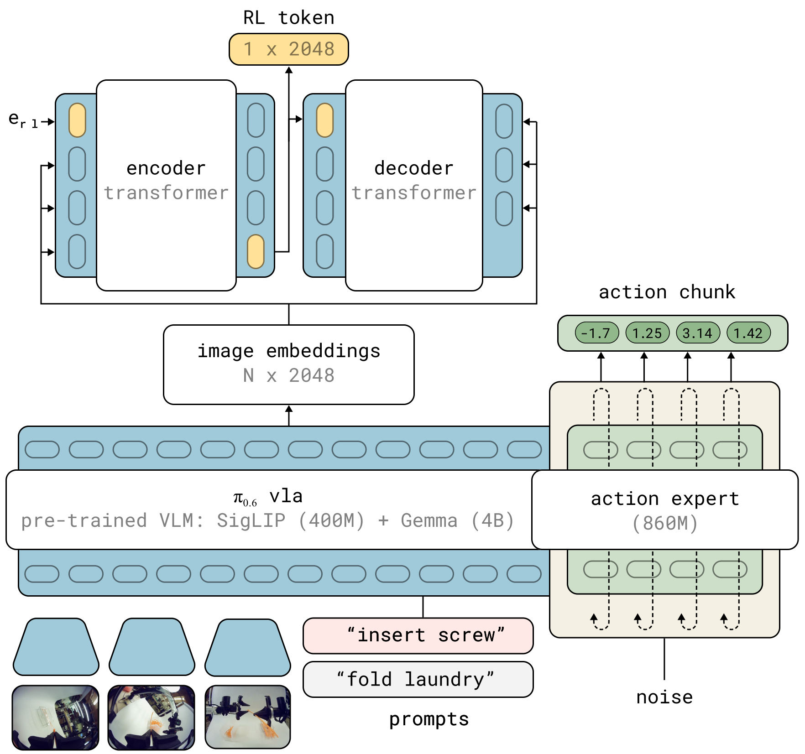

图表说明：编码器将N个2048维表示读成单个2048维向量，解码器重建输入；VLA骨干与动作专家标在左侧。 来源：锁定PDF第4页，原图2。
进一步分析：这使“压缩了什么”和“谁被在线RL使用”可直接区分；重建提供训练监督。
注意：图中VLA参数规模不能当token编码器规模；token层数、头数与FFN未公开。
打开原始论文页（此附件保存在完整本地归档中） · 查看完整来源页


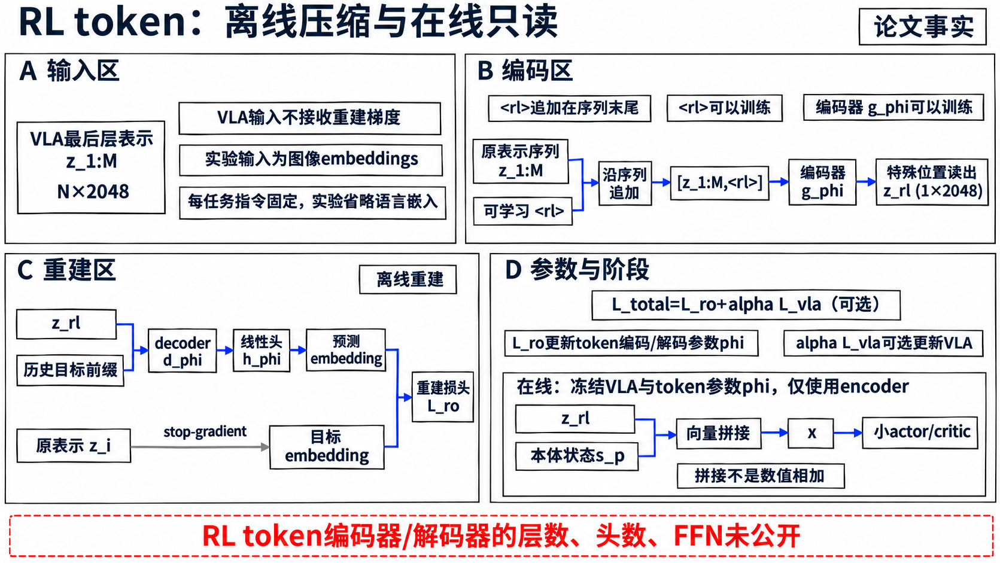
图 F02 全部细节说明
这张图回答的是：一串高维的视觉语言动作模型表示，怎样成为在线强化学习能反复使用的紧凑状态？先按左上输入、右上编码、左下重建、右下参数与阶段的顺序阅读。图中的两个时间阶段不能混在一起：离线阶段要验证压缩向量是否保留足够信息，在线阶段只提取这个向量，不再执行重建损失来改动大模型。瓶颈的价值来自这种分工，不能由“只有一个 token”直接推出它一定是充分的马尔可夫状态。
输入区来自预训练并按任务适配的 VLA 最终层表示；“VLA输入不接收重建梯度”限定的是重建路径，不排除另一项可选动作监督目标更新 VLA。图中的 N×2048 表示 N 个位置、每个位置 2048 维，N 是序列长度，并不是批大小。论文一般定义允许使用视觉和语言等输入 token 的表示，但脚注明确说实验中每个任务的指令固定，所以提取时省略语言嵌入。图把“图像 embeddings”“固定指令”和“实验省略语言嵌入”分列，是为了保留一般构造与实际实验之间的差别。它没有把动作专家的动作表示混入实验输入，也没有声称整个 VLA 只有这些位置。
编码区必须沿唯一的从左到右路径阅读。首先把可学习的特殊嵌入追加到原序列末尾，得到由原表示和特殊位置组成的扩展序列。随后整串输入经过编码器，最后读取特殊位置的输出。箭头没有从输入序列直接跨到输出，因此特殊 token 是通过注意力接收上下文的读出位置，不能误认为随手取一个常量向量。读出的 1×2048 是单个样本的一个向量；加上批轴后才是批量输入。特殊位置在输入和输出中承担不同角色：输入是可学习查询，输出才是随观测变化的 RL token。
重建区把这个向量的训练约束展开。左上方重复出现的紧凑表示与历史目标前缀共同进入解码器；这里重复画出符号只是跨区引用，同名向量并不是另一个独立编码器。解码器产生的隐藏状态还需要线性投影，才能回到输入嵌入的维度。预测嵌入与右侧目标嵌入两条箭头只汇合到重建损失，这两条支路含义不同：预测支路由可学习参数计算；目标支路来自 VLA，并经过停止梯度操作。停止梯度不改变目标的前向数值，只阻止该重建误差沿目标路径修改 VLA。图中的历史前缀用于自回归条件化，不能把这条线理解为在线机器人持续生成或缓存视觉 token 的部署要求。
D区上方用一张公式卡明确写出 L_total=L_ro+alpha L_vla，下面两行分别注明参数更新归属。重建损失训练新增编码器、解码器和投影中的参数；可选的 VLA 监督损失则提供另一条更新大策略的路径。两项损失没有先后转换关系，重建误差本身也不是 VLA 的动作监督标签。当监督权重为零时，大策略在这一步保持冻结；权重大于零时，只能根据论文规定的监督目标讨论大策略更新。图不把可选分支当作每个任务都采用了相同配置，权重的任务级设置仍须回到原文确认。
D区下半部的独立矩形表示阶段转换；它与上半部的联合训练目标分开。在线使用仅保留编码器输出，VLA 与新增 token 模块的参数都冻结。本体状态与紧凑表示进入一个“向量拼接”节点；拼接是把两组特征并列组成状态，既不要求二者维度相同，也不是逐元素相加。这个状态随后供小型 actor 和 critic 使用。参考动作仍是 actor 的另一项条件，因本图聚焦状态压缩而在后续图中展开，不能从这里省略参考块推断论文的 actor 只看状态。
用一个教学情景贯穿这四区：相机看到螺丝头偏离工具尖端，VLA 为多个图像位置产生表示。编码器把这些位置与特殊查询一起处理，单个向量必须保留对重建重要的信息。若解码器无法分辨两种对准状态，其预测误差会暴露压缩信息不足；训练完成后，同一相机输入只需重新读出紧凑向量，再与当前关节位置等本体信息拼接，在线 critic 无需接收整串视觉嵌入。这个情景说明信息瓶颈的意图，但论文没有用它证明重建误差与机器人成功率之间存在一一对应关系。
本图采用与F08相同的纯白线框：海军蓝文字和黑色细框区分模块，蓝色实线连接前向数据，灰线标记stop-gradient，红色虚线框限定未公开细节。冻结状态直接写成文字，不用雪花覆盖可学习特殊token；所有卡片和标题背景均纯白，没有彩色填充、渐变或立体效果。箭头表示前向数据关系，不能当作梯度箭头。该候选中全部中文标签、每条计算线、损失组合及拼接语义均已逐项检查；图片底部准确把未知范围限制在 RL token 的编码器和解码器层数、注意力头数与前馈宽度，没有把论文已披露的 VLA 骨干规模误归为未知。
来源是锚点论文第 IV-A 节、公式 1–2、方法图 2 与算法 1。第三方固定实现中的两层、八个注意力头和四倍前馈宽度属于另一个证据层，在图 F08 单独解释；不能用那些默认值补写为作者配置。重建训练、在线冻结和向量拼接是论文明确事实；“压缩后更适合小样本价值学习”是作者设计动机及实验支持的解释；状态充分性、跨任务复用、压缩维度的最优性和重建质量到控制性能的定量关系仍未被本文单独确证。
图中 N×2048 使用N表示位置数，序列符号z_1:M使用M表示同一个前缀长度；在这张不含batch轴的概念图里二者指同一组位置。这个记法与源码图F08的[B,M,D]不同，后者显式加入B作为批轴。为了对照来源而保留原符号，不应把N误读成batch，也不能用1×2048推断模型参数数目缩小相同比例。
动作块价值与参考条件策略
为什么动作块是核心而非格式选择
单步控制在 50 Hz 下会把 5–20 秒的关键阶段拉成 250–1000 个决策，稀疏终止奖励需要在很长链上回传。论文让 RL 直接操作 C×d 的块，实验中 C=10,d=14，即一次输出 140 维动作；每秒数据经 stride 2 大约产生 25 个训练样本。动作块减少决策长度，也与 VLA 原生接口一致。
Critic backup
状态是 x=(z_rl,s_p)，critic 接受状态和整块动作：
其中：
第一项累加当前块的奖励，第二项在 C 步后 bootstrap；psi_prime 是 TD3 风格目标网络参数。对于论文的稀疏终止奖励，多数中间 r 为 0，关键在于 chunk 边界把成功信号传给下一个块，而不是让 critic 逐个低层动作猜测。
Actor 和 reference action
actor 是固定方差的 Gaussian chunk policy：
a_tilde 是从 VLA 动作分布采样的参考块。actor loss 为：
第一项追求高价值，第二项限制偏离参考动作。这里 anchor 是软正则，不是把 actor 写成固定 residual；beta 越大，搜索半径越小，越偏向 VLA。论文没有给 β 的任务级表格、是否按动作维归一化、sigma 是否固定全任务共享等细节。
Reference-action dropout
如果 actor 永远看到 a_tilde 并且又被惩罚偏离它，最容易的策略就是复制 VLA，critic 尚未可靠时尤其如此。论文随机把 batch 中一部分 a_tilde 置零，让 actor 保留独立动作生成通道；附录给出训练 mask 比例 50%，推理始终提供 reference。这是训练/推理分布有意不对称的关键点。

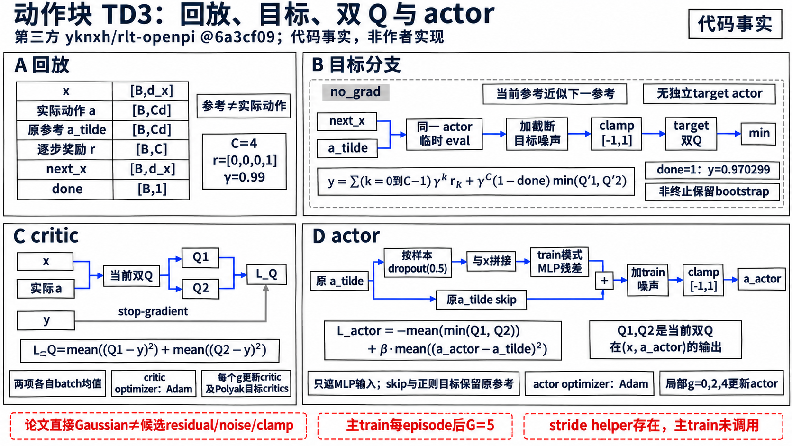
F03｜第三方动作块 TD3：回放、目标、双 Q 与 actor
本图解释第三方 yknxh/rlt-openpi 固定提交 6a3cf09 的实际计算。按 A 回放、B 目标、C critic、D actor 的顺序阅读；四区分开呈现同一更新步骤的不同对象。论文方法与这份实现的差异由图底红色虚线框标出，教学数值均为纸面演算。
A：一个 replay 样本必须对应真实执行片段
读这张计算图，应先区分低层控制步、动作块边界和训练采样起点。论文的机器人以50Hz执行动作， 个低层动作覆盖零点二秒；每步十四维，整块共有一百四十个动作坐标。状态 由RL token和本体信息组成，策略发出整个动作块，执行后得到 。这些时间关系解释A区当前状态、实际动作与下一状态各列的含义；实际执行块消耗C个低层控制步。stride等于二则是从已有轨迹选择重叠片段的起点，不等于每块只执行两个动作，也不能把相邻重叠样本当成独立尝试。
候选缓存保存六字段：当前状态 、实际动作 、原参考 、逐步奖励 、下一状态 和done 。B是batch大小，不能把它当块长。参考是actor的条件与正则锚点，实际动作才产生转移和奖励。人工接管时，论文要求执行块和缓存参考同时替换成人动作；已核验候选分支却保留原VLA参考，这项差异不能抹平。A区以六行表格列出缓存中的不同字段，取出同一批样本后，B、C、D区分别使用它们所需的列。critic对实际片段估值，未经执行的VLA建议不能冒充产生奖励的动作。
B：块内奖励与块末 bootstrap 分别折扣
令 ，这是当前块内实际获得的折扣奖励。下一状态进入用于构造目标的策略计算，得到下一动作块，再交给两个目标critic估值并取较小值。有限回合实现常写成 。两处折扣不能合并成同一个系数：第k个奖励距离当前起点k减一步，块末价值则距离起点C步。论文主公式没有显式写done遮罩，图里补出的终止门属于有限回合语义及第三方实现细节，必须与论文原式分层标记，不能宣称作者已完整披露了终止、截断和补齐的所有工程规则。
图中教学例子取 、、奖励为零、零、零、一，所以 。若仅作公式分支演算，设后继目标价值为0.8且done为零，则 ；若done为一，后继项被关掉，目标就是0.970299。这个并置只用于检查终止门和折扣次数，不表示RLT真实成功终止后仍支付未来回报。例子中的四步和0.99也不是论文公布的实际块长与任务折扣：真实实验C为十，任务级gamma没有公开数值表。
C：目标网络提供标尺，当前 critic 学会贴近标尺
C区中，同一batch分别进入两个当前critic，得到 与 ，再计算它们对同一目标y的平方误差。固定候选用两项均方误差相加，再由Adam优化器更新；这里的优化器不是AdamW，其名称属于代码事实，不能反推成论文公开配置。目标y停止梯度，意味着当前这次critic回归不会沿后继目标一路改写该分支使用的actor或目标critic。目标网络用于提供较稳定的比较标尺，当前网络通过梯度下降逼近它；实线数据流与梯度箭头因此需要不同图例，避免把“读取目标值”和“更新目标参数”画成同一种运算。
C区底部卡片说明参数更新的时序：候选每个局部g都更新critic，并对目标critic作Polyak软更新；延迟的是actor更新，不能把目标critic也画成只在actor更新时变化。双Q取小值减少乐观估值的动机，并不保证估计绝对准确或训练必然收敛。动作块带来的是跨C步的价值传播；实际动作、奖励长度、终止位置若不一致，再正确的公式也会估错对象。Q-chunking的理论同样有完整实际片段和块末估计条件，不能仅凭形式相似，就为RLT或第三方程序附上一份无条件的无偏保证。
D：actor 提高价值，同时为偏离参考付出代价
actor的论文接口是 到直接高斯动作块，目标为 。负价值项通过critic对动作的导数推动actor改变输出，正则把输出拉向原参考。候选用当前双Q最小值，不能以Q1单支替代；其正则按全部动作元素取均方误差，与纸面平方范数归一化不同。候选actor反传可能在critic参数留下梯度，但本步只调用actor优化器，不调用critic优化器step，不能误说critic完全没有梯度；VLA与token仍冻结。教学上，参考0.2、候选0.3、beta为0.5，代价是0.005；动作单位放大十倍而不改权重，平方代价放大一百倍。这是与动作尺度有关的软惩罚，不是固定残差范围，两项也不固定各占一半。
训练时按样本约0.5概率把参考输入置零，是为了防止只复制VLA。遮掉的是条件通道，距离正则仍以原参考为目标；推理时提供完整参考。候选的实际数据链是：状态与被遮参考进入MLP，原参考独立skip，与残差相加，再加train模式噪声并clamp到负一至一。不能把零参考接到正则目标，也不能漏掉保留原参考的skip。这条路径意味着条件输入置零不等于整个actor无法利用参考，不能用论文“独立动作生成路径”的动机，自动证明候选残差模块实现了同一种约束。
另一处边界是下一参考：候选用当前参考近似下一参考，不能写成原作者确认的等价变换。目标计算临时把同一个actor切到eval，随后另加截断的目标平滑噪声，并将动作clamp到负一至一；这里没有独立目标actor，整段计算不记录梯度，也不表示主采集加入同款噪声。候选每回合后进入G为五的循环，默认局部g在零、二、四时更新actor；stride helper有定义但未被主路径调用。g是局部更新序号，不是全局环境步。这些代码行为不能与论文异步采集、高更新数据比及重叠采样拼成一条完全一致的执行路径。
本图能帮助检查时间、目标和梯度究竟指向什么，不能靠计算正确就证明性能复现。论文Ethernet消融支持表示、动作块、参考正则与条件输入的实用作用，但去掉动作块的变体同时更换了编码器，不能把性能差异全归给单一gamma指数或块长。候选residual、noise、clamp、优化器和更新调度也各有自己的来源边界；主采集将actor置于eval，不能把模块train模式下才加入的噪声当成论文高斯策略的实际采集噪声。四区的联合含义是：B区的done只关闭后继价值，C区从回放读取实际动作而非参考，D区仍可通过当前critic对动作的导数学习。B与C中的停止梯度约束目标生成，不能据此把D所需的动作梯度也切断。
沿图中的每条支路核对计算对象
B区中，next_x与a_tilde两根箭头汇入同一个临时eval的actor；其后依次是目标平滑噪声、动作裁剪、目标双Q和取小值。目标双Q在同一个next_x上评价所得动作；next_x作为这一分支的共同状态条件保留，当前参考则是对下一参考的近似。灰色虚线框和no_grad约束整段目标构造。公式的求和指标从零到C减一，r_k因此与前文从一开始记r_k的写法仅差索引命名，折扣次数一致。
C区把x和实际a接到当前双Q，Q1与Q2各有一条箭头进入L_Q；y从下方以灰色停止梯度箭头进入同一个损失节点。图中mean表示各自批次误差的平均，两支相加。D区则把原a_tilde明确分成两路：上路按样本遮挡，再与x拼接送MLP；下路完整绕过遮挡和MLP，在加法节点与上路残差汇合。汇合之后才加入train噪声、裁剪并输出a_actor。图中平方差形式的正则明确比较a_actor与原a_tilde，mean覆盖批次和动作坐标；当前双Q在(x,a_actor)处取较小值提供价值项。两种optimizer均为Adam。蓝线表示数值传递，灰线表示目标的梯度边界；红色边框集中标出来源差异和未进入主链的helper，白色矩形没有额外的可训练含义。
从示范到在线更新的完整控制循环
Algorithm 1 的顺序是：用示范训练 token，并可选地以 alpha L_vla 微调 VLA；冻结 VLA 和 token，然后初始化 actor/critic；在 N_warm 环境步用 base VLA warmup，填充 replay；每个 chunk 边界由 VLA 采样 a_tilde_1:H，提取 z_rl，组成 x；若人类接管，执行 a_human；warmup 时执行 a_tilde；否则从 actor 采样 a；执行动作并观察奖励、下一状态，把执行动作和 reference 一起存入 B；用 stride=2 的中间观测产生重叠 chunk；采集和学习异步进行，正文给出 update-to-data ratio 为 5，每个 actor 更新配两个 critic 更新；关键阶段训练期间由人类决定何时从 base VLA 切到 RL，终止时标成功/失败；最终可用干预标签微调 VLA 来预测 handoff。
这个流程的领域关键执行底座是环境→VLA→token→actor→动作块→人类奖励/接管→replay→TD3 更新的闭环。它决定了方法能否在真实机器人上高频学习，不能被只画成一个静态 encoder-decoder 框图。

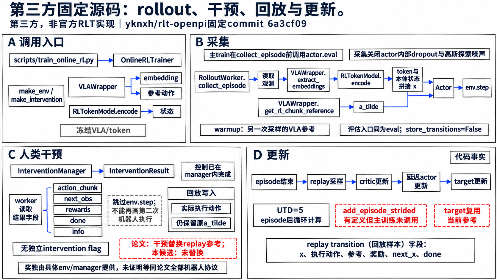
图 F04 全部细节说明：一次机器人采集怎样成为一次参数更新
先把实现身份与对象职责分清
这张图围绕 yknxh/rlt-openpi 的固定提交 6a3cf09472b071516ad9742c15e0a55d9e299b18 解释控制与学习路径。它对应的是第三方实现，不是作者公开的 RL Token 训练程序。入口区中的 train_online_rl.py 负责读取配置、建立 trainer，并通过 make_env 和 make_intervention 取得环境与人工干预管理对象；这些对象各自保留明确职责。trainer 管理采集和更新的先后顺序，worker 执行一回合的数据收集，环境负责执行动作和返回反馈。不能从一条入口箭头推断代码已经实现论文全部机器人协议、自动 handoff 或底层保护控制。
冻结 VLA 与 token 的框表示在线阶段主要训练小型 actor 和 critic。VLA 仍然参与每个新观测的计算，只是这些调用不通过在线损失更新大模型参数；冻结并不等于不执行模型。token 编码和参考采样也不是同一个函数的两个名字。前者通过 extract_embeddings 和 RLTokenModel.encode 得到状态表示，后者通过 get_rl_chunk_reference 得到动作条件，两条数据分支必须分别读懂。
状态分支和参考分支怎样汇合
在每个动作块边界，worker 从当前观测提取内部 prefix 表示，编码为 z_rl，再与本体状态拼接为 RL 状态 x。本体状态保留关节等直接控制信息，token 提供来自视觉和语言上下文的紧凑表示。与此同时，冻结 VLA 独立采样参考动作，再截取在线执行需要的前 C 步，展平后作为 actor 的参考输入。图中这两条箭头在 actor 处汇合，不意味着 token 被 decoder 还原成参考动作；参考路径直接调用 VLA 的动作生成接口。
常规采集路径是 actor 产生动作块，再交给准确名为 env.step 的环境接口。这里没有 step_chunk 方法，也不能把动作块接口误画成 actor 一次输出、机器人只执行一条低层命令。环境怎样解释 C 个子动作、提前终止时怎样返回奖励与真实步数，由具体环境实现决定。主训练在调用 collect_episode 前先执行 actor.eval()，因此该回合关闭 actor 内部仅在 train 模式启用的参考 dropout 和高斯噪声。actor 优化时又会切回 train 模式；“正在训练一个模型”和“这次前向处于 train 模式”是两件不同的事。
warmup 还需要单独理解。它执行 VLA 给出的参考动作来填充初始回放，但用于执行的参考采样与随后 _extract_rl_state 得到的参考并不是同一次随机结果。不能在图中把二者强行合并为一个已证明完全相同的向量。独立评估入口同样使用 eval，并把 store_transitions=False 传给采集器，因此评估轨迹不会通过这条调用追加到训练 replay。
干预结果为什么不能再次执行
人工干预区的关键边界是 InterventionResult。当干预管理器已经返回包含 action_chunk、next_obs、rewards、done 和 info 的完整结果时，机器人控制已经在管理器内部发生。worker 直接接收这些结果，跳过常规分支的 env.step。如果再画一条从干预结果进入环境执行的箭头，就会把同一批人类动作重复执行两次，改变真实时序。
执行来源变化后，replay 记录的动作 a 是实际执行的人类动作，但参考字段 a_tilde 仍来自干预前取得的 VLA 参考。该候选没有在这里把参考替换为人类动作，也没有另存一个 intervention flag。论文则明确说明干预时用人类动作替换 replay reference。这一差别会影响后续 actor 的距离正则：它到底拉向人类纠正，还是拉向此前的 VLA 参考，取决于实际存下的字段。图中的红色差异框标的是这条计算边界，不是对作者实现的推测。
数据何时写入，参数何时更新
worker 在每完成一个动作块后，就把 x、实际执行动作、原参考、逐步奖励、下一状态和 done 交给 ReplayBuffer.add。为了构造 next_x，它还要对 next_obs 提取下一次状态；不能因为样本已写入就认为 VLA 从此不再参与采集。回合统计优先使用环境报告的 steps_executed，缺少这个字段时才退回配置的 chunk_length，这也解释了完整动作块数量与真实执行步数并非总能简单互换。
更新区发生在 collect_episode 返回之后。默认 G=5 表示本次完整回合后调用五次 _update_step，每次都从 replay 采样并更新 critic；延迟 actor 更新由本次局部下标控制，默认间隔为 2 时触发于 g=0、2、4。critic target 在每次更新末尾做 Polyak 更新。源码虽定义了 add_episode_strided，主训练路径没有调用它；不能把论文的 stride 重叠采样直接画成候选主循环已经执行的步骤。
还应保留 target 的近似：更新函数把当前样本的参考当作 next reference 使用，省掉了在目标状态重新调用 VLA 采样的开销。这个选择是候选代码的行为，不能据此证明与论文的目标条件完全等价。图把采集、实际执行、逐块入库与回合后更新分开，正是为了让每一条箭头都对应真实的消费者和时间位置。
来源：采集与干预分支、在线更新与主循环、机器人动作块接口。本文是静态执行路径解释，没有运行机器人或复现论文指标。
用一次干预结果串起四个分区
作为教学构造，只看一个动作坐标、C=2，设原VLA参考是[0.2,0.2]。干预管理器实际执行[0.6,0.4]，返回这两个动作、next_obs、rewards=[0,0]、done=False及info。C区的worker此时只读取结果；再调用一次env.step会额外推进机器人，和本次返回的next_obs失去对齐。worker据next_obs形成next_x，再把实际[0.6,0.4]与原参考[0.2,0.2]分别存入D区所列的六字段样本。后续critic读取前者，actor条件和正则使用后者；如果采用论文的干预规则，参考应同步替换为[0.6,0.4]。这个差异因此会在学习目标中继续存在，无法通过把两份动作都叫作“建议动作”来消除。A区确定这些对象由谁创建，B区说明未干预时的常规采集，C区负责本次替代，D区说明回合结束后的学习时机；例子没有测量实际VLA输出或机器人效果。
图中蓝色实线表示明确的调用或数值流，C区左侧分叉括线枚举worker读取的五个结果字段；灰色冻结卡片和跳过执行卡片标出参数与控制边界。红虚线框分别指出人类参考替换、未调用的stride helper和next参考近似。所有卡片均为白底，位置不额外表示并行进程；本候选的主循环是顺序采集与回合后更新，不能把版面上的并列分区读成异步实现。
关键阶段切换如何改变训练分布
RLT 不试图在整条 30–120 秒任务上同时优化。每个 episode 先让 base VLA 完成抓取、搬运和定位；到插入、拧紧或旋转等最难阶段时，由人类选择 handoff，把 RL 只应用在 5–20 秒、250–1000 步的片段。训练阶段使用人工 handoff 和终止标签；部署时可以再用一个短的 VLA fine-tuning 阶段学习何时交接。
这带来两个效果：一是把稀疏信用分配集中在真正瓶颈，二是让 RL 的初始状态分布由 base policy 提供。它也带来边界：如果早期抓取/搬运错误导致 handoff 状态完全失真，critical-phase policy 的提升不必然转化为整任务提升；论文确实报告 full-task 成功率低于 controlled phase，且只有螺丝和扎带做 full-task 评测。
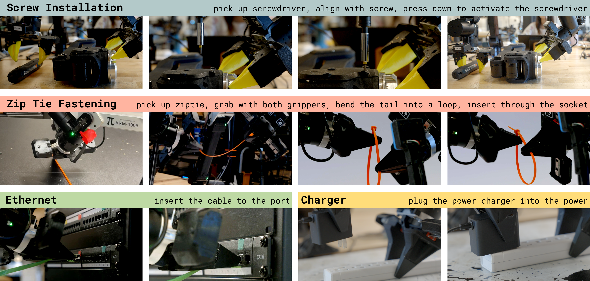

图表说明：螺丝、扎带、网线和电源插入各自具有接触或对准瓶颈，图示呈现真实任务起点及动作过程。 来源：锁定PDF第6页，原图3。
进一步分析：它解释为什么局部关键阶段是在线改善对象，以及任务并非同一种刚体插入。
注意：画面不度量接触力或安全性，不能由可视片段推断每次失败类型与真实时间分布。
打开原始论文页（此附件保存在完整本地归档中） · 查看完整来源页


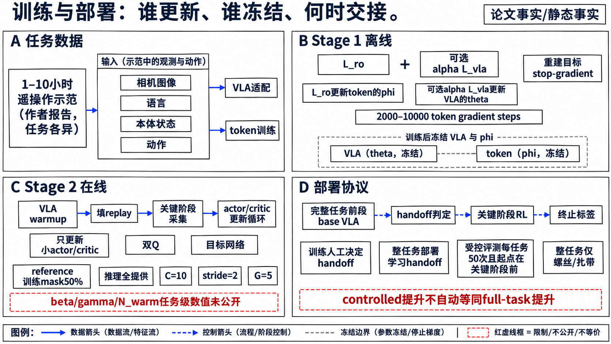
F05｜训练与部署：谁更新、谁冻结、何时交接
本图沿任务资料、离线训练、在线学习、部署交接四个阶段，解释论文中数据与参数各自的责任。先读A的输入来源，再看B的梯度归属与冻结边界，随后进入C的经验学习，最后用D的评测起点判断结论范围。
A：任务示范提供初始能力，不等于在线交互预算
图的起点是作者为每项任务收集的一至十小时遥操作示范。相机图像、语言、本体状态和动作分别提供场景、目标、机器人自身状态及监督行为，进入VLA适配与token训练。这一时间范围随任务而异，不能当作所有任务固定相同的预算，更不能与后面的在线机器人数据时间混为一项。示范箭头指向离线训练资料，不表示操作者在此时提供了一个供critic使用的完整奖励函数。任务成功或失败的稀疏标签、训练期接管和部署期交接判定属于后面的闭环，必须在图上保留各自发生的阶段。
离线阶段的目的，是让已有大策略在目标任务上可用，并给小型强化学习网络准备紧凑状态。图中的模态节点不能被理解为所有信息都必须先压成同一个数：VLA形成内部嵌入，token模块读出任务相关表示，本体状态还可以作为额外输入交给actor和critic。论文实验中每项任务的语言指令固定，token提取时可以省略语言嵌入；这是实验输入范围的限定，不等于基础VLA完全没有语言条件。训练资料、冻结参数与在线状态分别对应数据、模型和一次观测，三类箭头不应因都经过一个大框而混成同一条计算路径。
B：两项离线损失并列，梯度归属分别判断
Stage 1把目标写成 。重构损失训练新增token编码器、解码器与读出相关参数；原VLA嵌入作为停止梯度的重构目标。若alpha为零，VLA不因这一目标而适配；若alpha大于零，监督VLA损失可以另外更新大模型参数。所谓joint，是两项训练目标在同一适配阶段组合，并不表示重构梯度也穿过停止梯度边界去改写VLA。图中加号只能汇合损失，不能画成先运行重构损失、再把它的结果送入VLA损失。谁更新应由损失到参数的归属确定，而不是由框的相邻位置推断。
用教学数值检查加号的含义：若重构损失为0.04，监督损失为0.30，alpha为0.1，总目标就是0.07；这不表示两个损失各训练一半，也不能据此设定作者的真实权重。论文给出的token训练量为两千至一万个梯度步，它统计优化次数，不是机器人交互步数或成功回合数。Stage 1结束后，VLA参数与token模块参数一起冻结，才进入在线阶段。冻结边界应连接参数卡片，不应切断从新图像到表示、从VLA到参考动作的前向箭头；不再更新权重的模型仍然要在机器人运行时处理新观测。
C：在线阶段先 warmup，再从经验反复学习
Stage 2首先让基础VLA运行warmup，把已有能力产生的轨迹放进replay，为价值学习提供起点。随后，关键阶段中采到的实际动作、奖励和下一状态进入缓存，小actor与双critic从batch反复更新，目标网络提供bootstrap所需的后继估值。图里的闭环是“采集新经验—缓存—学习—改进后继续采集”，而不是每次更新都重新采集一份完全独立的数据。论文采用离策略方法，也允许缓存混合基础策略轨迹、在线策略轨迹和人工纠正；但不能因此推断它逐项复用了HIL-SERL的双缓存比例或进程代码。算法层的数据来源相似，与实现完全相同是两种结论。
在线控制保持 ，50Hz下一个动作块约零点二秒。stride等于二只改变轨迹切片起点，例如从第零、第二、第四步取得相互重叠的十步片段；新增样本数不等于新增独立回合数。论文报告较高的更新数据比G为五、每次actor更新对应两次critic更新，并让采集与学习异步运行。已核验第三方候选却有整回合后更新、主路径未调用stride helper等独立行为，所以这些代码标签不能直接覆盖论文的异步时序。图中的论文循环应保留自身语义，候选差异只在清楚标出的边界处解释，不能拼成一条没有实际来源的混合训练流程。
这一阶段只让小actor和critic接收在线学习梯度，VLA与token保持冻结。训练时约一半参考输入被遮掉，推理时全都提供参考；距离正则仍锚定原参考，不能因为条件输入置零就把正则目标也改为零。任务级beta、gamma与warmup步数没有公开完整数值表，因此图可以标出它们控制的作用，不能把第三方默认配置当成作者逐任务参数。目标网络与双Q也应画成价值学习的内部组件，而不是新增部署控制器。整体上，冻结降低的是在线可更新范围，并没有取消每个块边界的VLA推理、参考采样和状态读出。
D：交接是真实控制分工，评测起点决定结论范围
部署控制先让基础VLA完成非关键前段，再由handoff判定把控制权交给关键阶段RL策略，最后由终止信号标记本次尝试结束。训练时人工选择交接时刻；论文还描述利用交接标签继续监督适配VLA，以学习完整任务中的切换时机。这项后续监督训练与“在线actor-critic阶段冻结VLA”并不矛盾，因为发生的训练阶段和损失来源不同。图中不能把学习handoff只画成一个尚未实现的未来模块，也不能擅自添加作者没有给出结构的独立分类器。控制箭头表示当前由谁行动，标签箭头表示什么资料支持交接学习，二者必须区分。
人的角色还包括关键阶段的可选遥操作纠正和成功、失败标签。接管会覆盖actor动作，论文要求缓存参考同步替换成人动作；这一点影响后续actor靠近什么目标，而不仅是为了暂时避开风险。成功终止给一、失败给零的设定，也不等于每个控制步都能由一个自动奖励分类器准确判别。D区的终止标签表示一次尝试的结束；在训练中相应反馈会参与经验记录，评估时则需按协议统计成功与失败，它本身不代表整套系统已达到某项成功率。交接太早、太晚或前段基础策略已经造成不可恢复状态，都会改变RL面对的分布，所以关键阶段策略更好不保证整条任务按相同比例受益。
受控评测从关键阶段前的部分完成状态开始，每个智能体每项任务五十次；完整任务则从home position开始，只有螺丝与扎带两项接受这种评测。前者较适合隔离精密瓶颈，后者还包含抓取、搬运及交接误差的累积。作者报告的在线有效机器人数据时间排除了reset等开销，也不能与示范小时、token梯度步、总墙钟或吞吐量单位直接换算。因而，图底“受控提升不自动等于完整任务提升”的边界不是装饰性提醒，而是读懂曲线分母和控制箭头的条件。本图说明作者训练与部署的分工；图中训练预算和评测分母来自论文，教学代入与第三方差异说明各有独立来源，不能据此认定任何指标已经复现。
线型怎样区分数据、控制与冻结
A区的实线蓝箭头从示范进入观测与动作集合，再分给VLA适配及token训练，表达资料的消费者。B区两种损失以加号并列；损失标签下方分别写明更新的参数，底部灰虚线边界仅圈定训练后被冻结的VLA与token。C区实线依次指出warmup、replay、关键阶段采集与actor/critic更新的资料关系，图中的“循环”标签承载重复学习的含义，实际并行与异步调度仍按论文及相邻正文解释。D区蓝虚线从完整任务前段经过handoff和关键阶段RL到终止，表达当前控制权的交接。红框集中保留任务级超参数未公开和两类评测不可替换的限制；白色卡片与空间位置不另行表示梯度、线程或额外模型。
实验设计：可靠性、速度与统计边界
任务与协议
四个真实任务分别测试不同接触难点：螺丝安装强调亚毫米对准和腕部旋转放大；扎带是双臂可变形物体穿入；Ethernet 是角度对准后果断插入；charger 是观测不完全下的插入。完整 episode 为 30–120 秒，critical phase 为 5–20 秒。受控评测从临界阶段前的部分完成状态开始，每任务 50 episodes；full-task 从 home position 开始，前段由 base VLA 执行。
基础 VLA 是 π0.6；输入 token 来自两张腕部相机和一张 base-camera，加上任务相关本体状态；控制频率 50 Hz，动作维度 14，RL chunk 维度 140。每任务先采集 1–10 小时遥操作示范，用于 VLA fine-tuning 和 token 训练；在线 RL 运行 400–1000 episodes，扣除 reset/overhead 后真实机器人数据约 15 分钟–5 小时。指标是人工二值成功率和每 10 分钟成功完成数（throughput）。
Q1：超过 base VLA 吗
论文报告 critical phase 四任务都更快；charger 和 Ethernet 在 base 已较可靠，仍约 3× 加速；较难的扎带和螺丝成功率提升更明显。full-task 中，早期抓取/搬运错误会复合放大，但螺丝成功率提升 40%，扎带提升 60%。这些是作者报告的聚合结论；主 PDF 没有在正文表格中列出每任务均值、置信区间、随机种子和 episode-level 方差，主要数字来自图和叙述。
Q2：与基线比什么
Ethernet 上对 HIL-SERL、PLD、DSRL 和 DAgger 做公平数据量比较。HIL-SERL、PLD 采用单步动作，在数百步稀疏奖励下学习失败；DSRL 成功率高但 throughput 落后；DAgger 可接近成功率却受人类示范速度限制；RLT 在保持成功率的同时把平均完成步数相对 base 降低约 2×。这里的因果解释主要是 horizon 和探索约束的差异，而不是四种方法共享同一网络、同一随机种子或严格相同训练时长的证明。
Q3：消融真正隔离了什么
四项消融是 RL token、chunk、BC/reference regularizer 和 reference pass-through。用 ImageNet ResNet-10 替 token 使 throughput 降约 50%；C=1 拉长信用分配并且不得不换成 ResNet encoder；beta=0 的 drop 最大；去掉 reference 输入会早期漂移、失败更多，但最终在简单 Ethernet 上可能追平。这一段有一个需要谨慎读的地方：w/o Chunk 同时改变了 chunk 和 encoder，使 chunk 结论存在混杂，作者在 TeX 注释中也留下了这一担忧。
Q4：是否发现了示范中没有的策略
Ethernet episode-length histogram 比较 teleoperation、base VLA 和最终 RLT。base 常在接触处试探—后退—再对准；RLT 更直接地插入，失败时利用压力和轻微摆动来借助顺应性。作者称一半 RLT trial 比所有 teleop demonstration 更快。这个结果支持“在线探索能改变策略”，但它是行为分布观察，不是对策略因果机制的严格证明，也没有展示每次试验的置信区间。
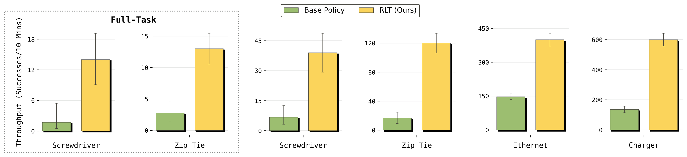

图表说明：比较基础VLA与RLT在关键阶段每十分钟成功完成数，强调速度与可靠性合成的部署指标。 来源：锁定PDF第8页，原图4。
进一步分析：更高吞吐量可由更快动作、更少失败或二者共同产生，需要和成功率图一起读。
注意：不能将局部吞吐量倍数换算为完整任务同倍数提速，也不能忽略reset与overhead计时口径。
打开原始论文页（此附件保存在完整本地归档中） · 查看完整来源页

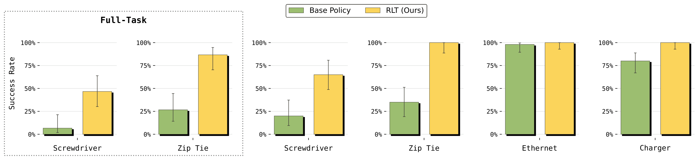

图表说明：把可靠性从速度中分离：较可靠的网线和电源任务主要保住成功率，螺丝和扎带改善更明显。 来源：锁定PDF第8页，原图5。
进一步分析：和图4联读可以判断收益是速度主导还是可靠性主导。
注意：没有原始试验表与种子方差，不能从柱线外观补造置信区间或显著性检验。
打开原始论文页（此附件保存在完整本地归档中） · 查看完整来源页
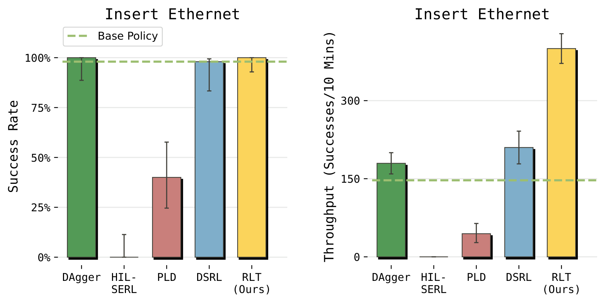

图表说明：在作者Ethernet设置比较HIL-SERL、PLD、DSRL、DAgger与RLT，显示动作时间尺度和先验约束的不同表现。 来源：锁定PDF第8页，原图6。
进一步分析：单步基线在50Hz长稀疏奖励链上困难，DSRL可维持较高成功但吞吐量落后，说明只报成功率会丢失部署差别。
注意：该结果针对作者移植设置；HIL-SERL频率与动作边界和其原研究不同，不能当跨论文通用排行榜。
打开原始论文页（此附件保存在完整本地归档中） · 查看完整来源页
附录给出的配置与没有公开的细节
附录给出关键可复现数字：token 训练 2000–10000 gradient steps；actor/critic 通常是两层 256 hidden，螺丝任务是三层 512；critic 是双 Q，取最小值作 target；actor Gaussian 固定小标准差；reference 训练 mask 50%、推理全提供；C=10；stride=2；每秒约 25 个 RL 样本；成功时 operator 提供稀疏 +1。螺丝和扎带先 critical-only，再切换 full-task，约 5 小时数据后报告性能。
仍未报告或不够精确的部分包括：β、γ、N_warm 的任务级数值（G=5 已明确）；encoder/decoder 层数和优化器；token 重建误差与表示维度选择；Q target 的 TD3 细节；replay 容量、seed、reset 失败处理、动作归一化、终止/截断处理；每张图的原始 episode 表和方差；human intervention 的触发策略与安全阈值；full-task handoff classifier 的具体结构。它们不是“代码一定知道”的事实，先写入 paper-questions-for-code.md，再由固定源码核验。
如何评价论文的论证强度
新颖性：RL token 把 VLA 内部 embedding 重建 bottleneck 与 chunk-level real-world RL 组合为一个明确接口；直接条件化 VLA action 也把参考策略保留在 actor 输入中。
技术合理性：stop-gradient、冻结 backbone、chunk backup、replay 混合和 reference dropout 都与少样本在线条件一致；但论文没有给出 RL token 重建质量如何预测 RL 成效的独立证据。
实验严谨性：四个真实任务、受控/全任务双协议、基线与消融覆盖面较好；然而主要结果依赖图/叙述，缺少逐任务统计、随机性和完整训练命令。w/o Chunk 与 encoder 更换的混杂尤其影响因果归因。
可推广性：方法假设 base VLA 在非关键阶段可用、人工能提供稀疏终止信号、动作块接口适合任务。若失败来自早期阶段、观测延迟或安全探索，而不是临界对准，RLT 的局部修正不一定有效。
防御时最容易被问：为什么重建 token 比直接取 VLA hidden state 好；beta 的量纲和选择；固定 instruction 时丢 language embedding 是否限制泛化；chunk-level Q 是否正确处理重叠 stride；为何不在 full-task 上统一训练；基线是否真的共享数据、控制频率和安全机制。
不依赖公式的直观理解
想象一位经验丰富但动作有点慢的师傅教机器人拧螺丝。大 VLA 就是师傅：能看懂场景、知道螺丝在哪里，也能给出大致动作；小 RL 头是徒弟，负责把最后几毫米做得更快。RL token 像师傅递给徒弟的一张小抄：不是把整间教室搬过去，而是压缩成仍能还原关键线索的一页纸。徒弟每次先看师傅建议的十步动作，再在附近试着改；成功就留下，失败就由人类打标签。RLT 的价值因此来自分工和时间尺度：大模型负责“看懂和提出”，小模型负责“在真实接触中快速修正”。
原始图表如何支撑论证
图 1：从数据到最终 RL policy 的总览
图 1 把系统分成四个有因果顺序的阶段：示范数据进入带 RL token 的 VLA；冻结后的 token 与 VLA action 进入 online RL；actor/critic 通过 replay 和人类 feedback 更新；最后得到只负责目标任务精细阶段的 RL policy。它证明的是接口设计可以把大模型和小 RL 连接起来，不是单独证明 token 的信息充分性。图中把 screw、zip tie、Ethernet、power insertion 放在最终 policy 一侧，也暗示任务范围是接触精度，而非开放世界长任务的所有阶段。
图 2：压缩表示的结构约束
图 2 是方法最重要的结构图。左侧是 π0.6 VLA 的 SigLIP 400M、Gemma 4B 与 action expert 860M；中间是 N 个 2048 维 image/token embeddings；新增 encoder transformer 在末尾放一个 RL token，右侧 decoder 从 1×2048 的瓶颈逐步重建输入。这里的 1×2048 不能解读为整个 VLA 只有一个 token，而是用于给在线 actor/critic 的单个读出接口。图没有给 encoder/decoder 的层数、位置编码、注意力 mask 或训练时序，因此结构图支持瓶颈直觉，却不能单独构成复现配置。
图 3：四类精度瓶颈
图 3 不是性能曲线，而是任务定义证据：螺丝需要工具尖端与螺丝头亚毫米对齐；扎带需要双臂控制可变形物体；Ethernet 需要角度对准后快速插入；charger 需要在插脚可见性不稳定时完成插入。它支持为什么把 RL 限定到关键阶段，因为这些任务的共同困难是接触末端的误差放大，而非从 home position 开始的所有动作都需要重新学习。
算法 1：从 warmup 到更新的时序
算法把 warmup、rollout、intervention、subsampling 和 update 写成一个循环。需要注意它的 transition 不是单步 s,a,r,s' 的简单重复：动作是 C 步块，reference 也随块保存，下一状态在 chunk 结束后用于 bootstrap；stride=2 又会从同一轨迹生成重叠块。因此 replay 的样本数增加并不等于独立 episode 数增加，不能把 25 samples/s 误读为每秒 25 次完整尝试。
图 4–6：吞吐量、成功率与基线
throughput 同时受成功率和速度影响，每 10 分钟成功次数增加可能来自更少失败、更短完成时间或两者共同作用。success-rate 图把可靠性单独拿出来，论文据此声称 Ethernet 和 charger 在保住原有可靠性的同时加速，而 screw 和 zip tie 的主要收益是成功率增长。基线图的关键也不是谁的最终 success 最高，而是 single-step 方法在高频、数百步、稀疏奖励下无法及时传播价值，DSRL 通过强约束保持稳定却牺牲速度，DAgger 受示范速度上限限制。若不同时报告每个基线的动作频率、数据量和安全干预，图仍不能证明所有方法在完全相同的优化预算下竞争。
图 7–8：消融曲线
消融曲线关注学习速度，而不是只有最终点。完整 RLT 在约 5 分钟 critical-phase data 后就超过 alternative policy；去掉 pass-through 的版本最终可追平，却在早期更多失败，说明 reference conditioning 主要改善冷启动；去掉 token 或 regularizer 的版本既慢又不稳。最需要保留的限定是 w/o Chunk 同时用 ResNet-10 替代 token，因为 50 Hz 查询 VLA 不可行；因此 chunk 单独贡献的实验并非严格单因素实验。
图 9：完成步数直方图
Ethernet 直方图把策略变化从平均 throughput 还原成轨迹形状：base VLA 在端口附近反复 probing，RLT 更倾向于一次性施压和轻微摆动。作者用中位数 RLT=66、Teleop=146、Base Model=228（图中 timesteps）说明最终策略甚至快过示范；一半 RLT trial 快于所有 teleop 是分布位置的比较，而非每条轨迹都优于人类。
图表没有回答什么
所有图都没有直接测量 RL token 的重建误差、token 维度消融、actor/critic wall-clock latency、训练种子方差、重置失败率和 handoff 错误率。它们证明了系统在四类任务上的行为改善，却没有把表示质量、价值估计质量和最终动作之间的中间因果链单独拆开。
公式推导与量纲检查
从 token 读出到 actor 状态
Eq. (1) 的输入序列长度是 M+1，前 M 个位置来自冻结 VLA，最后一个位置是可学习 token。取最后位置相当于对整段序列做一次 query readout；它不是对 z_1:M 做简单平均，所以可以利用注意力选择与任务有关的位置。Eq. (2) 的 decoder 输入在第 i 步包含 z_rl 和 stop-gradient 的前缀，这对应 teacher forcing；如果改成模型自己前一步的预测，训练目标和误差传播会变成另一种自回归设置，论文没有这样做。
Chunk target 的时间尺度
若 r_t 只在 chunk 的最后一项非零，则 target 的即时回报项为 gamma^(C-1)r_{t+C-1}；bootstrap 项在 t+C 之后折扣 gamma^C。因此 Q 的单位是从当前 chunk 开始的折扣成功概率或回报，而不是某一个低层动作的价值。stride=2 只改变从轨迹取样的起点，不改变每个 chunk 内部的 C=10 步 backup；若终止发生在中间，实际代码必须决定是否补零、截断还是使用 terminal mask，这正是 Q-RLT-005。
Actor loss 的两个梯度方向
-Q_psi 对 actor 的梯度试图把动作推向 critic 认为高价值的区域；beta 乘平方距离的梯度把动作拉回 VLA sample。二者的平衡不是 RL 和 BC 各占一半，而是由 beta、动作尺度和 Q 的数值范围共同决定。论文说 beta 是 policy constraint，但它实际写在损失中，是软正则；动作是否先标准化会直接改变这个项的相对强度。附录只报告固定小标准差和 50% reference mask，未给 beta 与 normalization 的逐任务值。
方法依赖的前提及其可迁移范围
论文最强的证据是：在真实机器人、四种物理瓶颈、有限数据和人工稀疏反馈下，轻量 RL 头能迅速提高 throughput；并且 Ethernet 的最终策略出现了演示数据里没有的更直接插入行为。证据较弱的部分是 RL token 必然优于其他 VLA hidden-state pooling、chunking 单独导致性能提升、以及可泛化到任意 VLA 和任意任务。这些结论需要额外的 representation baseline、严格单因素 chunk ablation、不同 VLA/backbone 和跨任务迁移实验。
方法依赖三个结构性前提。第一，base VLA 必须能把 episode 带到关键阶段；如果错误发生在抓取或运输，局部 RL 头没有机会修正。第二，动作块要足够短以应对接触变化，又要足够长以缩短 credit horizon；固定 C=10 未证明是跨任务最优。第三，人类可以可靠地提供 success/failure 和必要 intervention；标签延迟、终止偏差或过度接管都会改变 replay 分布。论文展示了可行配方，但没有把这些前提变成正式理论条件。
对实际读者最可迁移的不是某一个 beta 或 MLP 宽度，而是接口分层：保留大模型的感知和多模态动作提议，只把最需要在线适应的局部控制交给小模块；使用与基础模型一致的动作时间尺度；把人类干预当成 replay 中的纠正数据；用 dropout 防止条件输入退化成复制器。任何迁移都必须重新检查 state/action normalization、handoff 分布、终止奖励和安全约束。
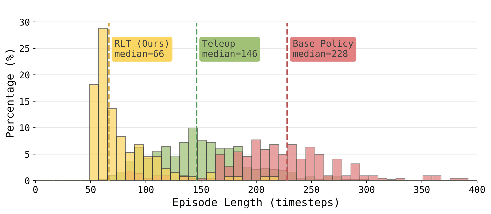

图表说明：RLT、遥操作与基础模型的关键阶段完成步数分布并列；图中中位数分别约66、146、228。 来源：锁定PDF第9页，原图9。
进一步分析：RLT分布更靠近短时间区间，作者报告一半RL片段快于全部遥操作示范，支持策略超越示范速度的观察。
注意：这是Ethernet的行为分布，不是每次都胜过人类，更不是所有任务的泛化或策略因果证明。
打开原始论文页（此附件保存在完整本地归档中） · 查看完整来源页

局限与容易发生的过度解读
论文优化的是关键阶段，而不是完整任务的每个状态。full-task 成功率仍受抓取、搬运、重定位和 handoff 误差影响；controlled-phase 的 3× throughput 不能直接解释为整条任务 3× 加速。表示瓶颈缺少独立对照：论文没有展示不同 token 维度、不同层 hidden-state pooling 或 token reconstruction quality 与 RL performance 的关系。统计信息也不完整，正文和图提供聚合结果，却没有公开所有随机种子、置信区间、每个任务的原始 episode 表和 reset 失败处理。
另一个容易被过度解读的地方是 w/o Chunk 变体同时失去 RL token 并换用 ResNet-10，因此它支持“单步加通用 encoder 的整体方案较差”，不能单独识别 chunking 的纯因果效应。reference-action dropout 的结果说明条件输入对冷启动有帮助，但不能证明 actor 学到了超出 VLA 分布的普遍策略；Ethernet histogram 也只展示一个任务的行为分布。
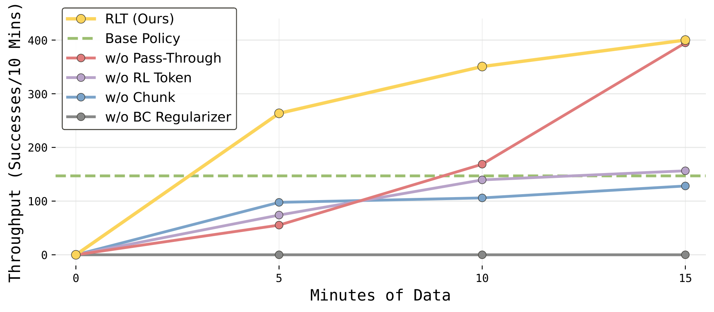

图表说明：完整方案与去token、去chunk、去参考正则或去pass-through的曲线比较，横轴体现数据积累。 来源：锁定PDF第9页，原图7。
进一步分析：去pass-through最终可能追平但早期更多失败，支持参考条件对冷启动有用。
注意：w/o Chunk同时更换为ResNet-10编码器，无法识别chunk的纯单因素因果效应；有效机器人数据时间不同于总实验时间。
打开原始论文页（此附件保存在完整本地归档中） · 查看完整来源页
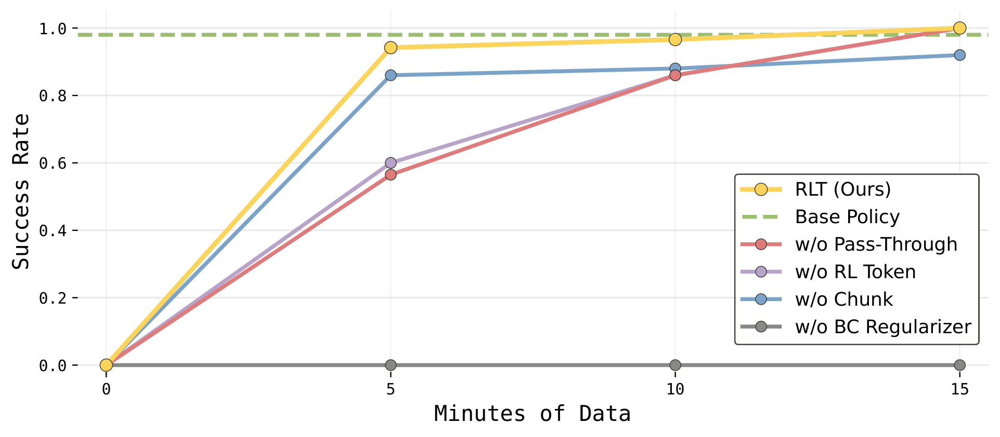

图表说明：同一Ethernet消融集合的成功率变化，与吞吐量曲线形成互补。 来源：锁定PDF第9页，原图8。
进一步分析：完整方法较快匹配基础策略可靠性，同时通过速度提高吞吐量，参考与token影响早期学习。
注意：最终点相近不表示训练过程同样可靠；不同曲线的失败次数和干预预算未完全由图给出。
打开原始论文页（此附件保存在完整本地归档中） · 查看完整来源页
两个纸面演算：检查折扣与正则的含义
下面用人工构造的两个低层步检查一个 chunk 目标，不是论文实际测量。设折扣为 0.9，奖励依次为 0 和 1，块结束后的目标价值为 0.8。若环境还未终止，当前块的折扣奖励为 0.9，后续价值再乘两个折扣，目标是 1.548；若第二步已经终止，则没有未来回报，目标应为 0.9。论文主公式没有显式写终止 mask；这里加入终止条件是说明有限 episode 的语义，具体候选代码在实现章节核对。
再看一维动作的教学例子。若 VLA 参考为 0.2，actor 候选为 0.3，距离的平方是 0.01；β=0.5 时正则代价为 0.005。这不是一个固定的残差允许范围：actor 仍可能为了更大的价值收益偏离更多，只是付出更大代价。如果把所有动作单位放大十倍而不改 β，平方距离会放大一百倍，因此动作归一化关系到约束的物理意义。
参考条件化还可写成一个混合分布解释：actor 在给定一次参考样本时是单峰 Gaussian，但参考本身由多模态 VLA 抽样。对所有参考积分之后，系统的边缘动作分布未必是单峰。这说明参考为什么能传递模式信息，却不证明训练后保留了全部 VLA 模态。
参数和协议的读者核对表
|项目|论文已给出的信息|理解时必须保留的边界|
|---|---|---|
|基础模型|π0.6；图 2 展示 SigLIP 400M、Gemma 4B、860M action expert|这些规模不等于新增 token encoder 的配置|
|表示|压缩读出 1×2048，实验省略固定指令的语言 embeddings|没有公开 token encoder/decoder 层数、头数和 FFN|
|控制|50 Hz；H=50；C=10；14维动作；stride=2|stride 改训练样本起点，不能当决策间隔|
|小网络|通常两层256；螺丝三层512|这些是 actor/critic，不是 token 的 transformer|
|在线更新|异步采集/学习；UTD=5；2 critic : 1 actor|缺少逐任务优化器、β、γ与warmup设置|
|参考输入|训练50%样本mask，推理提供参考|输入dropout与正则目标是不同对象|
|数据|示范1–10小时；在线400–1000 episodes；有效机器人数据约15分钟–5小时|不含reset/overhead的数据时间不同于墙钟|
|评测|受控阶段每任务50次；整任务仅螺丝/扎带|不能将受控提升直接等同完整任务提升|
以上表格把配置与证据边界并列，读者不必打开机器记录才能区分网络规模、训练预算和评测分母。所有数字来自同版本附录或实验节，未公开的项目保持未知。
固定源码如何把 RL Token 接成一条学习与控制闭环
这份源码能回答哪些问题，不能替论文证明什么？
它能回答的是一套具体 Python 实现如何把离线示范、视觉语言动作模型、RL token、小型策略和机器人接口连起来。本文锁定 yknxh/rlt-openpi 的提交 6a3cf09472b071516ad9742c15e0a55d9e299b18；仓库自己在 README 的声明 中说明非官方、与 Physical Intelligence 无关联，且仍在开发。这决定了后文每个“代码这样做”的结论只属于这个提交。作者论文描述的算法、作者内部实现、官方 OpenPI 基础模型与第三方复现代码，是四种不同的证据身份。
理解这份代码的关键是追踪两个载体。第一个是状态载体：环境观测经过 OpenPI 变换和 VLA，成为一串最后层 prefix embeddings，再被压缩成一个固定宽度的 z_rl；它与机器人本体状态拼接，成为小型 actor/critic 的输入。第二个是动作载体：VLA 从完整动作分布采样轨迹，取前 C 步作为 reference；actor 在 reference 周围给出实际 chunk，环境执行后把逐步奖励、下一状态和结束标志带回 replay。训练只在这些具体对象被正确连接时才有论文里“用大模型先验改善在线学习”的含义。
本章的阅读顺序沿着依赖推进：先看启动入口和配置，确定模型与硬件从哪里来；再看观测、token 和动作的张量；最后看环境、回放、参数更新与保存。十个模块都参与这条链：入口与项目元数据规定可运行边界，数据变换和转换脚本规定输入含义，两个训练模块负责数学更新，VLA 与 rollout 负责连接真实执行，工具和测试负责保存与检查。包标记文件和许可证属于项目身份，不能从中推断算法行为；相反，放在共享配置里的属性虽然篇幅很短，却决定了整条链的尺寸。
在文件树中，表示学习和在线更新分别从 scripts/train_rl_token.py 与 scripts/train_online_rl.py 进入，模型计算由 src/rlt_openpi/ 下的模型、训练与接口文件承接。沿主链读完后，还需回查观测与动作变换、checkpoint与日志、权重和数据转换、局部测试、共享配置及项目元数据：这些部分分别约束输入含义、持久化与观测、资产格式、局部行为、命令入口及仓库身份。后文在解释每一项计算时提供实际文件和行号，读者可直接沿这些入口核对对象的创建、调用与消费。
本章给出的形状和分支来自静态源码核对，没有安装运行时、加载 VLA 权重、运行测试、训练或机器人。由计算直接推导的例子会写成“可由计算推出”；它们帮助检查实现，不能被读成作者报告的新实验。论文来源采用同一锁定版本的可见正文，尤其不把 TeX 注释或旧草稿里的数值混入方法描述。
论文与源码的第一张对照表先给出整个阅读框架。后面每节再展开各行的计算与限制。
|论文对象或步骤|此提交的主要落点|运行时对象与消费者|可以核对的对应关系及边界|
|---|---|---|---|
|示范上训练 RL token，并可选微调 VLA|train_rl_token.py、RLTokenTrainer|demonstration loader、RLTokenModel、VLA loss|两个损失有各自梯度图；不是所有配置都会更新 VLA|
|从最后层 VLA token 读取状态|EmbeddingExtractor.extract_embeddings|z:[B,M,D]、valid mask、token encoder|只取 prefix；独立 reference sampling 仍跑完整动作生成|
|追加可学习 token，重建原 prefix|RLTokenEncoder/Decoder/Model|z_rl、右移 target、masked MSE|实现给出了具体 padding、轴归一化和 stop-gradient 细节|
|参考动作条件与距离约束|Actor、actor_loss|flatten reference、残差、online twin Q|第三方使用 reference 残差跳连；不能据此重建作者 Gaussian actor 的内部结构|
|C 步价值学习|compute_td_target、TwinQCritic|逐步 reward 向量、done、target Q|显式终止门控、target smoothing；next reference 被近似复用|
|在线经验与人工纠正|RolloutWorker、InterventionResult|实际动作、奖励、环境结果、六字段 replay|人类动作进入执行字段，但该提交未把 reference 替换成人类动作|
|高更新比、间隔采样、异步执行|OnlineRLTrainer.train、stride helper|完整 episode 后的局部更新循环|论文 G=5 有公开依据；代码每回合五次且串行，stride helper 没进入主链|
|关键阶段接管与最终部署|env/intervention factories、eval scripts|人工 reset、VR、VLA-only 或完整策略评估|当前入口没有论文式可学习的关键阶段切换预测器|
从哪个入口开始，配置的名字分别在控制什么？
离线表示学习从 train_rl_token.py 的 TrainConfig 开始。顶层配置包住 RLTokenTrainConfig，再增加 dataset repo_id、可选数据变换工厂和 DataLoader worker 数。这个嵌套关系解释了命令行为什么有 --train.batch-size 与 --repo-id 两种层级：前者属于训练器，后者属于入口的数据装配。tyro 将参数交给 dataclass，main 先解析数据变换，再创建 VLA、训练器、日志和 loader，最终把 loader 的迭代器交给训练器。入口没有自己实现损失或优化器，因此理解它应问“对象何时创建、同一个配置传给谁”，而不是把脚本当作独立算法。
自定义变换怎样从配置字符串接到训练循环
先比较两个具体配置。data_transforms_fn=None 时，_resolve_data_transforms 直接返回 None，不导入模块，也不调用变换工厂；VLA 与 data config 各自沿用默认 Group。因此这个 None 表示未提供自定义覆盖，并不表示关闭数据变换。
若配置是 pkg.camera.make_group，rsplit('.',1) 得到模块名 pkg.camera 和函数名 make_group，随后 import_module('pkg.camera')、getattr 取出 callable，再以 get_config(openpi_config_name).model 调用它。传入的仍是所选 OpenPI 的模型配置，既不是训练器配置，也不是 dataset。返回的 Group 才会进入前文所列的 VLA 与 loader 装配；模块路径解析、工厂调用和对真实样本执行变换，是依次发生的不同步骤。
对象装配完成后，main 以 iter(data_loader) 调用 trainer.train，把 rl_logger.log 作为日志回调；训练器正常返回，才调用 rl_logger.finish()。这补齐了“迭代器交给训练器”后面的具体调用责任：入口负责接线与收尾，frozen 或 joint 仍由 alpha>0 的判定决定，不会因为选择默认 Group、传递迭代器或关闭 logger 而改变梯度边界。相关调用可沿同一入口的 resolver 与装配顺序核对；异常路径是否能走到收尾，应结合后文关于没有统一 finally 的限制理解。
在线学习从 train_online_rl.py 开始。顺序是先建 VLA，读第一阶段 token checkpoint，再按该 checkpoint 中可选的 vla_model 恢复离线微调后的 VLA；之后创建 OnlineRLTrainer，可选恢复在线 checkpoint，再创建环境与人工干预管理器，最后开始采样和更新。这一顺序有实际影响：在线 checkpoint 负责 actor/critic、优化器和计数；它不能替代 base VLA 文件和第一阶段 token checkpoint。入口特意在 CPU 读取第一阶段完整 payload，再把需要的 VLA 权重交给现有模型，随后删除临时 payload、清 CUDA cache，目的是避免临时副本占住显存；这只是加载策略，不是模型被重新训练。
共享 training/config.py 给出两套独立 dataclass。第一阶段默认 D=2048，encoder/decoder 各两层、八个头，训练 5000 次更新，batch=32，学习率 1e-4，权重衰减 1e-5。vla_finetune_alpha=0 才是默认冻结模式；如果设为正数，VLA 采用单独的 1e-5 学习率。第一阶段的 warmup_steps=500 指学习率线性预热次数，梯度范数上限是 1.0。这里的 warmup 没有与机器人交互，也不往 replay 填数据。
第二阶段的同名 warmup_steps=1000 则被在线训练器用于采样循环次数。源码每次迭代执行一个 C 步动作块，所以它是“1000 个 chunk 迭代”的配置语义，而不是自动等于一千个机器人单步。默认 C=10 时，在没有提前终止且控制接口按约执行的条件下可对应至多一万次单步动作；训练器的 warmup 计数器也每次固定加 C。已有 README 把它称为环境步，必须沿着消费者纠正这个歧义，不能只按变量名解释。若环境在块内提前停止，真实动作数还可能少于这个固定计数。
第二阶段的尺寸同样应从消费者反推。state_dim 属性返回 embedding_dim+action_dim，action_chunk_dim 返回 chunk_length*action_dim；D=2048、d=8、C=10 时分别为 2056 与 80。这不是任意两个超参数：actor、critic、replay 和 rollout 的 reshape 必须同时匹配。配置里 vla_action_horizon=16 是此提交保存的意向字段，实际 wrapper 读取的 H 来自所选 OpenPI model config；get_rl_chunk_reference 也只是 Python 切片，没有根据这个字段重建 VLA。修改 config 中一个 H 值，不能证明采样器真的输出了新的 horizon。
其余在线默认值包括两层宽度256的 MLP、actor noise 0.1、reference dropout 0.5、discount 0.99、Polyak 0.005、actor/critic 学习率各 3e-4、batch=256、replay 容量十万、两次 critic 对一次 actor 的延迟参数。max_episode_chunks=150 是训练入口转交的上限；底层 RobotEnv 构造函数自己还有默认50，入口显式传参时以前者为准。配置中的 log_every、print_every 等字段也不能自动保证被两个训练循环同样消费；是否生效应看调用条件，字段存在只证明它可以被记录。
exp/ 下的 shell 文件属于一组具体机器示例。比如 stage2.sh 覆盖 warmup 为250、C为5，而不是采用上述默认值；它还带本地 checkpoint 路径和 Franka 工厂。它们可展示参数如何接入口，不能充当论文实验配置，更不能证明这台工作站具备对应数据、权重或硬件。run_name 为空时会在 dataclass 初始化阶段用当前时间生成目录名，这也解释了同一命令多次启动会出现不同子目录。
配置尚未检查完，为什么资产加载和 CUDA 操作可能已经发生？
两个训练脚本都在正常组装时显式选择 CUDA，底层类支持 CPU、单元测试在 CPU 创建对象，并不使这两个命令入口自动获得 CPU 选项。Stage1 的 data_transforms resolver 只对 None 返回 None，空串不是同一分支；非空路径先拆 module/function、导入，再以 OpenPI 模型配置调用工厂。导入或工厂异常会沿调用传播。Stage2 则先建立 logger、VLA、token，条件性注入 Stage1 的 vla_model，清 CUDA 缓存，再建 trainer 和处理 resume，最后才检查 env_factory。缺工厂会产生 SystemExit(1)，但更早的依赖、文件或设备错误可以先出现。因此这段入口的失败顺序需要按调用链理解，不能从错误类型推断它在任何资产处理前就拒绝配置。依据为 Stage1 的 resolver 与装配、Stage2 的资产与工厂顺序。
正常训练返回后才执行 Logger.finish，两个 main 均没有统一 finally 保证异常路径也走到它。config 中以时间填充 run_name 也没有唯一性锁；两个维度属性只按当前字段做加法或乘法，不会同步重建已经存在的网络和 replay。安装脚本同样先完成 core 环境和 transformers 替换，之后才在 robot 分支检查 DROID_DIR；缺少 ZED 安装脚本时会跳过 pyzed 并继续打印 Done。这里解释的是局部状态和失败发生点，本任务没有执行这些安装或训练操作。出处为 config 的初始化与属性、安装各阶段的真实顺序。

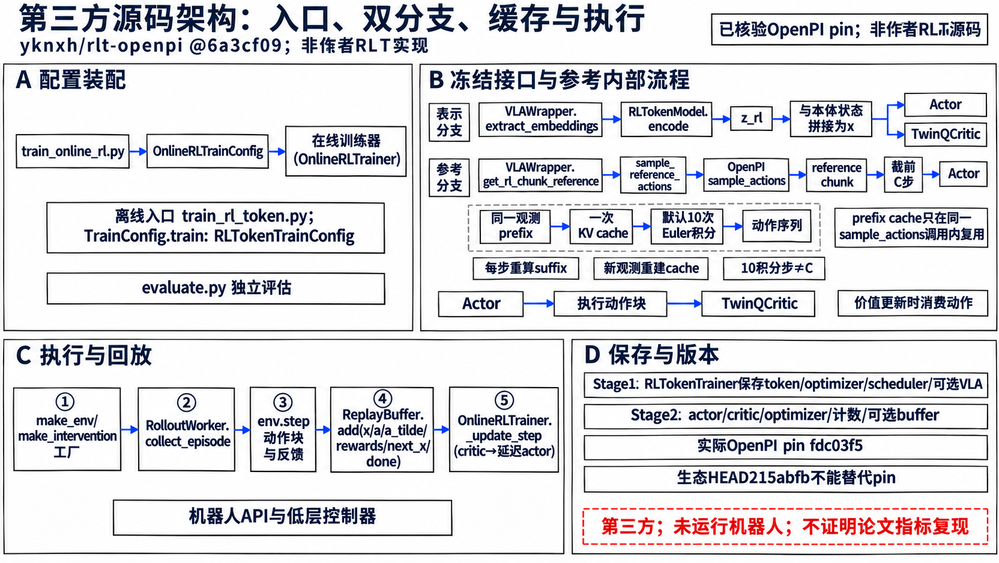
图 F07 全部细节说明：入口、表示、动作和依赖如何组成架构
架构图先回答“谁装配谁”
这张图解释第三方固定源码的系统结构，阅读时应先看入口和配置，再看数据如何跨对象流动。train_rl_token.py 对应第一阶段训练，通过入口的 TrainConfig 中的 train 配置建立 RLTokenTrainer；train_online_rl.py 则使用 OnlineRLTrainConfig 建立 OnlineRLTrainer。两条入口分别负责表示学习和在线策略优化，并不是在同一个 optimizer 中把所有损失混合更新。独立的 evaluate 入口承担评估装配，因此图将它作为独立卡片，不能凭位置相邻就添加“在线训练调用 evaluate”的箭头。
配置对象不仅提供数值，还决定要创建哪些真实对象、从哪里载入 checkpoint，以及在线动作块长度、actor 和 critic 的输入维度。读取配置名称本身不足以确定模型内部的全部行为。例如候选依赖的 OpenPI pi05_droid_finetune 在准确 pin 中使用 horizon 16、内部 action_dim 32，而另外一个 pi05_droid 配置使用 horizon 15。它们不能与论文 π0.6 的 H=50、物理动作维度14混作同一组数字。架构图中的参数边界因此必须随配置和版本解释，不能把论文默认值贴到所有第三方对象上。
冻结表示和参考动作是两条独立接口
中间区的第一条链是 VLAWrapper.extract_embeddings → RLTokenModel.encode → z_rl。这里的 embeddings 指冻结 VLA 的内部 prefix 表示，encode 将变长上下文压缩为一个固定维度向量；它不是语言解码结果，也不是直接读取相机像素。随后与本体状态拼接形成 x，供 actor 和双 Q 使用。图中表示流到 critic 的箭头表示 critic 需要状态，而不是 critic 自己重跑完整 VLA。
第二条链是 VLAWrapper.get_rl_chunk_reference，内部调用 sample_reference_actions 再截取前 C 步。参考由动作生成路径取得，不能从 z_rl 直接画出一个未经源码实现的动作 decoder。特别要避免把上游模型可能存在的 sample_actions 方法误写成 VLAWrapper 自己的方法；wrapper 对外暴露的真实接口名决定了调用链能否在固定源码中逐级定位。
actor 接收 x 和参考动作，输出执行动作块；critic 接收状态和待评估的动作。图中参考不直接进入 critic，因为该 critic 的显式接口没有 reference 参数。执行动作进入 critic 的箭头对应 replay 和优化时的动作价值评估，不意味着机器人控制时每一步都先由 critic 在线批准。这条区别把“模型依赖图”与“实际控制时序”连接起来，又避免把两种图混成一条实时调用链。
从工厂到回放，哪些是项目实现，哪些是外部边界
执行区按五个步骤阅读：工厂 make_env / make_intervention 提供运行对象，RolloutWorker.collect_episode 采集一回合，env.step 执行动作块并返回反馈，ReplayBuffer.add 保存转换后的样本，最后由 _update_step 抽样更新网络。这是对入口与数据消费者的分工梳理；worker 内部重复执行动作块采集，回合结束后 trainer 才进入更新循环。因此，一张架构图中相邻的两个框，也可能被不同层级的循环包围。
机器人API和低层控制器放在独立的白色外部接口卡片中。它们表示这个研究仓库需要接入真实硬件，但不能据一个接口名推断其驱动、限位、安全恢复或控制频率在当前快照中全部实现。图也没有发明 handoff classifier；论文系统具备的任务阶段协议，不能因为它有意义就补画成第三方源码里已存在的对象。
回放字段强调状态 x、执行动作 a、参考 a_tilde、奖励序列、next_x 与 done 的区别。状态压缩、动作先验与实际执行分别承担不同角色；如果把参考当作实际执行动作输入 critic，就改变了回放样本的含义。人工干预时是否替换 reference、next reference 是否重新采样、stride 方法是否真正被主循环消费，也都需要继续沿图 F04 和图 F10 的具体路径核对。
参考生成内部的缓存，为什么不等于跨观测记忆
参考支路还需要展开到准确 OpenPI pin 的 sample_actions。同一观测的图像与语言先形成 prefix，模型以 inputs_embeds=[prefix_embs,None] 和 use_cache=True 计算一次 prefix 的 KV cache。后续默认十次 Euler 积分分别用当前噪声动作和时间重算 suffix，把同一份 prefix cache 传给动作专家分支；这次调用使用 use_cache=False，不会把上一轮 suffix 当成下一轮不断增长的历史。每步按 x_t ← x_t + dt·v_t 更新动作，默认 dt=−0.1，再输出配置 horizon 对应的动作序列。
缓存减少的是同一观测下重复编码 prefix 的工作，不是省掉每一步动作专家计算。下一次 wrapper 面对新观测再调用 sample_actions 时，函数会重新建立 prefix 和 cache，没有从这次返回值中带出跨观测缓存。十次流积分描述生成序列内部的数值求解；在线 C 步描述随后截取和执行多少动作，两个“10”即使数值碰巧相同，也不能在图中合成一条时间轴。这里的缓存结论来自已核对的上游 pin，不能冒称作者 RLT 的未公开实现。
保存边界和准确依赖为什么属于架构
第一阶段保存 token 模型、optimizer、scheduler，并在 joint 配置需要时保存相应 VLA 状态；第二阶段保存 actor、critic、各自 optimizer、运行计数，并按配置决定是否包含 replay buffer。保存框不是一个“所有训练状态自动齐备”的承诺：具体恢复顺序、buffer 是否存在和计数如何继续，仍由各自加载函数决定。图把两个阶段分开，是为了防止把 token checkpoint 当成在线 actor checkpoint，或者认为只恢复网络权重就一定等同于恢复训练过程。
依赖区同时保留 OpenPI pin fdc03f5 及其完整提交 fdc03f527881cdfc8ae1a168ed6a20c60edbbbcc，还标出生态扫描时取得的 215abfb 快照。前者是候选实际声明的依赖，后者是独立核验的上游 HEAD；不能用后者替代前者来解释配置、缓存或变换默认值。准确 pin 已核对140个 blob和三份官方 raw 代表文件。ALOHA/LIBERO 的 gitlink 身份另行保留，没有把其嵌套源码冒称为已经阅读的 PI05/DROID 关键依赖。
最后的身份框限定整张图的证明强度：它能说明这个第三方快照如何装配对象和传递数据，不能证明作者的内部实现、真实机器人运行成功或论文指标复现。把版本、checkpoint 和外部机器人边界与网络结构放在同一张图里，正是因为这些条件共同决定“这段源码究竟实现了什么”。
来源：第一阶段入口、在线入口、VLA wrapper、准确上游 pin 核验（此附件保存在完整本地归档中）、同一观测内的采样缓存。
用一个块边界检查形状与调用责任
作为教学代入，取D=2048、d=8、C=10，并假定所选模型H=16、输出变换后动作宽为8。表示分支把[1,M,2048]压成[1,2048]，再接八维本体状态，形成2056维x；reference分支完整采样并变换成[1,16,8]，截前十步后为[1,10,8]，再展平成80维供actor。双Q评价x与80维待评动作，不能把reference误当成critic的第三个显式参数。C区所列replay于是保存2056维当前与下一状态、80维实际动作与原参考、十项奖励及done。H、内部动作宽、输出动作宽和C各自需要对应，这组代入不表示作者使用了此配置或已测得效果。
A区上方蓝线只连接在线脚本、OnlineRLTrainConfig与实际OnlineRLTrainer；离线入口的配置放在下方资料卡，离线训练器名称在D区第一行，避免把两种训练责任混写。B区重复出现的Actor或TwinQCritic是同类消费者在不同关系中的别名；reference内部虚线小框只展开这次采样，蓝线不表示跨新观测记忆。C区编号一至五说明工厂、采集、执行、入库与更新各自的责任，回合内的循环和干预互斥分支继续由相邻F04详解解释。D区四行是独立的保存与版本事实，红框限定证明强度；图中矩形位置、边框和空白没有额外的线程或梯度含义。
为什么读懂 OpenPI 版本，比直接安装“最新版”更重要？
因为本项目直接调用了 OpenPI 的内部模型路径与变换接口。pyproject.toml 的 tool.uv.sources 将 OpenPI 绑定到 fdc03f5，这与主仓库的长 commit 是两个独立身份。主仓库固定不变并不意味着外部 VLA 的行为也已固定；如果直接拿 OpenPI 当前 HEAD，attention wrapper 的返回结构、数据配置和模型层路径可能发生变化。这里“可能”是版本兼容性的工程推断，不是本章已经复现过某次故障。代码正确的阅读单位是主提交加依赖 pin，而非只记一个仓库名。
这个 pin 同时揭示了两个安装入口的不同。setup_env.sh 使用 Python3.11、显式从 Git 安装该 OpenPI revision，并把其 transformers replacement 文件复制进环境。脚本的 --robot 分支才增加 DROID、Oculus、Polymetis、ZED 与图像库相关处理；没有机器人分支并不妨碍纯模型侧开发，但也不代表真实机器人准备完毕。uv 配置还覆盖部分传递依赖，且文件明说这些 source 设置是 uv 专用，pip/conda 不自动解释。NumPy 在基础依赖与 uv overrides 中甚至存在不同约束，脚本又为编译扩展固定 <2.0；因此不能从单个依赖行断言最终安装解。本文只指出可观察的声明，没有执行 resolver。
包的根目录还包含 Apache-2.0 许可证、忽略规则、一个版本标记和数个空 __init__.py。它们确定分发、命名空间与版本边界，不能当作模型模块。共享 config 被放在这部分元数据范围里却并不“无关紧要”：它仍被两个训练入口消费。原始概览 PNG 是说明材料，不是可运行模型，也没有“源码行数”的含义；读者应回到对应函数判断箭头与梯度，而非把图片当唯一实现证据。
依赖一旦被识别，下一步就能读懂可替换接口。代码并未把 Franka 写死在 trainer 里；factory.py 先把项目根按条件插入 sys.path，再把 dotted path 用最后一个点拆成模块与函数，导入模块、取出 callable。make_env 原样转交 kwargs；make_intervention 明确用关键字 env=env 传入已有环境，再转交其它参数。这样工厂可以拿到同一底层机器人句柄，避免两套对象各自操作不同硬件。动态导入只是解析机制，它不会检查自定义工厂是否真的返回满足 chunk 接口的环境。
环境工厂接到什么参数，检查又在什么时候发生
把工厂接线代入一个具体配置：action_dim=config.action_dim=6、chunk_length=config.chunk_length=4、task_prompt=config.task_prompt='place'、max_episode_chunks=config.max_episode_chunks=11。工厂路径来自 config.env_factory，所以调用是 make_env(config.env_factory, action_dim=6, chunk_length=4, task_prompt='place', max_episode_chunks=11)。这里的6是在线配置的机器人动作宽度；读取的是 config.action_dim，配置中不存在名为 config.vla_action_dim 的字段，不能用一个自行补出的名称替换它。
前文的 Stage 1 权重恢复还应保留缺键分支：入口在 CPU 读取 Stage 1 payload，只有其中含 vla_model 才把权重恢复到 base VLA；缺少该键时记录 warning，并保留 base VLA。临时 payload 删除后才创建 OnlineRLTrainer，可选 resume 又在 trainer 已建立后执行。这与前文列出的 Logger、VLA、token checkpoint 的先后顺序共同确定了后续环境检查能够到达的时点。
若这些较早步骤都成功，而 env_factory 是空字符串，入口先调用 logging.error(...) 记录 ERROR 级错误，再 raise SystemExit(1)，退出码为1，这个分支不会继续创建环境。合法工厂才进入 make_env，之后继续可选的 intervention 与训练。反过来，若 VLA 加载在前面已抛异常，控制流会在到达这项检查前向上传播；它既没有执行空工厂分支，也不能被解释成这次 SystemExit(1)。这两条路径可结合入口中的模型与工厂顺序理解，均为静态控制流推导。
固定依赖怎样补齐配置、采样缓存与训练开关的解释
主仓库的 OpenPI 短 pin fdc03f5 对应完整提交 fdc03f527881cdfc8ae1a168ed6a20c60edbbbcc。它与前述 215abfb… 官方对照快照分别保存。下面继续追到这个实际依赖中的类与方法，解释第三方 wrapper 所调用的对象；这里仍不是作者 RLT 内部实现，也没有加载模型权重或运行机器人。
配置名首先决定模型真正的动作形状。该 pin 的 pi05_droid_finetune 配置 明确使用 pi05=True、内部 action_dim=32 与 action_horizon=16；主仓库的 stage2.sh 选择的正是这个配置。另一个名字 pi05_droid 在第629行附近使用 H=15。因而“π0.5模型”“DROID数据”和“动作horizon=16”不是可互换的描述，必须保留配置实例。内部32维也不是Franka环境直接接收的32个控制量：模型输入/输出变换、有效动作切片和机器人自己的d共同决定最终接口。论文的14维、H=50则属于π0.6实验，不能由这里的配置反推。
PI0Pytorch.embed_prefix把相机与相机mask严格配对。每幅图像经视觉编码器变成多个向量，该相机的布尔有效性沿这些位置展开；语言token经embedding后乘以其宽度平方根，再与图像序列拼接。prefix内部的attention分组值为零，允许图像与语言位置充分相互访问，而有效性mask仍独立控制缺失视角与padding。这说明“第三相机补零图但mask=False”会沿整个相机token组传播，不是只屏蔽一个像素或一个位置。
wrapper取得的两路输出也能在这个固定依赖中分清。PaliGemmaWithExpertModel.forward检查两个 inputs_embeds 槽：suffix为None时只执行PaliGemma语言模型，返回 [prefix_output,None] 及可选cache；两个槽都存在时才进入表示与动作专家共同计算的分支。第三方提取器传 [prefix_embs,None] 且关闭cache，读取的是这条prefix路径的最终隐藏状态；joint训练临时捕获的则是完整训练forward里的prefix输出。因此prefix读出节省了该次动作生成，但没有使独立的reference采样消失。
PI0Pytorch.sample_actions在一次新观测下先构建prefix，并以 use_cache=True 取得图像/语言的KV。随后从形状 [B,H,action_dim] 的噪声开始，反复调用denoise_step；该接口默认10个流积分步，每步使用同一个观测prefix cache，Euler步长为 -1/num_steps，从流时间1走向0。这里的“10步”是生成器内部的积分次数，不是RL执行的C，也不是低层机器人动作数。代码没有把这份cache保存成跨新观测复用的通用状态。一个chunk边界重新观察后，重新采样参考仍要构建相应的新prefix；把同观测去噪内复用误写成跨观测缓存，会低估控制链的成本。
训练forward则使用另一条计算：第317行起采样噪声与流时间，构造带噪动作和监督向量场，prefix与suffix共同参与Transformer，动作投影后返回逐坐标平方误差。第三方joint wrapper再对这项张量取mean作为L_vla。它与对VLA表示序列的L_ro是不同监督对象：前者学习动作向量场，后者学习压缩读出；两者来自同次forward，不代表共享同一条反向通路。
开关还需要追到最后的消费者。PI0Pytorch的checkpoint helper只有在自身flag与training同时满足时才启用激活重算；但依赖中的Gemma双分支forward还检查自身training与专家模型属性，并可能强制开启其checkpointing。于是候选配置 gradient_checkpointing=False 只保证不走候选的显式enable调用，不能据此声称固定依赖的所有重算分支都被关闭。这个细节影响对内存和重算路径的理解，不改变前面按detach与optimizer分析的参数所有权，也不是已经测得的显存或速度结果。
数据变换的默认值同样可以落到实处。OpenPI Group的inputs与outputs均默认空元组；push在输入尾部追加、在输出前端加入新变换。因而主仓库动作键补丁若只写 Group(inputs=new_inputs)，并没有把旧outputs带入新对象：在该pin上新outputs就是默认空元组。是否影响具体数据实例还要看原repack Group是否含非空outputs，不能把条件性结构差异自动写成已观察到的数据错误。
最后，PI0Pytorch构造函数会检查transformers replacement是否安装正确。这解释了setup脚本为什么不仅声明包版本，还复制特定替换文件。这里已经核对固定依赖的接口、返回结构和相关分支；没有安装依赖、执行resolver或证明当前机器能加载任意checkpoint。ALOHA与LIBERO外部子模块属于另行登记的示例/机器人生态范围，本章不声称读取其全部内容，也不借它们替代本次PI0.5/DROID调用链。
|依赖次序与入口|创建或调用的对象|交给下一层的材料|必须在进入下一层前满足的条件|
|---|---|---|---|
|离线 CLI 与 transform resolver|TrainConfig、动态 Group factory|OpenPI model config、同一个 transform Group|数据变换必须与 checkpoint/机器人 schema 匹配|
|VLA wrapper 初始化|OpenPI PI0、EmbeddingExtractor、norm stats|batched Observation、prefix/reference/loss 接口|权重和 config 匹配；asset_id 与统计可加载|
|demonstration loader|LeRobot metadata、OpenPI dataset transforms|(Observation,actions) 无限迭代器|action列重打包、batch完整、dtype与动作horizon一致|
|token trainer|encoder、decoder、两种训练分支|token checkpoint与可选VLA权重|joint对象先建立再恢复；loss图边界正确|
|在线入口|token loader、OnlineRLTrainer|冻结token、actor、twin Q、replay|第一阶段架构从保存config恢复；在线维度对应|
|dotted env/intervention factories|RobotEnv或SimEnv、干预管理器|单步执行函数、chunk接口、最终obs|C/d/控制频率/实际动作空间一致|
|RolloutWorker|VLA预处理、state编码、actor或人类动作|六字段chunk transition与统计|执行动作和reference的来源须分别识别|
|online update与save/eval|TD target、online/target Q、optimizers|参数、计数、replay、评估结果|终止门控、局部更新调度、保存与加载路径一致|
一张相机图像和一段示范，怎样变成模型真正接收的输入？
环境的 raw observation 先遵循机器人的 schema，不是直接一个现成的 [B,M,D]。Franka 工厂给出 joint positions、gripper position、三个指定 camera serial 对应的图像以及 task prompt。它们被 ThreeCameraDroidInputs 整理成 OpenPI 的 state/image/image_mask 结构：夹爪若是标量先加一维，再与关节调用未指定 axis 的 np.concatenate，沿默认轴0拼接；预期的一维单样本中，这也就是特征轴；浮点图像按255尺度转 uint8，CHW 形状在首维为3时改成 HWC。这里的判断依赖输入遵循约定；它没有替任意值域的浮点图像自动估计正确归一化。
第三相机是这个适配层的关键分支。若提供 exterior_image_2_left，它被放进第三个 image slot，mask=True；若没有，使用与主相机同形状的零图，mask=False。零图不是被观测到的黑色场景，mask 才告诉模型这是缺失视角。PI0/PI05 用 base_0_rgb/left_wrist_0_rgb/right_wrist_0_rgb，PI0_FAST 用另一组 slot 名称；输入类按 model_type 分支选择，不支持的类型明确抛错。若示范含 actions 或 prompt，它们也被带入返回结构。相机布局与 mask 的这一点差别，会沿 prefix mask 传到后面的 attention 与重建，因此不能在数据转换时随意丢第三路图像。
缺失第三路时，实际构造语句是 third_image = np.zeros_like(base_image)，因此继承的是已经过 _parse_image 的主相机图像的 shape 和 dtype。若解析后的主图为 HWC [10,20,3]、uint8，零图也为 [10,20,3]、uint8，所有元素为零，第三路 mask 为 False；这里没有另建默认 float64 数组，也没有凭空补出真实相机内容。
图像与 mask 的组装都使用同一组 names：图像序列严格为 (base_image, wrist_image, third_image)，mask 序列严格为 (True, True, third_mask)。按位置 zip 后，完整对应关系如下；表中的 key 同时用于 image 和 image_mask，不能按 key 的英文名称重新猜测物理相机。
|模型类型|输入图像|image / image_mask 的 key|该 key 的 mask|
|---|---|---|---|
|PI0 / PI05|base_image|base_0_rgb|True|
|PI0 / PI05|wrist_image|left_wrist_0_rgb|True|
|PI0 / PI05|third_image|right_wrist_0_rgb|third_mask|
|PI0_FAST|base_image|base_0_rgb|True|
|PI0_FAST|wrist_image|base_1_rgb|True|
|PI0_FAST|third_image|wrist_0_rgb|third_mask|
例如 PI0_FAST 缺少第三路时，base_1_rgb 仍接收真实 wrist 图且 mask=True，零图及 False mask 落在 wrist_0_rgb。这是相同三项输入在不同模型 schema 下的重新命名，不是交换物理图像来源。
变换工厂 three_camera_droid 返回输入上述类、输出沿用 OpenPI DroidOutputs 的 Group。第一阶段 resolver 接收的参数是 get_config(...).model，而非 trainer config；同一个 Group 同时送给 VLAWrapper 与 demonstration loader。这能让两路理解相同 schema。第二阶段入口没有对应 data_transforms_fn 参数再注入相同 Group，而是使用所选 OpenPI config 默认变换；如果第一阶段用三相机覆盖、第二阶段 config仍是另一套默认，不能仅凭权重成功加载就宣称观测处理完全一致。这是从两处构造参数直接得出的迁移风险，不是本文已测出的性能下降。
工厂在构造 input 实例时明确写出 ThreeCameraDroidInputs(model_type=model_config.model_type)。所以传入 PI0_FAST 的 model config，就把该 input 实例的 model_type 设成 PI0_FAST；随后真正调用实例处理样本时，才使用上表的 PI0_FAST 槽位。返回 Group 只是装配这个配置和输出变换，尚未对任何一张样本图执行转换。
prompt 还有一个独立的字典副作用：第80行起遇到 bytes 时，先执行 data["prompt"] = data["prompt"].decode("utf-8")，再执行 inputs["prompt"] = data["prompt"]。例如原输入保存 UTF-8 编码的“移动到托盘”，调用后返回字典中的 prompt 为该字符串，原 data 的 prompt 也已被改成同一个字符串值。只观察返回 schema 会漏掉这次输入字典改写；若调用者保留并复用原字典，后续看到的已是 str。
VLAWrapper 再装配全链。输入按 data inputs → default prompt injection → Normalize → model inputs 执行；输出按 model outputs → Unnormalize → data outputs。model inputs通常涉及图像尺寸、语言token化、state/action padding，它们属于固定依赖的责任。norm stats 优先从 checkpoint 旁的 assets/<asset_id> 读取，只有 FileNotFoundError 才退回 data config已有统计；asset_id缺失直接ValueError，两处都无stats则抛FileNotFoundError。任意资产加载错误不能被泛化为“会自动使用默认统计”。
raw observation预处理时先复制字典并跑输入链，再逐叶转NumPy、转torch、搬到wrapper device并加batch维，最终Observation.from_dict。因此 state 此时已不是直接的原始关节数组，而可能已经归一化并被填充到模型内部宽度。后面小RL只取前d列，并不意味着取回了未归一化物理量。动作则经过输出链才回到机器人空间；前后两个空间的区别，必须在actor clamp与replay解释中继续保留。
demonstration loader负责另一端。它先从OpenPI config创建data config，再写入用户repo_id。metadata若只有singular action且没有plural actions，会同时改action_sequence_keys和RepackTransform的来源；若两者都有，则不走该补丁。之后创建按模型horizon取动作序列的dataset并应用变换。worker>0采用spawn和persistent workers；始终drop_last，尾部不足batch的示范会被丢掉。外层无限迭代器一遍遍重启底层loader，逐叶只把浮点tensor转float32，保留整数语言token和布尔mask等类型，输出Observation与actions二元组。无限迭代没有凭空创造数据；若底层连一个完整batch都没有，反复遍历也无法产出训练样本，这是由循环与drop_last可推出的边界。
单样本 policy transform 之外，还需要理解把示范送给训练器的 loader。build_data_loader先用 OpenPI config 创建 data_config=config.data.create(config.assets_dirs,config.model)，再用 dataclasses.replace 写入调用者 repo_id。动作列适配的条件是单数存在且复数不存在：metadata 的 features 含 action 且不含 actions 时，才把 action_sequence_keys 改成单元素元组 ("action",)，再修补 repack；如果两列同时存在，保留原配置，不自动优先改成单数。这个分支同时协调序列读取列和逻辑输出名，避免读取 horizon 动作时仍指向另一列。
repack 修改还带有类型和键两个条件：逐项处理 inputs只改既是 RepackTransform、其 structure 又含 actions 的项。它以 dict(t.structure) 浅复制映射，把新字典的 actions 值改成 "action"，再建立一个新的 RepackTransform；其余键值保留，旧 structure 不被原地改写。没有该键的 RepackTransform 和普通 transform 都按原对象追加进新 inputs，顺序也不改。例如旧映射含 state→q、actions→u，得到的新项仍含 state→q，仅 actions→action；旁边一个图像处理项不会被删除。浅复制也不表示所有嵌套对象都被深复制。
重建 repack 时只传 Group(inputs=new_inputs)，随后替换 DataConfig返回新的 data_config；旧 repack 的 outputs 没有作为参数传入，不能声称它们在这段代码中被显式复制。这是 repack Group 的重建，与 policy 工厂提供的 data-transforms Group 是两个不同配置位置。
自定义 Group 的替换发生在动作列适配之后：非 None 的实参 G 被写进 data_config.data_transforms，然后依次调用create_torch_dataset 与 transform_dataset：创建数据集时实参是 data_config, config.model.action_horizon, config.model，再对该 dataset 应用 data_config 的变换。horizon 来自所选 OpenPI 模型，不是 online 执行的 chunk_length，也不是 batch_size；G 也不会自行改变该实参。至此，字段重打包、机器人样本变换和模型规定的动作序列长度才共同确定后续 batch 的 schema。
collate 沿 batch 轴堆叠同结构的对应叶子。_collate_fn用 jax.tree.map 找到各样本的对应叶子，对每个值 np.asarray，再 np.stack(...,axis=0)。两条各为 [3] 的 state 会得到 [2,3]，样本自己的维度没有被展平；对应的 actions、图像与 mask 也分别多出最外层 batch 轴。该函数没有为不同 shape 自动补齐，树结构或叶子形状不一致仍要由数据与前面的变换解决。
类型转换只把浮点叶子统一为 float32。_to_float32先 torch.as_tensor(x)，仅当 is_floating_point() 为真时才 .float()：float16、float64 等变为 float32，bool mask 保持 bool，int64 语言 token 保持 int64，uint8 图像也不会仅因该函数而被强制转浮点。这一步不是 Normalize，更不执行图像乘255；必须与单样本图像解析和模型变换分开理解。
worker 的零值分支不会创建 spawn context。DataLoader 构造先设 multiprocessing_context=None；num_workers>0 才取 multiprocessing.get_context("spawn")。因此0 worker 对应 None 与 persistent_workers=False，2 worker 对应 spawn context 与 True；两者都指定 collate_fn，并且 drop_last=True。build_data_loader 的默认 num_workers=2、shuffle=True，实际 batch_size 与 shuffle 仍取调用者参数。spawn 与持久 worker 改变数据加载进程的生命周期，不改变样本维度；drop_last 则会删除本轮不足一个完整 batch 的尾部。
无限包装重启的是底层遍历。_InfiniteLoader.iter外层 while True 在一轮 loader 耗尽后再次进入 for，每批先递归完成上述 tensor/dtype 转换，再返回 Observation.from_dict(batch) 与同一个已转换 batch["actions"]。没有另采样、重建或复制一套动作标签。若数据集仅3条、batch_size=4且丢尾，每轮没有完整 batch，外层重启也不会跨轮凑出4条；next 可能一直没有产出。这说明“无限迭代器”只描述重启机制，不能保证非空、schema 正确或类型转换等同于设备搬运。
已经成批的观测搬到设备时，哪些属性保持原样
loader 已经完成类型转换后，训练器的 _obs_to_device 只承担设备搬运。它按列明字段重建一个新的 Observation：逐项对 images、image_masks 中的 tensor 调 .to(device)，对 state 也调 .to(device)。字段结构、数值、shape 和 dtype 按这次设备迁移保留；这里没有新增 batch 轴，也没有把所有叶子再改成 float32，不能与 wrapper 对 raw observation 的预处理混用。
例如，已有 tokenized_prompt 和 token_ar_mask 都是 tensor，而 tokenized_prompt_mask 与 token_loss_mask 都为 None。前两项分别搬到目标设备；后两项仍是 None，既不会对 None 调 .to，也不会自动生成一张缺失的 mask。搬运条件是该字段不为 None，并非检查 tensor 的长度或内容；不能因为同属 prompt 或 token 相关字段便一并搬运或一并补齐。
对外层字典则逐 value 递归：嵌套 tensor 叶子返回 leaf.to(device)，字符串 label 原样返回，其他非 Observation、非 dict、非 Tensor 对象也原样返回，NumPy 数组不会自动转成 tensor。外层字典的递归保留与 Observation 的明确字段重建是两种分支。如果把一个带 label 的 dict 放在外层容器中，它会按这些规则处理；若只是给 Observation 动态挂上未列明的自定义字段，就不能承诺这个字段被复制到新 Observation，因为重建并没有自动遍历全部附加属性。
设备搬运也没有执行 detach、no_grad 或 train/eval 切换。一个 tensor 到了训练设备，并不能据此判定它已停止梯度；VLA 是否冻结、提取时是否建图，仍需查看后面相应的训练分支。
数据变换出错后，为什么不会自动得到一个“可用的无限 loader”？
build_data_loader 是一个依次装配组件的普通函数。它先创建数据集，再调用 transform_dataset，成功后才决定 worker 的 multiprocessing context、构造 PyTorch DataLoader，最后返回 _InfiniteLoader。这几个步骤之间没有包住 transform_dataset 的 try/except，也没有回退到未变换数据集的分支。因此，若变换调用此时抛出 RuntimeError，这个异常会直接向调用者传播；后面的 context 选择、DataLoader 构造和无限包装返回都没有发生。已经完成的 config 创建、repo_id 替换和动作列适配不会因为异常自动撤回，但它们也不能代替一个成功返回的 loader。
例如，自定义 Group 已经写入 data_config，create_torch_dataset 也成功，随后图像变换因为字段缺失抛错。执行停在这次变换调用，既不会跳过出错样本继续搭建 loader，也不会因为 _InfiniteLoader 的名字带“无限”而重新运行建造过程。无限循环只存在于已经成功建立的包装器的迭代方法中，不能捕获发生在包装器创建之前的异常。这里讨论的是本函数装配时真正抛出的异常；若某个外部变换选择惰性求值、到迭代时才报错，则需要沿它实际发生的后续调用点分析，不能把两种时点混成一条执行轨迹。依据是本仓库 data_loader.py 的完整装配顺序。
堆叠失败的异常类，怎样由外部依赖的源码补齐？
本仓库直接提供的事实是：collate 在每个对应叶子上先做 np.asarray，再用 np.stack(...,axis=0) 沿新 batch 轴堆叠；这里没有广播、补零或裁成共同长度的逻辑。要进一步回答“不等形状具体抛哪一类异常”，需要查看被调用的 NumPy 合同，不能把本仓库只出现的一次函数调用当成异常类的直接定义。
本次另外核对了 NumPy 官方的两个准确版本。在 1.26.4 的 stack 实现与 2.1.0 的同一实现中，函数先收集所有输入的 shape；shape 集合包含不止一种形状时，立即抛 ValueError('all input arrays must have the same shape')，之后才有扩轴与 concatenate。这两份官方文件已通过 Contents API 返回的 Git blob 哈希和本地 SHA-256 核对，没有安装依赖或执行目标程序。
据此，在明确使用上述任一实现的例子中，三条 state 分别是长度 4、4、5 的普通 NumPy 数组时，np.stack 会抛 ValueError，不会产生 [3,5] 的补齐结果，也不会靠 NumPy 广播把它们变成同一长度。出错的这一批没有从 collate 成功返回，因此尚未进入 _InfiniteLoader 对该 batch 的叶子执行 torch.as_tensor 和浮点转 float32；也没有本批的 Observation.from_dict 或 (observation, actions) 产出。其他曾处理过的批次不受这条局部结论追溯否定，树中别的叶子是否已经先被遍历也不能凭一个固定顺序臆测。
正常形状的对照例子可以帮助分清维度检查和 dtype 转换。若四条样本的 state 各为 float64 [4]、actions 各为 float16 [3,2]、mask 为 bool 标量、count 为 int32 标量，collate 的结果分别为 [4,4]、[4,3,2]、[4]、[4]。后面的叶子转换把两个浮点数组变为 torch float32，mask 保持 bool，count 保持 int32。只有这条成功路径会返回模型 Observation 和已转换 actions；类型转换本身不会修补早先的 shape 错误。
版本范围也要保留。本仓库 pyproject.toml在 project dependencies 中写 numpy>=1.22.4,<2.0，而 uv 的 override 写 numpy>=2.1.0，没有 lock 文件据此确定某次实际安装版本。上述精确异常类的证据范围是已核对的 1.26.4 与 2.1.0 源码；它不等于已运行目标环境，更不等于核实了所有将来可被解析安装的版本。函数本身无补齐、失败后本批短路的源码结论，与外部版本提供的精确异常类，应一起解释而分别归属。
共用一组输入变换，为什么仍不能保证两端的数值合同相同？
Stage1 入口确实把同一个 Group 对象交给 wrapper 与 loader，这让两端共享机器人的字段整理规则，但统计资产仍有两个来源。wrapper 优先使用 checkpoint 旁的 norm stats，loader 从自己建立的 DataConfig 取得统计；共用 Group 不能证明这两份统计字节相同，也不能证明两端经过后续 model transforms 后的所有数值都等价。要让示范与在线观测具有一致含义，还需相同字段语义、相机 slot、动作与本体单位、统计及模型配置。依据为 Stage1 的 Group 传递、wrapper 的统计与输入链、loader 的 DataConfig 装配。
单样本 shape 也不能直接推广成批量合同。joint [7] 与夹爪 [1] 沿 axis0 拼成 [8] 是预期用法；若改成 joint [B,7]、夹爪 [B,1]，同一行没有指定 axis=-1，就不能据“拼接状态”四个字宣称支持任意前导 batch 维。图像解析仅凭首维等于3猜 CHW，整数 dtype 不会自动统一为 uint8，rank、最终通道和值域没有完整验证。bytes prompt 的变换会修改它拿到的字典，但 wrapper 入口先做顶层浅拷贝，所以正常 wrapper 路径不会因此改调用者原 obs 的顶层 prompt；直接调用 transform 则仍有这个副作用。上述条件都落在具体消费者上，不能由 frozen dataclass 推出输入字典也不可变。依据为 相机与 state 的整理、prompt 的赋值、wrapper 的浅拷贝。
RL token 读到的是文字 token、图像像素，还是 VLA 的内部状态？
它读到的是经过VLA Transformer后的连续向量序列，既不是raw pixels，也不是把整段prompt字符串交给小网络。EmbeddingExtractor以OpenPI PI0模型为底层，先进行观测预处理，再让embed_prefix将图像与语言表示组织为prefix embeddings，同时给出有效性mask与attention分组mask。前者说明位置是否有效，后者参与二维注意矩阵生成；把两者混为一个“padding mask”，就无法解释position ids和前缀内部注意范围。
在 prefix-only路径 中，二维mask由make_att_2d_masks构造；position ids是valid mask沿序列累计后减一，再把mask转为模型要求的四维形式。代码强制eager attention，并在底层第一层权重为bfloat16时把输入prefix转成该dtype。PaliGemma wrapper接收inputs_embeds=[prefix_embs,None]，没有suffix，past cache为空且use_cache=False；输出prefix最后层hidden states转回float32，形状[B,M,D]，mask是[B,M]的布尔有效性标志。M由相机token、语言长度与模型处理决定，不能硬写成所有机器人都相同的常数。
有空洞的 prefix 如何编号，输入精度又怎样选择
可以把一条长度为3的 prefix 单独展开。embed_prefix 给出 prefix_embs:[B,3,D]、有效性 prefix_pad_masks=[True,False,True]，以及另一项 attention 分组 prefix_att_masks；此处 True 表示有效。有效性累计计数是 [1,1,2]，再减一得到 position_ids=[0,0,1]。中间无效位置没有从存储中删除，仍占据三个槽位中的一个；位置编号是对有效性计数，并不等于把存储长度缩成2。
注意矩阵需要两项 mask 共同参与：make_att_2d_masks(prefix_pad_masks,prefix_att_masks) 先生成二维 attention mask，_prepare_attention_masks_4d 再把它转成模型消费的四维形式。若一个算例只提供 [True,False,True]，却未给出 attention 分组，就不能仅从这三个布尔值唯一列出二维矩阵的每一项，也不能自行断言中间位置导致某种全可见或全不可见矩阵。上文固定模型的 prefix 分组规则若被用于继续计算，应明确把它作为额外前提带入。
精度分支也要保留输入前提：先假定 embed_prefix 返回的 prefix_embs 已是 float32。若第一层 q_proj.weight.dtype 恰为 bfloat16，提取器显式执行 prefix_embs = prefix_embs.to(torch.bfloat16)，使这一项输入匹配该权重；若该权重为 float32，就不执行这条转换，prefix 仍保持初始的 float32。这是两个具体条件分支，不是看到任意精度不一致便自动修正全部输入。
两种分支都会把共享语言模型配置的 _attn_implementation 设为 eager，方法返回后没有恢复原值。这个赋值不只属于 bfloat16 分支，也不同于后文 joint 捕获时在 finally 恢复的临时方法替换。两条精度分支不会改变上述 prefix-only 调用：wrapper 仍接收 attention、position_ids、inputs_embeds=[prefix_embs,None]、past_key_values=None 与 use_cache=False。模型返回的 prefix_out 最后统一 .float()，所以这两个例子交给 token 模型的 z 都是 float32；有效性 mask 则原样返回。
这些步骤只限定 prefix 输入与最终 z 的精度，不能据此推出其他模型输入叶子的 dtype，更不能把条件推广成“任何非 float32 都转成 bfloat16”。上述位置计数与分支是沿prefix-only 提取入口展开的静态例子，没有加载权重执行混合精度前向；真正的 prefix-only 调用参数与不运行 suffix 去噪的边界仍如前段所列。
这条路径带no_grad，在线编码不反传到VLA。它节省的是求状态时不运行完整动作diffusion；同一chunk的reference action仍另走sample_actions的完整采样。不能将“提取embedding不跑diffusion”简写成“整个RL控制不再调用VLA动作专家”。在当前worker里，取当前状态会调用embedding和reference两条路径；若还需要next_x，则对下一观测再次提取。这也是next reference在TD更新时被近似复用的计算背景，但背景解释不自动证明近似误差很小。
joint训练使用另一条入口。为了避免先提embedding再算VLA loss造成两次完整forward，forward_joint临时包裹两个方法：embed_prefix的wrapper保存pad mask，PaliGemma wrapper保存首次非空prefix输出。源码注释说明PI0显式调.forward()会绕过通常的module hook，所以这里直接替换方法；这项理由来自该提交的实现假设，本章没有在另一个OpenPI版本上验证。随后一次pi0.forward(observation,actions)给出逐元素flow-matching loss，再mean成标量；被捕获的prefix输出则detach并转float32。try/finally无论成功或抛异常都恢复原方法，防止一回合训练改变后续对象行为。
由此得到两个看起来来自同一次计算、梯度含义却不同的结果：z是提供给token模型的停止梯度特征，VLA loss保留更新VLA所需的图。VLAWrapper.compute_vla_loss_with_embeddings只是转交这三项；单独的compute_vla_loss则直接调PI0 forward取loss均值，不返回prefix。让读者能够说清“哪项有梯度、哪项detach”，比把joint泛称为端到端训练更精确。
prefix 不读 suffix，是否就证明两个公开入口输出逐元素相同？
固定 attention 拓扑支持一个局部结论：较早 prefix 分组不能读取较晚 suffix，因此在输入、参数、模式与计算路径严格一致的条件下，可以分析 prefix 与动作流的依赖关系。但提取器的 prefix-only 入口采用 train=False 预处理，完整 joint 训练采用 train=True，后者会打开随机几何与颜色增强。两个入口还分别经过单流和双流实现。仅凭“prefix 不看 suffix”不能消除这些输入与实现条件，也不能把源码的 identical 注释升级成已实测的跨入口数值等价。
这不否定瓶颈读取 prefix 的设计；它限定了可以从静态拓扑得到多强的结论。报告确认捕获点、返回槽位、mask 和梯度接线，尚未执行控制增强、随机性及实现路径后的逐元素等价实验。出处是 prefix-only 的预处理、joint 的预处理、增强分支。
一个向量怎样承载整串 prefix，decoder 又为什么不能直接看到答案？
RLTokenEncoder采用batch-first、pre-norm的TransformerEncoder；feed-forward宽度是4D。可学习e_rl本体为[1,1,D]，沿batch扩展为[B,1,D]后追加在z的末尾，形成[B,M+1,D]。对应mask新增一列全True，因为这个汇聚槽无论旧prefix有多少padding都有效。PyTorch encoder的key-padding-mask用True表示忽略，而输入契约是True表示有效，所以传入的是拼接mask的反。Transformer输出仍有M+1个位置；取最后一个位置才得到[B,D]的z_rl。
可由计算推出一个尺寸核对例子：B=2、M=3、D=4时，旧特征为[2,3,4]、新槽为[2,1,4]，拼为[2,4,4]，结果取最后位置为[2,4]。这不是用平均池化替代序列，也不是读取原来最后一个语言token。可学习汇聚槽通过训练收集对重建有用的信息，但“已经压缩成一个向量”并不能证明所有控制所需细节都被保留；那需要任务实验而不是形状检查。
这一小型 encoder 没有再加入显式位置编码模块。这里描述的是 RLTokenEncoder 自身的计算，输入 z 已是 VLA 的上下文隐藏向量，不能据此推断整条系统没有位置信息。pad_mask 则是 encoder、decoder 和组合模型前向接口的必填参数；实现没有“省略 mask 时自动取全部位置平均”的分支。有效位置、汇聚槽与停止梯度是三个分别需要核对的条件，不能用形状相同替代它们。
RLTokenDecoder的teacher forcing保证预测当前位置时不直接输入当前位置的目标。给z序列[z1,z2,z3]，长度3的target是[z_rl,z1,z2]；第一个输出重建z1，第二个重建z2，第三个重建z3。target的self-attention用长度M的causal mask，位置i最多看target的前i个位置；cross-attention memory只有[B,1,D]的z_rl。它不是把所有原始z同时放进cross-attention，这一点才使压缩表示承担信息传递的责任。
decoder的target padding mask直接使用原~pad_mask，没有为右移target另造一套位置mask；这是该提交实际行为，不能在解释中悄悄替换成读者认为更合理的方案。输出经逐位置线性投影h_phi:D→D得到z_hat[B,M,D]。第一阶段默认encoder/decoder各两层、八头是代码默认，论文可见正文没有公开相同具体层数；把它们当作作者架构会越过证据。
还应区分 memory 的构造与输出投影：memory 直接来自 z_rl.unsqueeze(1)，它只增加长度为 1 的序列轴，没有额外学习的线性映射；h_phi 作用在 decoder 输出上。右移序列的第一个位置也是同一个 z_rl，不是另设的 BOS 参数。若把“memory 投影”或“BOS”画成独立模块，就会凭空增加此提交不存在的参数与计算路径。
把表示宽度改成96，逐层核对参数和张量
把 embedding_dim 改为 D=96，encoder 的 TransformerEncoderLayer 和 decoder 的 TransformerDecoderLayer 都显式设置 batch_first=True、norm_first=True，两者的 feed-forward 宽度也都变成 4×96=384。这说明 decoder 的两个 flag 与 encoder 一样需要读到明确实参，不能用未说明的默认层配置代替。batch-first 下原 prefix 为 [B,M,96]，encoder 追加汇聚槽后为 [B,M+1,96]。
encoder 的 e_rl 是可训练的 nn.Parameter，参数本体为 [1,1,96]，按 randn*0.02 初始化，即以0.02缩放正态随机值。参与 batch 计算时，它 expand 为 [B,1,96]；扩展的是同一个参数的使用范围，并未创建 B 套独立可学习参数。这个具体宽度例子与前面追加槽位、取最后输出的机制一致。
decoder 的输出投影则成为 h_phi=Linear(96,96)，逐位置做 96→96 映射，把 decoder 的 [B,M,96] 输出变成同形状的重建向量。norm_first 说明层内归一化的先后顺序；仅凭这个开关，不能额外推导未列出的结构或训练效果。这里细化的是前文encoder与decoder在同一固定提交上的参数合同，没有把这些实现细节归为论文作者公开的架构。
下面第一段源码来自同一固定提交的 RLTokenModel.forward 第197行起。摘录14行，保留原始空行和注释；它集中展示重建图怎样截断、如何归一化，避免把复杂forward整段堆给读者。
196: # Stop gradient on VLA embeddings
197: z = z.detach()
198:
199: z_rl = self.encoder(z, pad_mask)
200: z_hat = self.decoder(z_rl, z, pad_mask)
201:
202: # Masked MSE: only compute loss on valid (non-padded) positions
203: mse = (z_hat - z).pow(2).mean(dim=-1) # [B, M]
204: masked_mse = mse * pad_mask.float() # zero out padded positions
205:
206: # Average over valid tokens
207: num_valid = pad_mask.float().sum()
208: loss = masked_mse.sum() / num_valid.clamp(min=1.0)
209:
210: return loss, z_rl, z_hat
这段计算先在第197行对 z 做 detach，切断重建目标到上游 VLA 的反向连接，再以 encoder 得到单个 z_rl，并让 decoder 结合该向量和右移的 teacher-forced target 预测整串 z_hat。损失有两个不同的归约轴：第203行先对 D 维平方误差取 mean，使 [B,M,D] 变成 [B,M]；第204行再乘 valid mask，只有有效位置进入分子。第207—208行以整个 batch 的有效 token 总数为分母，并用下限1保护除法，最后按 loss、z_rl、z_hat 的顺序返回。这是跨样本的有效 token 平均；有效位置更多的样本对总体损失贡献也更多，不能改述成每个样本先等权平均。它也不同于对固定长度的全张量直接 mean：padding 的零项不会额外稀释其余有效位置的误差。
零valid token时clamp只保证不除以零，不负责把上游NaN变成有限值；实际attention输出的有限性仍是另一个问题。encode入口则有独立no_grad，只调用encoder并返回z_rl，不做重建和loss。在线阶段不需要保存decoder输出，但checkpoint仍包含完整encoder/decoder架构，因为它是第一阶段模型的整体状态。
用两条长度为3的序列算一次重建损失
沿上述公式做一个给定误差的纸面计算。设 z:[2,3,96]，原有效性 mask 为 [[True,False,True],[True,True,False]]，已经沿96维特征取完平方误差均值的矩阵为 E=[[3,500,9],[4,8,700]]，形状 [2,3]。因为 E 已经做过 mean(D)，后面不能再除一次96；500和700只是两个无效存储位置上的有限误差。
True、False 分别按1、0相乘后，得到 masked_E=[[3,0,9],[4,8,0]]。两个样本各有2个有效 token，跨 batch 与序列的分母是 2+2=4；它既不是序列长度3、batch 大小2，也不是全部6个存储位置。分子为 3+9+4+8=24，因此 loss=24/max(4,1)=6。无效位置的有限大误差没有进入分子，也没有进入有效计数。
保持这份有限 E 不变，若把原 mask 全部置为 False，num_valid=0，clamp(min=1.0) 使分母成为1；masked matrix 全零，分子也是0，最终 loss=0/1=0。这个结论含有“E 有限”的前提：clamp 只处理分母除零，若上游已经出现 NaN 或 Inf，乘零并不能保证得到有限的零损失。
这项损失的梯度从 z=z.detach() 之后开始计算，所以 z 作为 encoder 输入和重构参照时，都不把 L_ro 的梯度送回原 VLA embedding；token encoder、decoder 及其中的 e_rl、h_phi 仍可由 L_ro 更新。joint 中 VLA 还可以从另一项有图的 L_vla 得到梯度，detach 并不是禁止 VLA 以任何方式训练。这里的 loss mask 描述要重建的原位置，不应跟随右移的 teacher target 一起移位；中间空洞对 decoder key 对齐的影响要按下节检查，但不改变给定 E 后这次 masked-loss 的归约算术。
当有效 token 中间出现空洞，右移 target 与原 mask 还对得上吗？
要把“target 右移”和“忽略哪些 key”分别对齐。该 decoder 把输入序列改成压缩向量 z_rl 开头、后面依次放原 z 的前 M−1 个位置，却直接把原有效性 mask 的反用于 target key padding；它没有随内容再右移一次 mask。考虑一个静态例子：原有效性是 [True,False,True]，原 token 是 [z0,z1,z2]，其中 z1 属于无效位置。右移后 target 内容与实际 key 屏蔽如下：
|target 位置|这里输入的内容|沿用原 mask 后是否屏蔽这个 key|对应输出是否计入重建损失|
|---|---|---|---|
|0|始终有效的压缩向量 z_rl|不屏蔽|计入，重建 z0|
|1|原来有效的 z0|屏蔽|不计入，原 z1 无效|
|2|原来无效的 z1|不屏蔽|计入，重建 z2|
因而 key 的有效性与它装载的原 token 发生了位置错位。因果 mask 只限制不能读取未来，不能自动修正这个对应关系；loss mask 则控制哪些预测参加目标，同样不是 key mask 的替代。这里展示的是可从索引推出的接口边界，没有运行该反例，也没有据此声称已观察到数值故障或性能下降。若改变输入的 padding 布局，需要一起检查 teacher target、causal mask、key mask 和 loss mask，不能只确认四者形状一样。依据为 decoder 的右移和 mask 接线。

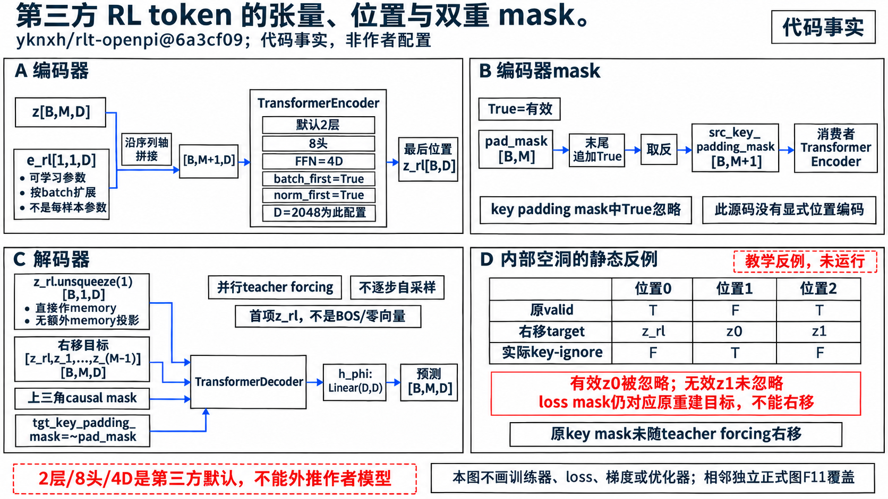
图 F08 全部细节说明：张量、位置与两种 mask
这张图回答的是第三方实现怎样把一串 prefix 表示压成一个向量，以及训练解码器时，张量右移和有效位置如何相互影响。读图顺序是左上编码器、右上编码器的有效性 mask、左下解码器，最后看右下的内部空洞反例。四个分区分别画完整的局部链，不用跨区长线掩盖消费者。图中所有配置和函数归属于 yknxh/rlt-openpi 的固定提交 6a3cf09472b071516ad9742c15e0a55d9e299b18，不能据此断言论文作者使用相同的层数、头数或训练框架。
A 区：新增的是一个序列位置。 z[B,M,D] 的三个轴依次是 batch、prefix 序列长度和表示宽度。此配置 D=2048；它决定每个位置含有多少特征，而不是一张图像有多少像素。可学习参数 e_rl[1,1,D] 的 batch 维为1，使用时按 batch 扩展后，与原序列沿 M 轴拼接。得到 [B,M+1,D]，增加的是一个位置，特征宽度仍为 D。参数不是给每个样本分别创建一份；所有样本共同学习这个特殊查询槽。图中的“沿序列轴拼接”是操作标签，两条输入线在同一链路汇合，不能读成把两个 D 维向量相加。
拼接后的序列进入 TransformerEncoder，再从最后位置取出 z_rl[B,D]。最后位置已经通过注意力读取原 prefix，不是直接把初始 e_rl 当作状态输出。图内列出的默认两层、八头、FFN=4D、batch_first=True 和 norm_first=True 分别限定堆叠深度、注意力分头数、前馈宽度、张量轴约定与层内归一化顺序。例如 D=2048 时 FFN 宽度为8192；若教学上把 D 换为96，前馈宽度变为384，不能把8192当成与配置无关的常数。这里仅解释静态运算，没有运行替换模型。
B 区：有效性与忽略位置的真假含义相反。 上游 pad_mask 是 [B,M]，True 表示真实有效位置。新增 e_rl 也必须可见，所以先在末尾追加 True，再取反，成为 [B,M+1] 的 src_key_padding_mask。它有一根明确的箭头进入消费者 TransformerEncoder；取反不是装饰性步骤。PyTorch 的 key padding mask 中 True 表示忽略，因此若把原 valid mask 原样传入，就会把含义反转。该区的最后提示是这个 RL-token 源码没有自行添加显式位置编码；这不等于整个 VLA 没有位置处理，也不否认注意力模块内部有可学习投影。
C 区：一个 token 同时约束 memory 和预测任务。 编码器输出的同一个 z_rl 经 unsqueeze(1) 成为 [B,1,D]，直接作为 decoder memory。图上“无额外 memory 投影”精确指这里没有再插一个独立的外部映射层；TransformerDecoder 内部的 cross-attention 仍有自己的参数，不能把它理解成没有任何 Q/K/V 投影。另一条输入是 teacher forcing 的右移 target：首位放 z_rl，后面放真实目标序列的前 M−1 个位置。首位不是独立 BOS，也不是零向量。
图中一般序列用一基记号 z_1,…,z_M；D 区为对齐实际数组索引，采用 z0,z1,z2 的零基记号。两者只是编号约定不同。右移后的张量仍为 [B,M,D]，它与 memory 各有一条输入箭头进入 TransformerDecoder。上三角 causal mask 阻止位置看到未来 target；tgt_key_padding_mask 则控制哪个 key 位置被忽略。两者解决不同问题，不能互相替代。decoder 输出经过 h_phi:Linear(D,D)，预测仍为 [B,M,D]。训练一次并行算所有位置，所以“并行 teacher forcing”与“因果可见性”可以同时成立，不需要把它画成逐步自采样。
D 区：右移内容以后，原 key mask 不会自动跟着移动。 这个反例假设长度3的原 valid 为 [T,F,T]。零基目标分别为 z0、z1、z2，右移输入变成 [z_rl,z0,z1]。实现却直接用原 valid 取反，产生实际 key-ignore [F,T,F]。对照三列即可发现：位置1装的是有效 z0，却被 True 忽略；位置2装的是无效 z1，却被 False 放行。这个例子展示内部空洞下内容与 key mask 的潜在错位，属于从源码推出的静态反例，不是一次机器人失败实验。
重建误差所用的 loss mask 仍然对应原目标 z0、z1、z2，因此有效目标位置仍是0和2。不能为了修正 decoder 输入的 mask 错位，就把监督目标的 mask 一并右移；那会改变哪些目标参与损失。图中红框把两条结论放在一起，是为了提醒读者分别追踪“输入 key 的可见性”和“输出目标的有效性”。若真实数据只在尾部 padding，此反例不等于已观察到相同程度的影响；它也不自动证明重建损失必定恶化。需要检查实际 mask 分布和模型行为，本文没有执行目标代码。
全部箭头只表示已列明的局部输入与输出：A 区从原序列和特殊槽到 encoder 再到最后位置；B 区从 valid 到追加、取反和 mask 消费者；C 区从 memory、target 与两种 mask 到 decoder，再到线性头和预测。D 区使用并排表格，不画从数值到数值的因果线。海军蓝文字给出模块层级，蓝色实线表示数据，黑色矩形边框维持分区，红字与红虚线只用于反例及论文/代码的证据边界。纯白底线框避免填色渐变或立体效果改变读图含义。
本图完整覆盖张量与 mask 单元；重建损失怎样按全 batch 有效 token 数归约、detach 怎样分离梯度、两个 AdamW 怎样对应两个损失，转到相邻图 F11 的全部细节说明。拆成两图只改变视觉单元的粒度，没有删去原 F08 的训练和梯度范围。源码位置是 src/rlt_openpi/models/rl_token.py 中 RLTokenEncoder、RLTokenDecoder 和 RLTokenModel；固定提交、完整函数引文与原始源码可由本章对应链接核查。论文的 RL-token 思路与这份第三方实现共享压缩/重建结构，但具体 mask 边界和默认层配置仍属于不同证据层。
frozen 与 joint 只差一个开关，为什么优化器和恢复顺序也会变化？
因为开关改变了可训练参数集合。RLTokenTrainer.joint只看vla_finetune_alpha>0。冻结分支_step_frozen不接收demo actions：它把observation搬到device，在no_grad中提取prefix，调用token模型算重建，然后清token梯度、backward、clip、optimizer.step、scheduler.step。这里动作示范仍影响dataset的组织，但没有进入VLA supervised loss；“提供了actions参数”不能等同于该分支使用了动作监督。
joint分支则先把observations/actions搬到device，一次取出detached z、mask与VLA loss，计算重建，再相加为l_ro+alpha*l_vla。两个优化器先各自zero_grad，随后一次total backward；token参数梯度裁剪后先更新，若VLA optimizer存在再裁剪和更新VLA参数，两个scheduler各自推进。detach让loss之和对应两张彼此隔离的参数图：重建主要更新φ，flow-matching更新θ_vla；它不是重建误差沿VLA全网传播的联合压缩。alpha控制VLA损失的权重，代码没有通过它改变token重建分母。
真正启动joint训练之前，train会先unfreeze VLA、根据配置打开gradient checkpointing，并用trainable_parameters()创建VLA AdamW及scheduler。只有这一步完成，resume load才有相应对象接收检查点状态；直接先load再创建优化器可能丢掉恢复结果，所以源码采用setup后load。trainable_parameters按requires_grad筛选，freeze时eval和requires_grad=False同时设置，unfreeze时反向打开；train()改变dropout等模块行为，requires_grad才决定参数能否累积梯度，不能把二者简写为同一个“冻结”。
关闭显式重算开关后，联合训练怎样准备
例如把 alpha 设为0.2，同时设 gradient_checkpointing=False，0.2>0 仍使 joint 判定为真。正常 train 生命周期先调用 _setup_joint_training(vla)；每次 setup 都执行 vla.unfreeze()，把 VLA 切到 train 并打开参数 requires_grad。False 只让这里跳过显式的 vla.extractor.pi0.gradient_checkpointing_enable()，不会跳过解冻、保存 self._vla 引用或建立独立的 VLA optimizer 与 scheduler。前文已经解释底层 Gemma 还有自己的重算分支，因而这个配置不能被理解成所有依赖层都关闭重算。
还需分清“筛入参数集合”和“本次实际连到损失”。vla.trainable_parameters() 只筛选 requires_grad=True，并不保证筛到的每个参数都连接到这一次 loss。setup 也是 train 的生命周期责任，直接调用 step 不会替调用者执行它；仅凭正的 alpha 或一个参数的 requires_grad=True，不能假定 VLA 的优化器和 scheduler 已经准备好。
在这个0.2的例子中，反向标量是 L_ro+0.2×L_vla。detached z 使 L_ro 负责 token 参数，0.2×L_vla 才给 VLA 提供相应梯度；一次 backward 后，各参数集合仍由前文列出的各自 optimizer、clip、step 和 scheduler 处理。alpha 缩放的是 VLA 损失及其梯度贡献，learning_rate 与 vla_learning_rate 则分别配置两套优化器，不能用改 alpha 来替代学习率配置。
第一阶段checkpoint基本键是model、optimizer、scheduler、step、config；VLA模型、优化器、scheduler各自以对象存在为保存条件。恢复时基础model/optimizer/step直接读取，scheduler按key存在恢复，VLA三项都要求key与当前对象同时存在。默认路径包括run_name和rl_token_step{global_step}.pt。因此一个frozen trainer并不会仅因payload里藏有VLA键就自动转成joint，模式仍由当前config决定。
恢复训练还涉及另一个容易误读的时间轴。train循环load后仍遍历1到num_train_steps，没有扣除已完成global step。若恢复100步、配置再运行20次，局部step_idx为1到20，成功更新后的global step是101到120。定期log/save用局部step_idx取模，末尾补存却用global step取模。这是固定提交的“再执行配置次数”语义，不应在教程里写成“继续到统一总目标”。学习率warmup<=0返回恒定LambdaLR，大于0返回从1e-8倍到1倍的LinearLR；这套scheduler状态也需要跟优化器一起恢复。
日志横轴还要沿 metrics 的来源继续追踪。日志条件用局部 step_idx % log_every 决定是否调用，但真实调用是 log_fn(metrics, step=metrics.get("step"))。frozen 分支在第280行起先将 _global_step 加一，再把它放入返回字典的 "step"；joint 分支也先在第324行加一，再于第332行写入同一键。因此触发日志的是局部循环位置，回调 step 关键字携带的是该次成功更新后的全局计数。
例如从 checkpoint step=7 恢复，再成功执行四次更新，局部 1、2、3、4 对应全局 8、9、10、11。若 log_every=2，局部 2 和 4 才调用回调，所传 step 分别为 9 和 11。若同时 save_every=3，局部 3 触发以全局 10 命名的周期保存，循环结束时全局 11 不能被 3 整除，再补存全局 11。这个区分只解释触发器和记录坐标；优化器与 scheduler 仍按已有保存、恢复及逐次推进规则保持状态连续。
|数据对象|进入这一层时的形状与含义|计算或转换|离开这一层及消费者|
|---|---|---|---|
|raw机器人观测|joint、gripper、相机HWC/CHW、prompt|机器人变换、Normalize、模型变换、加batch|Observation；供VLA prefix与reference两条路径|
|prefix向量与有效性|[B,M,D]与[B,M]，True=valid|尾部加[B,1,D]，valid列追加True，再取反给PyTorch|encoder输入[B,M+1,D]，最后位置为[B,D]|
|decoder target|z_rl[B,D]、原z[B,M,D]|右移为[z_rl,z1,…,z(M−1)]，causal self-attention，单token memory|z_hat[B,M,D]；供masked reconstruction|
|重建误差|逐维平方误差[B,M,D]|先mean(D)，valid mask后跨B/M求和，除valid总数|标量loss，只更新token模型|
|完整reference|经输出变换的[B,H,d]|沿时间取前C步，worker再flatten|[B,C*d]；actor条件、BC目标和replay字段|
|小RL状态|z_rl[1,D]与预处理state前d列[1,d]|沿最后维cat，再squeeze成NumPy|[D+d]；批采样后为[B,D+d]|
|实际动作与奖励|chunk[C,d]，逐步reward[C]|actor或人类执行，动作flatten；done单值|a[C*d]、rewards[C]、dones[1]进入replay|
|replay batch与Q目标|x/next_x[B,D+d]、a/ref[B,C*d]|discounted chunk return、terminal gate、twin target min|TD target[B,1]；online Q同形状，loss为标量|
参考轨迹怎样回到机器人空间，再取出前几步
前面的输出变换链处理的是带上下文的样本。sample_reference_actions 先通过 extractor 中带 no_grad 的 sample_actions 得到内部动作，再把 raw actions 与 observation.state 都移到 CPU、转成 NumPy。随后按 batch 逐样本把 actions 和 state 两个字段一起交给 _output_transform。state 让反归一化及后续输出变换可以读取相关统计或上下文；若只传 actions，需要 state 的变换就可能缺字段。
输出变换完成后，wrapper 收集每个样本变换后的 actions，用 np.stack 合并，再转回目标 device，结果为 [B,H,robot_action_dim]。这里没有在最后显式指定统一 dtype，维度与 dtype 由 output transforms 和 NumPy 的结果决定。因而内部模型的 action_dim 不能直接当作机器人的最终动作宽度；共享 Group 以及两侧统计是否匹配的条件，仍需沿前面的输入、输出链保留。
现在单独给定一份已经完成上述输出变换的 full_actions:[2,3,6]，其中 H=3，机器人动作宽度为6。get_rl_chunk_reference 只取 full_actions[:, :C, :]：C=2 得 [2,2,6]；C=5 时，时间轴只有3步，所以同一条切片自然返回 [2,3,6]。这个形状计算从已变换的张量开始，不再把内部 action_dim 或输出变换过程重复算进去。
函数没有为 C>H 补零、重复末步或另建长度分支，也没有显式 assert 或友好校验 H>=C。因此“取前 C 步”只有在 0<C<=H 等合同满足时才保证实际长度为 C。以 C=5,d=6 为例，按配置展平的下游可能期待每样本30个数，短返回实际只有 3×6=18 个数，actor、worker reshape 或 replay 就可能遇到宽度不匹配。这里是切片与配置尺寸的静态推导，不是已运行并观察到某一特定异常。

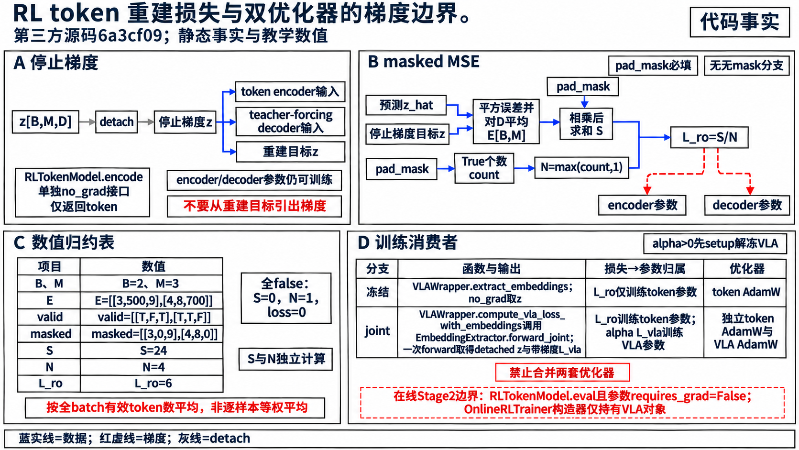
图 F11 全部细节说明：有限误差归约与两套梯度路径
本图把原来拥挤在 F08 中的损失和训练消费者独立展开。F08 说明 token 如何形成、decoder 看见什么；这里接着回答预测向量怎样成为一个训练标量，以及这个标量到底更新谁。四个分区按“输入停止梯度、损失计算、有限数值例子、训练分支”阅读。图内的函数和优化器来自固定第三方提交 6a3cf09472b071516ad9742c15e0a55d9e299b18，不是作者公开架构配置或新测量结果。
A 区先区分张量与参数。 输入 z[B,M,D] 是 VLA 的一批 prefix 表示，三个轴分别表示样本、序列位置和特征。RLTokenModel.forward 开头将它 detach，图中灰线表示从此不再沿原 VLA 计算图反传。停止梯度后的同一个内容会成为 token encoder 的输入、teacher-forcing decoder 的目标前缀输入，也成为重建监督目标。三根线强调停止梯度并非只加在最后比较用的目标上：即使 decoder 用到历史真值，重建损失也不能绕过编码瓶颈，通过这条输入路线训练 VLA。
detach 限制的是输入张量与原图之间的联系，不会自动冻结 encoder 或 decoder 的参数。它们仍可以接收本次重建任务的梯度，特殊槽参数 e_rl 与线性头 h_phi 也在这条训练路径中。图中另列的 RLTokenModel.encode 是一个带 no_grad 的推理接口，仅返回压缩 token；它与 forward 的重建训练不是同一条执行路径。把 encode 的 no_grad 误读成“整个 token 模块永远不训练”，会把离线学习和在线读取两个阶段混淆。
B 区给出分子与分母的两个独立计算。 预测 z_hat 与停止梯度目标 z 先计算逐元素平方误差，再沿 D 轴求均值，形成 [B,M] 的 E。到这里每一个序列位置已经对应一个特征平均误差，后面不应再除一次 D。原 pad_mask 为 [B,M] 的有效性标志，True 对应参与监督的位置。E 与其按元素相乘，再跨样本和序列求和，得到分子 S。
另一条独立分支只从 pad_mask 出发，统计全 batch 的 True 个数 count，再取 N=max(count,1)。S 与 N 分别进入 L_ro=S/N。分母来自有效位置计数，不是从分子推导，也不由某个样本的误差大小决定。图中因此不画“S 到 N”的因果箭头。若每条样本有不同数量的有效 token，这个标量按全 batch 的有效 token 等权平均，不保证每个样本整体权重相同；这与先求每个样本的均值、再按样本平均是不同的归约。
从 L_ro 返回 encoder 参数和 decoder 参数的两根红虚线，表示反向传播能更新这两套参数。它们不指向输入 z，也不指向 VLA。loss 路径保留可微操作与“哪些参数交给 optimizer”是不同层次的检查：有计算图不保证某个参数的梯度一定非零，而一次 optimizer step 也只作用于它持有的参数集合。pad_mask 在这个接口中是必填输入，不能把缺省的“无 mask 分支”当作源码已有能力。
C 区用有限误差矩阵算出全部中间量。 设 B=2、M=3，给定已经沿特征维平均的有限矩阵 E=[[3,500,9],[4,8,700]]，valid 为 [[T,F,T],[T,T,F]]。按 True=1、False=0 相乘，得到 [[3,0,9],[4,8,0]]。分子 S=3+9+4+8=24；有效位置共有4个，所以 N=4，最终 L_ro=6。两个被忽略的有限大误差500与700既不增加分子，也不增加分母。表格并排保留这些量，避免把独立求和与计数画成顺序依赖。
若只把这个例子的 valid 全部改为 False，仍保持给定 E 有限，分子为0、原始 count 为0，经 clamp 后 N=1，因而归约结果为0。这个结论有“给定误差有限”的前提；分母保护只避免除零，不能消除上游已出现的 NaN 或 Inf。本文没有运行 Transformer 在所有位置无效时的数值行为，也没有据这道纸面归约断言任意模型输入都一定给出零损失。图中的全 false 边界应与本段前提一起理解。
D 区把两种训练条件放进同一张责任表。 冻结分支通过 VLAWrapper.extract_embeddings 在 no_grad 下取得 z，再训练 token 模块；此时只有 token 的 AdamW 参与这一阶段的参数更新。joint 分支由 VLAWrapper.compute_vla_loss_with_embeddings 调用 EmbeddingExtractor.forward_joint，在一次共享前向中同时取到 detached z 和仍带梯度的 L_vla。重建分支消费 detached z，因此 L_ro 训练 token 参数；另一个 alpha L_vla 为 VLA 参数提供梯度。两套 AdamW 分别持有各自参数，不能把它们画成一个混合的优化器节点。
alpha>0 的正常 train 生命周期还需要先执行 setup 解冻 VLA，并建立相应的优化器与 scheduler。alpha 改变 VLA loss 的贡献，不代替各自的学习率字段。关闭显式 gradient checkpointing 开关也不会自动取消解冻和优化器创建。这里的 AdamW 只属于离线 Stage1；在线 Stage2 的 actor 与 critic 使用的是另一套 Adam，不应把图中的优化器名称传播到整个项目。
表格底部的在线边界单独说明：OnlineRLTrainer 构造时将 RLTokenModel 置为 eval，并把参数 requires_grad 设为 False；VLA 对象在这个构造器中只是被保存为引用。正常入口的 VLA 冻结状态还要沿封装和入口核对，不能从“token 被冻结”推得该构造器再次主动冻结 VLA。边界条不接数据箭头，是为了避免把参数状态说明误当作模型输出进入下一个算子的计算链。
本图用纯白面板和细矩形线框维持与 F08 相同的风格。蓝色实线表示数据流，红色虚线表示梯度回传，灰线表示 detach；红色边框只用于容易混淆的约束。C 区和 D 区采用表格，列对列展示独立计算和归属，表中词句不是隐含的函数调用箭头。读者可以沿 src/rlt_openpi/models/rl_token.py 的 RLTokenModel.forward 与 encode，以及 src/rlt_openpi/training/rl_token_trainer.py 的 step、train 和 _setup_joint_training 核对这些关系。图示没有提供作者实验的新消融，也不把“存在梯度路线”解释成已经证明性能提升的因果机制。
actor 的参考动作被遮掉以后，还会沿另一条路径影响输出吗？
在这份代码里会。默认小网络先对拼接输入做LayerNorm，再经过指定数量的Linear/ReLU和最后Linear；Actor把最后Linear的weight与bias都置零，使初始residual为零。前向先给reference做逐样本dropout，MLP看cat(x,masked_reference)，随后却用未遮掉的原始reference做skip加法。模块处于 training=True 时再加sigma高斯噪声，最后clamp；eval不加噪声，但也clamp到[-1,1]。实际采集时采用哪种模式，要继续追到调用者的 actor.eval()，下文沿回合循环展开。它是有具体残差结构的第三方实现，不应被含混写成论文Gaussian policy的全部细节。
第二段真实源码摘自 actor.py 第69行起，共19行。它恰好跨过前向与dropout helper，能直接读出reference的两次用途。
69: """
70: a_tilde_input = self._apply_ref_dropout(a_tilde)
71: residual = self.mlp(torch.cat([x, a_tilde_input], dim=-1))
72: mu = a_tilde + residual
73:
74: if self.training:
75: noise = torch.randn_like(mu) * self.sigma
76: return (mu + noise).clamp(-1.0, 1.0)
77: return mu.clamp(-1.0, 1.0)
78:
79: def _apply_ref_dropout(self, a_tilde: Tensor) -> Tensor:
80: """Zero out reference actions for a fraction of the batch during training."""
81: if not self.training or self.ref_dropout == 0.0:
82: return a_tilde
83:
84: B = a_tilde.shape[0]
85: # Per-sample dropout mask: 1 = keep, 0 = drop
86: keep_mask = torch.rand(B, 1, device=a_tilde.device) >= self.ref_dropout
87: return a_tilde * keep_mask
第69行得到只供网络输入的reference，第70行将它与x拼起来并产生residual，第71行明确用原a_tilde构造mu。第72行是分隔；第73行检查module training状态，第74行生成与动作同形状的sigma噪声，第75行返回加噪且裁剪的训练动作，第76行空行，第77行返回eval均值并裁剪。第78行分隔方法，第79行定义helper，第80行文档指出按batch样本清零；第81行在eval或dropout为0时分支，第82行直接保留输入。第83行分隔，第84行读取B，第85行注释规定1=keep，第86行生成[B,1]随机mask，第87行用广播乘法一次清掉每个样本的整条reference。
可由计算构造一个反例：设同一x、训练noise为0，某个样本的keep mask为0，MLP输入reference因此全零；初始residual也为0。若外部reference从向量u换为v，输出均值仍由u变为v，因为第71行直接相加。即使MLP学到非零residual，在相同x与相同被遮reference下，skip仍保留外部reference的变化。这个反例不依赖训练性能，足以证明“dropout迫使整个actor在这批样本上完全摆脱reference”不符合该计算图。它可能仍有正则作用，但作用大小要另做实验，不能用论文动机替实现担保。
reference还具有动作空间含义。sample_reference_actions对每个batch样本把state与actions一起交给output transform，先模型outputs、再Unnormalize、最后机器人outputs；所以reference一般处在机器人输出空间。actor却对整个输出统一clamp到[-1,1]，Franka step_fn又按DROID DoF取前若干列并clip一次。这里没有一个显式、经过验证的“小RL专用normalize/unnormalize对”把所有机器人动作统一变为无量纲数。若机器人空间本来在边界内，skip可保留reference；若某维reference越界，零residual在eval也会被裁剪，所谓“初始化精确复制”就有条件。更换机器人前应逐维核对单位、尺度与边界，这是从动作链推导出的必要接口问题，不是额外增加算法设计。
越界参考经过输入遮挡、训练噪声和裁剪会得到什么
再做一个带非零噪声的纸面例子。给定有限状态 x、原始参考 a_tilde=[1.3,-0.6]，并设 ref_dropout=0.25、sigma=0.2。训练时若本样本的 keep mask 为0，形状 [B,1] 的 mask 广播到整条参考，使 a_tilde_input=[0,0]，完整 MLP 输入为 cat(x,[0,0])；x 不被遮掉。评估时不启用 reference dropout，即使参数仍为0.25，MLP 的参考输入也是原始 [1.3,-0.6]，完整输入为 cat(x,[1.3,-0.6])。
初始化时最后一个 Linear 的 weight 与 bias 都为零，因此在这个有限输入例子中，初始 residual=[0,0]。skip 使用原始参考，两种模式的相加结果都是 mu=[1.3,-0.6]+[0,0]=[1.3,-0.6]。训练时 MLP 看到的参考已被清零，不意味着 skip 或 mu 也被清零。
设这次训练实际得到的噪声为 [0.4,-0.5]，并且它已经乘过 sigma=0.2。前向直接把它加到 mu，不再乘一次0.2：裁剪前为 [1.3+0.4,-0.6-0.5]=[1.7,-1.1]，逐元素 clamp 到 [-1,1] 后得到训练动作 [1,-1]。把已经缩放的噪声再缩放一次，会换成另一个数值问题。
eval 不加入 Actor 的 training-only sigma 噪声，裁剪前仍是 mu=[1.3,-0.6]，最终动作是 [1,-0.6]。所以这个 train 例子同时启用了参考输入遮挡和噪声，eval 两者都不启用，而两种模式都有最终 clamp。第一维1.3原本越界，零残差仍不能让评估输出原样复制参考。这里比较的是给定 x 与 reference 的 Actor 前向，不把它推成整个控制策略或采样过程的确定性结论。

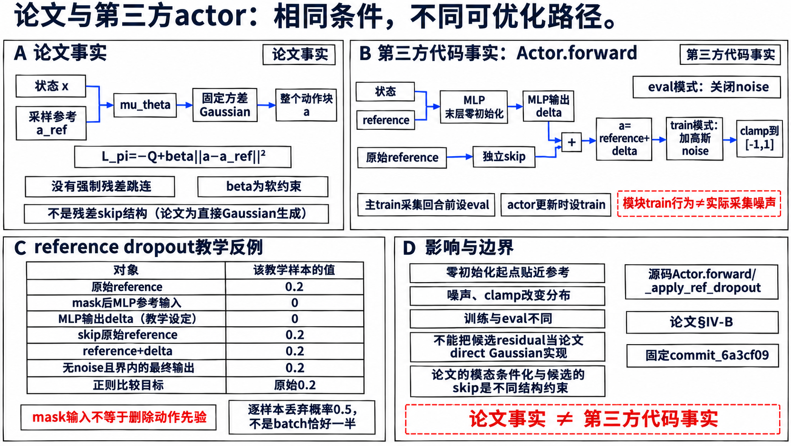
图 F09 全部细节说明：参考条件相同，为什么动作参数化仍然不同
先明确两栏各自证明什么
论文栏解释 RL Token 的参考条件策略：状态 x 与从冻结 VLA 采样的参考动作块共同输入策略均值函数，策略在整个动作块空间输出动作，以固定方差 Gaussian 表达随机性；actor 目标同时考虑 critic 给出的价值和对参考动作的距离正则。这里的参考是一种条件和软约束，论文并没有在这一定义里要求动作必须被写成 reference 加 residual。图中两栏可以拥有相同的输入名字，却不能因此被视为同一网络结构或同一优化分布。
第三方栏描述固定提交中的 Actor.forward。它先把状态和经过 dropout 的参考输入拼接，送入 MLP 得到 residual，再与未经 dropout 的原参考相加。最后一层 Linear 的 weight 和 bias 都初始化为零，使 residual 的初始值为零。这个初始化决定了初始均值贴近先验，但只有在参考处于动作界限内、没有额外噪声且忽略后续更新时，输出才与参考完全相同；经过 clamp 的结果不能对越界参考仍声称逐值相等。
两条参考路径怎样造成一个容易漏掉的反例
参考从输入进入两条不同路径。一条先由 _apply_ref_dropout 按样本掩蔽，参与 MLP 的条件计算；另一条绕过 MLP，在加法节点与 residual 汇合。mask 的 shape 是 [B,1]，因此同一样本的整个展平动作块一起保留或清零，不是每个坐标独立丢弃。默认概率0.5表达每个样本被丢弃的概率，并不保证每个有限 batch 恰好有一半样本被遮掉。
取一个不含噪声、不会触及动作边界的教学坐标：原参考为0.2，residual 为0。即使 MLP 看到的参考输入被置零，加法路径仍使用原参考0.2，结果仍为0.2。若 residual 为0.1，则结果为0.3。这个例子说明“遮掉网络的参考条件”与“删除参考动作对最终输出的影响”不同；不能据MLP输入被mask，就假定那条独立skip也使用了被遮后的参考。
距离正则也仍以原 reference 为比较对象。MLP 输入发生 dropout，并不自动把正则目标改成零，也不会把 skip 改成使用遮掉后的参考。如果正则系数 beta 增大，actor 更新会更强地惩罚偏离原参考；它改变的是目标权重，不是把参考变成不可越过的硬约束。残差参数化则把参考直接写入前向计算，两种约束作用在不同位置。
噪声、截断与实际采集模式必须一起看
候选在模块处于 train 模式时，对 reference 加 residual 的结果再加入高斯噪声，并 clamp 到 [-1,1]；eval 模式没有这项内部噪声，也不执行参考 dropout，但仍会 clamp。比如均值已经接近1时，加入噪声后有一部分结果会被压在边界上，因此截断后的输出分布不能直接等同于一个未截断、固定方差的 Gaussian。图将“加噪”和“clamp”画成明确操作，就是为了保留这层分布变化。
真实采集还取决于调用者。主训练在每次 collect_episode 前执行 actor.eval()，actor 梯度更新时才切到 actor.train()。因此，不能看到 Actor 类写有 training noise，就宣称主采集回合必定使用这项噪声探索。图中的模式标签连接了网络内部条件与实际消费者；它只限定这段内部噪声是否开启，不冒充对全部上游随机采样来源的审计。冻结 VLA 的参考采样仍可能带来另一种随机性，不能与 actor 的 train-only noise 混成同一个变量。
这项差异怎样影响论文到源码的映射
两栏共同保留了“给定状态和参考，借助价值目标优化动作”的思想，但候选的 residual skip、零初始化、按样本参考输入 dropout、train/eval 条件和输出 clamp 都是必须单独核对的实现选择。它们可能改变初始行为、参考被遮掉时的可见路径以及边界动作的分布。仅用“参考条件 actor”这一个标签，会把这些决定真实行为的环节全部藏起来。
critic 的动作输入应是待评估或实际执行的动作，而不是把 reference 当作发生过的动作。对于人工纠正样本，如果 replay 保留原 VLA reference，正则仍会拉向该参考；论文的干预参考替换策略则改变了这项比较目标。这个跨图联系说明，actor 的结构差异和 replay 的字段差异会在同一个损失中汇合，不能各自孤立解释后就宣称整体等价。
图中的红色边界不是实验结论，也没有证明某个参数化一定更好。它精确限制这份开源代码能支持的说法：候选实现了可训练的参考加残差策略，其行为与论文直接 Gaussian 参数化存在已定位的结构差别；是否复现作者的最终效果，需要当前静态分析之外的证据。本文没有执行这项比较实验。
来源：Actor 与逐样本参考 dropout、采集前 eval 与优化时 train、论文策略与在线损失（此附件保存在完整本地归档中）。
把C区七行与B区支路逐项对应
C区原始reference为0.2，按本次教学样本发生遮挡后，进入MLP的参考输入为0；教学设定MLP输出delta为0，skip仍携带原始0.2，所以reference与delta相加为0.2。在不加noise且没有触及裁剪边界的条件下，最终输出仍是0.2，正则比较目标也保留原始0.2。这七行对应B区MLP与原参考skip在加法节点汇合的两路，不能把“MLP输入”当作第三个加数。逐样本概率0.5描述随机机制，有限batch不必恰有一半遮挡；表格中的0与0.2属于教学构造，不是论文测量。
A区蓝箭头表示状态与参考进入均值函数，再由固定方差Gaussian产生整个动作块；B区蓝箭头表示候选前向，train噪声与最终裁剪分别列出。D区是这些结构和模式造成的解释边界，右侧给出真实函数、论文节与固定提交。红色文字与虚线框用于突出参数化差异，白卡片、黑细框和海军蓝标题统一沿用本报告科研图风格；两栏的相同输入名字不代表结构或分布相同。
一个动作块由谁执行，奖励与真实步数在哪一层产生？
RolloutWorker负责调度，不负责把向量直接送给关节控制器。Franka工厂用action_space和control_hz创建DROID对象，再把step/reset/get_obs三个callable交给通用RobotEnv。step_fn按droid.DoF截取动作并clip，reset固定randomize=False，get_obs按该机器的camera serial组装raw schema。工厂还把raw droid handle与同一个观测函数暴露给VR干预管理器。真实硬件是可注入边界，通用trainer没有控制器内部动力学模型；换一个factory并不会自动使另一个机器人满足同样动作单位。
RobotEnv.reset先停止旧键盘反馈，调用reset_fn，把chunk计数清零，再等待一次input让操作者布置场景，随后启动键盘反馈并读取新观测。也就是说，一个episode的开始包含人工场景准备；仅记录policy控制步数的计时无法覆盖这段等待。这个实现没有把scene reset当作可学习策略。阅读吞吐量或机器人工时指标时应确认它究竟统计哪些环节，而不能把终端显示的训练elapsed自动等同于论文的controlled execution time。
把这次 reset 展开为事件序列，第120行起依次执行 feedback.stop → reset_fn → chunk_count=0 → display.episode_reset → input("") → feedback.start → display.episode_running → get_obs。episode_reset 在等待 Enter 前提示布置场景；Enter 返回后，第127行先启动本次键盘反馈，第128行才显示运行控制键，最后才调用观测函数并把结果交给调用者。因此等待期间尚未启动本次反馈，控制键提示也不能被当作 reset 已返回新观测的证据；这些先后关系来自调用顺序，不依赖终端文字出现得多快。
每次 RobotEnv.step预分配长度C的零奖励，然后逐动作调用step_fn；每次执行后读取键盘信号。s或空格对应成功，当前步reward=1并终止；f失败终止但reward保持0；p给progress_reward，默认0.5，继续执行。非终止路径按控制周期减去已耗时间补sleep。块末记录steps_executed=k+1并加chunk_count；若此前未终止且达到max_episode_chunks，timeout强制done、success=False。未执行reward尾部保持零，因此长度恒为C不代表每个位置都真的执行过。
chunk 上限是在本块执行之后检查：RobotEnv.step 的尾部先令 info["steps_executed"]=k+1、_chunk_count += 1，再在尚未 done 且计数达到上限时，明确写 done=True、info["success"]=False、info["timeout"]=True。例如 C=5、原计数为1、上限为2，五步均没有成功或失败信号，本块仍执行五次机器人调用，结束时计数2、steps_executed=5，随后由上限生成这三个终止值。progress 只给当前步奖励，不会取消块末的超时检查。这个 timeout 字段只在超时分支被加入，不能把所有失败都标成 timeout。
终止分支先执行feedback.stop，最后才调用 _get_obs_fn 获取返回观测。worker 采样 episode 时用 steps_executed 累计真实步数，把终止 info 保存在 episode 的 extra；但 replay 的六字段不保存 timeout 本身。进入 replay 后保留的是 done，TD 目标又按 (1-dones) 门控 bootstrap。因此当前接口把这种超时也当成停止 bootstrap 的终止值，无法从单条已存 sample 再区分它与成功终止；这是信息在消费者边界处的合并。
键盘反馈自己还有状态。HumanReward.check把s/f存进_signal，后续调用持续返回；p直接返回而不锁存，所以一次按键只给一次进度反馈。start会清_signal并尝试进入raw terminal，stop恢复旧termios。源码在raw不可用时打印“回退line input”，但check没有实现非raw的line读取路径；若_signal也为空，它实际返回None。读者可以据此明确界限：这不是已经验证的跨平台键盘方案，尤其不能根据一条warning声称headless环境仍能正常收reward。本章未运行该模块，所述来自分支检查。
旧设置的恢复不是一个没有参数的 reset。HumanReward.stop只有在 _raw_mode 为真且 _old_settings is not None 时，才调用 termios.tcsetattr(sys.stdin, termios.TCSADRAIN, self._old_settings)；TCSADRAIN 是待终端输出排空后应用设置的模式参数。调用正常返回后，才依次置 _raw_mode=False、_old_settings=None。例如旧设置为 S、raw=True，先以这三个实参恢复 S，再清状态；条件不满足时整个分支不执行，不能将 stop 概括成无条件清空所有状态。源码也没有为 tcsetattr 包 finally，若它抛异常，后两次赋值不会先行生效。
这让 reset 的首个 stop 与 Enter 后的 start 分别承担关闭旧监听和开启新一集监听的责任。start 的开头先清 _signal，再尝试保存终端设置和进入 cbreak；termios.error 或 OSError 会令 raw=False 并发出 warning。之后 check 只有 raw 读取分支，warning 中的 line-input 文案并没有实现另一个逐行读取器。对调用顺序和失败状态的说明，不等于已经验证目标平台支持 termios。
模拟接口 SimEnv.step遵循相近chunk合同：逐步调用gym环境，terminated or truncated任一为真便停止，其余reward位置保持0，返回最终observation、reward向量、done、info。steps_executed是真实已执行数量。可由循环推出C=4且第二步结束时，下一状态来自第二步，reward后两列为零；这里的done将真正终止和时间截断合并了，下一层TD门控无法再区分两者。代码假定C>=1，否则k与最终obs没有正常语义，这个前提没有在config层统一验证。
人类接管怎样进入回放，哪些来源信息会在保存后消失？
人工接管先改变执行责任。worker每个chunk先提取当前x和VLA reference，然后检查intervention manager；若manager返回InterventionResult，其中五项就是实际执行的action_chunk、next_obs、rewards、done、info，worker直接消费并跳过自己的env.step。否则worker让actor生成chunk再执行环境。跳过这一步是必要的：VR manager已经在内部逐步驱动了机器人，若worker再调用env.step会重复执行。之后两条路径汇合，实际动作flatten、必要时提取next_x并写replay，统计reward/chunks/真实steps，终止info存进episode stats。
Franka的 VRInterventionManager并不直接把手柄原始命令当作replay action。它每步先读机器人state，让VRPolicy产生cartesian_velocity命令，用update_robot直接发送；再读state，记录关节位置差乘control_hz，以及不乘Hz的夹爪位置差，拼成记录向量，按action_dim填零或截断。这让joint部分接近RL的joint-velocity接口，而不是把七维笛卡尔命令误标成八维关节动作。夹爪仍是另一种差分约定，不能靠同一个dtype判断物理单位已经统一。
成功按钮给当前reward=1、done=True，失败按钮done但reward不变；释放grip只结束这个chunk，不结束episode。提前结束后action_chunk用零行补满C，reward也保留零尾，steps_executed记录真实步数，最后一次get_obs返回最终状态。这里存在一条可直接推出的时间尺度边界：grip释放可能在K<C处得到非终止transition，下一轮却仍用gamma的C次幂bootstrap；固定C的学习时间与真实K步执行并不完全相同。本文指出该算式与执行长度不一致的条件，不推断它已经造成多大训练偏差。
更关键的是reference来源。当前 collect_episode写入在干预分支里改变实际action_chunk，但仍把接管前采到的VLA a_tilde_flat写进replay。论文算法明确说干预时reference应由human action替换，这个第三方实现没有执行那次替换。因此actor的BC项拉向保存的VLA reference，并不能只根据README的“纠正标签”描述就认为拉向人类动作。纠正数据仍通过实际action、reward和next state影响critic，不过那是另一条学习路径，二者不能合并解释。
Replay只有六字段，没有human flag、相机配置版本或执行者标识。episode stats里有干预次数，但不能从保存后的一条sample重新识别哪条是人类接管。要核查数据来源，需保留采样时额外日志；这是一项从schema得出的审计限制，不是本文对用户训练流程的新增要求。论文的关键阶段handoff又不同于mid-episode VR纠正：当前实现没有给出VLA预测何时切入关键阶段的训练器，也没有自动切换标签损失。工厂可扩展不等于这部分论文流程已经实现。
replay里的“一条数据”究竟跨越多少时间，warmup与stride会改变什么？
一条数据跨越一个已经执行的动作chunk。ReplayBuffer的预分配数组包括x、a、a_tilde、rewards、next_x、dones；x宽D+d，两个动作字段宽C*d，reward宽C，done宽1，全部是float32 NumPy。每次add在ptr指向的槽位写一整条transition，ptr按capacity取模，size在capacity截断；满后新数据覆盖旧槽位。sample使用np.random.randint取batch索引，允许同一条在一个batch重复出现，再转到指定device的tensor。它没有优先级回放、独立示范buffer比例或介入数据重采样逻辑。
在线 warmup三分支优先使用已有非空replay；否则若配置独立warmup_buffer就加载；都没有才现场收集。现场循环用VLA-only chunk，提取当前状态、执行动作、提取next state、add，并固定把total_env_steps加C；done后reset，没done就沿next_obs前进。结束保存独立buffer文件。独立buffer只含数组、ptr和size，加载不会恢复trainer三个累计计数，所以“载入先前采的一千块”不会自动让env_steps也加上一万。
现场warmup还分别调用_get_warmup_action(obs)与_extract_rl_state(obs)。后者为了actor条件又采一次reference；若底层VLA sampling有随机性，同一观测的实际执行动作与保存reference可能是两次不同采样。代码没有在这两处共享同一action tensor。这是由调用顺序推导的可能性，不是说每一次warmup必然不同；它提醒读者“VLA-only数据”只说明执行者，不能保证a与a_tilde逐元素相同。
warmup 的 done 在调用 add 时显式转成 float：collect_warmup 写入使用 done=float(done)，所以 True 传为 Python 浮点 1.0，False 传为 0.0。ReplayBuffer 的存储预分配 float32 数组，done 的每条槽位宽度为1；add 将这个标量写入该槽位，采样后供TD bootstrap 门控与同形状 Q 值相乘。布尔环境标志、add 的浮点实参和 batch 的 float32 [B,1] 是同一语义经过三层容器的表示，不是额外奖励。
数据次序同样重要：先用当前 obs 分别得到执行 chunk 与 x/reference，再执行环境；next_x 从这次 step 返回的 next_obs 提取，完整写入后 stored 才加一，最后 done 才触发 reset。终止观测没有被 reset 后的新一集观测替换。例如只请求一个 chunk 且它终止，仍是一次 add、返回 stored=1，却有循环前与终止分支两次 reset；stored 计的是实际新增 transition 次数，不是机器人步数，也不保证等于容量已满时的 buffer size。此路径直接执行 VLA chunk，不查询干预 manager 或 actor；执行动作与保存 reference 分别取样，并没有相等断言。timeout 的 info 在此被 _info 接收后丢弃，float(done) 仍传递终止语义。
代码确实定义了add_episode_strided：默认stride=2按第0、2、4…条选取，五条输入保留三条并返回3。但这个helper对输入transition序列下采样，不会自动生成相邻控制步重叠的C步窗口；主trainer和worker又直接逐chunk add，没有调用它。论文说明从每个中间控制步构造窗口，以stride2得到更密集训练样本；只发现一个同名helper不足以宣布论文的滑窗策略已经复现。在15Hz示例、C=5与论文50Hz、C=10之间，数据条数、每条跨度、更新次数和wall time也都不相等。
buffer保存时复制已填充的数组片段，另保存ptr/size；容量未满时减少文件大小。它的load方法按保存size直接拷贝到当前分配数组，没有重新协调state_dim/action_dim/C，也没有根据旧config自动重建整个buffer。actor权重形状检查可能较早报错，但buffer维度一致仍应由checkpoint与当前模型的整体匹配解释。单个.pt文件存在只表明载体，不能证明消费者采用了同一语义。

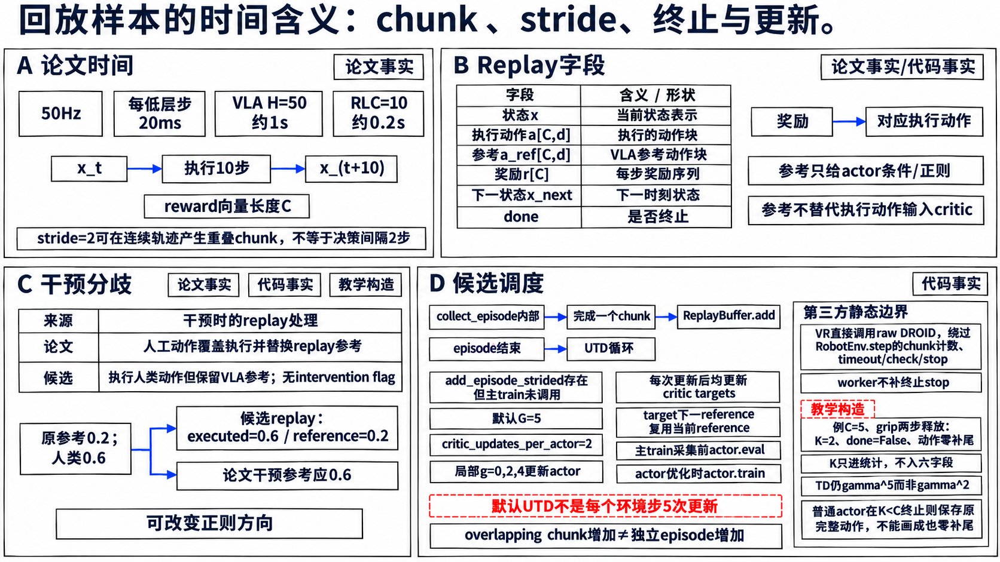
图 F10 全部细节说明：动作块、重叠样本与更新循环各自使用哪一个时间单位
三种时间尺度先分开
论文系统以50 Hz执行低层动作，一个低层步约20毫秒。VLA 预测 H=50 步的完整动作序列，覆盖约1秒；在线小策略实际执行 C=10 步的块，覆盖约0.2秒。状态 x_t 与动作块 a_t 对应的下一状态应位于这10个低层步之后，而不是只移动到下一个20毫秒时刻。H 控制生成的规划长度，C 控制这次在线动作的执行跨度，二者不能因为都与“动作块”有关就合并。
stride 又是第三个量。对一条已有连续轨迹按 stride=2 抽取长度10的窗口，可以得到相互重叠的训练样本；这不表示机器人每2步重新调用一次在线 actor，也不意味着每个重叠窗口都是一次独立 episode。图在论文时间轴与样本窗口旁分别标注单位，是为了保留执行时序与数据重用之间的区别。论文这些数值也不能直接替换候选配置中的模型 horizon 或物理 action_dim。
一条 replay 数据怎样保持因果对齐
回放字段把当前状态、实际执行动作、VLA 参考、奖励序列、下一状态和 done 放在同一条 transition 中。动作通常按 C×d 组织，在进入小网络时展平；逐步奖励长度为 C，折扣和 bootstrap 必须与这个跨度一致。参考用于 actor 的条件与距离正则，实际动作才回答“环境刚刚发生了什么”。如果用 reference 替代干预后的实际执行动作来训练 critic，就会把错误的原因与真实反馈配在一起。
在候选主 worker 中，一个 chunk 执行结束，就立即构造 next_x 并调用一次 ReplayBuffer.add。构造 next_x 会读取 next_obs，并经过下一次 VLA/token 状态提取。done 也随该转换写入，不是等回合结束才给所有旧样本统一补一个终止标签。回合统计记录 chunks 与 steps 两种计数，优先消费 steps_executed，这正是提前终止时完整块长和真实步数可能不同的接口位置。
重叠窗口还会带来统计依赖：相邻样本可能共享大部分观测和动作，因此 replay 条数增长不能直接当成新增了等量独立交互。候选虽然提供 add_episode_strided 方法，当前主训练的消费者走的是逐块 add；应沿实际调用链判断是否使用了 stride，不能只因类里存在方法便在主时序上画出它已经执行。
人类纠正会改变哪些字段
用一个单坐标教学例子说明参考分歧：VLA 原参考为0.2，人类纠正后实际执行0.6。候选 replay 的 executed 字段保存0.6，reference 字段仍为0.2，而且没有额外 intervention flag；论文描述则要求在干预时将 replay reference 替换为人类动作，即这里应为0.6。两个样本可能拥有相同的当前状态、实际动作和奖励，却给后续 actor 距离正则提供不同的比较目标。
如果 actor 此时也输出0.6，候选的参考偏差为0.4；论文干预参考下该偏差为0。这里的数字是帮助理解计算的构造，不是测量结果，也不证明两个完整训练过程一定产生某个固定性能差。其作用是把“参考是否替换”从一句来源备注变成能沿损失算清楚的差异。至于干预是否已经执行，worker 若收到完整 InterventionResult 会直接使用反馈并跳过 env.step，不能在时间轴上再次安排同一批人类动作。
五次更新为什么不是每个环境步五次
候选 trainer 等完整 collect_episode 返回后，才进入 for g in range(G)。默认 G=5 时，本回合后有 g=0、1、2、3、4五次 critic 更新；默认 critic_updates_per_actor=2 时，actor 更新落在 g=0、2、4，共三次。这个 g 是每个回合后重新开始的局部计数，并不是跨回合连续累积的全局 critic 计数。若回合长短变化，固定五次更新对应的每低层步、每chunk或每新transition的更新比例都会变化，不能将配置名称 UTD 自动解释成论文统一的交互更新率。
每次 _update_step 都在末尾执行 critic target 的 Polyak 更新；actor 的延迟更新与 target 的更新时点不同。计算 target 时，候选把当前样本的 reference 复用为 next reference，没有为目标状态重新取得一条独立参考。D区的近似卡片属于候选代码事实，不能读成论文已经要求的定义。next_x 与 next reference 是不同字段：已经计算下一状态，不代表已经储存并消费了准确的下一参考。
采集模式也应随时间轴一起读。回合采集前 actor 被设为 eval，优化 actor 时再设为 train；因此参考输入 dropout 和 actor 内部高斯噪声的开关，不能单由“训练循环正在运行”判断。整张图把论文时间、回放字段、人工样本与代码更新循环并列，目的是让读者在每次比较中都能指出使用的单位、保存的对象和真正发生的调用。
来源：逐块入库及真实步数、回合后更新与目标参考、论文动作块与在线控制（此附件保存在完整本地归档中）。
短接管块为什么还需要区分 K、C 与执行责任
图中 C 是计划动作块的长度，K 是这次真实执行的单步数。构造 C=5、执行两步后松开 grip 而没有成功或失败按钮的情况，VR manager 返回 K=2、done=False，并把未执行动作行补零到五行。这与普通 actor 路径不同：普通路径若在 K<C 终止，奖励尾部保持零，但保存的动作仍是原完整计划，未执行动作不自动零填。两条路径均有固定形状，形状相同不能证明每行都被执行。worker 用 K 累计 episode 步数，却不把 K 写入 replay；六字段因此无法还原这条样本推进了两步，TD 仍按配置使用 gamma^5 的 bootstrap，而非 gamma^2。该静态差异不等于已经测得某个价值偏差。
执行责任框解释的是另一个边界：manager 交还的 InterventionResult 已包含执行结果，所以 worker 不会再调用 env.step。具体 VR 直接操作原始 DROID，也就绕过外层 RobotEnv.step 才有的 chunk 计数、上限检查、键盘 check 和 done 后 stop。worker 收到 VR done 不补 stop；后续正常 reset 的首个 stop 是另一个时点，不能倒写为终止瞬间已收尾。图中这些边界不代表已经运行硬件或判断其物理安全后果。论文的干预参考替换规范、代码保留 VLA reference、stride helper 与主循环调用差异，仍按原说明分别保留。
顺着实际画出的线与卡片阅读
A区蓝线从x_t经过十步执行到x_(t+10)，描述环境时间；上方四张卡分别给Hz、毫秒、VLA规划长度和RL执行长度，底部stride说明的是轨迹窗口。B区以六行表列状态、执行动作、参考、奖励、下一状态及done；右侧“奖励对应执行动作”的线是因果归属核对，表示反馈应与产生它的动作配对，不是奖励生成命令。C区从原参考0.2与人类0.6分到候选和论文两份回放比较，明确这是教学构造。D区上方把逐块add和回合后UTD分成两行，右侧第三方边界卡保留K、C、done、零尾与生命周期；每张卡的证据身份均有中文标明。
蓝箭头连接实际数据或调用关系，黑色表格线只组织字段，红色文字与虚线框强调时间单位和来源差异。图没有把重叠样本当作独立episode，也没有把VR已执行结果再连回env.step执行第二次。所有数值与图形用于解释固定源码和锁定论文的语义，不是本机训练、实机频率或成功率的测量结果。
TD3风格的目标怎样形成，终止与next reference近似影响哪一项？
compute_td_target先把chunk内逐步reward乘1,gamma,…,gamma^(C−1)后沿C求和，保留[B,1]。随后记录actor原来的training状态，临时eval，输入next_x与next_a_tilde得到确定性均值，再恢复原模式。目标动作独立加高斯noise，先clip噪声幅度，再clip动作范围。用两个target Q的最小值构造gamma^C*(1-done)*next_q，与chunk return相加。该函数整体no_grad，所以target不会把梯度回传到actor或target Q；这里只有target critic副本，没有另外维护target actor。
done=1时bootstrap完全消失，只剩本块折扣奖励。比如C=3、reward为[0,0,1]，目标是gamma²而不是1；如果episode在第二步终止，第三步预分配零，不会产生额外奖励。SimEnv把truncation也折为done，所以这个实现对时间截断也关掉bootstrap。它是否适合某个任务的截断定义，需要环境语义判断；源码没有分开保存terminated与truncated。对于非终止的短干预块，前节的K/C区别则仍留在bootstrap指数里。
“next reference”是目标动作条件，不是target Q输入的独立字段。trainer从batch取到的a_tilde属于当前状态，但在 _update_step中直接作为next_a_tilde传入，注释承认这是避免再调VLA的近似。target Q仍在next_x上评价动作，因此不能将它说成“整个TD target都用旧状态”；近似只落在actor的reference条件。可由计算构造边界：若两个相邻状态的VLA reference差异很大，actor(next_x,旧reference)一般不等于actor(next_x,新reference)，进而目标Q可以改变。源码节省了调用，误差大小并未由本章测定。
critic每次更新都对replay里的实际动作求两个online Q，loss为两个均方误差之和。每个Q将state与flatten action拼接，经输入LayerNorm、隐藏Linear/ReLU和最后线性层输出一个数；twin target分别从online网络deepcopy，并禁用requires_grad。actor更新使用online twin最小值的负均值加beta*MSE(a_actor,a_tilde)，后者的PyTorch MSE会对动作维与batch平均。论文写距离平方范数，本代码的mean reduction会令数值缩放与“先对维求和”不同，所以β=.5即使知道来源，也不能无条件迁移到另一种loss归约。
actor的延迟依据当前UTD批次局部update_idx，而不是累计total_updates。每个episode后g从0重新开始；默认G=5、每2次critic更新actor时，actor在g=0、2、4更新，critic五次。每一次_update_step最后都Polyak更新target，再把total_updates加一；lerp_(online,tau)方向是target向online移动，而不是online向target回退。以上顺序足以判断损失所用的Q与目标是谁，没必要照抄完整trainer函数。
在线网络的两个优化器都是 Adam，见 OnlineRLTrainer 的构造。第一阶段 token 与可选 VLA 的 AdamW 属于另一组参数和训练阶段，不能把名称迁移到在线 critic/actor。这也说明从通用 TD3 示意图补入‘独立 target actor’或‘actor 只用 Q1’会改变该快照：这里实际临时切换同一个 actor 的模式构造目标，actor 优化读取当前双 Q 的最小值。
在线训练器里的参数归属与一次反传的时序
在线构造器对 RL token 的处理是明确的：OnlineRLTrainer.__init__ 将传入的 RLTokenModel 调为 eval()，并对其全部参数执行 requires_grad_(False)。这同时设置了模块模式和参数梯度标志；两个在线 Adam 也都不持有 RL-token 参数。
传入的 VLA 则只是保存为 self.vla。这个构造器不在此处改写 VLA 的 train/eval 模式，不重新遍历其参数冻结，也不改变它们的 requires_grad 或自动验证自定义 VLA 已冻结。正常入口是否保持冻结，仍依赖 VLAWrapper 与入口实际采用的默认行为；不能把这份依赖说成在线构造器又主动执行了一遍 VLA 的 eval 与逐参数冻结。
两套在线优化器各自拥有参数和学习率。若给定 actor_lr=1e-4，actor 侧的构造是 actor_optimizer=torch.optim.Adam(self.actor.parameters(), lr=config.actor_lr)，因此这里使用 config.actor_lr=1e-4=0.0001。它拥有的是 actor 参数，不能因为一次反传还经过别的网络，就把那些网络的参数也算进这个 optimizer。
critic 侧独立构造 critic_optimizer=torch.optim.Adam(self.critic.parameters(), lr=config.critic_lr)；给定 critic_lr=7e-4 时，使用的就是 config.critic_lr=7e-4=0.0007。两者是分别使用 actor_lr 与 critic_lr 的两个 Adam，都不持有 VLA 参数。critic.parameters() 的 iterator 来自 TwinQCritic，其中注册的 target 副本本身 requires_grad=False；即使它们属于这个模块的参数集合，也不通过 critic loss 的梯度学习，目标参数仍按前文的 Polyak 机制更新。
再沿一次局部 update_idx=4、critic_updates_per_actor=2 的调用追踪梯度。4 % 2=0，因此这次进入 actor 更新，先由设为 train 的 actor 产生 a_actor，再计算 q_value=self.critic.q_min(x,a_actor)。这里沿用前文的 online twin Q 最小值路径，具有对动作回传到 actor 的导数，并不是 no_grad 的 target_q_min；保留可微图只说明导数通路存在，不保证这次每个参数的数值梯度都非零。
这次调用较早的 critic 分支已经依次执行 critic_optimizer.zero_grad()、critic loss 的 backward 和 critic_optimizer.step()。进入 actor 分支后，a_loss.backward() 之前只调用 self.actor_optimizer.zero_grad()，没有再次清理 critic 梯度，也没有暂时关闭 online critic 的 requires_grad 或 detach 这条 Q 路径。因此 actor backward 可以在 critic 回归分支遗留的梯度上继续累积；随后执行的是 self.actor_optimizer.step()，实际由这一步改值的仍是它持有的 actor 参数。
到下一次 _update_step，下一项 critic loss 的 backward 之前，会再次调用 self.critic_optimizer.zero_grad()；包括 actor backward 留下的 critic 梯度在内的残留，此时才被清掉，再为新的 critic 回归反传和 step 准备。actor optimizer 的 zero_grad 不负责这个清理，critic 参数暂存了梯度也不等于 actor 分支已经对它执行参数更新。前文独立执行的 target Polyak 仍是另一种目标参数更新机制。
论文和配置都写“更新比率5”，为什么不能认为这里等价？
当前论文 方法正文明确写高update-to-data ratio为5，并写采集与学习异步执行；附录也说明两个critic更新对应一个actor更新。不能说论文G未公开。论文算法在以C递进的环境边界之后安排G次batch更新，而本提交先完整collect_episode，再串行运行range(utd_ratio)。因此episode很长时，每新增许多chunk只更新五次；episode短时，同样五次对应更少新数据。相同数字的时间单位不同，不能只凭默认值相同就宣称复现同一更新强度。
在线主循环每回合先actor.eval再收完整episode，所以Actor类中train-only sigma噪声不会在这条采样路径直接开启；VLA reference仍可能随机采样。actor.train只在需要更新actor的梯度计算里打开，届时noise/dropout会进入actor loss。把类文档“训练模式有探索噪声”扩展为“训练采样一定加sigma噪声”会忽略调用者设mode的事实。评估同样eval，但“不写replay”还有单独的store_transitions开关；两个行为不能互相替代。
每episode返回时total_episodes加一，total_env_steps加stats.num_steps；while只在下一episode开始前检查max_env_steps，所以一整回合可能把计数推过上限。warmup先前又按固定C累计，这两个阶段的步数来源不同。更新循环每次覆盖update_metrics，日志只保留最后一次batch的critic/actor loss与Q均值，不是本回合五次的平均。周期checkpoint按episode数取模，while结束后无条件final save；运行完并出现一个日志点不能证明每一次actor更新都记录了独立loss。
β边界也需要分开。论文主目标定义β控制靠近reference的强度，消融明确β=0，但可见正文与附录没有给主方法具体β值。第三方默认bc_regularizer_beta=.5是代码事实，不能替论文补数。C=10、reference dropout50%、双Q等确有论文支持；default H=16、15Hz硬件示例和具体噪声clip则是这套实现的选择。后面的差异表将这些证据层级并排保留。
VR 接管以后，环境的计时、收尾和 TD 时间尺度由谁负责？
接管接口交还的是已经执行的结果。worker 取到非空 InterventionResult 后直接使用其中的动作、观测、奖励和 done，跳过 env.step；若返回 None，才进入 actor 与 env.step 路线。具体 VR manager 直接调用原始 DROID 的 update_robot，于是同时绕过外层 RobotEnv.step 中的 chunk_count 增加、max_episode_chunks 检查、键盘奖励检查和 done 后 stop。worker 收到 VR 的终止按钮后也没有补做反馈清理；下一次正常 reset 才会先 stop。纯接管循环若一直没有终止信号，不能借外层 chunk 上限推出它必定停止。这些是 worker 的互斥执行分支 与 VR 的实际发送 的控制流结论。
VR replay 中的关节动作也不是原始笛卡尔手柄命令。manager 取执行前后两次读回关节位置，做差后乘配置 control_hz；gripper 则只记录位置差。因为没有除以两次真实采样时间差，也没有核验 RL 命令的缩放与延迟，只能称为读回差分构造的关节估计，不能据此证明与 RL command 的物理空间严格等价。Franka 工厂中的 action[:droid.DoF] 也只能截掉多余分量，短向量不会因此补齐。迁移时必须同时核对配置、输出变换和硬件合同。依据为 差分估计、DROID 前的截断。
还要区分两种提前结束的尾部。普通 actor chunk 若只执行 K<C 步就 done，奖励尾部保留零，但 worker 保存的动作仍是原完整 actor chunk；VR 提前松开 grip 而不终止时，manager 会把未执行动作尾部补零。实际 K 会进入 EpisodeStats，却不在 replay 的六字段中；样本也不保存逐条干预标志或 timeout。于是非终止的短 VR chunk 在 TD 中仍按配置的 γ^C bootstrap，不能从这个样本恢复 γ^K。这是时间尺度信息的静态缺口，不是实测学习损失。依据为 普通 chunk 的终止、VR 的补零、replay 六字段、固定 C 的 TD。
评估的 store_transitions=False 只省去该 chunk 的 next_x 提取与 replay.add，并没有省去每轮开始的当前 x/reference 计算、真实动作执行或统计。若还有下一轮，该次 next_obs 仍会成为新一轮当前观测。把“不写 replay”扩展成“评估不再运行 VLA”，会漏掉策略每次决策所需的信息。对应 写入开关的实际范围。
checkpoint 保存的是什么，评估脚本怎样决定跑哪条链？
第一阶段保存的是“可以继续训练并可被第二阶段读取”的整体状态。RLTokenTrainer.save总是写model、optimizer、scheduler、step和config；joint状态下才按对象存在加入vla_model、vla_optimizer、vla_scheduler。路径是save_dir/run_name/rl_token_step{global_step}.pt。load_rl_token_model先在CPU读取payload，从保存的config重建encoder/decoder层数、头数和D，加载model后再搬到目标device；这避免调用者手写一套可能不匹配的架构参数。它只返回token模型，不能替代训练器的optimizer或VLA恢复。
第二阶段 OnlineRLTrainer.save写actor、critic、两个optimizer、total_env_steps、total_updates、total_episodes和config；默认还写replay的state_dict，save_buffer=False时才省略它。路径为save_dir/run_name/online_rl_ep{total_episodes}.pt。load恢复actor/critic及两个optimizer和三个计数；只有payload里存在replay_buffer键才填充buffer。因此一个不含buffer的评估checkpoint可以载入网络与计数，但不能凭空恢复采样分布。config对象也会被保存，方便读取尺寸和训练参数，却不代表加载时会自动校验当前工厂或VLA checkpoint完全兼容。
评估入口 evaluate.py:main以是否给出Stage2 checkpoint分流。有Stage2 checkpoint时，_run从payload取train_config，构造VLA、RL token和Actor，把actor的ref_dropout强制为0并设eval，RolloutWorker使用store_transitions=False，所以评估不会写replay。没有Stage2 checkpoint时，_run_vla只运行VLA reference，不创建RL token或actor；如果给了Stage1 checkpoint且payload有vla_model，才把其权重加载进VLA，否则warning后使用base VLA。注意_run自身只从外部VLA checkpoint创建VLA，并不从Stage1 checkpoint另读vla_model；Stage1 VLA权重必须已被合并到所提供的VLA文件，或走VLA-only分支。这是入口实际边界。
VLA-only的 rollout_vla.py更直接：每个chunk在no_grad里完成preprocess、完整horizon reference切C步、squeeze batch与转NumPy，送入env.step；累加chunk reward，done时从info读success，步数优先读终止chunk的steps_executed。结果JSON包含checkpoint、config、timestamp、episodes、success_rate和mean_reward，文件名是eval_vla_{N}ep_{timestamp}.json。它不保存逐步replay，也没有RL actor的探索噪声。结果文件存在只表示循环写完，不代表环境观察或动作单位已经被独立审计。
三块后终止，结果中的步数为什么仍可能只有2
静态代入 C=5、第三个 chunk 才 done 的情况。每一块都会把自己的 chunk_rewards.sum() 加到 episode_reward，并把 episode_chunks 加一。因此最后 reward 是三块奖励和的总和，chunk 计数是3；这两项确实跨块累计。
步数走另一种读取方式。若第三块的 info 含 steps_executed=2，done 分支优先用它，最终记录 num_steps=2，不会把前两块执行的步数加上去；即使历史 chunk 已经执行更多单步，也仍可能记录2。只有这个键不存在时，才回退到 episode_chunks*chunk_length=3*5=15。键是否存在改变的是最后步数字段的取值，不会把前面累计的 reward 和三块计数改掉。
原因是这条 VLA-only 循环没有独立的整回合单步累加器：平时只累加 reward 与 chunk 数，done 时才从当前终止 info 读取 steps_executed 并写入 episode 记录。若前两块都完整执行5步、第三块执行2步，真实执行量应为 5+5+2=12，但有键时仍记2，缺键时回退为15；这个带前提的对照进一步说明两条分支都不能自动代表真实整回合步数。字段的实际含义应按rollout_vla 的统计位置理解，而不能仅凭 num_steps 这个名字当作已经正确累计的控制时长。
Logger与显示器是旁路。Logger.from_train_config从dataclass读取wandb_project和wandb_enabled，构造异常会记录warning，是否保留run取决于异常发生在run赋值之前还是之后；log只在wandb run存在时发送，finish负责关闭run。TrainingDisplay维护最近20个episode的成功和reward滑窗，打印warmup、episode和checkpoint消息；这些显示不会改变loss、replay或计数。把“日志有一行actor_loss”当作每次actor更新都成功，是错误的，因为online trainer把每个episode最后一次update_metrics覆盖后才调用log。
最近窗口的 20 是默认值。虽然两个字段的 default factory 写了 deque(maxlen=20)，TrainingDisplay.post_init随后把它们都重建为 deque(maxlen=self.window_size)，所以构造时传 window_size=2，两个 deque 的实际 maxlen 都是 2。record_episode向成功队列 append int(success)，向奖励队列 append reward；容量满后的 append 会淘汰最旧一项。
例如顺序记录 (True,1)、(False,0)、(True,3)：成功队列先为 [1]，再为 [1,0]，最后为 [0,1]；奖励队列相应为 [1]、[1,0]、[0,3]。summary 的计算取当前队列长度 2 为分母，得到 recent 成功率 1/2 和平均奖励 1.5。全局计数另行累加，仍是 2 次成功、3 个 episode；窗口淘汰只改变 recent 指标，不回减全局计数。
这里的“stdout-only”描述需要落实到方法本身：Logger.log 第62行仅在 _wandb_run is not None 时调用 run.log。run 为 None 时，该指标调用完全不做事：既不向 wandb 提交，也不自行把 metrics 打印到 stdout，更不会重试初始化。初始化失败时的warning属于构造阶段的异常分支，与之后每一次 log 是两件事；终端上的 episode/summary 文字另由 display 产生。因此关闭 wandb 或初始化失败后，即便调用 log({"loss": 2}, step=17)，也不能由 Logger.log 本身得到那组指标的终端记录。
warning 文案不能作为 run 为空的证据。Logger 构造的 try先把 wandb.init 的返回值赋给 _wandb_run，然后才求值 _wandb_run.url 以写初始化消息。若 init 在返回前抛异常，先前的 None 会保留；若 init 已返回对象 R，而读取 R.url 才抛 RuntimeError，宽泛的 except Exception 虽然记录同一条 stdout-only warning，却没有回滚赋值或令 _wandb_run=None，R 仍被保存。Python 会先求调用参数再进入 logger.info，不能把“日志级别不显示 info”当作跳过 url 访问的保障。
后续 log 只检查当前 run 引用，不再检查 config.enabled。转发分支在上述 R 保留的情况下仍调用 R.log(metrics,step=step)，即便后来把 config.enabled 改成 False。step=0 也原样传递，不会被当作空值替换；原 metrics 没有在本方法重排或打印。相对地，构造时关闭 wandb 而始终没有 run 的对象，其 log 才保持 no-op。两条路径中 Logger.log 都不直接向 stdout 输出指标；构造 warning 和 run 的指标提交是独立副作用。log 内没有另包异常捕获，run.log 自身失败不会触发本类自动重试。
finish 也不会把引用清空。finish 的全部状态判断只要 run 非 None 就调用 run.finish，没有随后置 None，也没有记录“已经 finish”。因此连续两次调用在本类这一层都会进入 R.finish()，并仍保留 R；底层 run 是否容忍重复关闭由它自身决定。不能由方法名推断 wrapper 的关闭操作已实现幂等性，后续 log 也仍只看该引用是否存在。
工厂为缺失 wandb 属性提供具体默认值。from_train_config先检查 __dataclass_fields__ 标记：有则交给 dataclasses.asdict 形成 run_config，没有则用空字典。随后 project 与 enabled 却独立使用 getattr，默认分别为 "rlt-openpi" 和 True。因此普通对象即使没有 dataclass 快照，已有的 wandb_project="local"、wandb_enabled=False 仍会被使用；缺少这两个属性的对象才落到默认项目并尝试开启 wandb。配置快照为空并不意味着所有属性读取都被禁用。
run_name 则在 getattr 后再做一次真假值归一：getattr(train_config,"run_name",None) or None。缺属性得到 None，属性为空串也传 None；非空名称才保留。无论 dataclass 还是普通对象，都遵循同一个规则。最终工厂把新 LoggerConfig、上述快照字典和处理后的 run_name 交给 Logger 构造；它没有把 train_config 整个对象当作 wandb 初始化参数，也不通过 run_name 决定日志启用状态。
进度百分比单独保护非正上限：pct 计算只有 max_env_steps>0 才求 total_env_steps/max_env_steps，否则 pct=0；Progress 文本用 .0%，因而显示0%，不会尝试除以0。这个显示保护没有重新定义训练器的 max_env_steps 或结束条件。
尚未 record_episode 时内部计数与窗口都为空：_total_success=0、_total_episodes=0，两个 deque 在 post_init 后为空。统计与颜色取 recent_n=0，并分别用非空条件保护 recent_rate、total_rate 和 recent_reward，使它们均为0。rate_color 的阈值依次为 >=0.5 选 GREEN、>=0.2 选 YELLOW、否则 RED，因此此时为 RED，recent 平均奖励文字为0.000。零数据下的0%是保护值，不是已经观察到失败率为100%。
Episodes 与 Success(all) 不是同一个计数来源：打印来源Episodes 用 print_summary 的 total_episodes 实参，Success(all) 用对象内部累计的成功数与 episode 数。若一个从未记录结果的显示器收到 total_episodes=12，Episodes 会显示12，Success(all) 仍显示0% (0/0)。打印该摘要不会替你调用 record_episode，也不会同步内部计数；调用者传入的全局进度和该显示器实际记录的窗口可以不一致。
小数位数和 None 占位属于显示层。loss 与 Q 的格式critic_loss 用 .6f，actor_loss 仅在 is not None 时用 .6f，否则显示“—”，Q mean 用 .4f。例如 critic=0.12345678 显示0.123457，Q=1.23456 显示1.2346；actor=None 显示“—”，actor=0.0 则显示0.000000。这里判断的是 None，数值零不是缺失；格式化只改变文本精度，不会改写原 loss、Q 或优化器状态。
权重、数据和统计在进入训练前经历了哪些转换？
训练需要PyTorch safetensors与OpenPI transform assets，不是直接消费原始JAX/Orbax目录。convert_jax_to_pytorch.py先从checkpoint_dir/params/恢复Orbax参数，分别展开PaliGemma与projection namespace，再按PI0或PI05分支取投影层，把JAX kernel转置成PyTorch weight。随后调用固定模型config建立PI0Pytorch，合并PaliGemma、Gemma expert和projection state，strict=False加载。precision只接受float32或bfloat16这两个实现分支；CLI类型标注还列出float16，但函数本体会把它判为Invalid precision，这是一个可读的接口不一致。输出是model.safetensors、复制自输入checkpoint目录的assets，以及记录action_dim/horizon、模型variant、precision和pi05的config.json。
权重入口先检查模型配置类型。main 的守卫顺序取 get_config(config_name).model 后，先要求它是 Pi0Config，否则立即抛 ValueError；之后才检查 output_path 的真假值。配置类型合法而 output_path 为 None 或空串时，会打印缺少 --output-path 的错误并 return，不调用转换器。若配置类型错误，即便路径也缺失，先发生的仍是类型 ValueError，不会先打印路径错误。
合法类型加非空路径才进入 convert_pi0_checkpoint，把 checkpoint_dir、precision、output_path 和该 model_config 依次传入。恢复参数固定使用 restore_precision="float32"，与最终请求精度分开；请求 float16 也不会在这个阶段恢复为 float16。函数在建立并加载模型之后，才按 precision 选择 float32 或 bfloat16，其余值抛 Invalid precision。因而注解列出 float16 并不保证可完成该分支：它能经过 main 入口、恢复参数和前面的模型装配，若这些步骤正常，随后才在精度检查处失败，且这个异常早于 mkdir 和 safetensors 保存。
投影层的键集合由 pi05 分支决定。投影提取pi05=True 使用 action_in_proj、action_out_proj、time_mlp_in、time_mlp_out；非 pi05 则用 state_proj、action_in_proj、action_out_proj、action_time_mlp_in、action_time_mlp_out。每个键分别取 kernel 和 bias；kernel 为 dict 时，从 kernel 与 bias 的 "value" 解包，否则直接使用原数组。随后经 np.array 和 torch.from_numpy，kernel 的 .T 写到 <key>.weight，bias 不转置地写到 <key>.bias。二维 kernel [in,out] 由此成为 PyTorch weight [out,in]，不能把 bias 也按矩阵转置或把两种 time-MLP 命名混用。
后续写资产的顺序先保存 model.safetensors，再按输入 checkpoint/assets 是否存在决定复制资产；若目标 assets 已存在，先删除再复制，最后才写 config.json。后面的复制或配置写入异常不会自动撤销已写模型或重建旧 assets，strict=False 加载也只说明允许缺失/多余键，不能提供权重语义已匹配的保证。本文仅静态解释这些副作用，没有执行转换。
转换脚本还承担资产语义：norm stats不会由权重自动推导，而是随assets目录复制或由compute_norm_stats.py另行生成。后者依据config选择Torch dataset或RLDS loader，把repack和data transforms应用后，对state与actions分别维护RunningStats，写到assets_dirs/repo_id。如果数据的相机、state拆分或action列与训练config不同，统计仍可能成功写出，却不代表运行时Normalize会得到相同语义。统计文件的路径优先级要与VLAWrapper的checkpoint assets选择保持一致。
统计循环只为 state 和 actions 各建一个 RunningStats。每个 batch 的每个 key 在第111行直接进入 stats[key].update(np.asarray(batch[key]))；脚本在这里没有再 reshape 或 flatten。例如 loader 给 actions [B,H,d]，np.asarray 后仍把这个形状交给 update，不能把脚本的调用解释成预先变成 [B*H,d]；RunningStats 内部如何归约是其自身的责任。
统计 loader 的分流条件是 rlds_data_dir is not None，main 的分支不是 if rlds_data_dir。所以空串仍进入 RLDS 路径，只有 None 才选 Torch 路径；这只是分支选择，不保证空串是后端可用的数据地址。两侧都从 config.model.action_horizon 读取 horizon，从 config.batch_size 读取 batch 大小，并传入本次 max_frames。RLDS 调用依次传 data_config、horizon、batch_size、max_frames；Torch 调用还在 batch_size 后传 config.model、config.num_workers，最后才是 max_frames。例如 horizon=6、batch=4、workers=3、max_frames=9 时，RLDS 接收 (data_config,6,4,9)，Torch 接收 (data_config,6,4,config.model,3,9)。不能把空串提前归一为 None 后再解释实际源码，也不能把 workers 填进 RLDS 的第四个位置。
分流完成后两条路线才汇合到已有的 state/actions 统计循环；各自 loader 返回的 num_batches 是进度和遍历配置的一部分，不能用 max_frames=9 推断必然统计恰好9条。脚本没有在 main 中给错误路径配置增加通用恢复分支，底层 loader 的异常会沿调用传播。
遍历结束后，第113行对每个统计对象调用 get_statistics()，组成以 state、actions 为键的 norm_stats 字典。随后令 output_path = config.assets_dirs / data_config.repo_id，由normalize.save(output_path, norm_stats)消费这份结果。例如 assets 根目录为 /assets、repo_id 为 robot/demo，保存目标就是 /assets/robot/demo。被保存的是统计结果字典，RunningStats 对象和训练模型权重没有被这一步一起保存。
RemoveStrings 的保留判据是 not np.issubdtype(np.asarray(v).dtype, np.str_)：对输入键值先看 NumPy dtype，再决定是否保留该键。Python Unicode 字符串及 Unicode 字符串数组匹配 np.str_，会被移除；bytes 的 dtype 属于字节串类型，不匹配 np.str_，因此保留；数值数组也保留。例如同一个字典含 Unicode prompt、Unicode 标签数组、b"pick" 和数值 state 时，前两项被过滤，后两项仍在输出中。因此“过滤字符串”不能扩大成“清除所有文本或所有 bytes”。
示范数据转换有两个方向。convert_to_lerobot.py读取demo*.hdf，固定三路camera map，把图像调整到320×180，state由joint_position与gripper_position组成，action由选定关节动作和目标夹爪值拼成8维，按episode写入LeRobot。已有目标路径默认拒绝覆盖，只有overwrite显式为真才删除；打开HDF时抛OSError的文件会跳过并记录；打开后的字段读取或解码异常仍会传播。convert_video_to_image_dataset.py则读取已有LeRobot metadata、parquet和视频，按frame数取min处理视频/表格长度差，把视频camera key扁平化，按约定拆state前7维与末尾gripper，动作key兼容actions或action，重新写image dataset。它们是输入合同转换器，不是训练过程的一部分；删掉一帧、改变fps或相机名称都会改变后续token长度与动作统计。
HDF 转换首先把观测与动作截到共同长度：读取长度与逐帧转换令 n_steps=min(n_obs,n_act)，只遍历0到n_steps−1。例如关节观测5条、所选关节动作3条，只写索引0、1、2。joint_pos、gripper_pos、action_joints 和目标夹爪 action_gripper 各自经 np.asarray(...,dtype=np.float32)；两个夹爪量若为零维标量，各加一个元素轴成为 [1]。七维 action_joints 与一维 action_gripper 拼接得 float32 [8] actions，观测 gripper_position 为 float32 [1]；它没有拿观测夹爪替代目标夹爪。这个最短长度只比较关节观测与所选动作，没有保证所有相机和夹爪数组也一样长。
三路相机的 serial 映射是写死的，见CAMERA_MAP：
|HDF 相机 ID|写入 LeRobot 的图像 key|
|---|---|
|39790647_left|exterior_image_1_left|
|35840217_left|exterior_image_2_left|
|15850436_left|wrist_image_left|
代码逐相机读取当前帧，shape 前两维不是 (180,320) 时才调用resize_image，经 PIL 的 BICUBIC resize 到 (320,180)；PIL 参数顺序是宽、高，RGB 数组输出为 HWC [180,320,3]。这里没有额外的相机标定或颜色空间转换，serial 名称和 model slot 名称也不是同一个映射层。
instruction 在每集进入帧循环前读取：HDF attribute缺属性时默认“do something”，若值为 bytes 则按 UTF-8 decode。以编码的“合盖”为例，得到 Python 字符串“合盖”，再作为每个 add_frame 字典的 task，而不是只写一次旁路日志。joint、gripper、actions 和三张图像也在同一个帧字典中提交。add_frame 接收的一元素数组与保存前的兼容处理要分开：源码随后遍历 shape=(1,) features，把 episode_buffer 列表中的 ndarray .item() 成标量，以适配 parquet encoder；这不意味着前面省掉 [1] 构造。
错误边界来自文件打开周围的 try：只有 h5py.File 打开时的 OSError 被记录并跳过；文件成功打开后的缺字段、索引越界或 UTF-8 解码错误不在这个 except 内，会传播。overwrite=True 时旧目标还会在转换开始前被删除，所以一次后续异常可能留下部分新输出；不能以“坏文件会跳过”推导整个数据转换是事务式完成或所有错误都可恢复。
视频对齐的 n_frames 是循环中的可变状态：读取 parquet 后只初始化一次 n_frames=len(df)，以后每解码一个相机，先比较len(frames) != 当前 n_frames；不相等时先 warning，再以min 更新n_frames=min(当前 n_frames,len(frames))。例如 parquet 为 10 行，第一相机 8 帧，比较 8 与 10，warning 后把 n_frames 改成 8；第二相机也为 8 帧，此时比较 8 与 8，不再 warning，尽管它仍少于原 parquet 的 10 行。warning 文案写着 parquet rows，其传入数值却是当前 n_frames。最后range(n_frames)只消费共同可用的前 8 个索引，舍弃较长输入的尾部；这不是按时间戳寻找缺帧对应关系。
共同前缀确定以后，state 的拆分仍遵循固定七维约定。目标 schema若源 features 含 observation.state，就令 joint_dim=7；逐帧写入先把该行 state 转成 float32，再用 state[:7] 写 joint_position、state[-1:] 写 gripper_position。尾切片保留一维而非标量。例如长度10、值依次为0..9的 state 得到 float32 [7] 的0..6和 float32 [1] 的9，中间7、8不进入这两个目标字段。actions 另以 np.asarray(df[action_key].iloc[t],dtype=np.float32) 转换，保留该行动作向量的 shape；代码不会用遗漏的 state 分量补动作，也不由 state 长度自动决定关节数。
task 是按 episode 选择一次：帧循环之前取 task_indices=df["task_index"].values，tasks 非空时只用 tasks[task_indices[0]]，否则用默认“do something”。随后每帧都写同一个 task_str。若 tasks=[“甲”,“乙”]、首行索引为1而后面有0，整集仍都写“乙”，没有逐帧重选或检查所有索引是否一致。源表是否允许一集中途换任务需要另外核对；这个转换器既没有重新对齐任务时间戳，也没有以后一行修正首行选择。
这些脚本的删除、覆盖、文件复制都是外部状态操作，本文没有执行。阅读时应把“函数可以做转换”与“当前项目已经拥有通过审计的模型/资产”分开。README也明确给出官方OpenPI checkpoint需先转PyTorch，再将model.safetensors路径传给训练入口；因此缺少转换产物是运行前置条件，不是模型代码会自动修复的异常。
统计数据的两种 loader，为什么不能共用一个 shuffle 解释？
计算归一化统计时，Torch 和 RLDS 分支采用不同的装配方式。Torch 路径会在 max_frames 小于数据集长度时设置 shuffle=True，同时按 max_frames // batch_size 计算整批数量；没有进入这个限帧分支时，按 len(dataset) // batch_size 取批数并设 shuffle=False。RLDS 路径的底层调用则把 shuffle=False 直接写成固定实参，它不随 max_frames 是否提供、上限是否小于数据长度或算出的批数改变。依据见 两种统计 loader 的实际调用。
RLDS 装配先调用 create_rlds_dataset(data_config, action_horizon, batch_size, shuffle=False)，再以 IterableTransformedDataset(...,is_batched=True) 包装。变换依次包括 repack inputs、data-transform inputs 和 RemoveStrings；接着才根据包装后的 dataset 长度和 max_frames 计算 num_batches，并交给 RLDSDataLoader。因此，is_batched=True 表示被包装的输入已经成批，不能把它解释成稍后又在这里采样一次 shuffle，或者认为 Torch 分支的限帧 shuffle 会自动传给 RLDS。
例如，设这里取得的数据长度为 19、batch_size=6、max_frames=5。限帧条件成立，但批数是整数除法 5 // 6 = 0；底层 RLDS 数据集仍是在此前以 shuffle=False 创建的，RLDSDataLoader 收到的 num_batches 也是 0。把 max_frames 改成 None 后，批数改成 19 // 6 = 3，底层 shuffle 仍是 False。这个推演严格区分了“当前脚本传给后端什么参数”与“后端如何处理零批数”，不把进度条 total 或帧预算直接当成已经完成的统计样本数。
图像 feature 声明了什么，逐帧代码又真正检查了什么？
HDF 转换器创建 LeRobot 数据集时，先声明三路图像 feature：exterior_image_1_left、exterior_image_2_left、wrist_image_left。这三项都写 dtype="image"，shape 均为 (IMAGE_SIZE[1],IMAGE_SIZE[0],3)，在 IMAGE_SIZE=(320,180) 下即 HWC (180,320,3)，names 列表均为 ["height","width","channel"]。这里的 image 是 LeRobot 的 feature 类型声明，不是逐帧读取数组时执行的 astype(uint8)。依据见 LeRobotDataset.create 的 features 定义。
声明和校验必须分清。转换器从 HDF 取出当前相机帧，只比较 img.shape[:2] 与 (180,320)；不等时调用 PIL 的 BICUBIC resize，PIL 接收的 size 顺序为 (width,height)=(320,180)。随后把 img 放入 images 字典，最终连同状态、动作和 task 交给 dataset.add_frame。从这次读取到 add_frame 的整个本仓库路径中，没有独立的 ndim==3 或 shape[2]==3 断言，没有通道数判定分支，也没有 .convert("RGB") 等纠正操作。resize 函数内部同样只是 Image.fromarray(...).resize(...) 后转成 NumPy 数组，不能把尺寸变更当成强制三通道转换。依据见 resize_image及 读图至提交的完整路径。
例如，HDF 中某帧是 [180,320,4]：前两维已经匹配，因此本仓库不会调用 resize，也不会主动裁掉第四个通道；原数组会经 images 字典到达 add_frame。[180,320] 的灰度帧也会通过同一个前两维条件，不能据声明中有“3”就断言它已变成 RGB。若输入是通常的 RGB [240,400,3]，它会进入 resize，在正常 PIL 路径下尺寸变为 [180,320,3]；保留三通道来自原 RGB 输入和该库操作的条件，不能推广成对任何形状都负责纠正的通用验证器。
这说明数据进入外部库前可能已经不符合自己声明的 feature shape。下游 LeRobot 的 add_frame 是否拒绝、如何编码，以及实际依赖版本将给出什么异常，需要另读它的实现或合同；仅凭这个转换脚本不能断言错误数组一定被接受，也不能编造一个下游异常类。当前可确定的边界是：本仓库只做前两维尺寸判断，声明了三通道目标，却没有在完整逐帧路径中独立保证三通道。这条边界解释了为什么“数据集创建成功”不足以证明所有后续相机帧都符合训练接口。
权重切分 helper 的参数和输入字典，会怎样影响再次调用？
动作 expert 的精确调用合同是 slice_gemma_state_dict(state_dict,config,*,num_expert,checkpoint_dir,pi05)，星号后三项都没有默认值，必须以关键字提供；旧 API 简写中的两个位置参数并不足以实际调用。当前转换路径显式传 expert 编号1、当前 checkpoint_dir 与 model_config.pi05。虽然 checkpoint_dir 是必需形参，该 helper 函数体没有消费它，不能据这个名称补造一次文件读取或作者的未来兼容意图。依据为 完整签名及转换体。
两种权重切分 helper 都会 pop 原映射中的 JAX 键、加入转换后的键，因而会改变传入字典。它们不是只读查询：如果要比较转换前后键集或重新尝试别的分支，需要保留原始映射；复制字典也不自动意味着内部 tensor 已被深拷贝。转换还须依次完成模型构建、load_state_dict、精度分支，之后才建立输出目录并保存 safetensors，接着处理 assets 与 config。目录出现或 strict=False 加载成功，都不能独自证明这些后续步骤和全部权重语义已完成。出处为 PaliGemma 切分及模型创建到保存。
测试覆盖了哪些契约，哪些东西仍然没有被测试？
测试是本仓库写出的行为边界，而不是论文实验重现。test_rl_token.py检查encoder/decoder输出形状、padding输入、forward返回标量与两种tensor、encode的推理形状、十次小优化后loss平均值下降，以及z的stop-gradient。它能捕获维度和detach被意外删掉，却没有断言teacher-forcing每个位置具体看了哪些token，也没有检查零valid token的数值；这些仍需源码阅读。
MLP 的梯度测试先构造可求导的 [4,10] 输入。test_mlp_gradient_flow使用 input_dim=10、output_dim=1、hidden_dim=16、两层隐藏层的 MLP，令 x=torch.randn(4,10,requires_grad=True)，取得 out 后执行 out.sum().backward()。最终只要求 x.grad 不是 None、且 shape 等于 (4,10)，没有要求任何梯度元素非零。因此一个正确 shape 的全零梯度张量满足这两条检查；这与 token stop-gradient 测试要求 z.grad 恰为 None 的条件不同。能反向并建立输入梯度容器，不等于已经证明模型在这个输入上有非零敏感性或训练有进展。
token 测试自己的常量为 D=64, B=4, M=10，应与 actor/critic 测试使用的 D=32 分开理解。test_model_stop_gradient构造一层 encoder、一层 decoder、各 4 个 head 的 RLTokenModel，再建立 z=torch.randn(B,M,D,requires_grad=True)，即 [4,10,64]；pad_mask=torch.ones(B,M,dtype=torch.bool) 为 [4,10] 的全 True 布尔 mask。这一例中全部 token 有效，不是在用 padding 把输入梯度遮没。
测试实际消费顺序是先调用 model(z,pad_mask) 取 loss，随后执行 loss.backward()，最后检查 z.grad is None。因此它观察的是 loss 已完成反向之后，原始输入 z 是否获得梯度，而不是仅凭 requires_grad 标志推断 detach。None 表示这次反向没有为该输入积累梯度；已有一个全零梯度 tensor 则仍不是 None，会使这个断言失败。这个测试说明原输入与该 loss 的反向连接被断开，不能单凭它推论所有模型参数的梯度或 joint VLA loss 也都消失。
test_actor_critic.py检查Actor输出形状、dropout全清/不清、eval关闭dropout、train noise与eval确定性；TwinQ输出和最小值、target no_grad、Polyak target改变；TD target形状、done全1时零bootstrap、critic/actor标量loss以及β=0移除BC项。它因此支持“代码有明确终止门控”和“β是代码loss系数”的判断，但不能验证论文的Gaussian分布参数或真实机器人动作空间。
终止门控测试使用 B=8、C=3，零 bootstrap 例子令 rewards 为全零 [8,3]、dones 为全一 [8,1]，再要求 torch.allclose(td,torch.zeros(8,1),atol=1e-6)。对有限 Q 值，done=1 让 bootstrap 被乘零，零奖励又令 chunk return 为零；一个全为1e-3的 [8,1] 候选虽然形状正确，仍不满足这条数值检查。这里的容差是源码的1e-6，不能仅凭“很小”或输出 shape 判定。
β 测试还要求严格不等式。beta-zero 检查用相同 q_val、a、a_tilde 分别算 beta=0 与 beta=1 的 loss：先 allclose 验证 beta0 等于 -q_val.mean()，再要求 loss_beta1.item() > loss_beta0.item()。例如 Q 均值为2，beta0=-2符合第一条；若 beta1 仍为-2，第二条会失败，不能把“不小于”当成源码的“大于”。这只约束该测试的给定输入比较，不代表任意两组输入改变 β 都必须有同样差值。
critic 与 actor 的 scalar 检查强度不同。两段 scalar 测试critic 同时要求 loss.shape==() 和 loss.item()>=0；actor 的对应测试只要求零维 shape。故零维的-0.5会使 critic 的非负条件失败，却满足 actor scalar 测试的唯一断言。actor 目标含负 Q 项，本就不应从 critic 的非负 MSE 条件推论它也不能为负；另一个 β 测试的断言仍需单独满足。
Polyak 测试只观察一个 target 权重的变化。test_polyak_update_changes_targets在 no_grad 下给 online q1 的每个参数加1.0，克隆 q1_target.mlp.net[-1].weight 为 before，调用 update_targets(tau=0.1)，再取同一权重为 after，要求二者不是 allclose。它没有改 q2 online 参数，也没有在这个测试断言 q2_target 或逐元素检查精确插值公式；证明“这个 target 权重发生变化”的证据不能扩大为每个 target、每个参数、自动调用时机均已验证。
test_replay_buffer.py检查add/size、sample形状、capacity wrap、stride helper（含奇数长度）和sample数据。它没有测试主trainer是否调用stride helper，也没有测试intervention动作/reference的来源标识。test_embedding_extractor.py用MagicMock和patch构造PI0，检查z/mask形状、sample action形状及z为float32；mock不执行真实PaliGemma attention，不能证明外部OpenPI版本的forward返回结构。
embedding 形状测试的实际尺寸为 [2,20,2048]：test_extract_embeddings_shapes给 B=2、M=20、D=2048，检查 z.shape、pad_mask.shape=[2,20]，并单独要求 pad_mask.dtype=torch.bool。这三个断言没有检查 z dtype；假设返回 z 改为 bfloat16 而这三个条件仍满足，该形状测试本身不会拒绝它。这不表示 fixture 实际生成了 bfloat16，也不表示后续算子一定接受这种输入。
独立 dtype 测试改用 B=1、M=10、D=2048，最后一个测试只取 z 并要求 z.dtype=torch.float32。mock 工厂在q_proj 权重 dtype 路径已把 language_model.layers[0].self_attn.q_proj.weight.dtype 设为 torch.float32，prefix 输出也由普通 torch.randn 构造。因此这个用例验证 float32 输出条件，却没有制造真实 bfloat16 权重/激活并验证转换；不能把两个测试的不同尺寸或检查项拼成一次实际发生过的 mixed-precision 运行。
这些测试替换的构造器只做一次 setattr：patch.object 的替代 lambda把 EmbeddingExtractor.init 换为 lambda self,model: setattr(self,"pi0",model)。它让后续方法能访问传入的 mock pi0，没有运行真实构造器的冻结、eval 或其他初始化。mock 提供的多段返回 tensor 和属性路径是测试替身，不是真实 OpenPI 前向或设备依赖已被验证的证据；仅因替身定义了 eval 方法，也不能说真实构造过程已经调用它。
sample_actions 测试另取 B=1、horizon=50、action_dim=14，采样 shape 用例在替代构造后，以包含 [1,14] state 的 obs 和 torch.device("cpu") 调用 extractor.sample_actions，最终只断言 actions.shape=[1,50,14]。没有 assert_called 检查底层实参，也没有比较动作数值；CPU 是调用时给定的参数，shape 成立不能证明动作单位、输出变换、VLA 质量或 GPU 路径。
capacity wrap 测试把“写入次数”和“状态标签”连接得很具体：容量为5并循环 range(10)，每次用 np.full(STATE_DIM,i,dtype=np.float32) 填充 x，因此十条状态的所有分量依次都是 0、1、…、9。绕回覆盖后，旧标签 0..4 被新标签 5..9 替代，size 保持 5。随后抽取 batch size=5，并取每个 x 的第一个分量作为标签。
实际采样检查只有逐项断言 v >= 5.0。例如五个标签恰好都是 [5,5,5,5,5]，仍逐项满足这个断言；若其中一个是 4，则该项失败。因此这个检查只约束本次抽到的值的下界，不能证明标签 5..9 全部被抽到，也不能证明没有重复；把 batch size 设成容量并不等于遍历全部槽位。原先对 sample 允许重复的说明在这个例子里仍然成立。
replay 测试的 fixture 把状态宽度固定为34，文件常量同时给 ACTION_CHUNK_DIM=6、C=3；_make_buffer 默认容量100，wrap 测试才显式改成5。每次 np.full(STATE_DIM,i,dtype=np.float32) 因而建立 float32 [34] 的常量状态向量，十次 i=0..9 的标签仍如前述。34 是该测试自己的输入合同，不应以 token 测试的 D=64 或某个真实机器人状态宽度代替。
覆盖后先断言 size==5，再在 CPU 采样：第68行起调用 buf.sample(batch_size=5,device="cpu")，取 batch["x"][:,0].numpy()，才逐标签检查下界。返回 batch 的 x 为 [5,34]，取首列并转 NumPy 后是 [5]；它没有把整条状态展平成170个标签。这个提取方式依赖每条 x 的所有分量本来相同，不能扩大成对所有 feature 的独立内容检查。CPU 实参也属于测试实际调用，shape 与下界断言本身不证明 GPU 采样已测试。
test_online_rl_trainer.py用小D、SimEnv和mock VLA做构造、完整训练、finite loss、buffer增长与save/load计数恢复。它验证wiring能走通，不能证明真实DROID、camera transform、norm assets、VRPolicy或GPU gradient checkpointing。测试中ref_action_dropout=0、UTD=2等小配置也不能拿来覆盖默认C=10/G=5的性能语义。所有测试未运行的情况下，本文只将其当作固定源码中声明的契约，不能报告“测试通过”。
短训练循环在本测试内覆盖配置为 warmup_steps=3, max_env_steps=20, utd_ratio=2，因此回放阈值要读这里的 3。它先建立 logged=[]，再在train 调用传 log_fn=logged.append，让每次实际回调把 metrics 追加到列表。train 返回后，断言按源码顺序消费四个结果：
|顺序|原断言条件|能确认的局部行为|
|---|---|---|
|1|trainer._total_episodes > 0|至少完成一个 episode|
|2|trainer._total_updates > 0|至少发生一次更新|
|3|trainer.replay_buffer.size >= config.warmup_steps|buffer 至少含本测试要求的 3 条记录，等于 3 也满足|
|4|len(logged) > 0|列表至少收到一次日志回调|
四条断言分别位于第83行起。例如返回时 episode=2、updates=0、buffer size=3、logged 长度为 1，第一条满足，第二条失败，实际测试在此停止；即使后两项各自满足，也不能补救没有更新。若 updates 为正而 buffer 只有 2，第三条才失败；日志列表为空则会在此前三项满足时被第四条发现。非空日志条件没有要求日志条数等于 episode 数，更不能据此证明每次更新都被单独记录。这是 mock VLA 与 SimEnv 下的短链路检查，不能提供论文成功率或真实硬件已经走通的证据。
finite-loss 和 save/load 两种用例，分别可能漏掉什么？
test_losses_are_finite 的断言只遍历它这次收到的日志。若 logged 为空，没有有限性断言执行；某条日志是空字典时，critic 检查的是 get 提供的默认0；没有 actor_loss 键时则跳过 actor 检查。因此它验证的是实际收到并选择检查的值，不能扩张成每次更新的两个 loss 都存在且有限。另一个 test_full_training_loop 确实检查日志非空，却重新创建对象、另跑一次，且 UTD=2；它不能补足 UTD=3 的 finite-loss 这次运行。这里的空列表和缺键是纸面反例，未声称真实 trainer 已产生它们。依据为 finite-loss 的循环与默认值。
save/load 用例末尾仅比较 total_episodes、total_updates 和 total_env_steps 三个计数。它没有逐一比较 actor、online/target critic、optimizer、replay 或随机状态，也没有在相同随机输入下继续一次更新并比较。第二个 trainer 还复用了同一 mock VLA 和 token 对象作为构造输入，所以不能从这三条等式证明独立进程已经重建同一上游模型或数值轨迹。源码中的测试合同与真正运行后的证据仍分别陈述，本任务没有运行这些用例。出处为 保存恢复用例的具体断言。
输入、资产、日志与测试怎样共同约束主链？
输入变换决定模型看见什么。 它把Franka/DROID raw字段变成OpenPI输入，第三相机缺失时零图加False mask，关节和gripper合成state。它决定prefix token数、有效mask与action维，因而是VLA/ token核心的输入前置；它本身不实现RL损失。修改camera slot、dtype或gripper形状要同时检查VLA config、norm stats和tests。
恢复与日志决定状态怎样保留。 checkpoint loader用保存config重建RLTokenModel；Logger把wandb和stdout分离，Display维护20回合滑窗。它们不改变数学更新，但决定能否恢复相同架构、能否追踪global step以及失败时是否继续训练。日志旁路的存在不能被解读成优化器会自动重试。
转换工具决定资产和样本的含义。 它们负责Orbax→PyTorch、HDF→LeRobot、视频→image dataset、norm stats。它们决定权重命名、精度、资产复制和相机/state/action schema；没有这些产物，入口虽然可解析参数，却没有可用VLA输入。转换脚本可能删除目标目录，属于高影响工具，本文只静态解释。
局部测试限定能够检查的行为。 测试以mock和小形状声明局部契约，尤其是mask、loss、done、Polyak、replay容量和checkpoint计数。它们没有覆盖真实权重、依赖版本、相机、机器人和论文指标，不能替代训练或硬件验收。
入口与配置连接各阶段和具体机器。 pyproject固定OpenPI revision，shell示例把第一阶段、第二阶段、评估和factory参数串起来。示例覆盖的C=5、warmup=250与默认不同，提醒读者命令文件是一个实验实例，不是唯一算法配置。README明确该仓库非官方并支持替换env、intervention、transform与VLA config。
项目元数据规定身份与依赖边界。 许可证、setup_env、包__init__和共享配置规定项目身份和最小可运行边界。setup_env --robot才安装DROID/Oculus/ZED；没有这些依赖，SimEnv和mock测试仍可覆盖部分 wiring，真实VR与Franka路径不可用。root metadata不提供论文未公开的作者实现细节。
|比较维度|论文可见方法|此固定提交实现|读者应如何解释|
|---|---|---|---|
|VLA horizon 与执行chunk|论文预备部分写H=50、每次开环执行示例前20步；方法算法用一般H与C|配置/示例常用H=16、C默认10，shell可改C=5；wrapper直接切前C|数值是版本/任务合同，不能用代码H替换论文正文H|
|token训练损失|论文给autoregressive reconstruction与stop-gradient|代码masked MSE先mean(D)，再按全batch valid token归一化，zero denominator clamp|实现补充了padding归约细节|
|joint VLA更新|论文允许alpha>0联合目标|代码一次forward_joint捕获prefix，z detach，两个optimizer条件推进|代码支持的梯度边界比论文公式更具体|
|actor分布|论文写Gaussian action distribution、固定小标准差|代码是MLP residual + reference skip，train加sigma noise，eval deterministic，输出clamp|不能把第三方residual结构当作者内部实现|
|reference dropout|论文训练时随机transition把reference替换零，推理始终提供|代码只遮MLP输入，最终skip仍用原reference|这是可由行级计算确认的实现差异与dropout反例|
|BC系数β|论文说明β控制约束并报告β=0消融，主值未公开|config默认.5，loss用MSE mean|代码默认不是论文主方法公开超参|
|TD终止与next reference|论文写C步回报和target Q，一般算法|代码显式(1-done)，next reference复用当前batch，同一个actor临时eval后构造目标动作|代码近似和truncation语义需独立报告|
|UTD/异步|论文公开G=5并描述rollout/learning异步、2 critic:1 actor|代码每完整episode串行做G次，局部idx每回合重置；critic延迟2:1|相同数字不代表相同墙钟调度|
|stride采样|论文明确中间控制步stride=2的重叠chunk|代码有helper但主train逐chunk add|不能把helper存在当作主循环已启用|
|人工干预reference provenance|论文说干预时replay reference替换为human action|代码实际action来自human，但a_tilde仍是之前VLA reference|这是数据语义差异，影响BC解释|
|action normalization|论文在delta action与机器人控制设置中讨论实验|代码VLA output transform回机器人空间，actor统一clamp，Franka step_fn再按DoF clip|单位、尺度、边界须按具体factory核对|
|保存与评估|论文描述训练/评估结果，不定义此第三方payload|Stage1/2分别保存模型、optimizer、scheduler/计数/replay条件；eval按checkpoint存在分流|checkpoint存在不是语义验证完成证据|
|依赖与转换|论文不规定该仓库的OpenPI pin、Orbax转换脚本|pyproject/setup固定OpenPI fdc03f5，转换复制assets并写config|运行前必须复现依赖与资产，不使用current HEAD替代|
|测试边界|论文报告真实机器人结果|repo tests主要mock、小形状和smoke wiring|测试通过也不能证明论文指标或真实硬件行为|
读完这一章，怎样检查自己真的理解了这条链？
先能口头说明一条示范从raw camera/state到Observation、prefix z、z_rl、reference chunk和action chunk的每次形状变化。再解释为什么z detach同时允许joint VLA loss存在，为什么~pad_mask分别出现在encoder和decoder。接着用done=1和一个C步reward向量手算target，指出next reference来自当前batch的近似。最后说明人类接管时实际动作与保存reference为什么可能不同，并给出一个checkpoint payload能恢复什么、不能恢复什么的清单。
若读者把warmup_steps一律理解为机器人单步、把β=.5写成论文主值、把G=5当作已证明异步执行、或把reference dropout理解成完全移除skip，那么仍只记住了配置和动机，没有读懂消费者。正确的下一步是回到行级链接、查看固定源码和其hash，而不是从本章推测未公开实验。
动作宽度都改成6，为什么仍可能接错机器人？
维度先告诉我们一个数组能否被下一层接收，动作定义才告诉我们这些数会让机器人做什么。现有HDF转换器从指定关节列与目标夹爪拼出动作，视频转换的state又固定保留前七列和最后一列；它们没有自动识别任意机器人关节顺序的能力。把feature宽度和action_dim都写成6，只满足了形状的一部分条件，无法证明这六列仍表示正确的关节、夹爪、速度或增量。相机的物理serial到dataset key、dataset key到模型槽位，也有同样的两层身份问题。
沿现有消费者核对一个教学配置：D=2048、d=6、C=4时，token与六维本体切片应组成2054维状态，四步机器人动作应展平为24维，reward保留4项；环境工厂收到action_dim=6与chunk_length=4。这四处数字应同时对应。若原本体state只有4项，state[:6]仍只有4项，切片不会补齐；若VLA实际H只有3，actions[:4]也只会返回3步。配置属性算出了2054或24，并不代表这些不足已被修复。
还要经过数值空间这一关。VLA内部可能输出32维动作，经过model outputs、Unnormalize和机器人outputs以后，才得到真正的d_out。在线接口要求这个输出宽度与d相合；本体状态却已由输入Normalize变换到另一数值空间。同一个观测产生的state与reference，不能因此都被叫作“归一化动作”。actor统一裁剪到[-1,1]和Franka执行器的DoF裁剪又是后续操作，是否保持具体动作单位，要回到该工厂的实际合同。
人工接管把这个问题进一步暴露出来。现有VR路径下发Cartesian velocity，随后把关节位置差乘配置Hz写入记录，夹爪差分则不乘Hz。它没有用两次状态读数的真实时间戳计算间隔；环境与VR各自的频率参数也不自动同步。因此，相同的六列和相同的默认Hz不能证明人类记录严格等价于普通RL命令。这里确认的是记录公式与调用顺序，物理尺度、延迟和等价性继续保留为来源边界。
最后才回到网络和恢复文件。actor与Q的输入层、actor输出层、replay预分配数组和token保存的结构字段，都在对象创建时固定形状；之后改配置不会原地重建它们。旧checkpoint能读取、数组元素数偶然相同，均不能证明新列顺序、旧统计和现有reference相容。这个贯穿数据、模型、执行与持久化的例子说明：一个可靠的尺寸判断，应同时给出生产者、单位、变换、消费者和资产身份。相关计算可沿在线状态组装与环境工厂回查。
少一张相机，为什么会同时改变mask和样本权重？
缺失相机先改变输入语义，再改变token有效性。现有policy用与base同形、同dtype的零图占据第三路，并把对应mask设为False；PI0_FAST还会把真实wrist放进base_1_rgb，把缺失third放进wrist_0_rgb。模型槽位的英文名因此不能直接替代物理相机身份。HDF的HWC三通道feature声明、读取路径只检查前两维、policy的首维等于3时转置启发式，则分别约束不同阶段；四通道图或高度恰好为3的HWC输入不会仅因这些名字就获得正确解释。
有效性进入固定OpenPI后，会展开成整组视觉tokens的有效或无效位置，后面还可能接有效语言。所以无效位置未必只在序列末尾。用valid=[True,False,True]追踪decoder：输出目标仍是原序列，右移输入却变成[z_rl,z_0,z_1]。这三个key的内容有效性应为[True,True,False]，实现沿用原valid时会屏蔽有效的z_0并保留无效的z_1。这项条件性位置差异来自两个模块的组合；它不要求修改重构目标自己的原valid索引，也不表示已经测得训练或控制损害。
同一缺失组合还会改变损失中各样本的权重。当前重构损失先沿D平均，再把全batch有效token的误差相加、除以总有效token数。若样本甲有4个有效token、乙只有1个，每个有效位置权重相同，甲的样本总权重就是乙的4倍。换成先逐样本平均再平均batch，才会给两条样本相同总权重；两者不是同一个目标。分母clamp只处理零计数，零乘NaN仍可得到NaN，因此全无效时的零损失代入还需要误差值有限这一前提。
输入是否预先成批，是另一项独立条件。当前joint与gripper通过默认axis=0拼接，预期单样本一维输入；loader之后才stack添加batch轴，wrapper则按单样本给每个叶子再加一轴。把[B,7]与[B,1]提前送进来，并没有自动变成按特征拼接的批处理。stack不等形状也没有本地padding，失败发生时尚未进入后面的浮点转换与yield；显式重建Observation字段的设备迁移不会顺便支持一个新加入但未列出的字段。
共享一组Group不能消除上述条件。loader从dataset repack起步，并使用自己DataConfig的stats；wrapper先处理环境raw schema、注入默认prompt，又优先读取checkpoint assets的统计。相同Group只说明共用这组数据变换，不能证明原始字段、统计资产和全部数值相同。joint训练与prefix-only入口还有增强、模式和算子分支差异，attention阻止prefix读取suffix，也不足以证明两个公开入口的结果逐元素相等。理解相机变化，应把布局、有效性、归约、batch轴、统计和入口模式连成一条链；各处的完整例子仍保留在前面的token计算及输入章节。
从frozen切到joint，再恢复和评估，哪些状态必须对应？
frozen与joint首先改变监督的消费者。alpha不大于零时走frozen分支，不消费示范actions；alpha大于零时，joint另外用动作flow loss监督VLA。重构路径捕获的z已detach，token模型入口还再次detach，所以joint并不意味着重构梯度穿回VLA。删除一处detach也不能据此断言这条监督已连通。冻结、eval、no_grad与optimizer参数集合分别控制参数梯度、模块模式、是否建图及谁实际step，应逐项判断。
正常train会先建立joint需要的接收对象：unfreeze并切模式，按配置显式开启相应checkpointing，创建VLA的AdamW和scheduler，随后再load保存状态。直接调用一次step不替调用者执行这套setup；frozen对象也不会因文件包含vla_model就自动创建VLA优化器。候选的checkpointing开关只约束它自己的显式enable，固定依赖里仍有另一条重算条件，不能把False扩张成所有重算都关闭。
两种监督最终组合为，但token和VLA仍使用各自的AdamW、学习率、梯度裁剪和scheduler。alpha在裁剪前缩放梯度，因而调整alpha与调整VLA学习率在所有情况下并不等价：触发裁剪时，梯度长度会先被限制。在线阶段又换成分别持有actor与critic参数的两个Adam，target通过Polyak更新；actor反传可在critic留下梯度，却不表示actor优化器step了critic。一次backward、一个模式名称和一次参数更新各自对应不同对象。
恢复还要区分全局计数和本次局部循环。若从global step=100恢复并追加20次成功更新，最后是120；num_train_steps=20并非要求全程停在20。日志和周期保存的整除条件仍按本次局部序号触发，回调显示的step则取恢复后推进的全局值。scheduler推进后读取的lr，也不自动等于刚完成那次optimizer实际使用的lr。模型参数、scheduler、显示横轴和终端滑窗因此需要各自的来源说明。
训练与评估的上游资产身份更容易被漏看。joint的第一阶段文件可以包含微调VLA；在线训练入口有键才把它注入刚创建的base VLA。第二阶段checkpoint本身不再打包VLA和token，而Stage2评估入口从外部VLA路径重建模型，没有重复同一次Stage1注入。若外部文件已经是同一份适配权重，不能凭入口差异宣布失配；若仍是base，状态与参考的生产者就可能改变。actor load成功、三个计数相等，都不足以替这项身份核对作保证。对应入口见在线训练装配与独立评估。
同样写C=10和G=5，为什么控制与学习仍可能不一样？
先给每个数字分配单位。50Hz下一个低层控制步约20毫秒，C=10覆盖约0.2秒；VLA的H表示生成多少个动作位置，默认10次Euler积分表示生成器做多少次数值迭代，它们都不是控制频率。改变C会同时改变actor输出、reward容器、replay数组与折扣指数；H由命名模型配置决定，候选保存的意向字段不会重建实际sampler。论文为保持反应性选择较短执行前缀，也不同于Python切片只要求的可用长度。
真实执行K步与C维容器必须分开。普通终止块可以只执行前三步，仍返回C项reward；未执行尾部的零不表示环境真的前进了剩余时间。VR grip提前松开还可能给出K<C、done=False，而replay没有K字段。教学设gamma=0.9、C=5、K=2，当前bootstrap系数仍为，按两步跨度则是。0.21951的差说明指数语义不同，不是已经测到同等大小的Q误差。done为真只消除有限的后继项，不能把NaN乘零当作数值清理。
人类动作的时间与来源也继续保留。VR已经执行的Result让worker跳过env.step，因此避免第二次推进；同时也跳过外层RobotEnv的chunk计数、timeout、check与done清理。worker统计回合动作块，不会自动补写那个外层计数。下一次reset会执行清理，不能反推终止当刻已清理。普通actor记录原完整动作块，VR记录可对未执行尾部补零；相同数组shape不证明尾部的物理含义相同。这些是静态路径责任，尚未观察到实际设备故障。
G则属于另一只时钟。此主循环完整采集一回合后才做G次更新，delay由本回合局部g判断。两回合均取G=5、delay=2时，各自在g=0、2、4更新actor，总共6次actor、10次critic和10次target更新；累计update数字不参与这条整除条件。若每回合新增10条transition，5次更新对应每条新transition的0.5次更新，不能直接读成5:1。最后一次日志又可能覆盖此前字典，缺actor_loss不证明整回合从未更新actor。
采集计数同样各有产生点。现场warmup每个chunk固定加C，加载独立buffer只恢复buffer而不补trainer计数，主episode则累加实际K；VLA-only评估还可能直接取终止块K作为num_steps。max_env_steps在回合边界检查，最后一回合可以越过上限再完成更新。改变控制频率或更新参数时，应保留这些单位及旧曲线的产生位置，而不是把所有叫steps的量拼成一条时间轴。相同默认值、作者排除reset的计时和当前代码串行循环，都不能单独证明候选吞吐、严格频率或论文异步结构。
换一个OpenPI版本，为什么同名API仍不够？
当前接口的身份是完整OpenPI pin、命名model config、权重、stats、Group与输入输出schema共同组成的。候选实际pin为fdc03f527881cdfc8ae1a168ed6a20c60edbbbcc，用于生态核验的215abfb快照承担另一用途。uv的短rev和包名并不说明pip或conda实际装入什么；普通NumPy约束、uv override和robot安装路线还给出不同条件。这里能确认声明及两个精确版本的stack行为，不能替一个尚未安装的环境宣布唯一解析结果。
同名Observation与transform还要保持字段和顺序。现有输入从机器人schema经过data inputs、prompt、Normalize、model inputs；输出从model outputs经过Unnormalize、data outputs回到机器人。顺序改变可能让同一列按另一单位解释。trainer显式迁移Observation字段，wrapper只对单样本加batch并搬设备，extractor才把z转为float32；新的后端多一个字段、换一种dtype或返回布局，不能靠函数名相同就获得原合同。
状态读出与reference生成也应分别对应。prefix-only依赖两槽输入[prefix,None]及第一个返回槽，q_proj的dtype路径影响前处理；完整采样则先为同一观测建立prefix KV，再在这次调用的Euler循环中复用，每次更新suffix，新观测重新建立cache。joint还通过临时包装实例方法捕获prefix，并在finally恢复。返回值、捕获时点、方法是否可重入和cache生命周期，都是实际依赖，不能由“支持KV cache”这一句概括。
梯度与参数所有权需要在新实现中逐项解释。eval不等于no_grad，no_grad不等于所有参数已冻结，requires_grad=False又不代表模型不再执行前向。目标critic注册在模块中，可以进入state_dict和参数枚举，却不靠loss梯度学习；actor的价值梯度经过当前critic，也不改变actor优化器所持的参数集合。这些边界同时约束表示训练、在线学习与保存恢复，不能用迁移某一个开关来证明全部数值等价。
已有JAX到PyTorch转换器本身也有固定假设：卷积、head与projection按各自轴重排，pi05分支改变部分命名和归一化结构，三个keyword-only参数必须提供，helper还会修改输入map。strict=False表示加载键的策略，不证明布局语义任意兼容。精度注解列出float16，实际成功分支只有float32与bfloat16；失败在模型恢复、创建和load之后、mkdir之前。后续保存权重、复制assets、写config又不是原子提交，留下一个权重文件不能代表整套资产完整。由此得到的是现有实现必须保持的前提，不是已经完成框架迁移、验证资源收益或生成了新的训练方法。
这些贯穿问题把五项阅读原则落到具体对象：损失与更新分别归谁，同一VLA提供哪两种服务，接口身份包含哪些数值条件，各种时钟在哪里推进，恢复成功又究竟覆盖哪一组状态。下方自测与Stage2逐步推演继续给出完整计算；源码中的局部断言、图表和这些纸面例子各自支持有限范围，不能互相替代。
下面六个自测把形状、信息路径、梯度、归约与恢复状态连起来。每个数值例子均为纸面构造，不是论文测量或本机运行结果；展开推演时仍以本章固定的第三方提交为边界。
自测：同样是32维，为什么三种读出并不等价？
B=2、M=4、D=32，A前三个prefix位置有效，B仅第一个有效；padding中的有限值可以很大。比较现有e_rl汇聚、删除e_rl后固定读原序列最后位置、直接平均四个原始embedding。请推导新增参数/拼接/输出形状、两样本的扩展valid与ignore mask、后两方案各自风险及masked mean的计数；说明哪些只是接口相容，哪些不能推出表示或性能等价。不要声称已运行。
完整解析。 以下是依据上述计算的形状与掩码推导，没有运行模型。输入 z 的形状为 [2,4,32]。现有方案新增的 e_rl 是一个共享的可学习参数，形状 [1,1,32]，共 32 个可学习标量；expand 得到 [2,1,32]，不是为两个样本各建立一套独立参数。沿序列维追加后 tokens=[2,5,32]，encoder 输出仍为 [2,5,32]，取新增的最后位置得到 z_rl=[2,32]。新增槽属于 encoder 的可学习汇聚槽，不是原输入的第四个 token。
原 valid mask：A=[T,T,T,F]，B=[T,F,F,F]。新增槽固定有效，所以扩展 valid 为 A=[T,T,T,F,T]、B=[T,F,F,F,T]；传给 encoder 的 ignore mask 为其反值：A=[F,F,F,T,F]、B=[F,T,T,T,F]，形状 [2,5]，T 在此表示忽略。扩展序列的有效计数分别为 4、2，其中各含一个新增槽。
若删去 e_rl，encoder 序列与输出改为 [2,4,32]，固定取原最后位置仍能得到 [2,32]；但两样本第四个原位置都是 padding，失去了始终有效且可学习的专用汇聚槽。该实现不保证该 padding 位置的输出为零、代表最后有效 token，或等同现有 z_rl，不能只凭读出尺寸相同作此判断。若直接对四个原始 embedding 求普通平均，输出也是 [2,32]，但 A 的一个 padding、B 的三个 padding 都进入分子；题设允许这些有限值很大，故可以显著污染平均值。
如改成按样本的原始 token masked mean，应有 A=(z_A1+z_A2+z_A3)/3，B=z_B1/1；分母分别为 3、1，不能用固定 4，也不能用加入 e_rl 后的 4、2，更不能把整个 batch 的计数 4 当成每个样本的分母。两种替代读出在维度上可以接到需要 [B,D] 的接口，并可再 unsqueeze 成 decoder memory 的 [2,1,32]；这是尺寸接口相容。删除汇聚槽或改为原始向量平均改变了表示计算，尺寸相容不能证明表示逐值等价。证据边界：哪种方案性能更好或性能相同；现有来源缺少这些变体的运行结果、比较实验及表示等价证明。
自测：删除一处detach，为什么还不能训练VLA？
joint模式alpha=0.25，两个optimizer已按原实现setup。工程师只删除token模型内部detach、只删除VLA捕获z处detach，或两处都删除并保持捕获tensor可微。分别推导原版和三变体中phi/theta由哪些loss提供梯度；解释一次合并backward为何可以处理两个分支、alpha影响哪项，以及有梯度但没有VLA optimizer能否更新theta。若改为frozen提取，删除detach还受什么边界限制？补充两优化器学习率字段和各自clip/step责任，不把Adam位移直接当梯度线性缩放。
完整解析。 令 φ 表示 RL token encoder/decoder/h_phi 的参数，θ 表示 VLA 参数，l_ro 为重建损失。代码中有两个截断点：VLA 返回的捕获 z 已 detach，RLTokenModel.forward 开头又对 z 做 detach。本题 alpha=0.25>0，走 joint，total=l_ro+0.25*l_vla。原版的梯度归属为 ，，重建分支不能回到 θ。
只删除 token 模型内部 detach：VLA 捕获处的 detach 仍阻断从 z 回到 θ，所以 φ 仍由 l_ro 提供梯度，θ 仍仅由 0.25*l_vla 提供梯度。只删除 VLA 捕获处 detach：token 模型开头的 detach 仍阻断重建图，所以梯度归属同原版。只有两处都删除且题设所说捕获 tensor 保持可微时，重建图才有机会回到 θ：；。这里 ∇θ l_ro 是重建损失对 θ 的完整导数；因为 z 同时进入 encoder、teacher-forcing target 和误差的参照项，不能擅自把参照 z 继续当作已经 detach 的常量。上述是梯度通路与导数表达式，不保证每个具体数值梯度都非零。
合并标量总损失的一次 backward 对可微分支求导，并将同一参数从各分支得到的贡献相加；因此不要求为两个损失分别 backward。在双删除变体中 θ 接收两条贡献，原版及两个单删除变体中 θ 只接收 VLA 分支。0.25 仅乘 l_vla 及其梯度贡献，不直接乘 l_ro 或 φ 的重建梯度。
两个 optimizer 的所有权独立：RL token AdamW 在 trainer 构造时建立，学习率字段 learning_rate；joint setup 先 unfreeze VLA，再用 vla.trainable_parameters() 建 VLA AdamW，学习率字段 vla_learning_rate；两者共用 weight_decay。joint 中先清两个 optimizer 的梯度，执行一次 backward，再对 RL token 参数 clip、token optimizer.step 和 token scheduler.step；VLA optimizer 存在时，对其负责的 VLA trainable parameters 单独 clip、step，再按对象存在条件推进 VLA scheduler。代码给出 clip=1.0 这一默认观察，但不能把两个参数集合的裁剪与更新混为一个步骤。有 θ 梯度而没有负责 θ 的 VLA optimizer/step，不会仅因 backward 就通过 token optimizer 更新 θ。
若改为 frozen 提取，VLA embeddings 是在 torch.no_grad() 内得到的；删除这些后续 detach 不能追溯恢复提取时未建立的可微图。frozen 仅训练 RL token，且其分支不消费 actions。梯度系数 0.25 也不能直接解释为 AdamW 参数位移恰好缩小到四分之一：这里描述的是分别裁剪、带各自学习率与恢复状态的优化过程，而没有给出本次数值更新。证据边界：具体 AdamW 位移、变体收敛或性能变化；缺少参数、梯度、优化器实际状态及实验数据。
自测：因果mask为什么不能替代右移？
M=4时要重建[z1,z2,z3,z4]。请列出原decoder四个target输入及每位置应预测什么，解释self-attention与cross-attention各能看到什么。如果仅把右移target改为原始z并保留相同causal mask，当前位置会不会直接接触答案？如果把全部原始z放进memory，瓶颈的责任怎样改变？最后区分z_rl在target首位、memory与h_phi的角色，以及现有tgt padding mask是否随右移重排。只据材料解释计算，不猜性能。
完整解析。 M=4 时，原 decoder 的四个 target 输入依次为 [z_rl,z1,z2,z3]，四个输出位置分别负责预测 [z1,z2,z3,z4]：位置1输入 z_rl、预测 z1；位置2输入 z1、预测 z2；位置3输入 z2、预测 z3；位置4输入 z3、预测 z4。输入不含 z4。target 形状 [B,4,D]；memory 是 z_rl.unsqueeze(1)，形状 [B,1,D]；经过 decoder 和逐位置 h_phi 后的重建输出仍是 [B,4,D]。
4×4 subsequent mask 屏蔽未来 target 位置。若暂不考虑 padding，self-attention 在位置1能访问 target 的 {z_rl}，位置2能访问 {z_rl,z1}，位置3能访问 {z_rl,z1,z2}，位置4能访问 {z_rl,z1,z2,z3}；实际还受 tgt_key_padding_mask 限制。每个位置的 cross-attention 都只读取单个 z_rl memory，没有直接从 memory 读取完整原始 z 的通路。z_rl 本身是 encoder 对 prefix 的表示，故这不等于声称当前位置没有任何关于未来原 token 的间接条件信息。
若只把 target 改成 [z1,z2,z3,z4] 并保留相同 causal mask，mask 仍允许当前位置看自己：位置 i 的 target 输入就是其要预测的 zi，答案已经出现在本位置输入中，因此存在直接接触重建答案的通路；因果 mask 只阻止晚于当前位置的 target，不能修复这次去掉右移。若将全部原始 z 放入 cross-attention memory，原来所有该通路的信息必须通过单个 z_rl 的约束就被旁路。题设未补充 memory 屏蔽规则时，原本施加于 target self-attention 的 M×M mask 不能阻止 cross-attention 从原 z memory 访问待预测 zi，甚至后面的原 token；不能据此仍把重建责任归于单 token 压缩瓶颈。
z_rl 在 target 首位承担右移序列的起始条件，在 memory 中则为各输出位置提供反复可读的单 token 条件；两处使用的是同一个表示，但所在的计算入口不同。h_phi 是 D→D 的 Linear，负责将各位置 decoder 隐状态映射为待重建 embedding，不是另一个 memory，也不是右移或 mask 操作。现有 tgt_key_padding_mask 直接等于 ~pad_mask，形状 [B,4]，T=ignore；它沿用原始预测位置的 mask，没有随着右移重新排列，也没有为首位 z_rl 额外构造一列或自动强制该 target 位置有效。证据边界：去右移或完整 z memory 变体的实际性能，以及题设未给出的新 memory mask 实现；现有计算只支持上述访问路径和责任变化的推导。
自测：有效token平均与逐样本平均差在哪里？
已给定对D维求平均后的有限重建误差：样本A只有2个有效token，误差为1和3；样本B有4个有效token，误差均为1，其余位置均padding。按现有实现算batch loss，再算先逐样本有效均值、再平均两样本的值，解释为何不同。若每坐标误差保持相同、D从4变8，现有mean(D)与改成sum(D)各怎样缩放？若整个batch没有有效token，分母clamp能保证什么、不能保证什么？必须说明此处是给定误差的纸面计算。
完整解析。 这是使用题目给定的、已经对 D 维求平均的有限误差进行的纸面计算，不是执行模型或复现实验。现有实现先在 D 维求平方误差的均值，得到每 token 误差，再乘 valid mask，最后按全 batch 有效 token 总数归一化。A 的有效误差和为 1+3=4，有效数2；B 的有效误差和为 1+1+1+1=4，有效数4。所以 batch 分子为8，分母为2+4=6，clamp 不改变这个正分母，loss=8/6=4/3≈1.3333333333。其余有限 padding 误差乘零，不进入分子或计数。
若先对每个样本求有效均值，A=4/2=2，B=4/4=1，再平均两样本，得到 (2+1)/2=1.5。二者不同是权重不同：现有实现让每个有效 token 等权，因此 A、B 的样本权重分别为2/6和4/6，等于 (1/3)2+(2/3)1=4/3；逐样本平均则每个样本权重均为1/2，短样本的单个 token 权重更高。
在每坐标平方误差保持相同的题设条件下，D 从4增加到8，求和项数加倍，但 mean(D) 的分母也加倍，所以每 token 误差及此处 batch loss 不变；改用 sum(D) 则每 token 值与最终 batch loss 均加倍。以给定 mean 误差为基准，sum(D=4) 的 batch loss 为4(4/3)=16/3，sum(D=8) 为8(4/3)=32/3；这不是说原 mean 实现也随 D 加倍。
整个 batch 无有效 token 时，num_valid=0，clamp(min=1.0) 将分母设为1，能保证这里不因分母为零而除零。若所有上游误差仍有限，则全部乘零，分子为0，最终 loss=0；但 clamp 不能保证上游注意力或误差有限，也不能修复 NaN/Inf。若上游已非有限，不能依靠乘零或非零分母推出 loss 有限，更不能将其当作 M=0 或所有输入组合均合法的保证。证据边界：这类边界在真实模型中的运行数值或训练表现；没有执行证据，这里只给出归一化保护的边界。
自测：同名配置和无限迭代为什么仍可能没有正确输入？
resolver得到三相机Group。比较同一个Group同时传VLA/loader与仅传VLA两种装配；列出wrapper输入、输出变换顺序并解释为什么参数名相同仍不足以证明schema一致。另有数据集3条、batch_size=4、drop_last=True且外层无限循环；它能否不断产出完整batch？对浮点图像、整数语言token、布尔mask，InfiniteLoader的dtype分支如何保证不同语义？区分这与_obs_to_device仅搬设备的责任。
完整解析。 非空 data_transforms_fn 由 resolver 以 get_config(openpi_config_name).model 调用工厂，得到本题的三相机 Group；参数不是 trainer config 或 dataset。原装配将这同一个返回对象同时传给 VLAWrapper 和 build_data_loader。loader 收到 Group 会替换 data_config.data_transforms，再创建 dataset/loader；VLA 侧则按该 Group 参与其变换链。若仅传给 VLA，loader 没有同步接入这个自定义对象，会继续使用其默认 Group。两侧虽可能都使用名为 data_transforms 的参数或配置，却不足以证明三相机的键、排列、观测/动作 schema 和归一化约定实际一致；名称、相机数量相同也不能替代同一对象来源和完整链路的核对。这里能确认的是失配风险，不足以断言每种默认 Group 都必然报错。
wrapper 输入顺序为 dt.inputs → InjectDefaultPrompt → Normalize(norm_stats,use_quantiles) → model_transforms.inputs；输出顺序为 model_transforms.outputs → Unnormalize(norm_stats,use_quantiles) → dt.outputs。既要核对共享 Group 中的实际输入/输出变换，也要保留其在默认提示、归一化及模型变换前后的次序。这个问题没有指定实际统计资产与默认 Group 的全部实例值，因此不能给出它们逐值相同的结论；本提交默认三相机键的映射已在上文说明，仍须与具体实例分开。
数据集只有3条，batch_size=4且drop_last=True，则每次遍历不足一个完整 batch 的3条都会被丢弃，没有任何完整 batch 可 yield。_InfiniteLoader 的外层 while True 只会重新遍历底层 loader，不会自动补样本、跨轮拼成4条或重新生成动作；因此它不能不断产出完整 batch，消费者请求下一批可能一直得不到产出。外层无限并不推出非空产出。
数据类型处理与设备搬运是不同职责。_collate_fn 先将样本逐叶转 NumPy 并 stack，_InfiniteLoader._to_float32 先 torch.as_tensor，再只对 is_floating_point() 为真的叶子转 float32。因此题设浮点图像变为 float32，整数语言 token 保持整数 dtype，布尔 mask 保持布尔 dtype，避免用统一浮点转换破坏离散索引和真假语义；这个分支不等同于图像归一化或 schema 变换。产出的二元组是 Observation.from_dict(batch) 与 batch["actions"]。随后 _obs_to_device 负责 .to(device)：Observation 重建并搬运 images/image_masks/state，可选 prompt/token 字段只在非 None 时搬运；dict 递归，Tensor 直接搬运，其他对象原样返回。它不负责把 NumPy 自动变 torch，也不改变 Observation 字段 shape，不能替代 loader 的类型转换或两路 transform 对齐。这些均为静态推导，没有运行 loader。
自测：恢复后日志与保存为什么使用不同计数？
joint checkpoint记录step=23，包含基础和可选VLA状态；本次配置alpha>0、num_train_steps=5、log_every=2、save_every=4、dataloader足够且五次step均成功。请说明setup/load先后和原因，逐项列出局部1到5对应的更新后global step。哪些局部位置触发log_fn，回调step关键字究竟由哪个metrics值带入、实际是多少？哪些位置调用周期save，文件名中的global数是多少；循环结束的补存条件是否满足、能否保证最后一次更新都已保存？同时解释scheduler/optimizer连续状态与局部触发器的区别。假设只统计本次新save调用。
完整解析。 本题 alpha>0，train 必须先 _setup_joint_training(vla)，再 load resume_checkpoint。setup 先 unfreeze VLA，按配置可选打开 gradient checkpointing，保存 _vla 引用并建立 VLA AdamW/scheduler；token optimizer/scheduler 已在 trainer 构造时建立。load 才能把 checkpoint 的 model、optimizer、step 及存在的 scheduler 状态恢复到相应对象。每个可选 VLA 状态都要求 checkpoint 有对应键且当前对象非空，先 setup 正是为了建立这些状态的消费者。若 gradient_checkpointing=False，只省略 enable 调用，不省略解冻和 VLA optimizer/scheduler 建立。
load 后 global_step=23，局部循环仍是 range(1,6)，不会因已经23步而减少本次5次更新。每次成功 step 先将 global 加一再填入 metrics["step"]，所以局部1→global24，局部2→global25，局部3→global26，局部4→global27，局部5→global28。
日志条件用局部 step_idx % 2，因此仅局部2和4调用 log_fn。实际调用参数是 log_fn(metrics, step=metrics.get("step"))；这个值来自该次 joint step 返回的 metrics 中已经递增后的全局 "step"，所以回调 step 分别为25和27，而不是局部2、4，也不是更新前24、26。
周期保存条件用局部 step_idx % 4，因此本次只有局部4调用周期 save；此时 global=27，默认文件名为 save_dir/run_name/rl_token_step27.pt。局部1虽然 global24能被4整除，也不会触发局部周期条件；局部5的global28同理不是局部周期触发点。循环结束后补存检查的是 global_step % save_every 是否非零；28 % 4=0，条件不满足，不再补存。因此只统计本次新 save 调用，一共1次，保存的是global27。最后一次global28更新并未被这次新保存覆盖，不能保证训练最后一次更新都已保存；这暴露了局部周期条件与全局补存条件使用不同计数时的边界，不能擅自假定另有自动保存。
恢复 optimizer/scheduler 的内部状态，是让对应优化过程在其已有状态上继续；局部 step_idx 则决定本次循环的日志/周期保存触发。二者并不是同一个时钟。五次成功更新继续推进 token optimizer/scheduler，joint setup 建立的 VLA optimizer/scheduler 也按对象存在条件继续推进；不能因为局部又从1开始就把已恢复的 optimizer 或 scheduler 状态当作从头重置。scheduler 仍按 checkpoint 对应键是否存在恢复，VLA 各项仍要求键和对象同时存在。证据边界：本题恢复后的精确学习率、动量数值、checkpoint 实际文件是否已生成或模型训练表现；缺少状态具体数值和执行证据。这里的保存次数与文件名是给定成功条件下的纸面控制流推导。
Stage 2 的六个具体推演
下面沿着残差动作、下一状态参考、价值梯度、更新调度、采集预算与回放写入，逐一检查在线学习链。数值都来自明确设定的纸面例子，比较用的改造版本也会单独说明；它们不代表新的运行结果或性能实验。代码事实仍限定于本章锁定的第三方提交 6a3cf09472b071516ad9742c15e0a55d9e299b18。
零残差、输入遮挡和训练噪声，会给出同一个初始动作吗？
先把当前 actor 的三步分开：MLP 接收状态 x 和经过 reference dropout 的参考动作，产生 residual；原始参考动作与 residual 相加得到 mu；动作最后逐坐标裁剪到 [-1,1]。初始化将 residual MLP 最后一个 Linear 的 weight、bias 都置零，所以对正常的有限输入，初始 residual 为 [0,0]。这里归零的是加性修正量，完整动作仍然包含 reference。
取一个纸面例子，reference 的两个坐标是 [-1.2,0.2]。在 eval 模式下，reference dropout 关闭，也不额外加入 actor 的 train-only sigma 噪声。此时 residual=[0,0]，mu=[-1.2,0.2]，最终动作却是 [-1,0.2]：第一维已经触及裁剪下界。因而“零初始化复制参考”需要同时说明裁剪条件，不能把越界的 -1.2 原样当作输出。
再看同一次初始化后的 train 前向，额外假设本样本被 reference dropout 选中，而且这一次额外噪声恰好为零。形状为 [B,1] 的 keep mask 会把该样本送入 MLP 的整条 reference 向量清零，但不会遮住 x。最后 Linear 仍然为零，residual 因而仍是 [0,0]；skip 相加用的却是原始的 [-1.2,0.2]，所以 mu 不变，最终仍得到 [-1,0.2]。MLP 暂时看不到 reference，与整个 actor 不再依赖 reference，是两个不同命题；这个例子中原 reference 仍沿 skip 进入输出。
通常的训练前向没有“噪声恰好为零”这一条件。当前实现先形成 mu，再加入 N(0,sigma²) 高斯噪声，最后裁剪。零初始化不会消除这次采样；sigma 非零时，每次训练输出并不保证等于裁剪后的 reference。reference 输入 dropout 则改变 residual 网络的条件输入：只有在 training 且相应 dropout 生效时，才按样本遮掉整条参考向量；它不遮状态 x，也不遮 skip。
若把最后一个残差动作头反事实地改成一般随机初始化头，结构就不再强制初始 residual 为零，mu 也不再被保证等于 reference。这种初始化影响可以同时出现在 train 和 eval；它与每次 train 前向另外采样的 sigma 噪声不同。由于这里没有指定假设头的权重分布，既算不出具体输出，也不能断言它对每个输入必然产生非零残差。
这些结论只依赖给定结构和初始条件。动作经过裁剪、残差从零开始、参考 skip 得以保留，都不能进一步证明学习收敛、训练稳定或任务成功率。实际采集是否启用训练噪声，还要遵守前文调用者设置的 actor 模式，不能仅由类内部存在噪声分支推出。
代码指引：Actor 的初始化与前向。参考输入遮挡与 skip 的具体关系也可对照本章前面的 reference 路径解释。
给下一状态换一条真正匹配的参考，会牵动哪些计算和数据？
当前 replay 保存当前观测对应的 x、a_tilde，以及执行动作后的 next_x；_update_step 却把同一批当前 a_tilde 传给 next_a_tilde。于是目标 actor 实际接收的是“下一状态表示、当前参考”这一对条件，参考未必来自 next_x 所对应的 next_obs。这是一种省去更新时再调用 VLA 的近似，不能描述成已经重新采样了下一状态参考。
假设要改用下一观测对应的新参考 a_tilde_next，变化会同时经过 actor 的两条 reference 路径：一条作为 residual MLP 的输入，另一条直接进入 skip。目标动作可写成 a_next = clamp(Actor_eval(next_x,a_tilde_next) + clamp(epsilon,-clip,clip),-1,1)。其中 Actor_eval 内部已经有一次动作裁剪，epsilon 是另外加入的目标策略平滑噪声；外层裁剪约束加噪后的动作。随后两个 target Q 在同一个 next_x、这个 a_next 上取逐样本最小值。
若其它字段保持不变，TD 标签仍是 y = Σ(k=0..C-1) gamma^k*r_k + gamma^C*(1-done)*min(Q1_target(next_x,a_next),Q2_target(next_x,a_next))。新参考可能改变 residual、skip、目标动作和 bootstrap Q，进而改变 critic 的监督值，但没有网络数值就不能断言 Q 一定增大或回报一定提高。反过来，新旧参考经过 actor、噪声和裁剪后若恰好产生同一个动作，或 Q 在两动作上恰好相等，target 可以不变；对 Q 值有限且 done=1 的样本，bootstrap 原本就被门控为零。无论是否替换参考，整个 TD target 仍须保持 no_grad、actor 临时 eval 和调用后恢复原模式的约定。
一种改造路径是在采集时保存新参考。worker 已经拿到了环境 step 返回的 next_obs，而 _extract_rl_state 本来就会进行 encode、采样 VLA reference，并返回状态表示与参考两项。因此可以在提取 next_x 的同一次调用中，同时接住 next reference，明确让二者来自同一份 next_obs，再给 replay 增加 next_a_tilde。当前六字段记录没有这个位置，这里讨论的是修改方案，并非现有 buffer 已经保存了它。
这项改动需要沿数据消费者一起传播：warmup 和 episode 写入、add/sample、state_dict/load_state_dict，以及保存或恢复 replay 的 checkpoint 都要同步调整，不能只改 TD 调用的参数名。若新增的参考数组使用 float32，形状为 [capacity,C*d]，裸数组就增加 4*capacity*C*d 字节，保存 replay 时也会增加相应数据。当前 next-state 提取路径已经采过参考，接住这次返回值不必再重复一次采样；若改在其它位置采集，则必须另行说明 VLA 在何时被调用。
另一种路径是在采集时保留足以重新调用 VLA 的下一观测，例如相关图像、语言或提示、state，或者真正满足 wrapper 输入约定的预处理 Observation 与必要配置，更新时再按正确的 preprocess、output transform 和模型调用生成参考。这样可以不保存一个预计算参考字段，并按更新时选定的模型与条件重新计算，但要支付观测存储以及每次更新的 VLA 前向和完整 reference diffusion 采样成本；同一条 replay 被反复抽中，还可能反复计算。当前六个低维数组不包含原始 next_obs，因此这条路线同样需要先改采集和存储，不能直接从已有 replay 启动。
next_x 由 RL token embedding 与预处理 state 的前 d 列拼接而成，并不是图像、语言和完整原始观测的副本。已有材料没有给出这个压缩表示的逆映射，不能认定 next_x 能唯一恢复 next_obs。参考采样本身还可能随机：同一观测重新采样，也不保证得到采集时那条具体参考。若要保存那次实际取值，直接保存参考更明确；若要精确重放随机过程，还需要额外随机信息和可复现约定，当前材料没有给出相应接口。
两条改造路线共同需要守住状态条件的一致性：next_x 和新参考应对应同一个后继观测时点、同一任务条件，以及兼容的模型、transform 和归一化统计。终止 transition 的 next_obs 不能被 reset 后新一集的观测悄悄替换。Stage 2 默认冻结 VLA 与 RL token，有助于保持表示版本一致，但既不使压缩可逆，也不使采样确定；未来更换模型或统计时，旧 next_x 与新参考的兼容性仍需处理。计算成本、存储、参考随机性和状态条件是否一致，构成了这项改造的取舍，现有证据没有提供两种路线的实测耗时或效果比较。
代码指引：当前 next_a_tilde 的传递、状态与参考的提取、episode 的后继状态写入，以及TD target 的模式与噪声处理。
双 Q、target 副本和延迟 actor，分别改变了什么？
当前 critic 维护四套 Q 参数：分别独立建立的 online Q1、Q2，以及由它们各自 deepcopy 得到的 Q1_target、Q2_target。两套 online 不是互相复制而成的同一个估计；初始化时，每套 target 则与对应 online 相同。每个 Q 都接收拼接的 [x,a]，输出 [B,1]。critic 优化器更新两套 online，对同一个无梯度 TD 标签分别计算 MSE，再把两个误差相加；target 参数设置 requires_grad=False，不通过这个优化器反传学习。
目标值使用的是 target twin Q 的逐样本最小值：y = R_chunk + gamma^C*(1-done)*min(Q1_target(next_x,a_next),Q2_target(next_x,a_next))，而不是 online 的 min。整个 target 函数在 no_grad 下执行，目标动作由当前 actor 临时切到 eval 后产生，再恢复原模式；这里没有另外一套 target actor。actor loss 使用的则是 online twin Q：L_actor = -mean(min(Q1(x,a_actor),Q2(x,a_actor))) + beta*MSE(a_actor,a_tilde)。两处 min 的网络身份与梯度用途不同，不能因为名称相似就互换。
更新 actor 时，需要保留 Q 对 a_actor 的导数，再沿 a_actor=Actor(x,a_tilde) 回传到 actor 参数，BC 项也提供自己的 actor 梯度。因此，即使想冻结 critic 参数，也不能把 actor loss 中整段 Q 前向放进 no_grad，或直接 detach Q 的输出；那会切断负 Q 项所需的动作梯度。参数不求梯度与网络对输入动作仍然可导，可以同时成立。
当前实现实际上没有在 actor backward 前关闭 online critic 的 requires_grad，因此 critic 参数上还可能留下这次反传得到的梯度。不过 actor optimizer 只 step actor 参数，并不因此更新 critic 参数；下一次 critic optimizer 的 zero_grad 会清掉这些 critic 梯度。区分“计算了梯度”和“哪一个 optimizer 执行了 step”，才能准确解释参数在何时改变。
每次 _update_step 最后，无论本次是否更新 actor，都在 no_grad 下对两套 target 做 target ← (1-tau)*target + tau*online。这是让对应 target 参数靠近 online 的软更新，不是 online 追随 target，也不是第三个 optimizer。actor 是否更新由局部 update_idx 取模决定：每回合 G=5、间隔为2时，仅在 g={0,2,4} 更新 actor，critic 和 target 每次都更新；下一回合局部索引又从0开始。
为看清各部分职责，可以假设另一个版本只保留单 Q，不设 target copy，并且每次都更新 actor。去掉另一套 online 与两套 target 后，也就不再有双估计取 min、target 参数存储或 Polyak 遍历。若其余 TD 约定不变，bootstrap 就使用当前这套 Q 在 next_x 与目标动作上的值，仍可作为无梯度标签；没有 target copy，并不等于标签必须带梯度。此时 critic 只有一个 MSE 项，actor 的负 Q 项只经过这一个 Q，但仍须保留 Q 对动作的导数。G=5 时，这个假设版本会做5次 actor step，当前间隔2的实现则做3次。它是用于比较的结构假设，不是仓库内另一个已经存在的实现。
按同形状单 Q 网络来计数，当前结构多出一套 online Q 和两套 target，共多三套 Q 参数存储。critic optimizer 对两套 online 保存优化状态，target 没有 optimizer 学习状态。相对于单 Q，TD 路径增加一套 online 预测和一套 target 预测，分别服务于双 Q 损失与 target min；actor loss 也需要两套 online Q 前向，并沿动作反传；每次更新还要遍历两套 target 做参数插值。另一方面，延迟 actor 减少了相对于“每次都更新”版本的 actor 前向、反传和优化次数。可以列出这些参数与运算路径，却不能把它们直接换算成固定倍数的墙钟时间或显存，因为没有完整执行环境的测量。
这些结构也提示了设计想控制的风险。对同一个输入，min(Q1,Q2) 不大于任一估计，因此相对选取较大估计更保守；但两个估计仍可能同时偏高，取 min 也可能使估计偏低。缓慢变化的 target 减少标签对 online 单次参数变动的直接跟随，延迟 actor 则留下部分只更新价值的步骤，可能缓和相互追逐的耦合。上述机制不能升级成稳定或收敛定理；同样，也不能据此断言单 Q、变化较快的自举值与同步 actor 更新必然发散。已有 mock、形状和 loss 检查没有证明两个版本谁收敛、更快或成功率更高。
代码指引：TwinQCritic 的 online 与 target、在线更新、延迟与计数，以及无梯度 target 的构造。
每回合五次更新，间隔为1、2、8时究竟各更新几次？
固定看一个 episode 结束后的 G=5 次更新，并假设五次 _update_step 都正常完成。局部索引为 g=0,1,2,3,4，actor 分支判断的是 g % critic_updates_per_actor == 0，不是累计的 _total_updates。逐项代入可以得到下表。
|critic_updates_per_actor|更新 actor 的 g|actor step 次数|critic 更新次数|target 软更新调用次数|_total_updates 增量|
|---:|---|---:|---:|---:|---:|
|1|{0,1,2,3,4}|5|5|5|+5|
|2|{0,2,4}|3|5|5|+5|
|8|{0}|1|5|5|+5|
间隔为2时，g=1、3不会 step actor；间隔为8时，g=1、2、3、4都不会 step actor。但这些调用仍更新 critic，在最后调用 target Polyak，并各自给 _total_updates 加一。所以上表后三列保持相同，改变的是 actor 分支发生的次数。
下一回合重新执行 for g in range(5)，局部 g 再次从0开始，不会接着取5到9，也不由累计 _total_updates 替代。累计值下一回合仍再增加5，却不决定这里的 actor 分支。对本例中的任意正间隔都有 0 % 间隔 = 0，因此8大于5也不意味着 actor 一次都不更新：本回合 g=0 已经更新一次。它不是“先等够8次全局 critic 更新，才第一次更新 actor”的调度。
表中的 target 次数指软更新被调用的次数，不保证参数每次都出现数值变化。例如对应 online 与 target 已相等时，调用仍然发生，插值后的数值却可以不变。
把上表间隔为2的一行连续用于两个回合，并设第一个回合更新前 _total_updates=17。两个回合各有 G=5 次 _update_step，每次调用末尾都给全局计数加一；局部 g 仍由每回合自己的循环给出。下面逐步区分本回合的更新位置与累计次数。
第一个回合的局部索引是 g=[0,1,2,3,4]，各次调用前后的全局值依次为 17→18、18→19、19→20、20→21、21→22，所以回合结束是 17+5=22。actor 在 g=0、2、4，也就是本回合第1、3、5次调用更新；g=1、3 不进入 actor 分支。这一回合有3次 actor optimizer step。
第二个回合又从局部 g=[0,1,2,3,4] 开始，对应全局 22→23、23→24、24→25、25→26、26→27，结束时是 22+5=27。actor 仍在局部 g=0、2、4 即第1、3、5次调用更新，又有3次；它没有沿用全局计数的奇偶性。起始累计值17不会把第一个回合的 actor 更新点移到 g=1、3，两回合用于谓词的都是传入 update_idx 的局部 g。
每次调用都有一次 critic optimizer 更新，target critic 的 Polyak 调用又在 actor 条件分支外，因此每回合各有5次 critic 更新和5次 target 调用。两个回合合计10次 critic optimizer 更新、10次 target Polyak 调用，以及 3+3=6 次 actor optimizer 更新。每次 target 调用都处理 q1_target 与 q2_target，所以两套 target 各经历10次更新；若按单个网络的更新操作逐个计数则是 10+10=20 次，但调度层面的 target 调用仍是10次，不能把这两个计数单位混在一起。
代码指引：_update_step 内的分支与计数及每回合重新建立的局部更新循环。
已有回放、载入 warmup 与零采集预算，会按什么顺序生效？
warmup 在主 while 之前按三分支依次判断：先看当前 replay 是否非空，非空就直接跳过 warmup；只有为空，才看是否配置了 warmup_buffer，有路径便加载独立 buffer；两者都没有，才现场执行 warmup_steps 次 VLA-only chunk 采集。第三分支的 warmup_steps 计的是 chunk 迭代次数，不能按 replay 已有样本数换算成这次将采的环境步数。
设两次启动的 _total_env_steps 都为0。A 的 replay 已经非空，同时也配置了 warmup_buffer 路径，第一分支便直接命中，不会为了 warmup 再读这个路径或覆盖已有数据。B 的 replay 为空，且假设独立 warmup_buffer 确实成功加载，才走第二分支。B 恢复的是 buffer 数组、ptr 与 size；load 将数据写回当前已分配的数组，并不会为任意旧容量或维度动态重建 buffer。
独立 buffer loader 不恢复 trainer 的 _total_env_steps、_total_updates 或 _total_episodes。因此 A、B 的环境步计数仍是题设的0；B 另外两个计数保留加载前的值，只有新建 trainer 时它们才分别从0开始。这与恢复 Stage 2 的完整 trainer checkpoint 不同，不能把载入一批旧样本解释成恢复了完整训练进度。
若 max_env_steps=100，主循环入口只判断 _total_env_steps < max_env_steps，不比较 replay.size 或旧经验包含的步数。因此两次启动都有0<100，都会进入主采集循环。每回合先 actor.eval，再完整 collect_episode，结束后才给环境步计数加上 stats.num_steps 的真实步数，并执行 G 次更新。若首回合为 S 步，之后仅当 S<100 才开始下一回合；S>=100 就不再开始。阈值不是 episode 内部的逐步中断器，例如 S=120 时仍会先完整结束该回合，计数成为120后退出。没有给出 episode 长度，就算不出恰好需要几个回合。
若改成 max_env_steps=0，两者的0<0都为假，因此不开始主 while 内的 episode 采集，也不会因为 buffer 非空便自动执行该循环中的 UTD 更新。不过这个条件是在 warmup 判断之后检查的：A 已经跳过 warmup，B 也已经加载了独立 buffer。零预算既不撤销加载，也不跳过前面的分支；while 结束后仍有无条件的 final save。
本例 A、B 都没有进入现场 warmup；若另一次启动选择了第三分支，现场 warmup 同样位于 while 之前。所以仅给出 max_env_steps=0，还不足以断定所有初始化和 warmup 采集都不会执行。必须先确定三分支命中了哪一条，再判断主循环是否进入。
旧 replay 样本可以供后续更新使用，却不表示本次已经新增了等量环境步。现场 warmup 则是另一种情况：每采一个 chunk，既写 replay，也显式给 _total_env_steps 加 C。独立 buffer 加载没有执行这段采集与计数，不能自行用 size*C 把旧样本补算成新环境步。
代码指引：warmup 的优先级、while 结束后的 final save。buffer 的数组、ptr、size 与环形写入语义可对照本章前面的 replay 小节。
六条 chunk transition 取 stride=2，终止信息会留下来吗？
构造六条已经按 chunk 对齐的 transition，索引为0到5，且只有索引5的 done=1。给 add_episode_strided 传 stride=2，helper 枚举 range(0,6,2)，依次选择0、2、4，调用三次 add，返回3。唯一的终止样本5未被选中，选中的三条 done 因而全为0；这个 helper 没有“无论奇偶都补存最后一个终止样本”的分支。
返回3计的是实际调用 add 的 transition 次数，不保证 buffer.size 净增3。环形 buffer 满后会覆盖已有槽位；容量较小时，较早写入的选中记录还可能在随后插入时被覆盖。因此选中了哪些索引、执行了几次写入，与最终缓冲区还保存哪些记录，需要分别说明。
这里输入本来就是完整的六字段 chunk 记录 (x,a,a_tilde,rewards,next_x,done)。helper 只按索引挑选已有记录，再交给 add；它不会从低层单步轨迹重新切 C 步窗口，不构造重叠窗口，也不会拼接相邻选中 chunk 的奖励或重算后继状态。保留索引4时，仍使用原 transition 4 自己的 next_x 和 rewards，既不会因下一条选中记录不存在便把 next_x 改成终止观测，也不会把索引5的 done 复制过来。每条保留记录仍维持原来的 C 步 TD 约定。
当前 RolloutWorker 的实际采集路径采用另一种写法。collect_episode 在 store_transitions=True 时，逐 chunk 提取 next_x、直接 replay.add，随后才依据 done 结束回合。对这个到索引5才终止的例子，会依次 add 0、1、2、3、4、5，共六次，终止样本也被写入。若 store_transitions=False，则评估分支会跳过 next_x 提取和 add，不能说它仍存了六条。collect_warmup 同样逐 chunk 写入，没有使用 stride helper。
trainer 主路径让 worker 收完整 episode，之后从 replay 采样并做 G 次更新；现场 warmup 也逐 chunk add。当前主 online train 没有自动调用 add_episode_strided。默认 stride=2 的方法存在，只表示调用者可以使用它，不表示训练已经自动把回放减半，更不能用论文或默认参数里的 stride 概念替代真实调用关系。
在这六条构造数据上，stride=2 把本次插入密度从六条降到三条，减少了这一批记录和写入量，同时丢掉奇数索引的覆盖，尤其遗漏唯一终止样本，以及该样本奖励向量中可能承载的终止信息。题设没有给奖励数值，不能继续补造某个终止奖励。逐 chunk 写入保留更密的状态、动作与这个终止事件，代价则是更多记录。
写入也不是永久可用的保证：较小的环形 buffer 以后仍可能覆盖终止样本，允许重复索引的随机 sample 也不保证某一次就抽中它。若希望稀疏存储的同时保证写入终止样本，需要另外增加明确规则并同步测试，现有 helper 没有这个保证。这个例子能推导的是数据密度与信息覆盖的差异，不能据此宣称某一路径学习效率更高、相关性更低或成功率更好；这些优劣没有实测依据。
代码指引：add_episode_strided 的索引选择及worker 逐 chunk 写入的实际路径。
相关论文的完整机制读本
这部分保留十二篇论文各自完整的机制解释。可按基础模型与真实机器人系统、动作与噪声接口、生成策略后训练三条路径选择阅读，也可沿目录逐篇通读。每篇原图承担来源证据，公式、实例和实验边界在相邻正文中展开。
SERL：把样本高效 RL 做成能持续控制、判定成功和重置的机器人系统
1. 论文改变的是可用性，而不是再命名一个强化学习算法
SERL 的核心问题来自真实机器人实验的日常落差：算法能在仿真中运行，不代表把相机接到机械臂后就能开始可靠学习。真实交互的每分钟都要付出硬件占用和人员监督成本；任务结束要判定成功，下一次尝试前要把物体放回，策略发出的探索动作还不能折断连接器。作者因此把研究对象放在整套训练系统上，而非只比较一个神经网络损失。它将高效离策略学习、可由图像计算的奖励、前向—后向重置、异步软件接口和接触控制组合起来，目标是让一般机器人研究者能够使用这些已有技术。SERL v4，第 1—3 页（此附件保存在完整本地归档中）
这里的 Sample-Efficient 指尽量复用昂贵交互，Software Suite 则意味着同时覆盖学习器和执行基础设施。作者明确承认各组成技术主要来自已有工作，贡献是经过选择和实现的纵向集成。若只把 SERL 读成 SAC 的另一种名称，就会忽略论文最关键的实验命题：许多看似算法不够强的失败，其实来自控制器、重置和数据通路没有配合好。反过来，系统有效也不能证明每个组件都是新算法，或每个组件单独都在全部任务上获得了因果验证。
主实验包括 PCB 元件插入、线缆压入卡槽，以及两只箱子间的物体搬移。前两项强调精密接触和形变，第三项还要求学习复位行为。它们是独立的任务策略，并非一个理解语言指令的通用基础模型。在这个年代与设置里，已有 ImageNet 视觉骨干、少量遥操作和高吞吐梯度更新足以建立起有用的真实学习闭环；论文要证明的恰是这一点，而不是已经解决任意家庭场景的开放世界操控。
2. 一条交互数据怎样进入学习器：观测、动作与异步软件边界
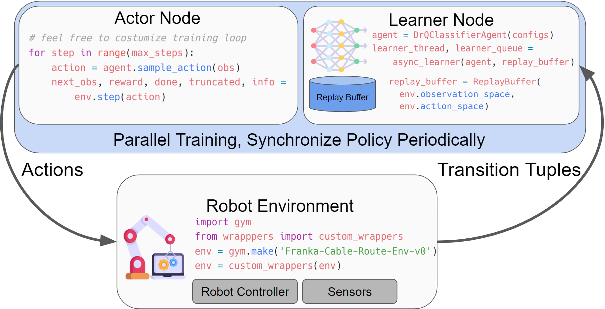

图表说明：原图对应第 5 页 Fig.2。actor 接收观测并采样动作，机器人环境执行动作、返回转移元组，learner 从 replay buffer 更新网络并周期性同步策略参数。图中的代码是架构示意，不是本章实际运行的程序。
进一步分析：这种分离使网络做多次梯度更新时，机器人仍能按固定频率接收动作。提升更新次数若阻塞执行线程，可能节约环境样本却浪费墙钟时间，并破坏接触反馈。
注意：该图没有 HIL-SERL 的人工接管分支或专门夹爪评论家。不能把后续系统的同名 actor/learner 结构直接当作此版本已经具备的机制。
SERL 用马尔可夫决策过程描述任务，状态观测含图像和本体信息，动作是发给下游控制器的目标。真实实验使用 Franka Panda，视觉骨干为 ImageNet 预训练 ResNet-10，后接两层 MLP；输入还包括末端位姿、twist、力与力矩。PCB 和线缆任务使用两台腕部相机，搬移使用一台腕部和一台侧视相机。主文将动作描述为六维末端相对位姿，并在相对坐标章节写成六维 twist。它不是像素到关节电流的直接黑箱：动作还需变换坐标并通过阻抗控制层转换成关节力矩。第 5 节，第 7—8 页（此附件保存在完整本地归档中）
对学习器而言，一条基本记录由当前观测、执行动作、奖励、下一观测和回合边界组成。先前数据可来自示范，也可以是次优经验；在线 replay 则积累机器人自己尝试过的状态转移。离策略学习允许用旧数据更新当前策略，不要求每条样本都由最新网络生成。这里的“online”表示采集来源，并不意味着更新只能严格使用刚刚那一步；理解这一点，才能看清为什么一段示范能反复影响后续价值估计。
环境适配层提供 Gym 风格接口，让控制、相机、奖励和回合处理被封装为可交换的组件。actor 负责按时推理，learner 负责优化，两者周期性交换参数，机器人环境处理真实动作与传感器。图注说三部分并行，正文还讨论 actor 与 learner 线程分离；这是对职责与异步运行的说明，不足以断言每台机器固定启动三个独立操作系统进程。真正重要的是保持控制频率和数据一致性，而非机械地数进程数。
3. RLPD 的三件事：多做更新、保留先验数据、抑制价值失稳
SERL 的核心算法来自 RLPD，本身以 soft actor-critic 一类离策略 actor-critic 为基础。策略 在观测 下产生连续动作；评论家 估计该动作后能获得的折扣回报；目标网络 提供相对缓慢变化的自举目标。主文给出的损失可以清楚写成
是本次转移奖励， 折扣未来， 是下一观测， 是自适应熵权重。第一式让当前 Q 贴近即时奖励加下一状态价值，第二式让 actor 偏好高 Q 动作，同时保持一定探索熵。期望在实际更新中由采样近似。这里按论文显示的形式解释，不把另一份 SAC 教科书中所有目标项自动添回原式，也不把目标网络和在线网络当成同一个每步共同求导的对象。第 4.1 节，第 4 页（此附件保存在完整本地归档中）
RLPD 在这个基础上强调三项实践选择。第一是较高更新与数据比，即每增加一份环境数据做多次优化，以计算换真实采集。第二是每批一半先前数据、一半在线 replay，让少量有成功信号的示范不会被越来越多的失败探索稀释。第三是给 critic 加 layer normalization，使高更新比下的估值更稳定。归一化针对网络激活，不是把机器人所有坐标改成同一物理单位，也不是保证 Q 绝不高估的数学证书。
示范在这里首先是离策略经验，不等于先训练一个 BC actor，再把 RL 当作残差叠在上面。原文允许从零训练，也允许先前数据启动；实验为每项任务提供二十条遥操作示范。算法会按回报评价这些动作，actor 的目标仍是价值与熵，不是永远最小化到示范动作的距离。这样既能借示范找到初始成功通道，也能逐渐学到示范中没有的更快策略。论文没有给出统一适用于所有设置的 UTD 数值、critic 集成数量和完整超参数表，不能把后来的仓库默认值或 HIL 配置写成这篇论文的原始实验事实。
4. 奖励有三种路线，本文实例并未全部采用 VICE
在纯状态任务中，奖励可以由可测量位置直接计算，但图像中是否插入到位往往需要另一个感知模型。SERL 提供三种奖励路线：手工可计算奖励、离线正负样本训练的二元分类器，以及随策略更新负样本的 VICE。对于分类器，令 表示观测满足成功事件 的概率，主文给出的奖励是
该值越接近零越好，低成功概率对应较大的负数。它不是 HIL-SERL 中“任务完成为一、其余为零”的相同公式，也不能因为分类器输出概率就擅自替换成阈值后的二元奖励。二元指监督标签只有成功与非成功两类，并不强制所有下游奖励都只有两个数值。第 4.2 节，第 4—5 页（此附件保存在完整本地归档中）
固定分类器的问题是，优化策略可能找到训练集中没有的视觉状态，让判别器高分却没有真正完成任务。VICE 用策略访问状态补充负样本并迭代训练判别器，构成策略与奖励模型相互制约的过程：策略追求高奖励，判别器学习区分目标事件和策略当前分布。它可以只由成功事件样本启动，不要求用户预先枚举全部失败形态。但把策略样本作为负类是一种对抗学习构造，不等于真实世界里每个策略访问状态都被人工认证为失败。
原表 2 对实际任务给出更具体的选择：PCB 使用 Ground Truth，依赖连接件刚性夹持时末端位置能反映插入；线缆与搬移使用 Binary Classifier。表并未标成 VICE，所以可说系统支持 VICE，不能说三项主实验都在线更新判别器。位置奖励也有前提：若连接件在夹爪中滑动，仅凭末端高度可能误判，这一约束在原文中已有说明。奖励定义、奖励模型训练和策略优化是三个相关但不同的环节，省略其中任何一个都会把“学会利用评分器”误读成“真实完成任务”。
5. 一组手算把批次混合、负奖励和 TD 传播接起来
以下是教学构造，不是原论文实测轨迹。假设某段线缆接近槽口时分类器给成功概率 0.8，则奖励为 ；视觉状态更差时概率 0.2，奖励约 −1.6094。前者奖励更高，但都不是正一。若取示例折扣 0.9、下一状态目标价值 −0.1，那么前者 TD 目标为 。当前 Q 若为 −0.5，平方误差约为 0.0349，更新会把当前估计拉向较好的目标。
再设批次只有四个样本，其中两个来自二十条示范组成的先验库，两个来自在线 replay。即使在线库增长到先验库的十倍，一半采样规则仍让每批保留两个先验样本；这与把所有数据混在一个池里均匀抽样不同。假设每个新环境步做五次更新，那只是本例的更新与数据比为五，不是论文披露的固定参数。actor 可以利用经这些样本训练出的 critic 选择更高回报动作，而不是在每个状态随机决定抄哪一条示范。
这个例子也揭示了一个失败模式。若分类器在真实失败状态给出 0.99，它产生接近零的高奖励，TD 传播会让前面的动作同样变得诱人。增加更新次数只会更快传播这个错误，不能自动修正奖励语义；只有补充针对性标签、改善奖励模型或采用相应的对抗更新路线，才可能解决它。相反，分类器太保守会让真实成功也变得难以辨别。因此“高 UTD 样本高效”成立的前提，还包括可用奖励和数据覆盖，而非只是 GPU 更快。
6. reset-free 的准确含义：学一个反向任务，而不是抹掉复位成本
SERL 的前向—后向重置用于搬移任务。前向策略把物体从一个箱子送到另一个，后向策略再把它送回；两套 agent 各自有策略、Q 函数和奖励定义。机器人因而可以交替尝试两个有目标的任务，不必每次由人把物体摆回原箱。后向 agent 不是前向动作序列倒放，因为抓取、释放和接触未必时间可逆。它必须同样感知当前物体并选择能把环境恢复到可继续训练区域的动作。第 4.3 节，第 5 页；任务描述，第 8 页（此附件保存在完整本地归档中）
生命周期上，前向完成会为后向提供初态，后向完成又为前向提供下一次机会。如果一端策略把物体带到另一端难以处理的区域，两个 agent 的学习分布就会互相影响。所谓 reset-free 是消除任务间那次人工复位的需求，并非机器人不再需要重设末端、不会失败，也不是可以从任何掉落或环境异常中无限恢复。本文搬移从箱体中央上方开始，表 2 的 Random Reset 为 False；PCB 与线缆则在固定区域随机化每回合起始末端。这些空间条件是实验的一部分。
原表的搬移训练总时长为一百零五分钟，因为学习了前向与后向两套策略，不能把它改写为一个搬移策略一百零五分钟再拿来与其他单策略比较，也不能删除后向成本只说不到一小时。正文用“每个策略不到一小时”概括该结果。另一方面，SERL 并未在此版本提出 HIL-SERL 那种随时接管动作、将干预片段双写两个缓冲区的训练主线，也没有专门推导开、关、保持的夹爪 DQN。搬移确实涉及抓取，不能因此把后续离散夹爪设计反投射到本文。
7. 为什么要在一千赫兹层限参考，而不是只缩小策略动作
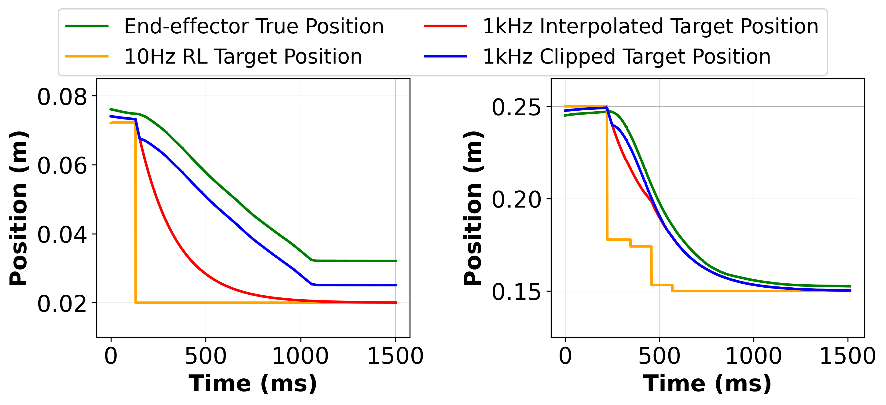

图表说明：原图位于第 6 页。橙色是十赫兹 RL 目标，红色是插值后的实时目标，蓝色是限制后的参考，绿色是实际末端位置；左图向硬表面继续运动，右图是自由空间快速移动。
进一步分析：左侧接触后实际位置停住，参考不应继续远离它，否则弹簧式误差会转成大作用力；右侧没有阻碍，限制后的参考可以持续跟随实际位置推进，因此仍能完成较长距离动作。
注意：参考限制是低层控制设计，不是证明任何动作都安全的形式化盾牌。图展示两个控制场景，没有替代所有接触材料、夹持状态和机器人型号的验证。
高层策略约十赫兹给目标，低层阻抗控制器一千赫兹跟踪；一个高层周期包含一百个低层步。主文把弹簧阻尼目标写为 ，其中 ， 是实测姿态， 是目标姿态， 对应刚度和阻尼，后两项为前馈与科里奥利补偿，再经雅可比转置与零空间项形成关节力矩。符号正负要服从控制实现的约定，本章主要讨论幅值：当目标远在障碍之后，实际位置无法跟上，误差积累就会带来大力。
直接降低刚度会损害精度；直接把高层动作缩到微米级，又会使自由空间靠近目标需要极多环境步。SERL 因而在低层每一实时步约束 。若用相邻步误差差分估计速度项，误差差最多为 ，弹簧阻尼部分幅值可界为
是低层频率。这个界针对被约束的弹簧阻尼项；不能把未同时约束的前馈、补偿或所有真实碰撞动力学也塞进相同上界。若一个高层周期有 个实时步，只要 ，实时参考仍可在自由空间逐步追上高层较大位移。教学上，取 、 毫米，一个高层周期可容纳十毫米推进；若直接把高层动作也限为 0.1 毫米，相同十毫米路程反而要一百个高层周期。此例只说明不同层级限幅的作用，不是论文设置的刚度或安全阈值。
8. 相对坐标让固定目标训练也能包含相对位置变化
机器人若只看到基坐标中的绝对末端位置，可能记住固定槽口的坐标而忽略图像。SERL 每回合随机初始末端，并把本体位姿表达在该回合起始末端坐标系中；动作则在当前末端坐标系表达。因此目标即使固定在桌上，从随机初始相机看去也会处在不同相对位置。附录的齐次变换可写为
是基坐标， 是回合起点， 是当前末端， 为三乘三旋转， 为三维平移。输入给策略的是相对变换中的位置与旋转。若起点绝对坐标为 0.4 米，当前为 0.43 米，忽略旋转的一维示例给出相对位移 0.03 米；把二者同时整体平移 0.1 米，输入仍为 0.03 米。这消除了部分绝对位置捷径，却不自动消除相机遮挡、物体外观变化和所有姿态变化。第 4.6 节及附录 7.1，第 6—7、9—10 页（此附件保存在完整本地归档中）
当前末端系中的 twist 还要通过伴随映射转到基坐标。按角速度在前、线速度在后的标准排列，可以解释为
表示叉乘矩阵；若实际接口采用相反的六维排列，矩阵块也须相应调整。附录原排版有变换下标及末项索引笔误，因此不能把未经辨析的字符串当成可直接粘贴的实现。这里给出明确约定下的数学含义，源代码映射仍由固定实现核验。相对观测与相对动作是两个不同变换，前者消除起点坐标偏置，后者给出当前腕系的运动意图，不能用同一个逆矩阵替代两者。
9. 实验说明系统有效，分母与对照仍限定了结论
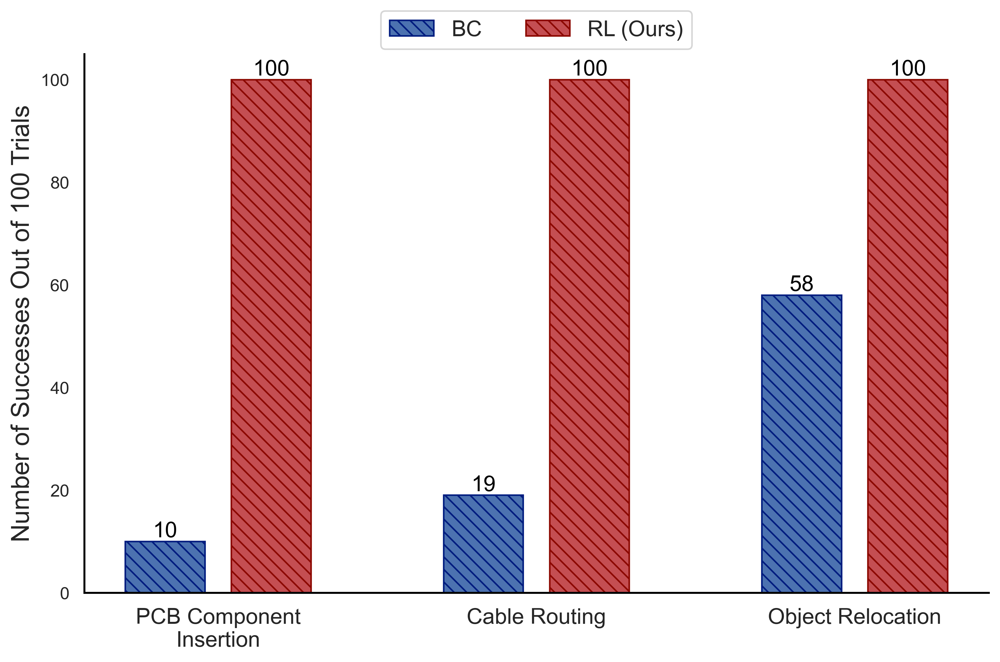

图表说明：原 Fig.6 位于第 8 页，纵轴为一百次测试中的成功数。PCB、线缆和搬移的 RL 均为 100，BC 分别为 10、19、58；图注中的十倍、五倍和约一点七倍是比例概括。
进一步分析：BC 获得一百条高质量遥操作，而 RL 只用二十条初始示范并继续采集真实交互。结果表明在该任务分布中单纯增加模仿示范不如结合回报优化，但不是两种方法使用完全相同数据的算法隔离实验。
注意：一百次零失败是有限测试结果，并非普遍零失败概率。搬移这一栏也没有分别列出前向与后向各自独立的一百次分母，不能自行倍增总试验数。
原表 2 给 PCB 二十分钟、线缆三十一分钟、前后向搬移一百零五分钟；正文“PCB 和线缆均不到三十分钟”与线缆表值略有出入，精确数值应保留三十一分钟。训练时长包括计算、reset 和计划内停止，均在一张 RTX 4090 上完成。二十条 RL 示范与一百条 BC 示范都遵循同样起点随机化；作者称后一数量大致接近 RL 收敛时 replay 中的数据量，但数据类型不同，不能据此声称每个状态和每条轨迹完全匹配。
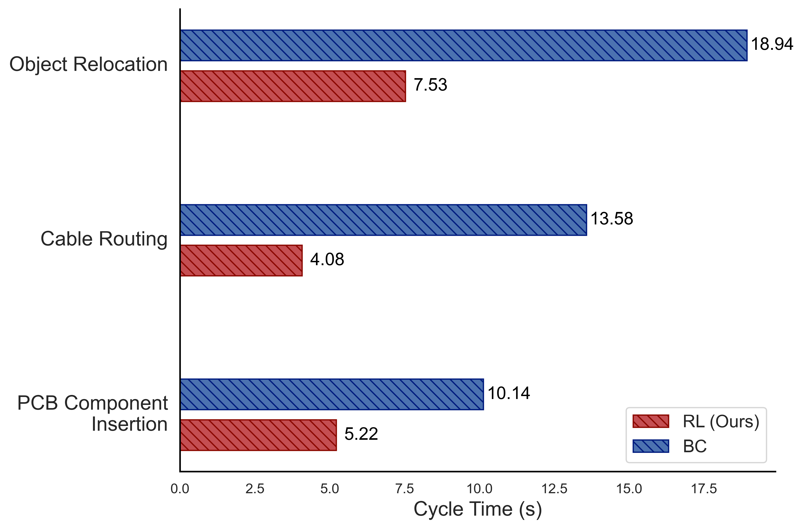

图表说明：原 Fig.7 同样位于第 8 页。PCB 的 BC/RL 时间为 10.14/5.22 秒，线缆为 13.58/4.08 秒，搬移为 18.94/7.53 秒，横轴为成功完成的平均周期时间。
进一步分析：由原图数值计算的加速分别约 1.94、3.33 和 2.52 倍。它们支持更有效率的行为，但 PCB 略小于两倍，因此应以数值解释图注“至少两倍”的近似表述。
注意：周期统计以成功完成为对象，不能代替把失败、超时和重置也计入的每小时吞吐。图没有给出误差条，也没有独立训练种子的分布。
跨机构验证另在华盛顿大学用三维打印件完成插销任务：硬件软件准备少于三小时，二十条示范后十九分钟收敛，测试 100/100。这是可移植性的一个实际实例，但不能推出任意机械臂接入都只需同样准备时间。与其他论文的插入任务表比较也属于文献间对照，连接器、奖励、随机化和控制装置不同；SERL 在原文已承认不能直接公平排序。论文没有逐一移除 UTD、先验混合、归一化、奖励模型和限参考机制的完整因子消融，因而整套系统成功是直接证据，单个组件普遍必要则仍是解释。
10. 与 HIL-SERL、RLT 放在一起：保留层级与数据角色的区别
SERL 的边界首先是任务工程仍然存在。PCB 地面真值奖励要求刚性预抓，线缆需要选好相机与分类器，reset-free 只在可双向搬移的任务展示；复杂不可逆装配未必能训练一个反向策略。作者也把更一般的奖励与复位视为开放问题。虽然框架可接其他 Gym 环境，本文实证主体是 Franka 接触操控，不能从软件接口的通用性直接推出所有任务和机器人上的性能通用性。鲁棒恢复在演示中可见，但缺少逐种扰动带分母的大规模量化测试。
HIL-SERL 在此基础上把人的在线纠正提升为探索主线，并为离散夹爪单独训练 DQN 评论家，还加入双臂与动态前馈 wrench 任务。SERL 已经有遥操作示范和相对坐标，HIL 并非从零发明它们；反过来，HIL 的干预双缓冲写入、九种双夹爪组合和抓握惩罚，不能写成 SERL v4 已经报告的设计。HIL 使用脚本或人工重置的事实，也不应被 SERL 的前后向 reset-free 掩盖。这一机制分界比用“更先进版本”一句话概括更有助于阅读两篇实验。HIL-SERL 第 3.3—3.5 节，第 7—9 页（此附件保存在完整本地归档中）
RLT 则改变了在线学习的表示与行动起点。SERL 从图像、本体状态和少量先验轨迹训练任务 actor-critic；RLT 在初始适配后冻结 VLA 与 RL token，通过 token 读出压缩表示，让小 actor 在本体状态和 VLA 参考动作块的条件下直接输出动作块，并用到参考的距离约束保持局部改进。两者都复用 replay，但 SERL 的先验主要是数据，RLT 的先验还体现在每次推理都存在的大模型表示和动作提案。RLT 的动作块也改变 TD 的决策时间单位，不能把 SERL 单步公式原样套到长块而忽略跨块折扣。RLT 第 3—5 页（此附件保存在完整本地归档中）
这也解释了两篇成功率不能直接当作方法排行榜：SERL 的任务、奖励和控制层与 RLT 的 VLA 适配设置不同，前者主实验每项一百次，后者主文受控比较为五十回合且仍有人的终点奖励、重置和可选接管。SERL 所教会读者的是，表示、样本复用、真实控制和任务维护必须在同一时间链上闭合。本章的公式与流程来自锁定论文和原图；它不把发表后的仓库默认参数当成原始实验，不将静态理解伪装成已经执行的训练或复现结果。
HIL-SERL：让人的纠正进入价值学习，在真实接触中长出可恢复的控制策略
1. 接管不是最后的成功保证，而是把探索带进可学习区域
HIL-SERL 要解决的困难比“给机器人若干成功示范”更具体。精密插接中，模型可能在错误接触上卡住；双臂装配需要两只手同步抓握、改变接触与处理形变；高速甩鞭又来不及让人每个动作都纠正。少量示范可以让策略知道任务大概怎样完成，却无法覆盖它自己失误后真正会到达的状态。论文让人监督在线 rollout，在必要时用 SpaceMouse 接过控制，把机器人从坏状态带回有机会成功的区域，然后把这些真实纠正作为离策略 RL 数据继续学习。HIL-SERL v3，第 1—5、7—9 页（此附件保存在完整本地归档中）
这与仅靠人保证每次训练回合成功有本质差别。若机器人总被人一路带到终点，它可能并未学会在中间状态独立决策；训练成功率高也可能只是接管比例高。HIL-SERL 因而同时看任务成功率、完成周期和干预时间比例，期待策略改善后人逐渐退出。人的动作是探索和数据支持，最终策略仍按任务回报优化，而非被永久要求逐步复现人的修正轨迹。它可以利用成功与失败之间的差异，改进速度与恢复行为。
全文把任务组织为七类场景，细分出多项独立策略，包括主板各子任务、IKEA 各面板、仪表盘、交接、同步带、Jenga 和翻物。它不是一个在语言条件下共享全部技能的通用策略。标题中的 Human-in-the-Loop 描述主要训练方式，也并非每个任务都实时接管：动态甩鞭与翻物不适合如此操作，论文为这些场景采用离线示范等替代数据路径。理解这项例外，才能避免把“有人工参与”与“每个环境步都有人纠正”混为一谈。
2. 系统里有三条回路：执行、连续动作学习与夹爪学习
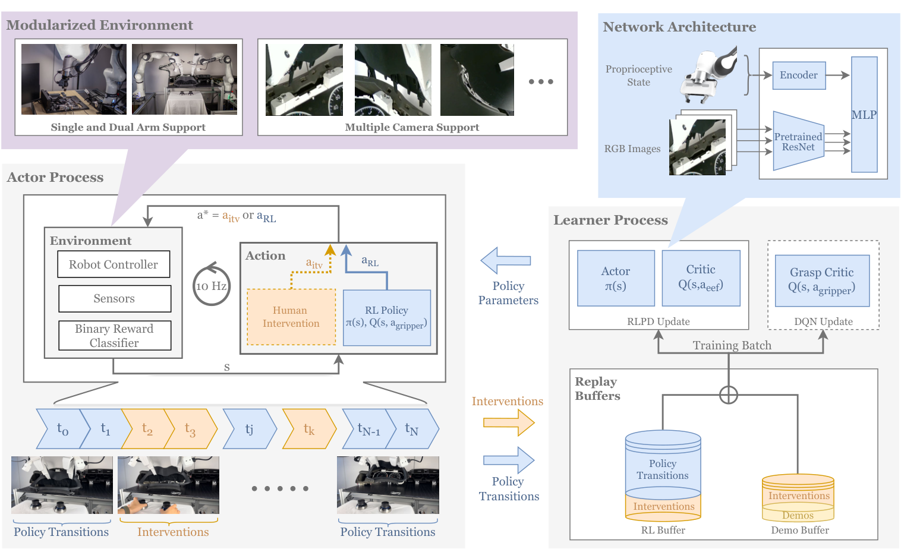

图表说明：原图位于第 6 页。左侧 actor 把策略动作或人工动作送入机器人，右侧 learner 用两个缓冲区更新；连续运动通过 RLPD actor-critic，需夹爪控制时另加 DQN grasp critic。
进一步分析：橙色人工片段进入 demo 与 RL 两边，蓝色策略片段只进入 RL buffer。两类动作最终拼接后同时执行，数据再共同影响后续估值。
注意：这种动作分解是同一物理系统中的近似学习安排，不表示两只评论家对应完全独立的真实动力学，也不是把连续 actor 的输出简单取整当成夹爪动作。
策略接收裁剪至感兴趣区域并缩放到 128×128 的多视角图像、本体状态，以及有需要时的夹爪状态。共享 ImageNet 预训练 ResNet-10 提取各图像嵌入，拼接后与本体编码融合。附录各任务表给出本体编码器宽度六十四，运动 MLP 为两层二百五十六；有夹爪的任务，grasp critic 也是两层二百五十六。主文没有明确写出所有预训练层在每个阶段是否冻结，因而不能由“使用预训练骨干”自动推断整个视觉网络始终冻结。
大多数接触任务输出每臂六维 Cartesian twist，双臂为十二维，再加离散夹爪动作。RAM 和 SSD 预先抓住零件，主学习接口是六维运动；USB 抓取插入与线缆卡扣还输入夹爪位置，输出六维运动加离散夹爪；仪表盘和交接用双臂运动加离散夹爪。同步带虽使用两臂，其附录表的学习动作是十二维 twist，并未给它配置同样的离散夹爪头。不能因为任务中存在夹爪实体，就认定每项任务都训练了 grasp critic。附录 A，第 33—45 页（此附件保存在完整本地归档中）
动态任务的接口又不同：Jenga 直接输出末端系的 ，翻物输出 。它们是三维前馈 wrench，经雅可比转置变成关节力矩，不是六维位置目标的另一种标签。观测还包含关节位置与速度。高层均为十赫兹，低层一千赫兹执行；这种分支解释了同一学习框架怎样容纳反应式精密操控与高速动作，但不能把所有任务都描述为同一个阻抗位姿控制器。
3. RLPD 怎样用人的数据，却不把 actor 永久绑在示范上
底层学习以 RLPD 为基础。设 为多模态观测， 为连续运动， 为任务奖励， 为执行后的观测， 是高斯策略， 为动作价值， 为目标网络。主文两项核心损失为
决定未来折扣， 自适应调节熵，目标网络用于稳定自举。评论家从真实转移学习哪些动作通向成功，actor 则选择更高值动作并保留探索。这里按显示公式解释，不把文本里没有出现的所有标准 SAC 细节凭记忆补进来。附录给多数任务 Adam 学习率为 ，任务折扣在 0.96 到 0.985 之间，不能用一个数字覆盖全部任务。第 3.1 节，第 5 页；附录各任务表（此附件保存在完整本地归档中）
learner 每批等量抽取 demo buffer 与 RL buffer。demo 最初装二十到三十条人类示范，此后还增加在线纠正；RL buffer 装策略尝试，也装接管片段。人的数据因而在有用的状态附近持续提供覆盖，而不是在大批机器人失败轨迹中被稀释。由于评论家用的是回报目标，人的动作并不会因“来自专家”就获得无限价值；若某段纠正慢、次优或并未完成任务，它的后果仍受真实回报和自举评价。
这也是与 HG-DAgger 的关键差异。两者都能在策略出错时收集人动作，但 HG-DAgger 用这些动作训练监督模仿，HIL-SERL 则利用由它们连接起来的状态转移做动态规划。正确动作的价值可以反向传播到机器人之前自行到达的状态，未来 actor 也可以选择不同于人的、更快的动作。论文没有在 actor 中施加必须贴近所有示范的显式动作距离约束，因此不应把它解释成“每个 RL 步都加行为克隆损失”。
4. 干预的记录规则决定了系统究竟在学什么
设机器人原本采样 ，人接管时输出 。物理执行动作是当前控制权选中的那一个，而不是两者相加。干预片段的观测、实际人动作、奖励与下一状态同时写入两个缓冲区；接管前后由策略执行的转移只写 RL buffer。一个回合里可以出现多次短干预，不要求整条轨迹切换成全人类演示。由于算法离策略，接管造成行为策略变化本身不妨碍训练，前提是记录的动作与真实后果相配。第 3.4 节，第 7—8 页（此附件保存在完整本地归档中）
人的主要作用是在坏接触、不可恢复趋势或局部停滞时给出有用方向。成熟一些的策略只需更短的提示，其他时间继续自主尝试。论文特别提醒不要持续给长而稀疏、一直通向成功的干预，否则早期价值可能高估、训练不稳定。原因在于对某些机器人状态估出的后续成功，实际上依赖人日后再次救场；若策略自己还不会完成同样后续，就会高估自主可达结果。人工接管必须在训练指标中单独记录，不能用高回合成功掩盖策略能力不足。
干预率定义为一回合中被人接管的时间步数除以总时间步数，再取二十回合运行平均。它不是“有过一次接管的回合比例”，也不是人按按钮的次数。例如两次各五步的纠正在一百步回合里占一成；一次长达五十步的纠正占一半，即便按事件计数只有一次。系统希望这个时间占比趋向零，同时任务成功维持高值，才支持“人逐步退出”的判断。训练时的成功曲线含有人工执行，最终独立评估则应以表中正式协议为准。
5. 夹爪为什么另学：三个离散选择与九种双手组合
夹爪的打开、闭合和保持不是一条连续幅度轴上的三个随意阈值。微小的时机差可能让另一只手尚未抓稳就释放物体；把它和连续腕运动一起拟合成高斯，探索时容易反复开合。HIL-SERL 为需夹爪的任务另设离散动作空间：单夹爪三个动作，两夹爪共有 种组合。grasp critic 接收同样的图像、本体和夹爪状态，为每种离散动作输出价值；查询连续 actor 后，再对离散价值取 argmax，拼接执行。第 3.3 节，第 7 页（此附件保存在完整本地归档中）
令 表示离散夹爪组合，在线评论家参数为 ，目标参数为 ，论文的更新可写为
在线网络选择下一动作，目标网络评价它，属于带这种选择—评价分离的 DQN 更新；目标参数通过 Polyak 平均平滑跟随在线网络。没有把离散动作重参数化成可求导的连续量。正文把连续与离散学习描述为两个 MDP，共享状态、奖励和折扣；真实物理效果仍耦合，因为腕姿改变会影响抓取，而夹爪改变会影响接触。因此这是一种有效的因子化设计，不能读成已经严格证明两者最优解独立。
用一组教学数字看更新：下一状态三个动作在线值为打开 0.4、闭合 0.8、保持 0.6，于是选闭合；目标网络对闭合给 0.65。取 USB 任务披露的折扣 0.98，并为本例假设一次操作惩罚为 −0.01，非终点目标为 。当前被执行动作值若为 0.5，平方误差为约 0.016129；若这是成功终止且不再自举，目标只剩终点奖励。−0.01 是教学构造，论文只说抓握任务附加小负惩罚，并未在主文给统一数值。
再把干预与混合放进同一例子：一百步 USB 回合有十二步人接管，时间干预率为 12%。十二条片段在两个库都存在，并不意味着每次训练必须将它们完全重复一遍；实际抽样还取决于库大小和等量采样。双写提高的是这类数据在 demo 路径中持续可见的机会。若在接管时仍把 写进记录，下一状态却由 造成，上述 critic 就会把人的正确后果错误归因给机器人动作，破坏整个方法要学习的因果配对。
6. 奖励、重置和低层控制的归属，要按具体任务读
多数任务训练离线二元奖励分类器，只在完成任务时给一，其余为零。典型采集量约二百张成功、一千张失败，约五分钟；还补采可能误判的边界样本。附录 B 用预训练 ResNet-10 加两层 MLP、交叉熵、Adam 学习率 ，训练一百次迭代。分类器评估准确率通常超过百分之九十五；RAM、SSD、USB 插入、线缆卡扣的表值分别为 97%、95%、96%、97%。这些是奖励分类器准确率，不是策略成功率，类别不平衡和部署分布变化仍可能让高准确率掩盖关键假阳性。第 3.5 节及附录 B，第 8—9、50 页（此附件保存在完整本地归档中）
Jenga 是明确例外：附录表 11 使用回合结束的人类标注奖励、三十条示范、最多二十环境步，每回合跑满最大长度。翻物则仍用腕相机分类器、二十条示范、最多一百步。两种动态任务都不适合在线动作接管，不能把前者的人终点标签与常规 SpaceMouse 控制接管混成一种监督。RAM 成功也有操作边界：插到位但不触发锁扣，以便复位；要真正锁紧可以额外施力，不能把训练回合的每次成功写成完整锁扣装配。
reset 不是从 SERL 原样继承一个统一后向策略。按附录逐项，RAM、SSD、USB 抓取插入、IKEA 面板和翻物使用脚本 reset；线缆卡扣、仪表盘、交接、同步带和 Jenga 使用人工 reset。主文第 3.5 节把 USB 拾取插入列为人工复位示例，和附录表 4 的 Scripted reset 不一致，因此本章保留两处原文，并在具体配置描述中采用逐任务表，不能假称二者完全一致。也不能把“干预率趋零”解释为现场再也不需要人复位。附录 A，第 33—49 页（此附件保存在完整本地归档中）
精密任务沿用 SERL 的实时参考限制：十赫兹策略设点，一千赫兹阻抗跟踪，限制目标与实际姿态误差，避免接触后因目标继续深入而积累大作用力。相对本体观测为 ，动作在当前腕系，经伴随映射转回机器人接口；前者以回合起点为参照，后者随当前腕姿变化。动态任务则直接发前馈 wrench，由低层雅可比转置转力矩。以上部件解释了任务接口，但既不是任意碰撞的安全证明，也没有消除传感器标定、图像裁剪和每任务装置的工程成本。
7. 正式实验的分母：多数一百次，整体 IKEA 只有十次
| 独立策略/场景 | 训练小时 | BC/模仿成功率 | HIL-SERL | 周期秒：模仿→RL |
|---|---|---|---|---|
| RAM 插入 | 1.5 | 29% | 100% | 8.3→4.8 |
| SSD 装配 | 1 | 79% | 100% | 6.7→3.3 |
| USB 抓取插入 | 2.5 | 26% | 100% | 13.4→6.7 |
| 线缆卡扣 | 1.25 | 95% | 100% | 7.2→4.2 |
| IKEA 侧板一、二 | 2、1.75 | 77%、79% | 各 100% | 6.5→2.7、5.0→2.4 |
| IKEA 顶板 | 1 | 35% | 100% | 8.9→2.4 |
| IKEA 整体 | 子策略串联 | 1/10 | 10/10 | 未报告 |
| 仪表盘 | 2 | 41% | 100% | 20.3→8.8 |
| 物体交接 | 2.5 | 79% | 100% | 16.1→13.6 |
| 同步带 | 6 | 2% | 100% | 9.1→7.2 |
| Jenga 甩鞭 | 1.25 | 8% | 100% | 未报告 |
| 翻物 | 1 | 46% | 100% | 3.9→3.8 |
以上逐项来自第 13 页表 1a。除 IKEA 整体外，每项一百次正式测试，初态按脚本或人工复位随机化。IKEA 整体还允许每个子策略最多两次尝试，在子任务之间用脚本移动，并将抓取姿态各平移维随机化一厘米。主板完整装配同样以脚本连接四个训练子策略；成功开机展示支持零件未被训练损坏，却不等于从头到尾一台长时策略自主规划全部步骤。RAM、SSD 与 IKEA 部件还有预抓及周期性重新抓取的设置，应保留这些起点条件。
多数模仿基线是 HG-DAgger：离线起点示范相同，再运行相同回合数，尽量提供相当数量的人类纠正。Jenga 和翻物改用平面 BC，分别五十和二百条示范，因为实时纠正不适合。表中十二项独立策略的模仿成功率平均 49.7%，不含十次的整体 IKEA；RL 为 100%，相对提升约 101%，不是增加一百零一个百分点。周期均值 9.6 对 5.4 秒来自有时间报告的十一项，Jenga 和整体 IKEA 不在这个均值中，也不能把 1.8 倍解读成每个任务都至少快 1.8 倍。
训练时长含脚本运动、rollout、计划内停止和板载计算，硬件为一张 RTX 4090。同步带明列六小时，因此摘要“一至两点五小时”只适用于多数任务。全表没有给多随机种子与正式置信区间，百分之百是有限条件的测试观察。即使把每项一百次理想化为独立同分布，零失败也不能证明真实失败概率为零；跨任务合并更不能掩盖最难任务自己的不确定性。
8. 对照与曲线支持在线纠正，但也保留了动态任务的反例
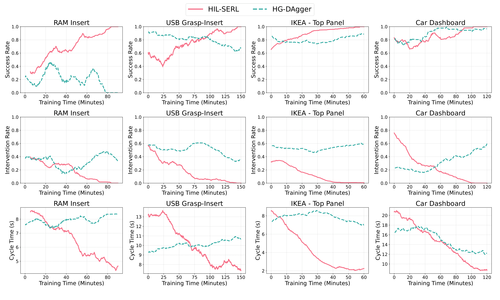

图表说明：原图在第 14 页，四列为 RAM、USB 插入、IKEA 顶板和仪表盘；三行分别是成功、干预时间比例和周期，均按二十回合运行平均展示。
进一步分析：HIL-SERL 的干预下降与成功提升同步，比只观察顶部曲线更能说明自主控制在改善。HG-DAgger 的部分高训练成功仍伴随较高接管，不能视作同样高的自主成功。
注意：训练窗口指标会包含人工动作，也会随窗口平滑；正式比较应回到表 1 的独立评估。图中没有多种子区间，不能用平滑曲线代替统计显著性。
表 1b 在 RAM、仪表盘和翻物上比较多种方法。完全无示范、无纠正为三项零成功；有二百条示范但无在线纠正分别为 48%、0%、100%；完整方法均为 100%。前两项支持在线纠正在精密与双臂任务上的关键作用，翻物则说明它不是所有任务达标的必要条件。不能为了强调标题，把这个明确反例删掉。相比之下，IBRL 为 75%、0%、95%，Residual RL 为 0%、0%、97%，DAPG 为 8%、18%、72%，方法之间对 BC 先验的使用路径不同，数据和优化归纳偏置也不同。
Diffusion Policy 使用二百条示范，RAM 为 27%、翻物为 56%；仪表盘在表 1b 是 18%，第 17 页正文则写 28%，原文内部不一致。本章以表值介绍表中对照，同时保留文本冲突。附录 C 已给它的动作块配置：RAM 预测八步执行两步，仪表盘预测八步执行四步，翻物预测并执行一步，观测历史均为一。因而不能说所有 diffusion 基线都固定执行八步，也不能用这个特定数据量下的排序证明扩散策略天生无法闭环。
鲁棒性展示还包括移动主板、强制松开夹爪后重抓、扰动同步带和 USB 不良抓握后释放再抓。这些例子说明策略学到恢复，并与在线探索机制相符；原文第 4.4 节将它们定位为定性结果，没有每种扰动的独立分母。基础回合一百次的分母不能偷偷搬给每个视频场景。数据支持“在展示条件下能恢复”，对未结构化场景的普遍鲁棒性则还没有同等证据。
9. “漏斗”分析测的是动作价值敏感性，不是评论家不确定度
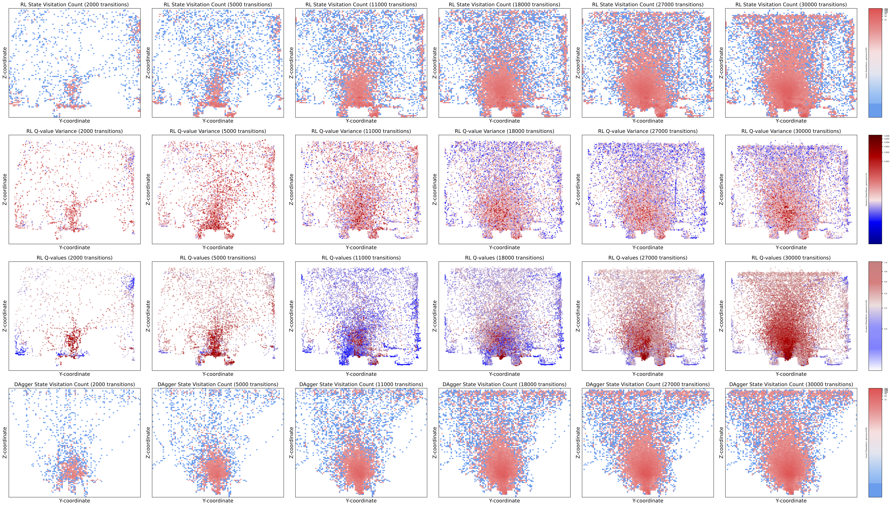

图表说明：原图在第 18 页。各列对应训练转移数量，前三行分别为 RL 访问热度、动作扰动下 Q 方差和 Q 值，最后一行为 HG-DAgger 访问热度；横纵坐标是末端 Y、Z 的投影。
进一步分析：随着训练，通向插槽的访问区域更集中，成功动作附近形成作者所说的漏斗。它提供了把示范附近行为稳定化的直观图景，而不是一条预先手写的轨迹。
注意：第二行方差来自同一 critic 对不同受扰动作的值，并非多个 critic 的分歧或认知不确定度；高方差可以表示动作选错的代价大，不应直接翻译成“评论家越没把握”。
作者固定状态及当前动作，对归一化到负一至一的动作加 均匀扰动，用一百个 Monte Carlo 样本计算
在穿槽关键状态，正确动作很有价值，稍偏一点却可能卡住，因而该方差可以大。举一个不同于前面 TD 的教学小例子，若四份受扰动作的 Q 为 0.9、0.9、0.1、0.1，均值为 0.5、方差为 0.16；若四份都为 0.9，方差为零。后者可能是平坦安全区域，也可能是 critic 不够敏感，不能只凭单个数判定优劣。还必须结合实际成功、访问密度和 Q 估计质量。
漏斗图显示的是某任务、某几个状态坐标投影中的训练现象，不是高维闭环系统的稳定性证明。两个不同接触状态可以投影到相同 Y、Z，而图里看不出夹持、旋转与视觉遮挡差别。作者把这分析定位为直观解释，因而可以用它连接“示范给出通路、RL 在周围学到纠偏”的故事，却不应宣称已求得控制理论中带吸引域保证的 funnel certificate。
10. 反应式与预测式行为：同样的学习框架，不等于同样的控制策略
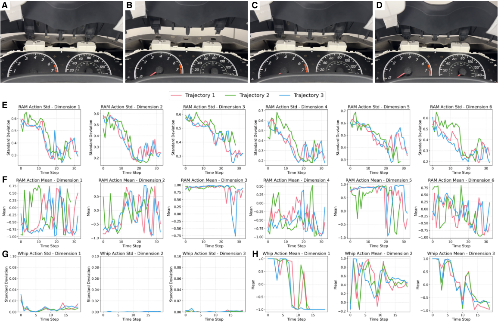

图表说明：原图在第 20 页。A—D 展示仪表盘卡住后抬臂脱离接触再接近；E、F 是三条 RAM 轨迹的标准差与均值，G、H 是 Jenga 的三条轨迹，对应三维动态动作。
进一步分析：RAM 接近目标时动作分布由较宽变窄，Jenga 多数维度标准差接近零，说明后者依赖稳定重复的高速运动。两者并不是用同一条固定脚本完成。
注意：图的 E、G 标准差曲线不能与上一节的 Q 扰动方差混同。低策略标准差本身也不证明内部存在显式世界模型或整段开环规划器。
RAM 与同步带需要不断利用新图像修正接触；仪表盘甚至会主动解除已有接触再建立正确接触，这是依靠真实试错学到的混合控制行为。高速甩鞭则在动作发生时难以及时根据影像修正，学习更一致的前馈 wrench 更合适。论文分析三条成功轨迹发现 RAM 早期标准差约 0.6，接近目标后下降；Jenga 标准差极小。这个描述解释行为差异，但三条成功轨迹的选择没有覆盖所有失败，也没有把输入反馈完全切断来验证因果。
因此“预测式”应读作行为上需要提前形成可靠快速动作，不能变成模型显式预测未来图像或用 MPC 搜索。策略网络仍按当前观测查询；翻物开始阶段还能先调整盘中物体，再执行翻转，结合了反应与快速前馈。统一的是数据与价值优化框架，动作接口及学到的控制风格则由物理任务决定。作者也承认每个任务仍要重新训练，长得多的时序和未结构化环境泛化尚未充分验证。
11. 与 SERL、RLT 的具体分界，以及这套证据能支持到哪里
SERL 已经提供 RLPD、先验与在线混合、相对坐标、实时参考限制、分类器/VICE 奖励以及前后向 reset-free。HIL-SERL 最关键的新增在于在线人工纠正进入双缓冲、离散夹爪评论家、双臂与动态动作接口，以及相应任务实证。HIL 的多数任务奖励采用终点二元事件，夹爪任务附小操作惩罚；SERL 的分类器方法则写了对数概率奖励，且 PCB 用位置真值。它们共享家族名称，不能因此省略这些改变。SERL 第 4 节（此附件保存在完整本地归档中）
RLT 又将在线学习起点换成大模型提供的表示和动作提案：初始适配后冻结 VLA 与 RL token，训练轻量动作块 actor-critic；actor 接收 token、本体和 VLA 采样参考，并用到参考动作的距离正则与参考 dropout 在模仿先验附近改进。HIL-SERL 的人类数据主要通过回放影响价值，在线 actor 没有每次必须接收一个 VLA 参考动作；它在多数任务每十赫兹步输出连续运动，并可拼离散夹爪。RLT 则以动作块定义决策和 TD 目标，执行范围及跨块折扣不同。RLT 第 3—5 页（此附件保存在完整本地归档中）
人工监督的语义也不同。HIL 用短接管帮助高维接触探索，并把真实干预动作写入两个库；RLT 接管时还涉及替换存储的参考动作，使 actor 的参考约束可利用人纠正。人的终点标签、重置和动作接管必须分别计费，不能统称“几乎无人干预”。HIL 的一百次每任务评估与 RLT 主文受控五十回合比较也不能跨条件直接排序；两者都还受任务分布、奖励可靠性和系统执行边界约束。
全文最强的实证是，在明确任务装置、少量示范和有针对性的人类帮助下，真实视觉 RL 能在实用时长获得高成功率，并产生更快、可恢复的动作。最不该扩张的结论是无限时序、任意物体与环境中的自动可靠性。该版本已经给了各任务相机、动作、reset、折扣、学习率、转移数量和分类器配置，不能将它们笼统说成未知；多种子误差、完整跨环境泛化和某些源内冲突则应如实保留。本章完成锁定论文的机制审读，不将论文流程当成已运行的训练，也不输出新的研究选题或复现任务。
OpenVLA（arXiv:2406.09246v3）精读章节
1. 问题、定位与作者真正要解决的失败模式
来源：摘要、Introduction 与 Discussion，PDF 第 1–3、11 页；任务协议见附录 B，第 21–32 页。
OpenVLA 论文的出发点不是再做一个只会复现单一轨迹的视觉控制器，而是回答一个更具体的工程问题：互联网规模的视觉语言模型已经能把“看见什么”和“语言要求什么”联系起来，为什么这种先验还没有变成一个开放、可适配、能跨机器人工作的控制策略？作者把障碍归纳为两类。第一，RT-2、RT-2-X 等当时最强的 VLA 是封闭的，外界看不到训练混合、模型细节和部署办法；第二，已有工作强调零样本展示，却没有系统说明怎样用少量新机器人数据把策略迁移到新的相机、物体和任务上。论文因此选择 7B 规模的开放模型和 970k 条真实机器人轨迹，目标是同时解决可复现性、跨具身泛化和下游微调三个问题。
这里的“泛化”被拆成了可以检验的分布偏移，而不是一句笼统的“更通用”：BridgeData V2 中分别改变背景和干扰物（视觉泛化）、物体位置和朝向（运动泛化）、物体大小和形状（物理泛化）、目标物体和指令语义（语义泛化），并额外检查同一画面里有多个候选物体时是否能按照指令选对目标。原始数据中有不少示范把末端执行器一开始就放在目标上方；作者的测试大多把末端固定在水槽上方，要求策略先横向找目标，再抓取。因此，低分既可能来自模型本身，也可能来自比训练数据更难的初始状态。附录明确列出 17 个 Bridge 任务、每项 10 次试验，其中有些任务允许 0.5 的部分成功分数；这使“成功率”与“是否走向正确物体”之间的差别可以被看见。
论文的第一遍阅读结论可以概括为：OpenVLA 是“视觉语言骨干 + 离散动作词元”的开放 VLA，结果和消融共同支持互联网预训练、Open X-Embodiment 多样性与 SigLIP-DinoV2 融合的作用，但没有给出对三者完全独立的贡献分解。它在一次只预测一个七维相对末端动作的设定下做得很强，作者同时承认单图像、无本体感受、无历史和约 6 Hz 推理会限制高频双臂控制。它解决的是开放泛化和迁移起点问题，并没有解决连续高频动作块建模，这一点对后文与 π0 和 RLT 的比较至关重要。
2. 输入、输出与“VLA”在这篇论文中的具体含义
来源：第 3.1–3.2 节、Figure 2，PDF 第 4–5 页；输入对照见第 5.2 节脚注。
OpenVLA 在论文主模型中接收一张第三人称 RGB 图像和一条自然语言指令，方法图的提示模板是“What should the robot do to {task}? A:”。模型输出一个七维控制向量，Figure 2 把它分为 、 与夹爪动作三组：前三维是末端位置增量，接下来三维是姿态增量，最后一维是夹爪开合。对照第 5.2 节的微调基线脚注，OpenVLA 的输入没有 proprioceptive state，也没有 observation history；所谓“单图像”是模型接口的边界。模型输出的是一个当前控制步的七维 action token 序列，而 π0 为一整段未来动作建立联合分布。
动作空间的离散化帮助统一跨数据集接口。不同机器人示范在动作量纲、控制频率和范围上并不一致；第 3.2 节把每个动作维度训练数据的第 1 与第 99 百分位之间均匀切成 256 个区间。用教学记号表达，设一维动作是 ，分位点是 与 ，可写为
其中 是区间宽度， 是要交给语言模型预测的离散索引；这是对论文文字中均匀分箱规则的数学展开，区间中心反量化例子用于理解量化误差。使用分位点而非最小值和最大值，是为了不让少数异常大动作吞掉分辨率。假设某个动作坐标的 、，则 。实际动作 对应 。若用区间中心反量化，得到 ，误差约 。这个数字没有被当作论文的实测精度，它只揭示固定分箱怎样把连续动作转成类别标签；真实控制误差还受裁剪范围、控制器和延迟影响。
Llama 2 tokenizer 原本只留出 100 个新 special token，不足以容纳 256 个动作词元。作者覆盖词表中最少使用的 256 个 token（对应最后 256 个），将其重新解释为动作离散值。训练只在动作 token 上计算 next-token cross entropy，用与论文训练描述等价的教学记号写为
这里 是模型参数， 是单张图像， 是语言指令， 是第 个动作坐标的离散标签， 是其前面的动作标签，主模型 。训练时先前标签由示范提供，推理时则由模型已经生成的动作 token 提供，所以单个动作向量也要沿 token 轴依次解码。第一个位置与最后一个位置具有不同条件上下文；这一顺序不能等同于七个未来时间步。位置轴、姿态轴与夹爪轴只是同一机器人时刻的不同坐标。
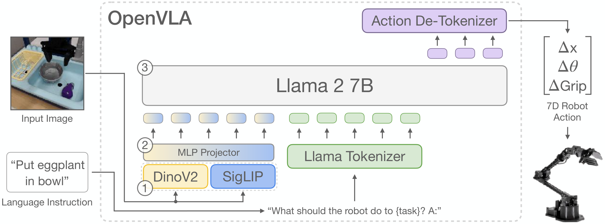

图表说明（方法图，来源 PDF 第 4 页，Figure 2）。 图左是输入图像和“Put eggplant in bowl”指令，DinoV2 与 SigLIP 的 patch 特征在通道维拼接，经 MLP projector 映射到 Llama 空间；Llama 2 7B 的输出经过 action de-tokenizer 还原成七维控制量。完整原文 caption 与 PDF/PNG SHA-256 记录在 图表 manifest（此附件保存在完整本地归档中）。
进一步分析。 action de-tokenizer 在这里负责离散索引与连续控制坐标之间的转换。它没有承担流匹配求解或未来轨迹生成；每次查询只产生当前动作向量。视觉和语言知识帮助决定应该操作哪个物体、向何处移动，连续控制的时间相关性仍由反复查询和外部控制器实现。
注意。 图中的少量紫色输出方块是示意，不能据此把七个动作坐标压成三个坐标，也不能把它们解释成 RLT 的 RL token。动作维度由原文图注的“7-dimensional robot control actions”限定。
3. 视觉骨干、训练数据与训练配方
来源：第 3.1–3.5 节，PDF 第 4–6 页；完整混合见 Table 3，第 21 页。
OpenVLA 建在 Prismatic-7B VLM 上。视觉端约 600M 参数，由 SigLIP 和 DinoV2 两个预训练编码器组成：同一图像 patch 分别通过两者，得到的向量在通道维拼接，再经过两层 MLP projector 对齐到语言模型的 embedding 空间。SigLIP 提供较强的语义对齐，DinoV2 提供更细的空间和低层结构特征；论文在早期 Bridge 实验中观察到，Prismatic 比 LLaVA 约高 10 个百分点，而 LLaVA 又比 IDEFICS-1 在五个语言 grounding 任务上高 35 个百分点。作者没有把这一结果包装成普适定律，而是把它归因于融合空间和语义特征的合理假设，并在附录以 SigLIP-only 消融验证。
为了区分网络中的轴，可以把批量图像记为 ，两种视觉特征分别记为 与 。 是批量， 是对齐后的 patch 位置数， 是两种特征通道宽度；通道拼接得到 ，不会把视觉序列长度变成 。projector 将每个位置变成语言 embedding 宽度 ，再与长度 的指令序列组成前缀。以上轴记法是对 Figure 2 和第 3.1 节的展开，论文没有在正文逐项给出所有通道数，因此这里保留符号，不借用其他实现的维数补齐。
数据方面，作者从 Open X-Embodiment 的 70 多个数据集、超过 2M 条轨迹中筛选出至少有一台第三人称相机且使用单臂末端控制的操控数据，以保证输入输出接口一致，再沿用 Octo 的混合权重平衡具身、任务和场景。最终训练混合表列出 Fractal 12.7%、Kuka 12.7%、Bridge 13.3%、BC-Z 7.5%、FMB 7.1%、DROID 初始 10% 等多项来源；DROID 在最后三分之一训练时因 action-token accuracy 长期偏低而被移除，并把权重重分给其他数据集。这里的 970k 是机器人 episodes，而不是可以直接等价成 970k 个独立状态动作样本的统计量；不同轨迹长度和混合权重会影响实际更新次数。
训练使用 64 张 A100、14 天、约 21,500 A100-hours、batch size 2048、固定学习率 ，最终经过 27 个 epoch。作者观察到 VLA 的真实机器人表现会持续提升，直到动作 token accuracy 超过 95%；这与一般语言模型只过一到两个 epoch 的经验相反。图像分辨率在 与 间比较时没有发现性能差异，但高分辨率训练耗时约三倍，因此最终选择 224。视觉编码器在传统 VLM 训练中常被冻结，而 OpenVLA 的控制实验反而显示必须联合微调视觉端，因为互联网特征未必包含操控所需的细粒度接触位置和姿态。
这套配方还暴露了“预训练先验是否足够”的实际判断方法。作者并没有把低训练误差直接当成机器人成功，而是反复用真实 rollout 检查视觉分辨率、冻结策略和训练时长。DROID 被移除也不是因为它不含有用信息，而是当前混合权重与容量下迟迟不能拟合；若只把“增加数据量”视作必然正收益，就无法解释这一决策。复现时应同时记录每个子数据集的 token accuracy 与部署行为，检查弱数据源是否拖累已有技能。（来源：第 3.3–3.5 节，PDF 第 5–6 页；附录 A，第 21 页。）
4. 跨具身零样本评测：数字、分母与证据边界
来源：第 5.1 节与 Figure 3–4，PDF 第 7–8 页；Table 4、6 及附录任务定义，第 23–28 页。
BridgeData V2 WidowX 评测包含 17 个任务、每种方法 170 次 rollout（17×10），任务分布是视觉 5、运动 2、物理 3、语义 4、语言 grounding 3；所有方法采用 A/B 配对的初始状态。OpenVLA 的均值成功率为 ，RT-2-X 为 ，Octo 为 ，RT-1-X 为 。附录逐任务表显示，OpenVLA 在“Put Eggplant into Pot”普通版 10/10、视觉 clutter 7.5/10、物理泛化的“Lift AAA Battery”7/10、三组语言 grounding 中分别 7.5/10、10/10、9.5/10；语义泛化并非全面领先，例如“Lift White Tape”只有 1/10，“Take Purple Grapes out of Pot”4/10，而 RT-1-X 在后者为 6/10。因而 70.6% 是全部 170 次试验的得分均值，类别任务数不同，不能把它理解为五类均值的等权平均，更不能据此认为每个新概念都可靠。
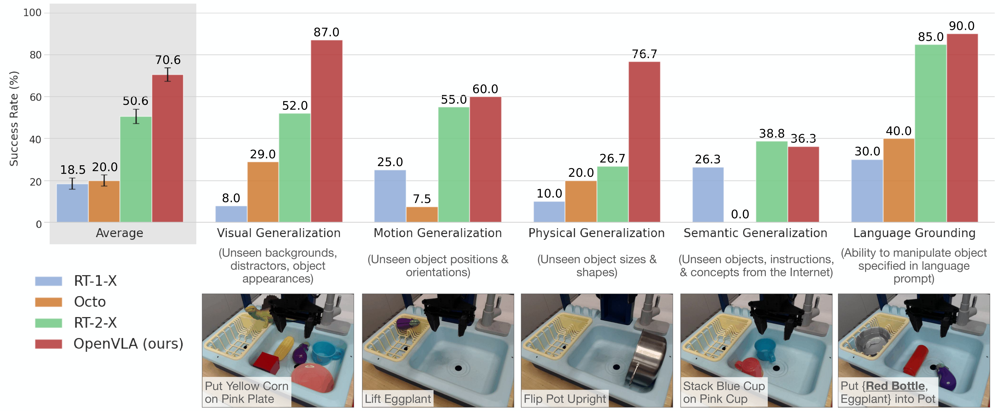

图表说明（Bridge 结果，来源 PDF 第 7 页，Figure 3）。 图中纵轴是成功率百分比，灰色背景突出平均栏；OpenVLA 的四类泛化分别约为视觉 87.0%、运动 60.0%、物理 76.7%、语义 36.3%，语言 grounding 90.0%。下方示例把“Put Yellow Corn on Pink Plate”“Lift Eggplant”“Flip Pot Upright”“Stack Blue Cup on Pink Cup”和双候选目标任务放在同一张图中，清楚显示评测不只测抓取成功，还测目标识别、位姿和关系理解。原图见 Figure 3 PNG，caption、页码和哈希在 manifest 中。
进一步分析。 该结果同时支持两个较窄的结论。第一，互联网语义与空间先验确实能帮助策略在干扰物、未见物体和语言关系变化下选择正确目标；第二，语义泛化的 36.3% 说明把视觉语言知识迁移到动作并不等于保留了全部互联网概念。RT-2-X 在语义类约 38.8% 也略高于 OpenVLA，作者将差距归因于 RT-2-X 更大规模的互联网数据和机器人/互联网联合微调。OpenVLA 的比较优势还受到数据清洗影响：作者过滤 Bridge 示范第一步的全零动作，而 RT-2-X 只能在查询时固定取第二可能动作；这是合理的实用比较，却提醒我们不要把性能差距全部归因于参数规模。
注意。 Bridge 某些试验的 0.5 分奖励的是接近正确目标或完成关键子步骤，所以表中的 7.5/10 代表累计得分，不是七点五次完整任务成功；类别均值也具有相同含义。
Google mobile manipulator 评测是 12 个任务、每项 5 次、总计 60 次 rollout，其中前 5 个 in-distribution、后 7 个 OOD。OpenVLA 达到 ，RT-2-X ，RT-1-X ，Octo 。OpenVLA 在“Move Apple near Green Can”5/5、“Move Blue Chip Bag near Apple”5/5、“Pick Green Cup”5/5 和“Place Banana in Pan”4/5；在“Move Coke Can to Taylor Swift”2/5，说明涉及照片语义和物体关系的 OOD 仍然不稳定。两套评测的分母都很小，标准误差也较大，因此它们更适合作为策略类别的对照，而不是精确估计真实世界成功概率。
29 个任务上“提高 16.5 个百分点”的摘要数字来自两套平台结果合并：Bridge 170 次加 Google 60 次，共 230 次。按两套表格的累计分数计算，OpenVLA 为 120+51=171 分，RT-2-X 为 86+47=133 分，差值为 38/230≈16.52 个百分点。这样重算可以看出摘要数字没有表示“每项任务平均提高 16.5 个百分点”，也没有表示相对提升 16.5%。Bridge 的每任务试验数是 Google 的两倍，合并均值自然给予前者更大权重；任务平均与 rollout 平均回答的是不同问题。
5. 新机器人和新任务的微调：预训练到底贡献在哪里
来源：第 5.2 节与 Figure 5，PDF 第 8–9 页；Table 7 和任务评分，第 29–32 页。
作者在 Franka-Tabletop（5 Hz）和 Franka-DROID（15 Hz）上收集每任务 10–150 个示范，共七个下游任务。单指令任务包括 Put Carrot in Bowl、Pour Corn into Pot、Flip Pot Upright；多指令任务要求从多个物体中按语言选择目标；DROID 的 Wipe Table 则要求抓刷子把三个小物体扫进簸箕。表中每个 Franka-Tabletop 条目使用 10–12 个 in-distribution 和 5–6 个 OOD rollout，Wipe Table 使用 18 个 in-distribution 和 12 个带干扰物 OOD rollout，每次最多得到 2 分。OpenVLA 在 Franka-Tabletop 汇总为 ，DROID 汇总 ；Diffusion Policy 在窄单指令任务如 Pour Corn into Pot 达到 100%（10 次）而在多物体语言任务明显下降，说明 VLA 预训练的价值集中在目标选择与跨场景泛化，而不是所有精细轨迹都优于专用扩散策略。
同一套任务的 scratch 消融直接把 Prismatic VLM 在目标数据上训练，而不使用 OpenX 机器人预训练。OpenVLA（ours）平均 67.2%，scratch 43.4%，Octo 43.4%，Diffusion Policy 48.5%；在 Move <object> onto Plate 的 OOD 6 次中，OpenVLA 58.3%，scratch 33.3%，Diffusion Policy 8.3%。这组分母和任务结构说明预训练提供的是可迁移的语言 grounding 与视觉先验，而非简单记忆某个物体。
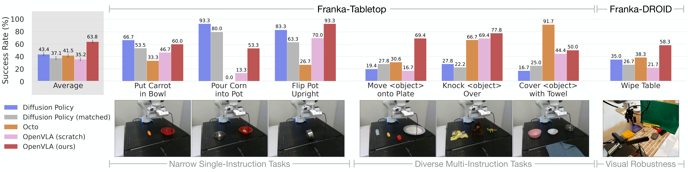

图表说明（适配结果，来源 PDF 第 9 页，Figure 5）。 图中把 Franka-Tabletop 的窄单指令、多指令和 Franka-DROID 分开，红色 OpenVLA 在总体及多数多指令任务上较高，但 Cover <object> with Towel 明显低于 Octo。最右 Wipe Table 的柱高为汇总得分 58.3%，并没有在图中拆开 in-distribution 与 OOD；详细 Table 7 才给出带干扰物的 62.5%（12 次、每次最多两分）。原图见 Figure 5 PNG。
进一步分析。 OpenVLA 的强项并非“所有控制都更平滑”。论文明确写道，Diffusion Policy 在窄且高度灵巧的任务上轨迹更平滑；作者建议后续为 OpenVLA 引入动作块和时间平滑。换言之，预训练模型把学习问题从“找正确物体、理解指令、处理 OOD”推进到“把正确意图执行得足够精细”，但尚未替代专门的连续控制器。
注意。 标准 Diffusion Policy 使用两步图像和本体历史、绝对笛卡尔坐标、动作块；matched 版本才被限制为单图、无本体、无历史、单步相对动作。论文同时保留两类基线，正是为了避免把输入或输出能力不同造成的结果全部归因于预训练。
6. 参数高效微调、量化和推理闭环
来源：第 5.3–5.4 节与 Table 1–2，PDF 第 9–11 页；blocking control 见附录 D.4、Table 11，第 34–35 页。
全参数微调需要 8 张 A100、每个任务 5–15 小时。参数高效对照使用 Put Carrot in Bowl 和 Move <object> onto Plate 的 ID/OOD 版本，每种方法共 33 次 rollout，前者 50 个示范、后者 150 个示范。LoRA 在所有线性层加低秩更新，rank=32 时只训练 97.6M 参数，即 7B 模型的约 1.4%，batch 16 显存 59.7GB，平均成功率 ，与 full FT 的 基本重叠；rank=64 训练 195.2M 参数、60.5GB，成功率 ，没有明显收益。last-layer-only 只有 30.3%，冻结 vision 为 47.0%，sandwich（视觉、token embedding、最后层）62.1%，这进一步支持“目标场景的视觉特征必须更新”。LoRA 可在单张 A100 上 10–15 小时完成，论文称相对 full FT 约八倍计算量下降。
推理侧，bfloat16 模型约 15GB（实验表中的代表任务为 16.8GB），RTX 4090 约 6 Hz。八个 Bridge 任务、80 次 rollout 的结果为 bfloat16 、int8 、int4 ；显存分别 16.8、10.2、7.0GB。作者主要将 int8 的低分归因于推理延迟：A5000 上它约 1.2 Hz，改变了原本 5 Hz non-blocking controller 的系统动力学；在 blocking control 中，强制不同精度等待同样的动作执行时间后，bfloat16、int8、int4 分别为 、、。这一控制实验支持延迟解释，但不应外推为任意任务上量化误差都没有影响。因此部署时必须把模型精度、推理延迟和控制频率作为一个闭环衡量。
作者还提供远程推理服务器以把动作预测放到更强的 GPU。这里的“约 6 Hz”不是机器人控制频率本身，而是完整前向查询频率；单步动作由外部控制器执行。OpenVLA 的工程优势在于 HuggingFace、FSDP、FlashAttention、LoRA 和量化都在开放代码库中，但它无法在当前接口中直接接受多相机、本体状态和观察历史。
训练与推理的数据流也应分开理解。训练一次把图像、指令和示范动作标签送入模型，用因果注意力让各动作位置预测后继标签，只有动作位置进入损失；推理先编码新图像和指令，随后依次生成七个坐标 token，再反量化执行，获取下一张图像并重新查询。普通自回归实现可缓存同一次动作解码的前缀键值以减少重复计算；论文并没有把跨环境时刻复用视觉前缀缓存作为贡献，也没有报告其收益。相机画面随动作变化后，旧前缀不再代表当前观察，所以不能把一般 KV-cache 机制写成无须重新视觉编码的长期记忆。
LoRA 表和量化表还带有容易漏读的实验脚注：这两节使用的是较小训练混合、仅 SigLIP 视觉骨干的模型变体。因此它们建立了低秩适配与量化在 VLA 上可行的证据，不能把表中每个显存、吞吐和成功率直接当作融合 DinoV2-SigLIP 最终模型在任何 GPU 上的保证。论文所谓 consumer hardware 的结论也有条件：单卡显存、batch、序列长度与量化实现会共同决定是否可部署。尤其是量化只压缩权重，并不自动消除逐 token 解码延迟。
7. 消融、模拟验证与数据清洗的含义
来源：附录 C、D 与 E，PDF 第 32–37 页，重点为 Table 9–12。
Bridge 八任务消融中，完整 OpenVLA 平均 ，只在 Bridge 上训练的 OpenVLA-Bridge 为 ，再去掉 DinoV2 的 OpenVLA-Bridge-SigLIP 为 。因此 OpenX 多样性带来约 30 个百分点的绝对提升，双视觉编码器相对 OpenVLA-Bridge 再提供约 5 个百分点。值得注意的是，语言 grounding 在去掉 OpenX 时没有同样幅度的下降，提升主要来自视觉、运动和物理泛化，说明“数据多样性”与“语言能力”并不是同一个可替换因素。
在冻结视觉与微调视觉的早期实验中，两个不同 VLM 上共同可比较条目的均值是 80.0% 对 46.7%；某些冻结配置因接近零成功率和不稳定行为被提前停止。这个实验的环境与主 Bridge 评测不同，作者明确提醒不可直接横向比较，但它足以支持训练策略选择。LIBERO 则提供了模拟域检查：四个 suite 各 10 个任务、每任务 50 个演示，清理 no-op、重放并过滤失败示范，所有方法只用静态第三人称相机，测试每 suite 500 trials、三随机种子。OpenVLA 取得 Spatial 、Object 、Goal 、Long ，平均 ，平均排名 1.5；Diffusion Policy 平均 72.4%，Octo 75.1%。模拟优势较小，作者归因于只用真实数据预训练造成的 sim-to-real/domain gap。
数据清洗是一个不能略过的实现细节。Bridge 第一 transition 的全零动作会让表达能力强的策略学会“停住”；LIBERO 中若不删除近零平移、旋转且夹爪不变的 no-op，同样会出现冻结。因而“模型性能”同时包含架构、预训练数据、清洗和控制时序的贡献，复现时不能只加载权重而省略这些 preprocessing。
LIBERO 的训练清理还会改变“50 个示范”的实际含义。原始四套各有 500 条示范，但作者重放后分别删除 68、46、72 和 121 条无法完成任务的轨迹；Long 保留下来的比例最低。作者将第三人称图像重新渲染到 256 分辨率，并在其硬件上旋转 180 度以纠正倒置。所有方法共享这些处理，因此比较具有内部公平性；与未经相同处理的外部结果比较时，却必须承认训练集已经不同。这里测的是每个 suite 独立监督微调，没有进行原 LIBERO 论文的持续学习或前向、后向迁移实验。
8. 论文边界与可迁移的失败案例
来源：第 6 节 Discussion and Limitations，PDF 第 11 页。
作者在结论中主动列出四个限制。第一，只支持单图像，尚无多相机、proprioception 或 observation history；这使它难以直接处理遮挡、双臂协同和需要短期记忆的场景。第二，推理吞吐对 50 Hz ALOHA 等高频系统不够，动作 chunking、speculative decoding 和其他优化仍是未来工作。第三，主评测许多任务低于 90% 成功率，距离高可靠部署尚远。第四，模型大小、视觉特征、机器人动作与互联网 VLM 联合训练等设计问题受限于计算预算，没有系统扫完。
因此，OpenVLA 不应被描述成“只要看一张图就能完成长时任务”的策略。它的零样本实验主要是短任务和单步动作迭代；长时组合、错误恢复、细致接触依赖数据中是否出现相应行为与外部控制循环。它也不应被描述为使用 proprio 或历史：那是未来方向，而不是 v3 主模型输入。用它做下游迁移时，最可信的假设是：互联网视觉语言先验和 OpenX 多样性降低了目标物体选择与语义 grounding 的样本需求；连续动作精度、时序平滑和高频闭环仍需专用控制、动作块或额外 RL。
9. 与 RLT 的精确比较：动作 token、参考动作与 RL token 的角色
来源：RLT 锁定 2026-04-24 官方版本第 2、3.1、3.2 节及结论；与本章 OpenVLA 第 3、5、6 节对读。
RLT 锚定论文在第 2 节采用的预训练 VLA 是 ：最多四路相机、语言与本体状态构成观察，VLA 输出 的连续参考动作块 ，机器人实际执行其前缀再重新规划。第 3.1 节额外添加一个轻量 encoder-decoder，把 VLA 最后一层的表示 压成一个读取向量。RLT 的固定任务指令实验在这一步省去了语言 embedding，通用公式则可以处理全部输入表示；不能据此声称实验压缩了每类语言变化。令 是原始 token 数、 是学习得到的特殊输入、 是小模块参数，则
decoder 以 为压缩信息，并以已知的前面表示作为条件，自回归重建原有 embedding。其平方误差目标为
表示阻断梯度：重建损失训练压缩模块，不能借此悄悄改写 VLA 的目标表示。初始任务适配阶段可另外用监督损失微调 VLA；之后 VLA 参数和 RL token 参数都被冻结。在线训练只更新小 actor 与 critic。其状态 同时包含压缩表示与本体状态；actor 还接收 VLA 采样的连续参考动作块 ，其中 RL chunk 长度 。actor 的目标为
估计该状态下执行动作块的价值， 控制偏离 VLA 参考的代价。前一项鼓励提高成功回报，后一项使探索围绕可行行为展开。RLT 还对部分训练样本把传给 actor 的参考块输入置零，以防 actor 只复制 VLA；原文描述的是条件输入 dropout，不能自动解释为同时删除正则损失的参考目标。
对照起来，OpenVLA 的 action token 是一个连续控制坐标的分箱索引，RLT 的 RL token 是多个 VLA embedding 的压缩状态，RLT 的 reference action 是从 VLA 行为分布采样的连续动作块。三者分别占据“输出坐标编码”“在线学习状态表示”“策略条件与正则目标”的位置。若以 OpenVLA 为基础探索动作块版本的 RLT，需要构造连续动作块参考接口、验证时间单位，并给小策略补充本体状态等闭环信息；原始七个 token 无法直接代表一个 步参考块。也可以另行研究 的单步版本，但那是新实验，不能借用 RLT 动作块结果作为已经成立的证据。RLT 的压缩读取思想原则上可以研究其他骨干隐藏表示，论文并没有证明它仅能用于某一 VLA 家族。
RLT 第 1 节与结论报告在螺钉安装、扎带、网线和充电器插入四个任务上，用数小时真实练习提高成功率与速度，螺钉关键阶段从 20% 提高到 65%，关键阶段最多约三倍加速。其瓶颈是已有策略在精细接触处的最后误差，仍需要成功/失败标签、可选人类干预和关键阶段切换。OpenVLA 的贡献则处于更上游：开放语义控制器、跨具身监督训练、少量演示迁移和可负担部署。对于用户研究，合理假设是让开放 VLA 提供泛化起点，再用冻结压缩表示和 reference-conditioned actor-critic 改善局部精度；实验必须把语义识别能力与接触阶段的 RL 收益分开测量。
10. 图表与来源审计
本章使用的三张图均来自锁定的 v3 PDF/TeX 原始资产，在当前任务内重新渲染为 PNG，未用 ImageGen 或历史图片替代；每张图均已用图像查看器检查文字、柱状数值、箭头方向和示例任务。Figure 2 是方法图，来源 PDF 第 4 页；Figure 3 是 BridgeData V2 结果，来源第 7 页；Figure 5 是 Franka 适配结果，来源第 9 页。原始 PDF、TeX figure asset、完整 caption、页面编号、输出 PNG 尺寸、PNG SHA-256 与视觉检查状态均记录在 2406.09246 图表 manifest（此附件保存在完整本地归档中）。本章正文只引用当前任务锁定的 sources/2406.09246/v3，未读取或复用旧 related-v2/v3/restored-v4 prose。
π0（arXiv:2410.24164v4）精读章节
1. 从“看懂任务”到连续执行：π0 要补上的能力
来源：Introduction、Related Work 与 Overview，PDF 第 1–4 页。
π0 关注的困难比普通抓取更接近“有许多不同形态的机器人，要在真实场景里持续做灵巧工作”：衣服从任意揉皱状态开始，纸盒要双臂配合折起，餐桌有互相遮挡的餐具和垃圾，移动底盘还要与手臂动作协调。视觉语言预训练可以帮助识别物体和理解指令，但若动作输出只能逐坐标、逐控制时刻自回归生成，推理延迟和离散精度会妨碍高频动作。论文把需要解决的条件分成三部分：足够多样且大规模的数据、能够表达高频连续动作的架构、以及区分广泛预训练与高质量后训练的配方。三者共同构成结果，不能把全部收益归给某个流匹配公式。
作者没有宣称仅靠网络图像和文本就能掌握物理操作。PaliGemma 提供语义和视觉初始化，机器人示范负责建立观察与动作之间的联系；跨具身数据扩大物体、场景、运动和错误恢复的覆盖。再用高质量任务示范做后训练，使模型形成更一致的执行策略。引言给出了一个有用的因果解释：只用非常流畅、很少出错的数据，模型不一定见过失败后如何恢复；只用广泛但不够精炼的数据，又难以高效稳定完成任务。这个解释是作者提出的机制假说，后面的消融检验了预训练加后训练的总体收益，但没有把“恢复行为”单独控制成一个完全独立的变量。
本章锁定原始 π0 论文的 v4。它的主要接口是多相机图像、语言与连续关节状态，加上流匹配动作专家；状态通过线性投影进入专家，动作和流时间通过 MLP 编码。后来的 π0.5、π0.6 属于不同论文或模型版本，本章不会把它们的状态编码、数据配方、损失或开源配置回填进原始 π0。RLT 官方锚定论文明确以 π0.6 为基础，后文只比较两者的结构分工，不把 RLT 的基础模型冒称为这里的 π0。
2. 观察、动作块与网络中各条轴
来源：第 IV 节 The π0 Model，PDF 第 4–5 页；附录 B，PDF 第 15–16 页。
π0 的目标是学习条件动作分布 。观察定义为 ： 是第 路当前 RGB 相机图像，机器人使用两路或三路； 是语言 token 序列； 是关节状态向量。时间下标 表示真实机器人时刻，不是生成过程的噪声程度。一个动作块是 ，本文实验固定 。因此网络同时考虑未来五十个动作，而不是把一个动作的五十个坐标当作未来时序。
用批量轴 、语言长度 、每相机 patch 数 、动作宽度 和隐藏宽度 描述数据流：图像编码得到约 的序列，语言给出 ；连续状态经投影变成一个专家 token，带噪动作块则是 ，投影后得到 。动作序列轴与动作坐标轴是两回事：每个 action token 对应一个未来时刻的完整动作向量，里面可有单臂、双臂、夹爪和底盘的多个坐标。论文把最大状态和动作宽度统一到 18，不足的坐标补零；少于三相机时屏蔽空槽位。这一表示兼容不同具身，却没有证明补零就解决了所有运动学差异。
主模型从约 3B 的 PaliGemma 初始化，再增加约 300M、随机初始化的 action expert，总计约 3.3B。专家不是另一个完全独立、只在末端接收特征的控制头：它与大 VLM 构成一套有两组权重的 transformer，图像与语言经过大权重，状态与动作经过小权重，两者在 self-attention 处交换信息。附录给出 VLM 宽度 2048、深度 18，动作专家宽度 1024、MLP 宽度 4096；两个专家的内部宽度可以不同，因为信息通过注意力投影接口交互。重复求解动作时只运行较小专家，是控制推理成本的关键。
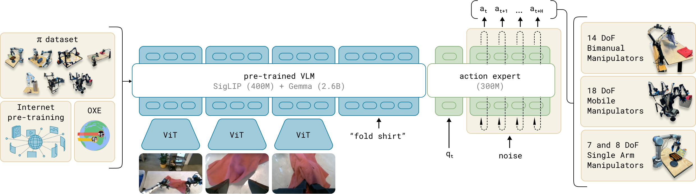

图表说明（方法图，来源 PDF 第 4 页，Figure 3）。 左侧包含自采 π dataset、互联网初始化与 OXE；中间的 SigLIP/Gemma 骨干处理三路图像和“fold shirt”，绿色状态与带噪动作进入 action expert，右侧展示单臂、双臂和移动操控平台。图中省略了流时间编码与完整 mask，需结合附录 B 读取。完整原文 caption、PDF SHA-256、原始资产 SHA-256 与 PNG SHA-256 见 图表 manifest（此附件保存在完整本地归档中）。
进一步分析。 图的核心是把语义计算和重复连续动作计算分配给不同权重，同时保留注意力交互。输入噪声不是机器人探索时直接执行的随机动作；它是动作生成内部的初始变量，经多步向量场积分后才输出给机器人。右侧“18 DoF”标记是统一表示的最大宽度示意，应以各机器人正文定义判断有效坐标。
注意。 本文使用“token”指序列上的槽位，既包括离散语言，也包括连续图像 patch、连续状态与动作；它没有把每个连续动作量化成 OpenVLA 的 256 类 token。方法图顶部写到 的示意边界，正式定义则为 至 ，本章始终按正文的五十步定义。
3. 流匹配目标：网络究竟在预测什么
来源：第 IV 节，PDF 第 4–5 页；附录 B 的时间采样分布，PDF 第 15–16 页。
流匹配把动作生成看作一条从高斯噪声到示范动作的连续路径。给定示范 、独立噪声 与流时间 ，论文给出的具体训练采样操作是
是纯噪声， 是数据动作；向量场目标 是这条线性路径对 的导数。网络输出 ，逐个未来动作位置预测向量场，损失为
是可训练参数；期望同时覆盖示范动作、噪声和路径位置；平方范数覆盖动作块中的时间轴和坐标轴。网络不会直接从一个带噪样本“看见”真实动作，而是通过许多观察—示范配对学出条件向量场。同一个场景若有多种可行抓法，独立噪声可以引出不同轨迹模式，因而比简单回归平均动作更适合多模态行为。但多模态只是表示能力，真实学习效果仍取决于数据是否包含这些可行模式。
这里有一个必须保留的原文记号问题。主文同时把路径写为 ，而紧接着给出的实际采样式使用 。若正态分布第二参数按通常定义表示协方差，后者诱导的协方差应为 ，与前式不完全一致。本章的推导和例子依据明确的采样操作与目标 ，同时保留这个文字与记号之间的差异，避免在复现时无声选择另一条噪声路径。
取一个只有两步、单坐标的教学动作块 ，噪声 ，流时间 。带噪输入为 ，监督向量场为 。若网络预测 ，这个样本的平方误差为 。这里的两个位置对应未来两个时间步，不是同一时刻的两个 token 类别；扩展到真实训练就是 上同样的计算，再按具体实现的 mask/归约处理有效坐标。
流时间也进入专家 embedding。附录定义每个带噪动作的输入为 ： 投影动作， 是正弦时间编码，拼接后是 ，再由 和 变成专家宽度。没有这条时间输入，网络无法区分同一个向量是在靠近噪声端还是数据端，向量场学习将缺少路径位置条件。
时间采样没有沿用最简单的均匀分布。附录 B 与 Figure 14 使用偏向低 、即更高噪声的移位 beta 分布，原文记为 ，截断点 。作者的理由是，机器人观察对动作约束很强，学会从高噪声条件恢复合理动作并不简单；接近数据端的过小残余噪声反而不是主要难点。这个动机与高分辨率图像生成强调中间时间的经验不同，属于任务相关的配方选择。其作用还没有以单独受控的时间分布消融证明，因此不能从直觉直接断言该分布对所有机器人任务最优。
4. 训练—缓存—推理：五十个动作如何变成高频控制
来源：第 IV 节，PDF 第 5 页；附录 B、D 与 Table I，PDF 第 15–16 页。
π0 采用三个注意力块：第一块是全部图像和语言，第二块只有机器人状态，第三块是全部带噪动作。每块内部双向注意力，后面的块能读取前面的块，前面的块不能读取后面的块。因此五十个动作位置可以共同决定整段轨迹，图像语言前缀不会被每次变化的噪声动作反向污染。本体状态单独成块也有计算意义：它在一次动作块生成的十次积分中保持不变，屏蔽其读取动作后就能缓存对应键值。这个 mask 同时维护 VLM 前缀的预训练分布与动作生成的缓存条件。
推理从 开始，使用十次 Euler 更新：
在上节教学例子中，若当前位置是 且网络输出 ，下一步就是 。这个计算只是一次 的内部积分，不代表机器人已经移动了 0.1 秒；流时间 与真实控制时间 是不同的轴。完整采样需要观察前向一次、噪声动作后缀前向十次，缓存减少的是十次求解中重复处理同一个观察的成本。
附录 Table I 在 RTX 4090、三相机条件下报告：图像编码 14ms，观察 token 前向 32ms，十次 action forward 合计 27ms，总机载推理 73ms；无线外部推理另加约 13ms，合计 86ms。不能将其写成每个动作都要花 73ms，因为网络一次生成了五十步；同样不能把五十步都视作必须开环执行。UR5e 和 Franka 以 20Hz 控制，每次执行 16 个动作、0.8 秒后重新推理；其他 50Hz 机器人执行 25 个动作、0.5 秒后重新推理。这样在动作块内部提供高频平滑动作，又在块边界接入新观察。
论文尝试 temporal ensembling 后发现性能下降，于是采用开环执行前缀且不聚合多个历史动作块。故这里的闭环不是每 20ms 都重新运行大 VLM，而是较高频的动作序列执行与较低频的视觉重规划相结合。遇到接触变化极快的任务时，0.5 或 0.8 秒的开环间隔仍可能造成误差积累；这也是 RLT 等后续局部改进方法关心动作块长度和关键阶段的原因。缓存仅在同一次观察下的积分步骤中成立，新观察到来仍须重算观察前缀。
5. 数据规模、跨具身对齐与两阶段配方
来源：第 V 节与 Figure 4–5，PDF 第 5–6 页。
π0 使用约一万小时自采灵巧操作数据，包含七类机器人配置、68 个任务，另混入 OXE、Bridge V2 与 DROID 等开放机器人数据。正文按 timestep 计量，自采数据共 903M 步，其中单臂 106M、双臂 797M；训练混合中开放数据占 9.1%。这些数不能与 OpenVLA 的 970k episodes 直接比大小：动作频率不同、每条轨迹长度不同，且采样混合权重又改变了实际更新比例。正文 Overview 一处把来源笼统写为“entire OXE”，但数据段与 Figure 4 明确说采用 OXE 子集（OXE Magic Soup），因此本章以详细数据定义为准。
数据规模不均衡会让衣物等高占比任务统治梯度。作者将每个 task–robot 组合的采样权重设为 ，其中 是该组合样本数。举例说，一个组合有另一个的 100 倍样本，按原始比例会出现 100:1；幂次加权后约为 。这不是把稀少数据变多，而是在重复采样时压低大型组合的支配程度。它有助于平衡，却仍是经验选择；作者在限制中承认尚未系统搞清哪些数据更有价值、该如何分配权重。
具身覆盖包括 7 维 UR5e、14 维双臂 UR5e、8 维 Franka、14 维双臂 Trossen/ARX/AgileX，以及添加底盘坐标的移动系统；移动 Fibocom 文中为 14 维配置、17 维动作，最大统一宽度 18 还为躯干等坐标留出空间。不同平台可以共享语义与运动规律，但同一坐标索引在不同具身上未必有完全相同的物理含义。正文没有提供一个显式几何等变性证明，因此跨具身成功应被看作数据驱动的实证结果，不应推导为任意新机器人都能零样本工作。
预训练语言同时包含整任务名称和约两秒子轨迹的细粒度 segment annotation；后者把“收拾餐桌”拆到“拿起餐巾”“把餐巾扔进垃圾桶”等动作目标。后训练用更小、更整洁、策略一致的数据集，简单任务约五小时，复杂任务达到一百小时或更多。这个“post-training”在本论文中是高质量示范微调，没有引入在线 critic、成功奖励或 RLT 的 actor-critic；把它自动理解为强化学习会混淆论文实际证据。
6. 基础模型实验：直接提示是否已经可用
来源：第 VI-A 节、Figure 6–7，PDF 第 7–8 页；评分细节见附录 E，第 17 页。
基础模型评测把同一个预训练模型直接提示到五项任务：平铺 T 恤折叠、简单餐桌分类、困难餐桌分类、购物装袋和取吐司。每项每种方法十个 episode，指标是归一化任务进度。T 恤按成功/失败计分，五件衣服各测两次；简单餐桌满分七个物体，困难餐桌十二个，购物装袋七件商品，吐司满分四分（取出和放盘各得分）。因此图上的 0.9 可能表示平均完成 90% 的物体或步骤，只有二元 T 恤任务中才能直接读作九成 episode 成功。
比较对象包括在同一混合上训练的 OpenVLA、Octo、只在 UR5e 数据上训练的 OpenVLA，以及无 VLM 初始化的 π0-small。完整版 π0 训练 700k 更新；作者另给 160k 的 parity 版本，以便与 OpenVLA 的 160k、Octo 的 320k 更新对照。所谓 parity 是训练更新量的控制，原文没有建立严格相同硬件时间或总 FLOPs 的预算。π0-small 为 470M，采用较小图像编码器、DistilBERT、不同观察/动作注意力连接和 DiT 专家；它并非只移除一项初始化的完全等容量对照，正文也承认容量混杂。
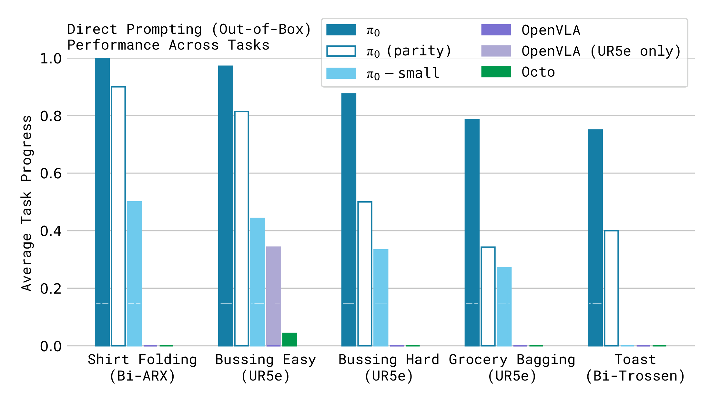

图表说明（直接提示结果，来源 PDF 第 8 页，Figure 7）。 五组任务的纵轴是 Average Task Progress；完整版 π0 在 T 恤上为 1.0，简单餐桌约 0.97、困难餐桌约 0.88、装袋约 0.79、吐司约 0.75；parity 版对应约 0.90、0.81、0.50、0.34、0.40。除 1.0 等明确柱高外，其余为按原图刻度读取的近似值，原文未附逐项数字表。PNG 和完整 caption 见 manifest。
进一步分析。 图中 π0-small 仍明显高于 OpenVLA 和 Octo，说明动作块生成与表达容量对于高频灵巧任务已很重要；完整版再高于 small，说明大型预训练 VLM 及容量可能继续提供收益。由于模型容量、初始化与注意力结构同时变化，证据支持的是整套配置优于基线，尚不足以精确分解每一项贡献。
注意。 OpenVLA 在这里是作者在 π0 数据上重新训练的比较模型，不能把其接近零的高频灵巧任务分数套到 OpenVLA 原论文的 Bridge/Google 短任务。两篇的任务、输入、动作接口、数据和评分都不同；图中的低分主要说明单步离散自回归设计与这些动作块任务不匹配。
7. 语言条件与新技能：强语义接口是否真的改善行为
来源：第 VI-B、VI-C 节、Figure 8–11，PDF 第 8–10 页；附录 E，第 17 页。
语言实验比较五类条件：π0-flat 与 small-flat 只接收整体任务描述，π0-human 与 small-human 接收专家的中间语言指令，π0-HL 则由高层 VLM 自动提供中间指令。三个任务分别是收拾餐桌、摆餐桌和购物装袋，每项十次。附录进一步限定一条收拾餐桌 episode 包含十二个对象和约三十条指令；摆桌为七个对象和约二十条；装袋七个对象、约十四条。语言遵循正确率与总体进度是两个指标：被告知下一步做什么并不保证能正确执行，但若模型不能区分物体和位置，增加指令也不会带来收益。
结果显示 π0 从人类中间指令获得显著收益，高层 VLM 指令也带来较小幅度收益，而 small 的语言遵循较弱。这里的 human 条件把规划信息交给人类，因此不能称为全程自主；HL 才是高层自主策略与低层 π0 的组合。论文既展示语义能力，又暴露了任务分解仍可能需要外部模块。这个边界与 RLT 的人工阶段切换相呼应：某个低层控制器表现强，并不等价于完整长任务无需监督和阶段判断。
新技能实验按与预训练的相似程度选择五项任务：叠碗和折毛巾与已有操控相近；保鲜盒入微波炉引入未见设备；更换纸巾卷和 Franka 抽屉装物引入新的物体或动作组合。每项用一、五、十小时级数据做微调，并与无机器人预训练的 π0-scratch、从目标任务训练的 ACT/DP，以及公开 OXE checkpoint 微调的 OpenVLA/Octo 比较。这里的 π0-scratch 仍是从 VLM 初始化的 π0 架构去掉机器人预训练，并不等价于所有权重随机初始化；small 则是前面另一套非 VLM 比较模型。若把两者混写成一个“从零”基线，会错误归因预训练收益。
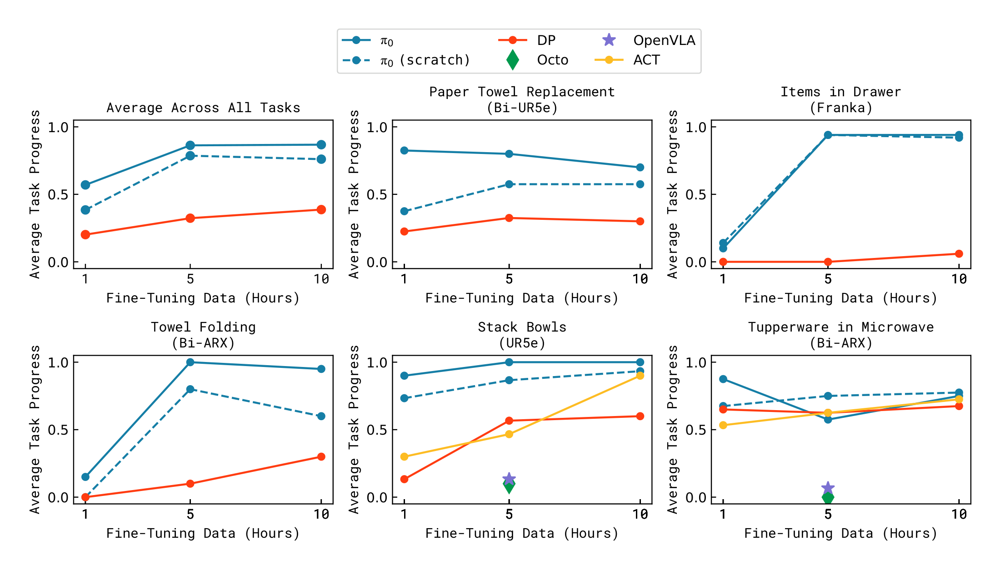

图表说明（数据量扫描，来源 PDF 第 10 页，Figure 11）。 每个任务与数据量平均十次试验，纵轴是归一化任务进度。按图读取，叠碗 π0 在一小时约 0.90、五和十小时 1.0；毛巾折叠在五小时 1.0、十小时约 0.95；保鲜盒任务的一小时约 0.88，五小时反而约 0.58，十小时约 0.75。这些近似值说明曲线有真实非单调性，不应把总体叙述改成“数据越多必然越好”。
进一步分析。 与预训练相似的动作最容易迁移，而更换纸巾卷在一小时也已有较好进度，说明预训练有机会复用抓取、放置和双臂配合。Franka 抽屉在五小时后 pretrained 与 scratch 接近，表示目标数据足够时架构本身也能学会部分新技能。DP/ACT 的表现随任务而异，论文结论应保留这种任务依赖。
注意。 OpenVLA 与 Octo 由于真实机器人评测成本只在部分数据量运行，图中星号或菱形不是完整学习曲线。叠碗满分三分含整齐度，毛巾满分三分含两次折叠与整齐度，微波炉四分、纸巾更换四分、抽屉五分；相同纵轴值并不代表相同物理难度或整任务成功概率。
8. 长时复杂任务：后训练的收益与未被证明的部分
来源：第 VI-D 节、Figure 12–13，PDF 第 10–11 页；附录 E，第 17 页。
复杂任务将评测延长到五至二十分钟，包含固定与移动衣物折叠、烘干机取衣、真实餐桌整理、折纸盒、外卖食物打包和鸡蛋装盒。部分任务有预训练数据，部分没有；例如揉皱衣物、移动衣物和烘干机操作在预训练中出现，而复杂餐桌整理、折纸盒、食物打包和鸡蛋装盒在实验文字中列为新的后训练任务。需要谨慎的是，Figure 13 上排标题将餐桌整理也归到“Tasks Present in Pre-Training”，与正文“not present in pre-training”的描述存在粒度或标签不一致；本章保留这个矛盾，不把它自动解释为已经确定的未见任务。
每项报告十次的平均归一化得分。固定折衣满分四分：从筐中取出、铺平、折叠、堆放；包含三件 M/L/XL 上衣和两条不同尺码短裤，每件两次。移动折衣沿用同样分解；烘干机满分五分，覆盖接近、放筐、开门、取出所有衣物和关门。纸盒满分五分，鸡蛋满分七分（六个蛋加关盒），食物打包满分五分。因而图中平均 0.8 不足以说明八成完整长任务成功；它可以由许多完成大部分子步骤但没有收尾的 episode 产生。
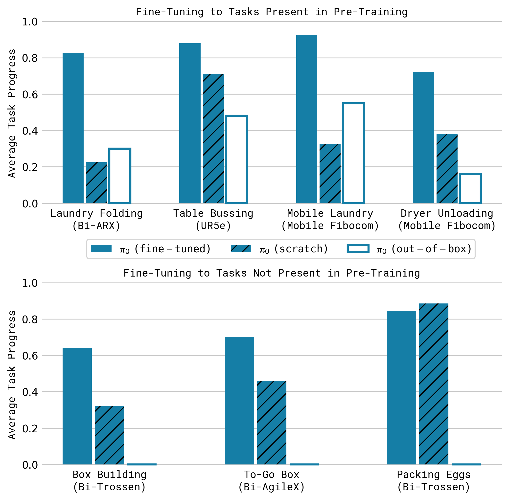

图表说明（复杂后训练结果，来源 PDF 第 11 页，Figure 13）。 图比较 fine-tuned、scratch 和 out-of-box 三种条件，十次平均，所有完整配方柱高均超过 0.5。按刻度近似读取，固定折衣约 0.83，移动折衣约 0.93，纸盒约 0.64，食物打包约 0.70；鸡蛋约 0.84，而 scratch 约 0.89，显示完整配方没有逐项严格优于消融。原图保留上下两组任务分类及其标题，便于检查正文与图标注的边界。
进一步分析。 比较最有说服力的部分是从 out-of-box 到高质量后训练的明显提升，以及多数复杂任务上 robot-pretrained 模型优于只用目标数据。固定折衣的 out-of-box 约 0.30、scratch 约 0.23，均低于完整配方；这符合“广泛知识与任务执行策略需要结合”的解释。鸡蛋任务则说明更大规模预训练未必在每项任务都优于充分目标训练，不能把“通常较好”改写为“所有任务最优”。
注意。 这些复杂任务没有与所有外部模型做全面定量比较，第 VI-D 节解释为作者未能用其他方法解决这些任务，因此主要使用自身消融对照。评测时间成本则是上一组新技能实验只在部分数据量运行 OpenVLA/Octo 的理由，不应混为同一证据。因此论文提供强演示和有用的内部对照，但不能据此对所有机器人策略在同一预算下作完全排序。部分任务依赖高层语言策略，长时自主性的边界也需要保留。
9. 局限、反例与实验能够解释的范围
来源：Discussion, Limitations, and Future Work，PDF 第 11–12 页；第 VI 节对照说明与附录。
作者首先承认数据组成尚未被系统理解：现有资源尽可能组合起来，哪类数据值得追加、什么权重最好、达到高可靠性需要多少数据仍是开放问题。七类机器人和六十八任务提供了很广的示范，但“任务”定义本身很宽，不能与用动词—名词组合计数的其他工作直接对比；一万小时也不能自动转成均匀覆盖所有关键接触状态。扩展到驾驶、导航或腿式运动的正迁移更没有被本论文测量。
实验设计中还有几项明确的解释限制。small 对照同时改变参数量、视觉编码器、注意力和初始化，因此无法单独估计 VLM 语义的净收益；parity 只控制更新次数，没有严格控制 FLOPs；大部分任务十次评测，曲线并不总是单调，未给出每个图的完整逐次分数和统计显著性。归一化进度便于衡量长任务的部分完成，却会掩盖最后关门、堆叠整齐、对准细小孔位等关键一步的失败；部署需要另报整任务成功率、失败阶段、完成时间与重试次数。
从机制看，动作块可以提高平滑性和吞吐，也带来开环区间。一个能以 50Hz 执行的控制器并不意味着视觉反馈也以 50Hz 更新；外部扰动、接触滑移和动作时长变化仍会影响结果。模型生成的多个模式也没有显式价值函数保证哪个更快或更稳。论文的监督后训练让模型更像高质量示范，不能直接优化示范之外的新效率策略。这为 RLT 的局部在线改进提供了合理切入口，但不是说 RLT 已经消除了 π0 所有泛化与规划限制。
现有比较还留下两组不能分离的因素。离散单步、连续单步与连续动作块对应的系统，在训练步数、动作频率、模型宽度和任务设置上并未全部对齐，因此语义选择、轨迹误差和真实时间延迟的差别不能单独归因于动作表示。开环执行前缀的影响也与动作生成器、观察编码器和重新编码成本交织：较短前缀意味着更频繁地接收反馈，但论文没有在固定其余模块的条件下，逐项隔离接触阶段的成功率、速度与反馈间隔。读者可以据此理解架构的取舍，却不能把这些尚未隔离的因素写成已经证明的因果关系。
10. 与 RLT 的关系：连续动作先验与在线改进接口
来源：RLT 锁定官方 2026-04-24 版本第 2–3 节与系统部分；本章对照原始 π0 第 IV 节、附录 D。
π0 为 RLT 类方法提供了一个容易理解的上游概念：从强视觉语言表示与连续生成器得到可执行动作块。但 RLT 官方实际使用 π0.6，而非本章原始 π0；原始 π0 的相机数量、状态编码、数据配方和权重不能自动沿用到 RLT。二者可比的是分工：大型 VLA 负责感知、语言与多模态行为，动作专家提供参考轨迹；RLT 在其后构建适合快速更新的小型学习接口。
RLT 首先读取 VLA 的最后层 token embedding ，加入学习的 <rl> 位置，经 encoder 得到 。decoder 被训练为从这个瓶颈和已知前缀重建冻结的 embedding，故 RL token 压缩的是观察相关表示。固定任务指令实验在这一步省略了语言 embedding，不代表已经验证任意指令变化下的压缩泛化。它没有取代 π0 中五十个带噪动作 token，也不是一个额外预测的动作坐标。任务适配后，VLA 与 token 模块冻结，在线 actor/critic 使用 ，actor 同时接收参考动作 ，其中 。其目标
把提高回报与保留参考行为结合起来。critic 则使用动作块的 步回报和 的 bootstrap；这是实际机器人时间上的价值学习，与 π0 的流时间 无关。参考动作仍从 VLA 采样，保留原有多模态模式；小高斯 actor 在该模式附近修正，作者以此避免让单峰高斯从一个平均动作重新覆盖多种模式。RLT 的参考 dropout 置零的是部分 actor 条件输入，以防只复制 VLA，不能自动认为正则项目标也被删除；其平方约束也不是 π0 流匹配训练损失。
一个小例子可以说明“参考”与“冻结”并不矛盾。假设 VLA 在某状态建议两步归一化控制 ，actor 候选 与其距离平方是 。若 ，约束代价为 0.005；当 critic 估计新动作价值增益大于该量时，损失允许 actor 偏离。这个数仅是教学示例，未声称是 RLT 的实际超参数。冻结的是表示与行为先验，改变的是小 actor 的局部决策，这与重新对整个 3.3B π0 做在线反向传播具有不同的算力与稳定性代价。
RLT 在精细任务关键阶段用数小时练习提高成功率和速度，原文例子包括螺钉 20% 到 65%、关键阶段最多三倍加速；仍需成功/失败标注、可选人工纠正和阶段切换。π0 的监督后训练则主要依赖高质量演示，把广泛行为变成较流畅的任务策略。对研究而言，前者回答如何在强先验周围快速发现更好的动作，后者回答如何构建足够有用的先验；只有把基础任务、动作块长度、控制频率、奖励和人工参与都固定，才能判断二者结合的真实收益。
本章四张图全部来自锁定 v4 的原始 TeX 资产，在当前任务重新导出并用图像查看器核对；没有采用历史自制图。Figure 3 位于 PDF 第 4 页，Figure 7 第 8 页，Figure 11 第 10 页，Figure 13 第 11 页。完整 caption、源 PDF/资产/PNG 哈希、尺寸与视觉检查记录由 2410.24164 图表 manifest（此附件保存在完整本地归档中） 保存，正文与图表的局限均保持可见。
Policy Decorator：用受控动作残差保住已有行为，再逐步学会在线修正
1. 为什么已经学会大部分动作的策略，仍会在最后几毫米失败
《Policy Decorator: Model-Agnostic Online Refinement for Large Policy Model》研究的是怎样在线改进已有模仿策略，本章锁定 arXiv:2412.13630v1。作者 Xiu Yuan、Tongzhou Mu、Stone Tao、Yunhao Fang、Mengke Zhang、Hao Su 来自 UC San Diego。论文中的“大模型”主要指 Behavior Transformer 和 Diffusion Policy，相应实验模型约一百万与四百万参数；不能将题名自动理解为已经评测了数十亿参数 VLA。它的具体任务是已有模型能够完成一部分操作，但受限于示范覆盖与执行误差，还未达到可靠成功。来源：首页、问题设定与附录实现（此附件保存在完整本地归档中）。
最有代表性的困难是误差累积。机器人开始时只偏了一点，后续图像和接触状态便逐渐偏离示范；模仿策略在这些陌生状态下又犯新错，最终失去原本可完成的轨迹。侧向插销只有约三毫米间隙，末端很小的横向误差就可能把销顶在孔边。此时失败不代表策略完全不会抓取、搬运或接近目标，有时只需在少数关键位置做小修正。作者据此把“保留大部分能力”和“在线学习局部改进”分开。
直接微调基础模型并不总是容易。Behavior Transformer 先分类动作簇，再回归偏移；离散簇选择并不能像普通连续高斯策略那样直接用动作梯度更新。Diffusion Policy 经多次去噪生成动作序列，原有去噪训练依赖示范标签，在线奖励并不直接提供这些标签。大型策略的反向传播还会放大训练代价。论文没有证明这两类模型不能用于强化学习，而是指出直接套用常见 actor-critic 的接口与计算路径存在困难；其附录同时讨论了已经能够微调扩散策略的其他方法。
方法的出发点是把基础策略作为黑盒保留，在动作输出旁加入一个较小、可微分的修正网络。这样在线梯度只需优化容易训练的模块，复杂生成结构仍可发挥原有作用。但随机小网络也可能破坏原有动作，所以论文的主要技术内容还包括修正幅度约束和渐进探索，不能仅用“残差强化学习”四个字替代。
2. 输入、输出和冻结边界：装饰器包住的是整个基础策略
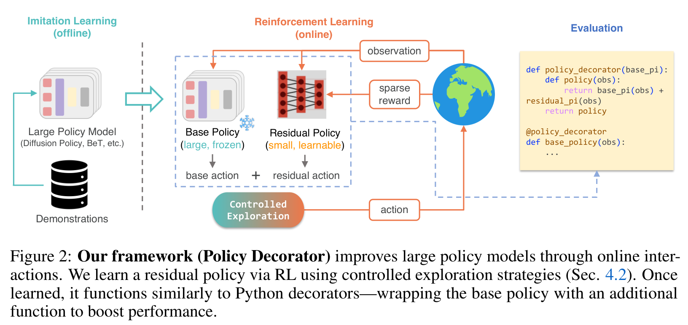

原文图注：Our framework (Policy Decorator) improves large policy models through online interactions. We learn a residual policy via RL using controlled exploration strategies (Sec. 4.2). Once learned, it functions similarly to Python decorators—wrapping the base policy with an additional function to boost performance.
图表说明：原图2位于 PDF 第2页，左侧示范训练出基础模型；中间冻结基础模型，环境观测同时进入基础策略和可学习残差，二者动作相加后执行；稀疏成功奖励用于训练残差模块。右侧 Python 装饰器只是接口比喻，不表示训练过程实际执行了图中的装饰器代码。
进一步分析：黑盒适用性来自动作接口，而非基础模型与残差共享结构。只要两者输出位于兼容动作坐标中，残差就不需要知道动作来自 Transformer 分类、扩散生成还是其他路径。与 RLT 明确把 VLA 参考块送入 actor 不同，本文最终偏好的残差 actor 输入只有观测。
注意：图中冻结的是基础策略参数，基础模型推理仍需每次按其控制规则运行。训练小网络减少的是基础模型反向计算，不能消除基础模型的推理时间，也不能把原始示范采集成本归零。
设状态或观测为 ，基础策略为 ，残差策略为 ，实际动作是各自产生的动作之和。基础策略既可确定也可随机；若二者随机，先分别采样，再逐坐标相加，而不是把两个分布的概率密度相加。基础策略保持冻结，残差用小型 MLP 或 CNN 参数化高斯策略，具体取决于状态还是视觉输入。critic 另外学习，以评价真实执行动作的未来回报。来源：第4节与附录设计选择。
真实输入随任务而异。ManiSkill 的低维状态含关节角、速度、本体信息和任务目标；视觉版本含 RGBD 相机。StackCube 为55维状态、4维动作，PegInsertionSide 为50维状态、7维动作；PushChair 为131维状态、20维动作，涉及移动底盘与双臂。Adroit 任务动作维数为24到30，主要控制手部和腕臂关节。因此本文不是统一七维末端控制系统，也不以自然语言指令作为所有实验的必备输入。动作相加必须在这些各自任务的控制编码和缩放约定下解释。
基础模型的公开配置进一步说明适用规模：BeT使用四层、四个注意力头、128维嵌入，历史窗口为10或20，动作簇数为4或8；扩散策略采用U-Net，去噪嵌入64维，下采样通道为256、512、1024。保留这些网络意味着历史观测与多模态生成仍由基础路径处理，残差并非重新用一个小MLP学习所有行为。任务时域也不同：ManiSkill最长200步，Adroit的门300步、锤子和搬运400步，最终稀疏成功需要跨越的信用分配距离并不相等。
3. 有界残差究竟限制了什么，为什么它不等于安全保证
对残差 actor 的高斯采样结果记为 ，本文用 SAC 的双曲正切压缩与一个外部尺度 得到
这里 与动作维度相同，tanh 对每个坐标分别运算， 是允许修正的幅度， 是本次基础动作， 是送入环境的组合动作。因而每个残差坐标位于 ，但总动作不一定处于同一小区间。这个式子是把正文的文字定义合写成明确运算，不是论文另编号的损失。其作用是让探索围绕已有动作发生，减少刚开始就把抓取或接近目标的行为彻底打乱。
一个贯穿方法的教学实例是 StackCube 的归一化二维位置子空间。假设基础动作是 ，残差高斯样本是 ，取附录该任务的 ，则残差约为 ，组合动作为 。这些值只用于演示归一化坐标计算，不能解释成真实米数或夹爪力。即使网络输出非常大，残差单坐标也接近但不超过0.03，因而不会像无界随机动作一样任意扩大修正。
约束仍有两层限制。首先，单步偏移小并不意味着长期轨迹一定靠近基础轨迹，因为动力学会累积误差；接触系统还可能不连续地放大小扰动。其次，这个动作盒没有编码障碍物、最大力或关节碰撞约束，不是安全控制屏障。它只能减少无意义破坏的机会，不能证明任何 都安全。太小可能永远跨不过必要的姿态误差，太大则可能丢失已有成功行为，这也是正文必须另做幅度消融的原因。
论文给出的幅度跨度很大：BeT 的 StackCube 为0.03，PushChair 为0.2；视觉 Adroit Pen 达0.8。它们对应不同归一化与任务动作语义，没有可直接比较的物理单位。作者建议从示范动作量级附近选择，再调整，不能据此设一个跨任务通用的“百分之几残差”。黑盒只免除基础网络内部访问，仍要求理解输出控制坐标。
4. 渐进探索控制的是“是否使用残差”，不是让残差幅度线性变大
正文唯一编号公式给出训练行为策略：
从0到1随环境步数线性增加， 是达到1所需的调度长度。用计数 写，就是 。 是在本次选择残差分支时的均匀随机数；它不是高斯动作噪声，也不是奖励。训练早期基础策略更常独立执行，为回放提供成功经历；随着残差改善，系统逐步增加组合动作的使用。幅度 和概率 是两个独立控制量。来源：PDF 第4—5页，式(1)。
延续上例，若 、目前250000步，则 。抽到 时执行 ，抽到0.70时仍执行 。不能把每次动作都写成基础动作加四分之一残差；后一种方式连续缩小每次修正，与本文随机选择是否修正不同。若把固定状态下残差看成已知，平均动作可能有相近形式，但实际状态转移、成功机会和经验分布并不会因此相同。
这个机制依赖基础策略有合理能力。问题设定明确排除完全无用的基础模型，要求它至少能朝任务完成方向推进；在稀疏奖励中，非零成功机会尤其关键。若基础策略从不接近成功，早期多执行它不会自动创造正反馈，调度也无从保证学习启动。低性能 checkpoint 实验说明有改进空间，不等于零能力策略也会被任意小残差救活。
附录设置反映出启动难度差异：BeT 的 PegInsertionSide 使用 ，Diffusion Policy 的同任务仅30000；后者初始能力更强。较大的 给 critic 更多时间获取可靠经历，但也拉长训练。对文中“选大一些通常稳妥”的表述，应理解为实验经验，并非无条件收敛定理。训练调度结束后的组合策略才是最终修正模型，基础参数并不会吸收残差。
5. critic 为什么看组合动作，开放执行和反馈修正怎样共存
critic 最终偏好的输入是 。另外两种候选是拼接基础与残差，或只输入残差；附录消融在 StackCube 上支持组合动作效果更好。直觉是环境动力学直接由总动作决定，同一个残差叠在不同基础动作上会产生不同结果，单独评价残差容易丢失实际作用。相反，把两个坐标拼接又会增加输入信息与学习难度，而不改变实际执行的动作。来源：正文第4.3节、附录D设计选择。
残差 actor 则只输入观测通常好于再拼基础动作。这个结果与“critic 应知道总动作”并不矛盾：actor 决定如何修正，critic 评价修正后真实发生什么。它也不是一个理论上的充分性证明。基础策略若对相同观测采样不同动作模式，观测条件残差未必能针对每个模式做不同修正；论文通过保留小修正来延续基础多模态能力，没有证明能任意重排各个模式的概率。
训练使用 SAC 的回放与价值学习。每次自主执行后，环境给出实际动作对应的奖励、后继观测和终止状态，供 critic 学未来成功；actor 通过 critic 的动作梯度学习更好的残差。梯度穿过小型残差网络和动作求和即可，不需穿过冻结基础策略。共享设置含批量1024、学习率 、8000步后开始学习、UTD为0.25，折扣多数为0.97，部分 ManiSkill 为0.9。这里的“黑盒”并不是不用 critic 或不用梯度。
控制时序还要区分两层开放与闭环。Diffusion Policy 以最近两步观测预测16步动作，但附录给出的实际动作时域为4：执行一段后再用新观测规划，是滚动时域控制，不是整回合不看反馈。段内尚未重新规划的基础命令具有开放执行性质，残差策略则以当前观测为条件提供纠正；概念上的反馈修正不要求基础扩散网络每个低层周期都重新推理。本版本没有独立比较“段内每步更新残差”和“整段一次残差”的实验或完整调度伪代码，不能把概念解释升级成已经源码核验的频率事实。
6. 主结果如何测量：高成功率背后有数百万步交互
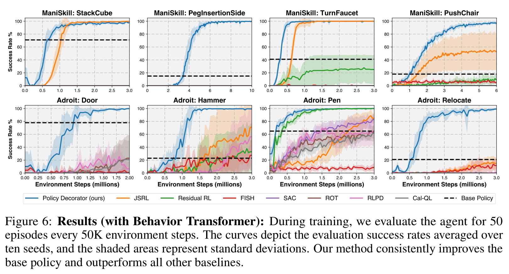

原文图注：Results (with Behavior Transformer): During training, we evaluate the agent for 50 episodes every 50K environment steps. The curves depict the evaluation success rates averaged over ten seeds, and the shaded areas represent standard deviations. Our method consistently improves the base policy and outperforms all other baselines.
图表说明：原图6位于 PDF 第8页，横轴为百万环境步，纵轴为评估成功率；蓝线是完整方法，黑虚线是基础策略。八个面板覆盖四项 ManiSkill 与四项 Adroit。每50000步评估50回合，曲线平均十个种子，阴影为种子间标准差。
进一步分析：BeT 在侧向插销上的基础成功率约15%，修正后可接近满分，但需要达到百万步量级后才明显上升；PushChair 训练横轴达到六百万步，困难插销达到一千万步。高成功率验证的是可改进性，不能据此宣传几十回合就能完成实机适配。
注意：单种子某次评估的分母是50，不是训练回放量；十种子平均后不再具有单次2个百分点的离散粒度。阴影是标准差，不是置信区间。论文没有把所有曲线末值汇总成一份可据以恢复成功次数的数表，因此图上近似数值不能冒充精确测量。
ManiSkill 每任务给1000条示范，来源包括规划、MPC与RL；Adroit 每任务只有25条人类遥操作示范。TurnFaucet 的源训练对象为10种水龙头，在线目标为4种新水龙头；PushChair 由5种源椅子迁移到3种新椅子。这是对目标环境进行在线训练后的能力，不是未见物体的零样本泛化。StackCube、插销等任务更多检验精度；不能把八项任务全都当作相同形式的视觉分布迁移。
BeT 主图中多项任务最终接近100%，但 JSRL 在 StackCube、TurnFaucet 也能达到相近水平，Pen 上普通残差也接近满分。更有辨识度的是前者常有更低样本效率，或在 PushChair、Relocate 等任务停在较低成功率。图证据支持受控修正较一致地提高基础模型，而非每个任务最终都只有本文方法能成功。另有视觉实验覆盖两项 ManiSkill 和两项 Adroit，支持高维观测适用性，仍全部属于仿真验证。
7. 扩散结果与基线修改，需要放在同一阅读框架里
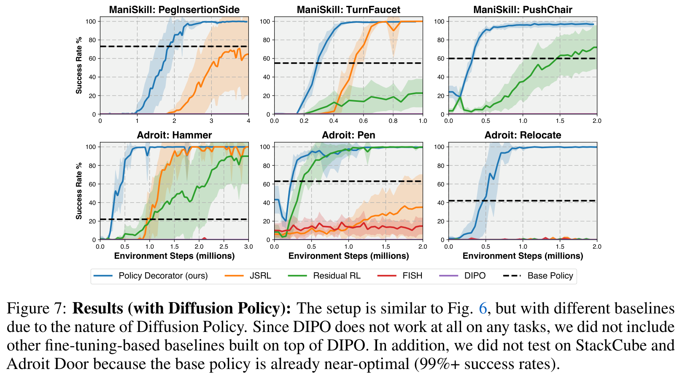

原文图注：Results (with Diffusion Policy): The setup is similar to Fig. 6, but with different baselines due to the nature of Diffusion Policy. Since DIPO does not work at all on any tasks, we did not include other fine-tuning-based baselines built on top of DIPO. In addition, we did not test on StackCube and Adroit Door because the base policy is already near-optimal (99%+ success rates).
图表说明：原图7位于 PDF 第8页，蓝色完整方法在六项任务上显著改进基础扩散策略。StackCube 和 Adroit Door 因基础模型已超过99%而未参与这一组在线比较，不能把六项曲线写成完整八项扩散评测。
进一步分析：基础扩散策略比 BeT 通常更稳健，普通残差在六任务中的三项也能提高，这说明相同探索机制的效果受基础行为质量影响。DIPO 失败的同时，本文方法成功，支持避开扩散权重更新具有实用价值，但不能推出全部扩散 RL 微调都无效。
注意：DIPO 的实现把梯度优化后的已执行动作当标签，未执行的预测动作保持不变；滚动规划导致这些后续动作可能不再适合修正后的状态。正文举16预测、8执行作说明，实际附录默认执行4步，二者应分别理解，不能把示意数字当统一实验配置。
对 BeT 的微调基线，作者只更新可微偏移分支，并加入 tanh 与 LoRA；原始 BeT 和修改版初始分数并不完全相等。比如 StackCube 为71%对67%，PushChair 为18%对23%，Relocate 为20%对13%。它们近似但不严格相同，比较不能被说成只改变是否冻结一个参数开关。RLPD 实现还移除了高UTD与Q集成以控制训练时间，Cal-QL 在线阶段改用SAC而非原算法，都是本文场景下的改造版本。
附录对失败给出具体证据：随机 critic 更新100次后抓取尚可但放置变差，200次后连抓取也退化；只用成功示范预训练 critic，缺乏负经历区分，也不能保证稳定微调。水龙头先由基础策略执行100或120步，再微调剩余阶段，成功率显著恢复，支持长时域与稀疏奖励是困难来源。这些实验解释失败机制，却不构成对所有初始化、奖励与网络结构的穷尽排除。
FISH 的较弱表现还受 VINN 基础模型影响，多个任务初始成功率为零。它与强 BeT、Diffusion Policy 相比同时改变了基础模型和优化方式，因此不能仅由结果推断最优传输奖励不适合残差学习。DPPO 附加比较在其 Square、Transport 任务上进行，作者对成功提前终止的修改也会改变样本效率；论文另给未提前终止结果，读者需要保留这个协议差异。
8. 消融证明控制探索重要，计算成本则解释它仍非免费适配
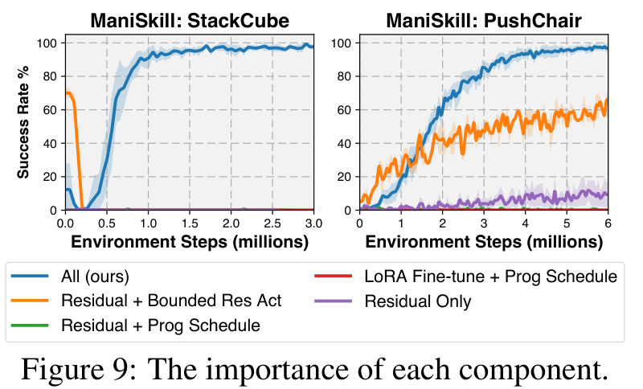

原文图注：The importance of each component.
图表说明：原图9位于 PDF 第9页，两个面板为 StackCube 和 PushChair；完整蓝线同时包含残差、有界动作和渐进调度。只有残差的紫线较弱，有界残差的橙线明显改善，完整方法进一步加速或提高结果。
进一步分析：它将“残差结构是否足够”与“怎样探索”分开，最直接支持本文的技术重点。渐进调度单独配无界残差仍表现差，说明多等一会儿不一定能弥补修正范围过大。这与 RLT 用参考约束稳定局部改进的目的相近，实际约束位置则不同。
注意：这里只是两项任务的组件分析，不能把它提升成所有复杂模型上的机制定理。图中 LoRA加调度还改变了训练模块，不能作为只移除残差的完全同构对照。
幅度消融发现 PushChair 的0.1到0.5、StackCube 的0.03到0.1最终能达到相近成功率，但学习速度不同；过小影响最终能力，过大影响早期成功。 太小可直接失败，过大则慢。附录还验证 MLP、RNN、CNN 基础模型和 PPO 残差版本，说明思路不依赖特定动作生成架构或只适用于SAC，但这些扩展的任务覆盖较窄。
附录另测GAIL加MLP，在三百万步后StackCube仍为0%、TurnFaucet约20%；纯监督MLP初始为0%和10%，低于对应BeT的71%和41%、扩散策略的99%和55%。这组结果补充说明复杂基础模型带来的初始能力很重要，不能把小残差成功误解成“小网络从零学同样容易”。但它只比较特定网络与数据，不能据此推出MLP在理论上绝对不能表达多模态策略，或所有任务必须使用大型模型。
节省反向计算并不等于整个在线阶段很短。附录在 StackCube、BeT、五百万环境步下报告，Policy Decorator 为7小时23分，SAC微调为33小时52分，约4.59倍墙钟差距。前后向微基准用RTX2080Ti、批量1024、100次独立运行平均，支持基础模型反向传播是重要开销；它不是所有扩散模型或VLA硬件上的通用比率。本文仍需不断调用冻结基础策略，推理慢的模型仍限制数据收集速度。
平滑动作主要由视频和定性展示支持，没有统一 jerk 或能耗指标。附录用两个高斯混合与小高斯相加解释模式保留，成立依赖模式分离足够大、残差方差足够小；它不是任意高斯卷积都保留双峰。该附录给出的示例参数把两个均值都写为0.5，与“双峰”描述矛盾，本章不拿这组排版参数作正确数值证明。实际 tanh高斯也不同于未截断高斯，经验分布图只能支持所展示状态的性质。
9. 能力门槛与真正尚未解决的部分
装饰器的优势是模型无关，不是任务无关。它仍需要可在线交互的环境、奖励和可反复开始的回合，且基础行为有足够可用结构。若错误来自完全未知的视觉对象、错误语言理解或基础策略从不产生必要技能，小幅动作修正未必能解决。冻结基础模型保护原有参数，却也禁止它在训练中修正内部表征，视觉网络是否需要适配因而成为方法边界。
小残差也可能在某些状态下只剩很窄的可达动作区域。考虑基础动作持续向右，而正确动作需大幅向左，若所需反向量超过 ，任意训练都不能直接在该步实现目标命令；只有改变前序状态才可能绕过。这是由动作和式与幅度约束推导的能力限制，不是文中额外报告的失败实验。渐进探索无法扩大这个固定动作集合，只改变训练时使用它的概率。
全文主要是仿真研究，没有实机安全评估和人工接管统计，不能将平滑视频等价为真实接触安全。对新物体的结果属于在线适配，而非多任务通才保持能力的评测。最终部署要保留基础模型和残差两个模块，论文未执行像PLD那样把恢复轨迹重新蒸馏回基础通才的步骤，也没有证明在一个任务上学的残差能直接迁移到其他任务。
本章的实现描述来自锁定论文与附录：动作输入、调度、缩放和共享训练设置均有原文依据；基础策略动作队列与残差具体调用频率没有进行独立源码验证。与其填入一个看似完整但未经确认的训练循环，不如明确哪里是公式能推出的行为，哪里仍缺执行级证据。这个边界不影响理解核心方法，也避免把同名开源仓库的后续更改误认为v1原始实现。
10. 与 RLT 的具体差别：动作和式、参考条件与块级价值并不相同
RLT 先在任务示范上训练一个编码器—解码器读出模块，从VLA多枚嵌入中提取压缩RL token，再冻结VLA与token模块。在线 actor 接收这个token、本体状态以及VLA生成的参考动作块，以高斯分布输出一个完整动作块；critic 评价状态与块动作，TD目标累计块内折扣奖励。Policy Decorator 则没有token重构瓶颈，残差actor主要直接观察任务状态或图像。来源：RLT方法节。
动作结构上，本文明确执行基础动作加残差；RLT用参考块作为条件，其公式不是强制的固定相加结构。约束也落在不同地方：本文以tanh缩放限制每次残差，并在训练行为里随机选择是否使用它；RLT以价值项与输出接近参考块的平方距离共同训练actor，还对部分参考输入做dropout，减少仅复制。即使两者都希望围绕已有能力局部改进，不能把盒约束、概率调度和参考正则当成同一项损失。
两者对时序的显式程度也不同。RLT给出块长、块内奖励累计、下一状态折扣与中间转移抽样；Policy Decorator 的主要公式是一步动作相加，基础扩散模型内部再保持滚动时域生成。因而比较“闭环”时，需要说明在哪个周期接收新观测、哪个模块重新决策，而不是把有动作块的方法全部称为开放控制。RLT还可将学习聚焦在高精度关键阶段，使用人工交接；本文没有相同的关键阶段交接训练设定。
可确认的共同点是冻结已有模型、把在线学习限制在较小模块，并借助已有行为避免从零探索。实证结论的范围却不同：本文强项是跨基础架构的受控残差仿真，RLT强调紧凑表示、参考块条件与真实关键阶段适配。任务、奖励、预算和评测分母不同，不能用各自最高成功率推出某种控制结构普遍更优。理解这两篇时，最需要保留的是在线模块究竟修改动作还是条件化生成，以及基础模型的信息究竟以观测、嵌入还是参考块进入学习。
DSRL：冻结扩散生成器，在初始噪声中学习选择更好的机器人行为
1. 关键观察：同一个冻结模型，换一个随机起点就能产生另一种动作
《Steering Your Diffusion Policy with Latent Space Reinforcement Learning》提出 Diffusion Steering via Reinforcement Learning，简称DSRL。本章锁定 arXiv:2506.15799v2，作者 Andrew Wagenmaker、Mitsuhiko Nakamoto、Yunchu Zhang、Seohong Park、Waleed Yagoub、Anusha Nagabandi、Abhishek Gupta、Sergey Levine，首页列出UC Berkeley、University of Washington与Amazon。论文把在线改进的对象从扩散模型权重转移到其输入噪声分布，目标是利用已有生成能力，降低真实机器人强化学习的交互和优化困难。来源：首页、引言（此附件保存在完整本地归档中）。
模仿训练得到的扩散策略通常先抽标准高斯噪声，再逐步去噪，生成动作或动作块。即使观测相同，不同初始噪声也可能产生不同接近路径、抓取方向或操作速度。如果其中一些行为比其他行为更容易成功，改进不一定需要重新学习整个生成器：可以训练另一个策略，在当前状态下更常选择有利的初始噪声。被冻结的是“从噪声到动作”的映射，改变的是进入映射的采样分布。
这与在末端动作上加修正有实质区别。残差方法先得到基础动作，再在动作坐标里改变它；DSRL先改变采样起点，再让完整的已学生成过程输出协调动作。这样可能沿着模型已经学会的行为结构探索，尤其适合多步动作生成器。但如果模型根本没有产生所需行为的能力，挑选噪声也不能凭空创造技能。因此全文的核心问题不仅是学习更快，还包括冻结生成器到底保留多少可操纵空间。
“潜在空间”在这里有很精确的含义：它是扩散或流生成过程最开始的噪声空间，不是VLA隐藏层token、编码图像后的语义表示，也不是额外训练的低维自编码器。一般情况下，初始噪声维度与生成动作张量相同，论文并未通过“latent”一词自动降低维度。后文对 的重复噪声设计，才是针对长动作块进一步缩小在线决策空间的特定实现。
2. 从去噪公式到黑盒接口，哪些量真的保持冻结
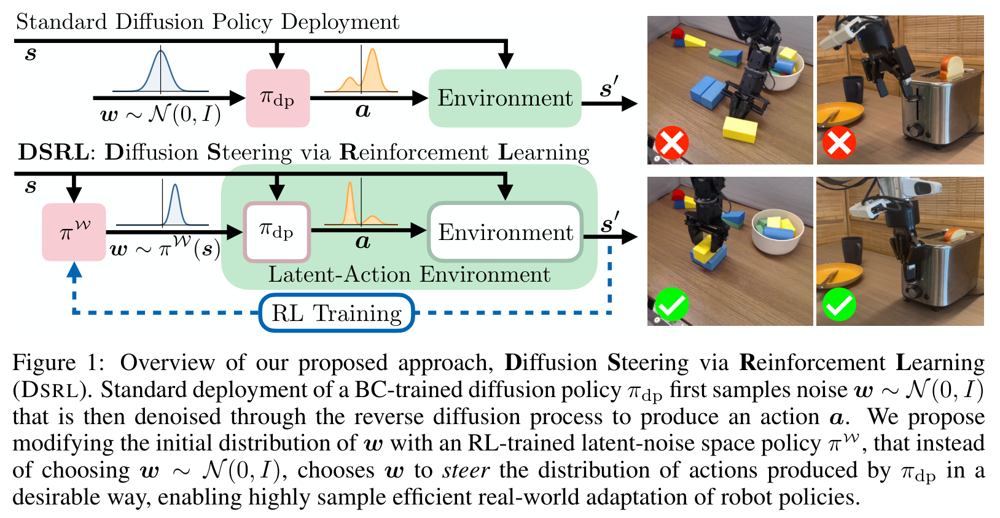

原文图注：Overview of our proposed approach, Diffusion Steering via Reinforcement Learning (DSRL). Standard deployment of a BC-trained diffusion policy first samples noise that is then denoised through the reverse diffusion process to produce an action . We propose modifying the initial distribution of with an RL-trained latent-noise space policy , that instead of choosing , chooses to steer the distribution of actions produced by in a desirable way, enabling highly sample efficient real-world adaptation of robot policies.
图表说明：原图1位于PDF第2页。上排从固定高斯抽噪声；下排由状态条件策略选噪声，再经过同一个基础生成器。绿色区域把生成器与机器人环境合并成一个潜在动作环境，强化学习更新左侧噪声策略。
进一步分析：生成器保留动作协调结构，而强化学习不需回传整个去噪链。与RLT在生成后以参考动作块条件化actor不同，DSRL在生成前选择随机种子，改变发生的位置本身就是两条方法的重要差别。
注意：能按指定观测与初始噪声调用生成器，才满足本文的黑盒接口。只有“给观测、随机返回动作”而不允许指定噪声的普通接口，并不足以直接运行DSRL。图里的黑盒也没有消除基础模型推理费用。
论文的去噪更新式为
是第 个噪声水平的样本， 为训练过的去噪网络， 是它的权重， 是调度系数，额外的 是每步随机噪声；状态条件在简化记号中省略。 这里是生成器内部时间，不是机器人环境步。初始 ，最终 。DDIM设定中 ，给定状态和 后整个采样过程确定；flow matching也提供相同意义的确定性噪声到动作映射。来源：第3节。
作者将这个映射记为 。上标 是为了强调输入噪声，不能把它误解成一个新的可训练主干。适配阶段，去噪器或流模型始终冻结；在线更新的是噪声actor与相应critic，所用小型视觉编码器也可随这些模块训练。不存在通过奖励重新训练扩散先验的步骤，亦不要求求出完整去噪链相对于权重的梯度。
这里的确定性条件有实际意义。如果生成中每一步仍独立注入DDPM噪声，只固定起点就不再唯一决定最终动作，潜在动作到结果的关系会额外含随机性。一般MDP仍能容纳随机转移，但本文具体推导与实验主要利用DDIM或确定性流映射来解释别名，并没有逐步学习所有内部噪声。它与把整个去噪过程展开为多层决策、直接更新去噪权重的路线不同，也不等于在推理时用critic梯度反复修改当前样本。
3. 潜在动作MDP：不是改变环境物理，而是改变可选择的控制变量
原环境写作 ： 为状态空间， 为物理动作空间， 为状态转移， 为初始状态分布， 为奖励， 为折扣。DSRL定义
是噪声空间，数学定义先取 ； 是噪声向量维度。新MDP保留真实状态和奖励含义，只把学习器能够选的动作从 换成 ，基础生成器成为转换的一部分。执行时仍由真实机械臂施加 ，不是把高斯噪声直接发给关节。只要这个接口成立，原则上可在新MDP上使用不同RL算法，论文给出的主要实现是SAC类actor-critic。
一个教学实例可把生成器缩成固定分段映射：在同一状态 ，噪声 产生动作 ， 产生 。假设前者会绕开障碍，后者易碰撞，标准对称高斯各选约一半；学到的噪声策略把质量移向负半轴后，物理动作分布便随之变化，而映射参数完全未改。这是说明模式选择的构造例，不是机器人数据。若正确动作是 ，却从不属于该映射输出，两种模式再怎样重加权也无法直接得到它。
这种表示并不要求噪声有清晰人类语义。某一坐标未必对应“向左”或“夹紧”，它可以通过复杂生成过程影响整个动作序列。由此可见，它的优势不是任意小噪声变化都产生小动作变化，而是利用映射的结构提供探索候选。正文没有给出可逆性或全动作覆盖的定理；与可逆正规化流不同，扩散映射可能把多个噪声压到同一个动作，也可能缺少某些动作。
4. DSRL-SAC：在噪声空间直接学习价值，为什么普通离线动作不够
最直接变体DSRL-SAC在潜在动作MDP上运行SAC，actor 产生噪声，critic 评价噪声选择。在线采集时噪声由算法自己抽取，因而可把 作为潜在动作经历回放；下一步由噪声actor再选择 ，critic通过TD目标学习。梯度穿过噪声actor与噪声critic，不经过生成器；为了与真实环境交互，每次仍需一次完整前向生成。
问题出在普通离线数据只有 ，并不知道当初哪个噪声生成了动作 。人类示范甚至根本没有对应的生成噪声。若直接把物理动作当作噪声喂给 ，输入语义完全错位。寻找逆映射也不可靠，因为多个噪声可对应同一动作，且映射未必可逆。这是论文引入第二个变体的具体动机，而不是泛泛地认为“离线数据质量低”。
DSRL-SAC仍是重要实用版本：Robomimic Transport、全部实机适配，以及 适配均使用它；不能因论文算法1主讲噪声别名，就把所有结果写成双critic版本。基础模型的初始rollout可以预填在线缓存，这些数据的噪声是算法可记录的；这与直接读入没有噪声标签的人类离线动作集有本质差别。实机热启动成功并不自动证明标准SAC变体解决了任意离线数据学习。
critic所在空间还决定它能共享什么信息。两个不同噪声若实际上产生相同物理动作，普通噪声critic仍可能在函数近似中把它们当作不同样本来学习。对于窄动作分布，这会重复花费探索。噪声别名版本通过物理动作critic把这些等价或近似等价的选择联系起来，兼顾离线数据接口与样本利用效率。
5. DSRL-NA：动作价值先学习，噪声价值再蒸馏
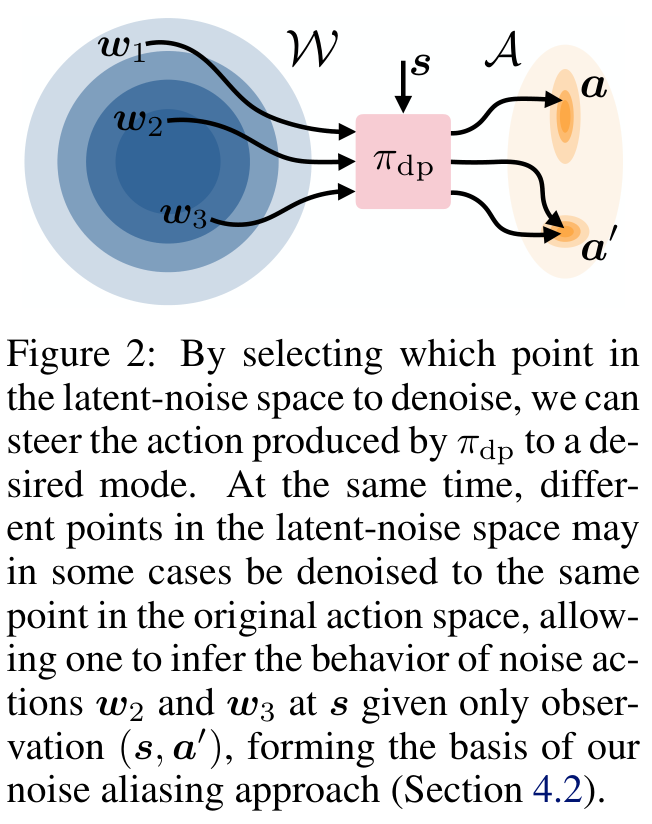

原文图注：By selecting which point in the latent-noise space to denoise, we can steer the action produced by to a desired mode. At the same time, different points in the latent-noise space may in some cases be denoised to the same point in the original action space, allowing one to infer the behavior of noise actions and at given only observation , forming the basis of our noise aliasing approach (Section 4.2).
图表说明：原图2位于PDF第5页，左侧为噪声空间 ，右侧为动作空间 。 经过同一个条件生成器到达动作 ，而 到达另一个动作模式。
进一步分析：别名共享的是动作后果，不是声称两个噪声数值接近。只要生成动作相同，环境执行这一步的奖励与转移就相同，故动作critic能够把已见后果传给多个噪声选择；RLT的token压缩则共享状态表示，两者压缩的对象不同。
注意：精确动作相同才能得到精确的一步等价；动作仅近似相同时，还需环境动力学与奖励对小偏差足够平滑。插孔边缘等不连续接触可能破坏这种近似，图示不能提供全局误差保证。
DSRL-NA维护物理动作critic 、噪声critic 与噪声actor。算法1首先用真实动作数据学习
是目标critic，样本 来自回放。接着从回放取状态、另抽标准高斯噪声，做
最后actor最大化 。第二个式子中的 是回放缓存，高斯采样针对 ，并不是状态也服从高斯。这里 是蒸馏监督目标，生成动作及其价值应视作目标信号；actor通过可微 获得梯度，绕过完整生成链。算法式省略熵项，附录说明实现加入与SAC相同的熵处理，不能误称实际策略完全无熵正则。
延续前面的教学映射，假设一条动作转移奖励为0，下一目标价值0.8，折扣0.99，则物理动作critic目标为0.792；当前预测0.6，平方误差是0.036864。若 都生成这个动作，动作critic的0.6可同时监督二者；噪声critic预测分别0.4、0.7，对应误差0.04、0.01。提高动作critic的准确度会逐步改善两者的噪声价值。这里增加的是模型查询与价值学习，不是执行了两次新机器人动作，也不是合成了两个真实环境转移。
6. 回放与推理生命周期，以及限制噪声幅度的必要性
在线开始先用基础策略的标准高斯采样收集初始rollout，再训练噪声actor与critic。NA回放保留实际动作转移，既可装离线数据，也可不断加入在线经历；纯离线时只执行价值更新与蒸馏，不调用机器人收集新转移。部署时actor按当前观测给噪声，冻结生成器给动作，执行后再获得新观测。critic一般用于训练，不是每次部署都对大量候选做显式搜索。状态特征依实验可以是低维本体、图像编码或已有模型特征，没有一套适用于所有场景的统一token接口。
虽然数学定义 ，实现将其限制在 。 是噪声动作幅度，在线常在1到3、离线约0.5到1.5内调节，具体任务另列。原因是基础生成器主要见过标准高斯附近的噪声，过远输入可能产生训练分布外行为。不能将“从冻结模型输出”理解成任何噪声都必然安全、有效或位于示范支持内。
正文认为同数据训练的生成先验提供自然保守性，因此无需另加CQL式显式保守惩罚；这依赖先验确实把可选噪声映射到有数据支持的动作。有限网络近似、未见状态与极端噪声都会削弱这个前提，论文没有给出统一覆盖保证。实现对噪声做边界约束，也说明实际方法并非在所有实数输入上无条件信任生成器。
动作块还改变环境步含义。一般Robomimic实验将整块视作一次RL动作，忽略块内观测，但图中交互步数统计原环境的所有低层步，不能将一个块算一步后声称样本量又减少四倍。Lift、Can、Square块长4，Transport块长8；对应推理去噪步有8步，也有Transport的100步。块内是开放执行，块边界重新观察形成反馈控制，不能据整个MDP记号认为每个物理小步都重新选择噪声。
7. 样本效率伴随高更新预算，不能只看环境步数
在线仿真采用四个环境并行，每个并行环境推进后做多次更新。公共设置为批量256、学习率 、三层MLP、目标更新率0.005和两个critic；隐藏宽度在许多NA实验达到2048。Lift每次30次梯度更新，Can与Square为20次，噪声critic另列10次更新。这些设置牺牲更多模型计算换取环境样本效率，不能只凭“MLP”认定每步训练廉价。
初始标准策略经历也相当可观：Lift与Can各24000原环境步，Square为32000，Transport为320000；它们提供了在线启动数据。仿真结果平均五种子，在线误差条为一个标准误，既不是一个标准差也不是95%置信区间。本文并未给出所有仿真曲线每个评估点的统一回合分母，本章不从曲线小数推算成功次数。Robomimic用二值成功奖励，Gym运动任务用默认回报，二者指标不同。来源：附录在线细节与超参数。
主文在Robomimic与Gym上报告相对若干扩散RL方法达到相近水平所需样本减少约五到十倍。这个比率是特定任务曲线上的样本比较，不是所有任务的墙钟加速。Square、Transport还重新训练了较强基础策略，训练去噪步从对照公开checkpoint的20增为100；Lift、Can与Gym则沿用公开checkpoint。因此比较并非所有任务都严格共享同一个基础模型。
NA与SAC的直接消融在Square上约节省一半样本，Can也有类似但较弱趋势，支持别名利用有帮助。但Square的SAC最优隐藏宽度为128，与NA大网络不同，所以不宜把差距完全归因于增加一个蒸馏损失。去噪训练步数、推理步数、基础网络宽度、示范操作者质量和训练轮数均有消融；训练轮数3000、6000、9000在Can上影响较小，不能外推成任何过拟合模型都容易操纵。
8. 离线结果尤其需要同时读成功率与critic数量
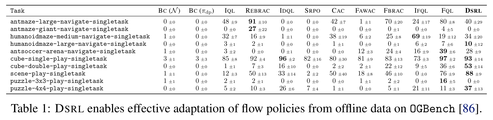

原文图注：DSRL enables effective adaptation of flow policies from offline data on OGBench [86].
图表说明：原表1位于PDF第8页，十项任务覆盖迷宫、物体操作和拼图；同一离线集先训练flow基础策略，再冻结并运行DSRL-NA。DSRL与基础生成BC平均四种子，±为一个标准差，其他多数基线取自FQL论文。
进一步分析：scene任务由基础BC的0提高到88±9，双方块由0到53±14，展示初始成功率很低仍可能蕴含可拼接的局部行为。另一方面，巨大ant迷宫和3×3拼图仍为0，说明噪声优化并不自动把任意失败先验变成成功策略。
注意：这张表的DSRL使用10个critic、均值聚合，对照多为2个，虽然更新步数与网络宽度按对照设置，总参数和计算预算仍较大。未披露的单项评估回合数不能由四种子均值反推出精确成功次数，±也不是置信区间。
离线flow策略先训练一百万步，使用十步流采样；在线优化对应的actor/critic在该离线版本为四层、隐藏宽度512、GELU。离线噪声幅度还逐任务调节，例如0.5、0.75、1.25或1.5，折扣也有0.99和0.995。表中的好结果包含这些任务选择，不能宣传一个完全不调参的统一算法。表中部分粗体按作者判据表示领先组，不代表DSRL逐行都是数值最大。
读失败项也能理解可操纵性。antmaze-large中DSRL为40±29，明显低于ReBRAC的91±10，方差又大；单方块93±14虽强，仍不高于FQL的97±2。另一方面，部分基础BC完全失败而DSRL成功，说明“需要基础非零整回合成功率”不是与Policy Decorator完全相同的严格门槛，尤其离线集提供价值信息时，局部多样行为可被重组。必要的是有用动作与可学习价值支持，而不是已公布一个固定初始成功率阈值。
离线到在线实验在Can和Square上将Multi-Human示范装入NA回放，相对纯在线再约节省两倍样本，RLPD与Cal-QL对照数值来自已有工作。它支持物理动作critic能够利用普通离线转移，但不是独立控制全部实现与预算的最新排行榜。双critic蒸馏解决的是数据空间对齐，离线值外推和先验支持不足仍是另外的问题。
9. 长动作块的特殊实现：32维噪声重复，并非直接优化1600维
仿真模型输出50步、每步32维的噪声与动作张量，总维度1600。直接让SAC优化整个噪声块较难，作者改为训练单步噪声actor 和单步噪声critic，二者只处理 ；采样一个 后，沿时间轴重复50次作为生成器输入：
重复的是初始噪声，不是最终动作。流生成器仍结合时间位置与观测生成不同动作，不能把输出解释成50步同一关节命令。这个做法将自由变量约束在1600维中的一个32维子空间，是经验有效的结构约束，并非证明所有50步行为都能由它表示。实机DROID版本块长为10，相同重复方法仍用，不能混写为实机50步。
仿真Libero只研究LIBERO-90中的“把奶油奶酪放进托盘”一项，基础checkpoint先在另外40任务1693条示范上微调；AlohaTransferCube基础checkpoint则在同一任务50示范上适配。二者未见程度不同。三种子比较DSRL-SAC、ResiP与V-GPS，Libero约一万在线样本从20%到近100%；这不是完整LIBERO-90套件成功率。奖励也特别改为失败未完成时每步−1、成功0，不能与所有任务一概称0—1奖励。
实际执行长度在Libero为50步预测中执行20步，Aloha为50步全部执行；表中实机10步全部执行。大块内部仍不反馈重新选噪声，下一次决策在块执行后进行。与前述一般块MDP设定相同，必须区分预测时域、执行时域和结果横轴的原环境步。只看到“32维latent”而忽略它生成50步动作，会错过该变体为何既降低优化自由度又保留长程协调。
10. 实机成功次数与8GB训练的边界
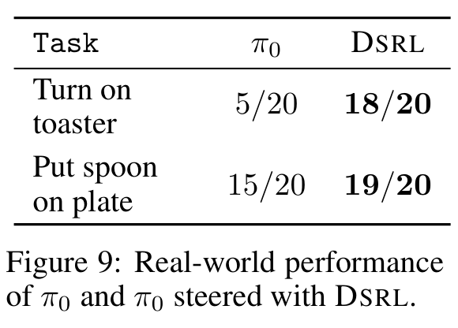

原文图注：Real-world performance of and steered with DSRL.
图表说明：该表状对象在PDF第10页编号为Figure 9，本章保留原编号。烤面包机任务基础为5/20，DSRL为18/20；勺子放盘为15/20到19/20，分别是25%到90%、75%到95%。
进一步分析：首项绝对提高65个百分点，另一项20个百分点，分母均为20；它们证明特定实机任务可在保持生成器冻结下改善。训练量分别为80回合约11000步、65回合约10000步，不能与单任务Franka的约40回合混为同一预算。
注意：没有在这张实机表中给出多种子置信区间，小分母下的90%和95%不应外推为精确部署可靠性。正文称“首次”属于作者当时的优先权主张，本章没有进行当前文献优先权核查。
单任务Franka另有更小规模实验：基础扩散模型用10条人工示范训练，先自主跑10回合预填缓存，再进行3500在线步、约40回合训练，测试从2/10到9/10；RLPD和带干预RLPD均为0/10。这里两种RLPD使用同一批人类示范作一半回放，DSRL使用基础策略初始经历，数据利用方式并不相同。结果支持给定这些数据与设置的差距，不能推导从零RL在更长预算下一定失败。
WidowX多任务DiT基础策略在Bridge V2六万余条轨迹上训练，以目标图像条件化，在线先20回合热启动。抓蘑菇、关抽屉、叠方块约100—150回合后改善；评估分母分别为20、10、10。成功定义包括物体至少一半在布上并释放、抽屉完全关闭、黄块叠上蓝块且释放。输入使用本体与基础ResNet图像特征，表明具体实现并非只依赖裸动作返回值。
实机噪声策略还接收本体、VLM最后token的2048维隐藏特征，以及从左右和腕部图像训练出的浅CNN特征。因此方法原则上只需可控噪声黑盒，但该实机配置另用了内部特征接口。基础推理在远程策略服务器，本地RTX3070的8GB显存运行DSRL训练，每更新点30次梯度。所谓8GB并不包含基础模型服务器的全部计算；附录引用LoRA需22.5GB、全量70GB作背景比较，本章没有把历史仓库数字当作当前硬件实测。
11. 与 RLT 对照：选择生成噪声和生成后编辑动作是不同接口
RLT从VLA嵌入训练一个重构式RL token读出模块，之后冻结VLA和该模块；在线actor以token、本体和参考动作块为条件，直接输出动作块高斯分布，并以接近参考块的平方距离约束行为。critic明确评价块动作并累计块内奖励。DSRL的“latent”则是生成前的噪声变量，actor输出噪声，再由冻结生成器转成动作；它没有用重构瓶颈把VLA嵌入压成同一种状态。来源：RLT方法节。
因此，两者冻结基础模型的原因相近，探索自由度和信息接口却不同。RLT参考条件允许actor在物理动作空间局部改进，DSRL被限定在生成器输出以及所选噪声子空间能达到的行为内。后者可保留生成器协调结构，却更依赖可操纵性；前者可输出偏离参考的动作，但价值估计与正则需要控制这种偏离。DSRL的噪声盒不是RLT的参考动作距离惩罚，重复噪声也不是RL token压缩。
样本利用同样不能混同。DSRL-NA以动作critic监督噪声critic，利用多噪声到同动作的别名；RLT通过紧凑状态和参考条件改善块级actor-critic学习，还可存储中间偏移块与人工动作。前者共享的是动作后果，后者改善的是状态接口、动作先验与转移利用。二者都仍需奖励与适当初始能力，不能仅由冻结结构推出稳定性或安全。
论文明确承认可操纵性没有事先量化办法：过窄生成分布可能缺少可选行为，状态分布外也可能失败；在线版本还需真实交互、回报与重置。NA的近似别名、较高计算预算以及长块开放执行是理解效果边界的重要条件。本章解释依据锁定全文、附录与原图，未对外部官方仓库执行函数级核验，也未运行训练；因此噪声张量的概念形状与论文配置有据可查，终止mask、实际缓存字段和异步调度的执行细节不冒称已验证代码事实。
Q-chunking：为什么同时给策略和价值函数一个动作块
单步策略可以在每一帧重新决定动作，却很难从随机探索中偶然完成“接近、下降、抓住、抬起”这样连续的片段；单步价值函数又只能沿着轨迹逐步把成功信号传回去。《Reinforcement Learning with Action Chunking》把这两个困难放到同一个动作接口上处理：策略选择接下来的一段动作，critic 评价的也是这一整段。离线数据提供有时间结构的行为分布，在线强化学习在这个分布中寻找更有价值的片段。RLT 的动作块价值学习与它存在可核对的结构对应，但 RLT 还增加了冻结 VLA、RL token、采样参考动作和真实机器人干预，不能直接继承整套实验与理论结论。
本章锁定 Qiyang Li、Zhiyuan Zhou、Sergey Levine 的 arXiv:2507.07969v4，PDF 共 29 页，页首注明 NeurIPS 2025。以下区分作者实际提出的算法、附录给出的条件以及为了讲解而构造的数字。公式位置以正文 Eq.4–15、附录 A 与 C 为准。
从单步随机探索到时间连贯的片段
想象机器人已经学过抓取，但在线探索时在“继续下降”和“先向上退一点”之间来回切换。每步 Gaussian 采样都可能合理，连在一起却变成停顿和抖动。离线示范通常包含持续同向的运动：下降过程中连续几帧的动作存在相关性，脚本或人类操作者还可能依赖隐藏的阶段记忆。逐帧行为克隆会丢失这类联合结构，输出动作块则可以直接拟合片段的联合分布。论文据此区分“最优控制可取 Markov 策略”和“高效探索可能需要非 Markov 行为”：前者的存在性并不保证逐步随机试错容易找到它。
这里没有再训练一个高层技能选择器和一个低层闭环技能。作者把低层执行限制为开环动作序列，将双层优化折叠为扩展动作空间上的普通 RL。每个块的边界仍读取新状态，因此整个 episode 不是完全开环；但块内暂时不能利用新反馈，长度越大，反应性损失越明显。这个代价将在长度消融中出现，而不是被“动作更平滑”一句话掩盖。（PDF pp.2–4。）
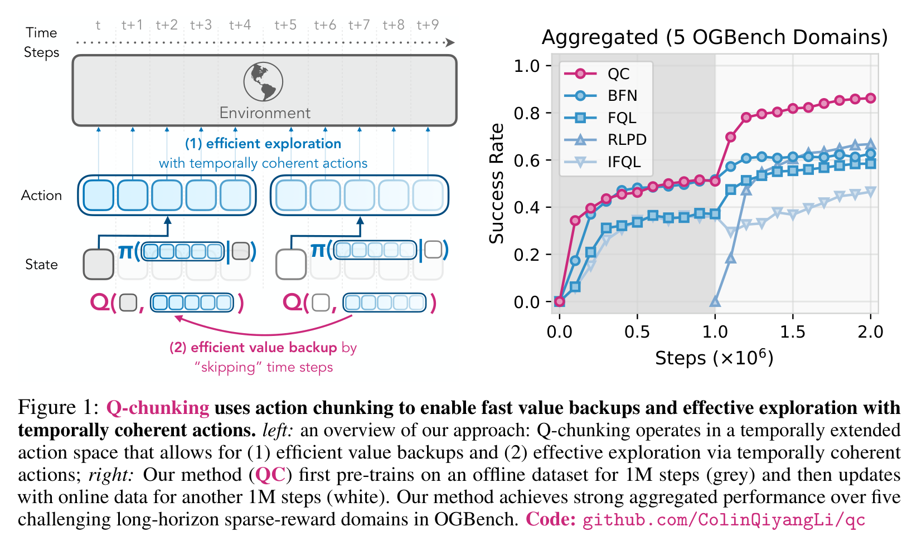

图表说明：PDF p.1 原图1左侧用同样长度的蓝色动作块连接策略、环境和 Q；右侧是五个 OGBench 域的聚合成功率，灰色区间为一百万步离线训练，白色区间为之后一百万步在线学习。它同时展示了动作探索与价值回传两条路径。
进一步分析：左图的 Q 明确接收整段动作，这是区别于单纯把策略输出加长的关键。右图中离线性能较强并不意味着在线仍会持续提高；作者用 BFN、FQL 及其多步版本分离行为表达与价值传播的贡献。
注意：曲线横轴离线部分是训练步，在线部分包含实际环境步，不能全部解释为与环境交互。该图属于仿真基准证据，不是 RLT 的真实机器人吞吐或训练预算。
扩展动作空间改变了 Q 究竟在评价什么
设单步动作 ，块长 ，将 作为一个动作。actor 建模 ，critic 是 。训练 batch 的动作轴是“样本、块内时间、单步动作维”，展平只改变存储布局，不改变时间含义。批量索引和时间索引不能互换。
这里 是真实执行当前片段后产生的奖励， 是单步折扣， 是延迟 target network， 是在块末新状态生成的下一块。critic 最小化 ，target 不反传。实际有限回合实现还需在终止时关闭 bootstrap；这属于将无限时域公式落实到数据的必要处理，不是作者额外提出的新机制。
相比之下，多步 return 基线仍预测 ，却把旧行为策略在后面 步的动作所获得的奖励接上来。它在估计“当前策略从第二步起接管”的价值时，使用了“旧策略继续执行”的中间路径。Q-chunking 直接把那些动作作为 Q 的条件，评价的是“先执行这整个固定序列，再接当前策略”。因此它不需要假装块内后续动作已经来自当前策略。这个区别是动作语义的变化，不能只用“用了多步奖励”概括。（PDF p.5，Eq.4–7。）
无偏命题的含义与原文公式的一处问题
附录 Proposition A.1 固定起点和完整动作片段，对环境转移取期望；如果块末估计 对当前块策略的 无偏，那么相应的折扣片段奖励加块末价值也是该 chunk Q 的无偏估计。证明只需将 Q 的定义展开，再用块末估计替换真实价值。行为策略如何选择这条已固定片段，并不要求等于当前策略；这正是整段动作作为条件的意义。
这并不证明神经网络 critic 训练后没有估计误差，也没有保证最大化估计 Q 不会利用高估。若中途干预依赖新观察，实际执行的块内控制已成为反馈策略，不能不加说明就当作预先确定的开环片段；变长终止也需相应的时间边界。
原文附录 A 的命题和证明把块末项写成 ，没有在该项前印出 ；而正文 Eq.4–7 明确保留折扣。对折扣价值的严格解读应采用正文形式，或明确块末项已吸收折扣。这里保留这一符号不一致，不把排版中的省略当作另一个算法。（PDF p.17。）附录的 FlowODE_Euler 伪代码同样把 velocity 直接赋给下一状态，省略常规 Euler 的状态累加与步长；与其 velocity 定义合用时需特别核查，不能宣称伪代码已经是可直接执行的完整 solver。
QC：用候选排序替代难算的 flow 概率
动作块有多个可行模式，单个 Gaussian 未必能拟合离线联合分布。作者先训练状态条件的 flow velocity ，输入中间带噪块 和生成时间 ，输出同为 维的速度。由高斯 积分得到行为分布 。在没有显式 flow 对数概率的情况下，直接计算 KL 正则很昂贵，QC 于是从该分布采样 个候选并选最高 Q：
环境执行和 TD target 的下一块都使用这个选择规则。QC 不再另设一个可微 actor 来求 Q 梯度；策略本身是“flow 采样加 critic 排序”这个隐式程序。flow 模型在线也继续用新增数据训练，不能误称它在整个 online 阶段冻结。
论文 Eq.10 的上界是
其中 是多次重复采样后被选中动作的分布，不能将单个向量误当概率分布。 时上界为零，策略退回行为采样；增大 放宽可达到的偏离并增加排序能力，同时增加推理成本。例如 的上界为 ，这里对数采用自然对数。上界既不保证成功动作进入候选集，也不防止错误 Q 选中危险候选；“不远离行为分布”与“动作质量必然提高”是不同命题。（PDF pp.6–7。）
QC-FQL：把排序成本换成一次前向的蒸馏误差
QC-FQL 增加噪声条件策略 ，一次前向直接给出动作块；相同初始噪声 也送入 behavior flow，得到教师终点 。用同噪声构成两个分布之间的一个耦合，其均方距离是二阶 Wasserstein 距离平方的一个上界：
越大越强调行为锚点，第一项则鼓励价值提升。这个教师动作是模型在同噪声条件下生成的片段，不是直接拿 replay 中任意示范动作作逐点 BC。训练还需要 flow matching 的速度误差和 chunk critic 的 TD 误差，形成 flow、one-step policy、critic 三组参数。推理时用一次策略前向替代多候选 flow 采样，但训练仍需教师生成，成本只是转移而没有消失。
正文使用单个 target Q 说明思想，附录 C 实现公式对 个 target critic 求平均；不能因别处使用 TD3 就自动把这里改写为 twin-Q 最小值。共同参数表已经公开 batch 256、折扣0.99、Adam学习率 、target更新率0.005、flow steps 10、隐藏宽512、四层隐藏网络及默认UTD1。它们是该论文的配置，绝不是 RLT token encoder 的公开参数。（PDF pp.19–22。）
用一个反例看清“奖励相加”何时会错
以下是教学构造。块长三，折扣0.9，当前片段奖励 ，块末 value为2，则 target为
若训练 ，后两动作曾由行为策略谨慎保持抓取，而当前单步策略第二步有一半概率松开夹爪，那么将这条成功片段的0.81全给当前单步 Q 就会乐观。若训练 ，固定的两个保持动作已进入条件，这条成功的归因对象才正确。反过来，若数据只保存首动作却标为三步块，或奖励与另一条 episode 拼接，公式写得再漂亮也无法弥补数据对象错误。
同样可演算行为约束。两个动作块都包含三次下降，但一个序列中夹爪持续闭合，另一个在中间开合；逐动作边际可能相近，联合序列却有不同物理意义。flow 约束整段分布，而单步 BC 不一定保留这种相关性。它解释论文为何同时强调价值跨度和行为表达，不能把任何一个模块单独视为充分条件。
从同噪声耦合看懂蒸馏约束
以二维动作块为例，行为生成器和一步策略都接收同一个标准高斯向量。对第一份噪声，教师走向左侧绕障，学生也应预测左侧；对第二份噪声，教师走向右侧，学生可对应右侧。若把教师样本随机打乱后再算均方误差，学生可能被迫靠近左右平均，而平均位置恰好在障碍物上。同噪声配对将模式之间的对应保留下来，才使距离具有“学生在模仿哪一个教师模式”的含义。
形式上，令 、，两者共享随机变量 。它们的联合分布是一个合法耦合，故 。这不是说该噪声耦合一定达到最优运输距离，而是它给出一个可计算的上界。减小蒸馏误差可控制分布偏离，增大Q项则可能推动学生离开教师；只有二者的共同优化才能解释结果。与RLT直接向某个采样reference靠拢相比，这里的教师—学生还共享生成噪声，不能因为两式都出现平方距离就断言它们在约束相同的分布。
行为flow本身的监督也能展开。取数据动作块 、高斯噪声 、均匀采样的生成时间 ，构造 ，目标速度为 。网络预测 ，以速度均方误差学习把噪声搬运到数据块。这条监督路径没有经过环境Q；Q只对选中动作块或一步策略施加价值偏好。训练既有固定数据分布下的模仿，也有价值引导的策略改进，不能只描述成一个黑箱“flow actor”。
执行频率、采样频率与更新频率是三件事
附录算法每步执行一条已选动作并把转移加入数据，只有块边界重新生成整段。因此块长为五时，一次选择负责五次环境执行，但训练仍可在每次环境步后进行。高层动作的数量、回放中原始转移的数量、梯度更新次数不能互相代换。要组装一条高层训练样本，必须从同一episode中取出连续动作和奖励，并检查中途有没有终止；末状态需要对应恰好执行完这段动作的时间。片段拼接错位属于数据错误，增加critic容量无法修复。
这也说明开环块和循环策略是不同的控制方式。块策略看到起点状态后确定整个片段，块内偶发扰动只能等下一次选择纠正；循环策略则可能每帧根据新观察修改动作。片段足够短时，前者以少量反馈能力换取动作一致性；片段过长时，同样的惯性会让策略错过恢复窗口。作者把固定块长列为限制，明确高频反馈需求可能让它失效。不能借用“最优Markov策略存在”的理论否定时间相关探索，也不能借用探索收益否定反馈的必要性。
计算成本与调参协议如何影响结果
最好的候选数取决于任务，并不是每项实验固定一个大数。作者在每个OGBench域的task2上从2、4、8、16、32、64、128中调候选数，然后将选值用于该域所有任务；QC-FQL的行为权重则围绕FQL默认值的三倍、原值和三分之一调节，robomimic还测试100、1000、10000。调参集、参数作用域和测试任务的关系决定结果可以如何推广：论文有跨同域任务的使用，但没有证明这些超参对另一机器人无须调整。
主实验使用RTX-A5000，单次OGBench离线到在线约四到七小时，robomimic约八到十二小时；作者估计主结果累计需10350 GPU小时。这个总量包括多方法、多任务和多seed，不能当作训练一个QC策略的成本。候选排序在部署时要生成多块，较大的候选数会提高每步耗时；一步学生减少在线采样却引入额外训练网络。数据效率、单次推理延迟和累计算力因此应分别报告。RLT的小型actor减少在线优化负担，但冻结VLA的表示和reference推理仍占时间，无法仅用可训练参数比较墙钟效率。
附录 E.4、Table 7 与 Figure 17 则使用代表性任务 cube-triple-task1，在一张 RTX-A5000 上测量默认配置的单步耗时，回答的是另一层问题。离线一次训练步，QC 为 12.02ms、QC-FQL 为 4.24ms、BFN 为 3.33ms、FQL 为 2.97ms；在线一步包含一次 agent 更新及一次环境步，QC 为 15.07ms、QC-FQL 为 11.33ms、BFN 为 11.59ms、FQL 为 10.06ms、RLPD 为 11.03ms。QC 在离线阶段每个训练样本需要生成 32 个候选，而 BFN 只生成四个，因此候选数与 chunk 长度共同影响时间；不能把 15.07ms 当作纯策略推理延迟，也不能仅用它乘 episode 数来复原全部训练预算。
同页参数表限定 cube-triple、块长五：QC 约 4.2M、BFN 4.1M、QC-FQL 5.0M、FQL 4.9M、RLPD 17.2M。后者较大主要由于十个 critic，其余这些方法只有两个，故参数量优势并不全部来自更紧凑的动作表示。附录 D.1 的 10,350 GPU 小时是作者按“OGBench 六小时×十五方法×二十五任务×四 seed＝9,000”加“robomimic 十小时×八方法×三任务×五 seed＝1,350”估计的主结果复现总成本；它与单步微基准、单次完整 run 的实测范围是三种不同口径。它也没有覆盖所有可能的额外调参成本。原文能够支持 QC-FQL 在该代表任务上训练开销接近基线，尚不能据此保证新机器人上的实时性。
实验究竟隔离了哪些作用
OGBench 五个域各五任务，主表汇总25任务；robomimic另有lift、can、square三任务。每个OGBench任务默认四seed、robomimic五seed，成功率每次用50回合，曲线95%区间使用5000次分层重采样。通常先一百万步离线再一百万环境步在线；RLPD类没有同样离线预训练。Table 1中 QC 总体52→86，QC-FQL38→86，单步BFN51→63，FQL37→58，FQL-n27→57，表明提升不是单纯把 return跨度加长。
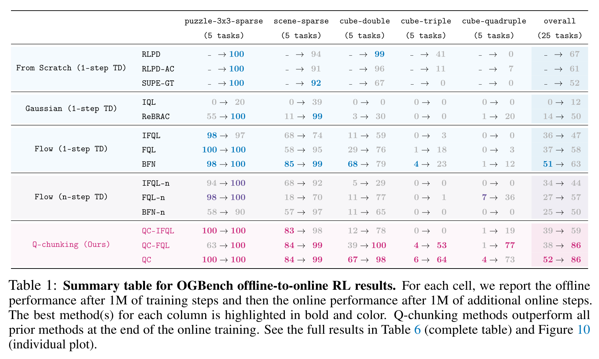

图表说明：PDF p.8 表1每格箭头前后分别为一百万离线训练步之后与再一百万在线步之后的成功率；行组同时区分Gaussian、flow、n-step与chunk策略。QC在cube-triple由6到64，cube-quadruple由4到73；这些是域聚合，不能当某一个任务的单次回合计数。
进一步分析：RLPD-AC总体61低于RLPD的67，说明仅将Gaussian策略与critic加长并不足够。BFN和FQL使用表达力较强的flow仍落后于chunk版本，支持时间跨度额外有价值。n-step版本有时初期提高却随后崩溃，对照的是动作域和target的错配。
注意：比较方法使用不同critic数、采样规则及离线阶段，不是所有行只差一个变量；主表需与相应受控消融一起解释。正文的平均数不能直接换算成RLT真实机器人的小时预算。
附录 Table 6 的逐任务表还揭示总体均值没有展示的失败：默认块长五时，QC 与 QC-FQL 在 cube-triple-task5、cube-quadruple-task5 的终点成功率仍为零，而在 quadruple-task4 分别达到 88% 和 94%。因此总体 86% 代表跨任务表现较强，未证明所有长任务都被解决。Table 1 的 QC quadruple 聚合值印为 73%，附录 Table 6 则为 74%，原文没有解释这处差异；本章主表说明维持 Table 1 数字，逐任务分析以附录为准，不自行平均或把它们合成一个更精确的新数值。
长度消融给出更具体的边界。主文 Figure 6 汇总五个 cube-triple 任务，考察 ：平均最终收益增长到十，二十五可能早期更快却最终不及十，五十在该组实验中无成功；其他主实验默认五以控制计算。这是某组任务的聚合结果。附录 Figure 14（PDF p.27）的逐任务分解进一步显示，最难的 cube-triple-play-task5 只有 获得非平凡成功，其他被比较块长均未做到。因此“平均最好”和“唯一能解开最难子任务”可以由不同块长实现，不能把十写成全篇或所有任务的最优值。
附录 Figure 15（PDF p.28）另测最难的 cube-quadruple-play-task4，以五个 seed 比较 和相同跨度的 FQL-n。后者可能在在线初期出现成功、随后崩溃；QC-FQL 则在五、七、九这几个较大块长持续解决任务。这一对照支持“动作条件与回传跨度匹配”有助于稳定性，未检查的长度仍需重新评估。Figure 6 和 Figure 14 的图例还列出十五，而主文扫描文字没有列它；本章按各自图中的实际条件解读，不将所有图无声拼成一个统一扫描。对时间跨度的选择，应同时看平均表现、困难任务覆盖和反馈需求。
十个 critic 可提高 QC/BFN，但通常使用两个；UTD 提高到五没有带来该消融任务上 QC 的样本效率改善。末端连贯性指标每五步取一次三维位置，统计相邻位置差的平均二范数，是停顿/抖动的代理而非安全或轨迹最优性的充分度量。附录 Figure 8–9 同时展示最早九千步与训练后期九十万至九十万九千步的九段轨迹，每格一千步；这让“探索早期覆盖更大”与“最终都能完成任务后如何运动”成为两个可分开的观察。位移较大也可能来自较快速度，论文的代理指标并未独立测量所有动作相关性，更不能直接量化接触稳定性。
数据、算法与 RLT 的连接边界
数据集的难度不能只由“25任务”这个总数表达。附录表2给出scene与puzzle各一百万转移，cube-double一百万，cube-triple三百万，cube-quadruple一亿；episode长度分别涉及500、750和1000步。OGBench动作是五维，包括三维位置、夹爪偏航和开合；robomimic则为七维，增加完整旋转控制。相同块长五对应的动作向量已经从25维变成35维。数据规模、有效时间跨度、动作维度同时变化，主表总体均值不能单独定位收益究竟来自哪个任务属性。
任务内部还有可解释时间结构的差异。scene 的抽屉和窗户由两个按钮锁控制：task2 先解锁、调整两者位置、再锁回去，task4 要解锁抽屉、打开、放入方块、再关闭。puzzle 的九个按钮并非互相独立，按下一个会同时翻转自身和相邻按钮颜色；例如 task2 从全蓝出发，却只要求左上角为红。它们的困难不只在单次抓取精度，而在动作次序和前一步对后续可行动作的影响。动作块可以从已有轨迹继承局部顺序，但不会自动完成跨越多个块的逻辑规划；长任务的成功仍需 critic 把多个片段的后果联系起来。（附录 B，PDF pp.17–19。）
robomimic使用六位操作者收集的multi-human数据，每项包含300条成功轨迹，但lift、can、square的总转移分别为31127、62756、80731。这里“同为成功示范”并不意味着动作速度和风格一致，恰好是需要联合行为表达的情形。square要求把方形螺母套到略小的杆上，precision与长时信用都可能影响结果。把这些成功轨迹无条件称为最优策略会漏掉作者的问题：好的探索应继承动作组织方式，同时通过在线经验超过原数据，而不是永远复制它。
RLPD类从offline和online各取一半，QC/FQL/BFN类则直接从合并数据集中采样；早期同一份online轨迹在两种规则下权重可能相差很大。RLPD类还使用十critic，主QC通常仅两critic。因此跨家族排名同时包含采样和计算差异。论文专门设置BFN、BFN-n、QC及FQL、FQL-n、QC-FQL这样的近邻对照，才较能隔离时间扩展作用。读者不能把整张表的所有差异都归功于块长，也不能因为存在这些工程差异就否认受控近邻对照的证据。
附录还公开了容易被“稀疏任务”抹平的条件：scene/puzzle未完成为−1、完成0，cube奖励为位置错误方块数的负数，后者具有阶段信息；不能统称每项任务都是终点0/1。cube-quadruple的100M离线数据在离线阶段分批加载，QC等在线仅固定其中1M作为初始数据，并非每次更新都读取100M。算法1/2每个原始环境步都写transition并更新，动作只在 时重新选择；回放训练再组装高层片段，不能据chunk Q推断“每块才做一次optimizer”。
与RLT最强的对应是“critic评价真实动作块，TD跨度匹配块长”。差异是QC通过flow分布进行行为约束且在线继续拟合flow，RLT通过冻结VLA采样参考条件与正则约束小actor，并增加token状态压缩；RLT的人工干预、关键阶段起点和50Hz机器人控制不在此定理的默认环境中。对于本项目 RLT 候选代码，还需由固定版本源码分别核实 reference residual skip、当前 reference 是否被复用为 next reference、stride helper 是否实际调用，以及 UTD 循环是否置于 episode 结束后；这些是实现审计问题，本章的 Q-chunking 论文证据不把它们确认为已证明的机制或缺陷。可转移的是如何定义评价对象的思路，不能转移的是未核对的执行时序、物理安全或成功率保证。
ConRFT：在冻结 VLA 表征上，用一致性动作头连接少量示范与在线强化学习
1. 论文解决的是“示范能模仿，却不足以精细接触”的适配问题
ConRFT 的完整题名是《ConRFT: A Reinforced Fine-tuning Method for VLA Models via Consistency Policy》，本章只依据 arXiv:2502.05450v2。作者为 Yuhui Chen、Shuai Tian、Shugao Liu、Yingting Zhou、Haoran Li 与 Dongbin Zhao，论文首页列出的单位是中国科学院自动化研究所与中国科学院大学。它研究的不是重新预训练一个通用机器人模型，而是在目标机器人上只有二三十条示范、又必须进行真实接触操作时，如何利用已有 VLA 提高适配效率。下文的数字均来自该版本正文、附录或明确标记的教学计算，不把源码包里的注释草稿当作论文证据。来源：PDF 第1—2页、引言与问题设定；全文及版本入口（此附件保存在完整本地归档中）。
问题的关键不只是示范少。人在遥操作时可能犹豫、绕路，面对同一插孔采用不同接近角度；对软物体的力度和姿态也未必一致。监督微调把这些动作都当成目标，很难仅凭动作回归判断哪一次接触更可靠、更快。另一方面，离线数据几乎只覆盖人走过的状态，机器人稍有偏移便可能进入未见过的接触区域。插轮子时，视觉上差几毫米就会导致销钉顶住孔边；悬挂中国结时，物体形变和接触力又会放大这种偏差。论文因此希望从任务完成反馈中学习动作质量，同时让在线探索继承 VLA 的已有能力。
这里有两个相互约束的目标。若把真实机器人直接交给从零开始的强化学习，早期随机试探会增加碰撞、损伤和人工接管；若始终紧贴少量示范，又很难发现更好的接触策略。ConRFT 的解法是先用离线的行为克隆与价值学习共同初始化，再以人可接管的在线学习改进同一个动作生成器。它并未消除任务奖励设计和人工参与，而是把这两项资源放在能够影响动作价值与探索分布的位置。这个定位也限定了结论：论文主要证明特定工作台任务上的快速专门化，不提供一个经过多任务在线学习仍保持广泛通用性的最终模型。
2. 真实接口、可训练模块与两阶段信息流
主实验选择 Octo-small，在七自由度 Franka Emika 机械臂上替换为一致性策略动作头。观测由腕部相机的 RGB 图像、侧面相机的 RGB 图像，以及末端位姿、速度、力与力矩、夹爪状态等本体信息组成。语言指令用于指定任务，例如把黄色香蕉放到绿色盘子上。动作以 10 Hz 下发：不需要抓取的任务使用六维末端增量位姿；涉及抓取时再加入一维二值夹爪动作，经下层阻抗控制器执行。这里的七维不是七个关节角的直接输出。来源：PDF 第5页，实验设置；第12—13页，任务附录。
“对 VLA 做强化微调”在本文具有明确的参数边界。局限节说明，当前实现保持视觉编码器与 Transformer 主干冻结，仅训练一致性动作头；价值网络另外学习。离线阶段的动作头和 critic 都随机初始化，再利用预训练主干给出的状态表征学习。因而不能把它写成在线更新整个 Octo，也不能说它保留原 VLA 动作头并在其输出上加一个残差。预训练知识在此主要通过冻结表征与离线任务适配发挥作用，动作头则直接承担新的控制策略。
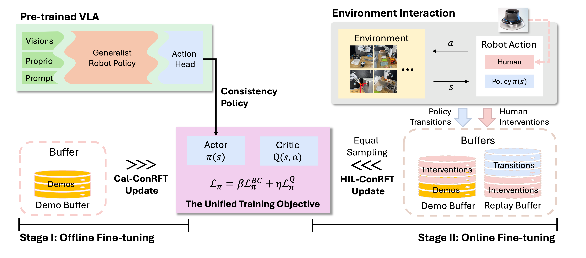

图表说明：原图1位于 PDF 第3页。左侧示范缓存支撑 Cal-ConRFT，右侧真实交互产生策略转移与人工干预，中央动作头在两个阶段都使用“行为克隆加价值引导”的目标。图中的 Equal Sampling 指每个在线批次对两个缓存各取一半。图像直接取自当前版本源码中的 method.png，原始图号、完整英文图注与哈希保存在本章图像清单中。
进一步分析：这张图可以帮助区分三种信息。冻结 VLA 提供对图像、指令和机器人状态的编码；行为克隆提供“人曾怎样做”的锚点；critic 提供“这样做是否有利于较快成功”的学习信号。三者功能不同。若仅增加示范，第三项仍然不存在；若只保留第三项，少量数据又不足以可靠评估所有动作。方法的实用性来自组合，而不是预训练模型单独完成了困难接触控制。
注意：图中的离线与在线共享动作头，不表示视觉主干也在线更新；Equal Sampling 是更新批次的比例，不能当作演示与真实交互的总数据量相同。
3. 一致性动作头究竟学什么
正文式(2)写作
其中 是当前状态， 是参数为 的预训练 VLA 编码器， 是要执行的动作， 是可训练一致性网络参数， 表示扩散噪声尺度， 是与动作维度匹配的单位矩阵。论文用策略分布记号表示经网络映射产生的动作，不能把右端理解成一个已经归一化的密度表达式。动作头接收带噪动作、尺度和状态条件，输出接近目标动作分布的动作。它借鉴扩散模型的表达方式，目的之一是以较轻量的生成头支持真实机器人推理。来源：PDF 第4页，式(2)—(3)（此附件保存在完整本地归档中）。
离线行为克隆部分给出的具体损失是
是示范缓存， 此时是数据中的动作， 是标准高斯噪声， 在离散尺度索引中均匀采样， 控制尺度划分， 是该索引的噪声尺度。这里的距离明确为欧氏范数，正文没有把它平方。这个训练过程把示范动作扰动后再要求网络恢复原动作，提供了直接可学习的监督信号。理解它时不需要假设本文训练了一个能逐帧评估视频的模型，也不应把 consistency 误读为“同一任务所有人必须做出完全相同的动作”。
附录给出 、、调度指数 ，使用两层、隐藏维度256、Mish 激活的 MLP。其边界公式为
这里 是边界索引， 表示下界，附录的 对应此处的噪声上界， 是控制尺度间距的调度指数，而不是问题设定中的初始状态分布。公式以幂次变换在上下界之间插值。正文将采样噪声写成协方差 ，行为克隆扰动却写成 ，两者对“尺度”的参数化并不完全一致；正文还把上界记为 。本章保留这些原文差异，不自行补出一个唯一采样实现。它们不妨碍理解目标结构，却意味着只凭论文无法无歧义重建全部噪声数值约定。
4. Cal-ConRFT 为什么先训练一个校准过的 critic
离线阶段的难题是价值外推。critic 能从示范动作的后果学习，却未必知道未执行过的动作会怎样。actor 若只追逐被高估的动作，可能离开可用数据支持。因此作者使用 Cal-QL 作为离线价值学习基础。正文式(1)为
是当前 critic 参数， 是延迟更新的目标网络参数， 是执行动作后的状态， 是即时奖励， 是折扣因子， 决定保守项强度； 表示参考行为策略， 是它在状态 的价值。第一行将策略所提动作的价值与数据动作价值相比较，并以参考价值校准保守项；第二行用 Bellman 目标拟合真实转移。max 的存在尤其需要注意：当候选价值低于参考价值时，该项对候选价值不再继续提供相同的向下压力，不能简单解释成“把全部动作价值裁剪到参考值以下”。来源：PDF 第3页，式(1)（此附件保存在完整本地归档中）。
给一个只用于理解公式的单样本计算：假设候选动作价值为8、参考价值为6、示范动作价值为7，保守项括号就是 。若学习中的数据动作预测为7，而奖励加折扣后目标为6.5，则其半平方 TD 误差是 。采用附录的 ，总损失在这个简化样本上是0.135。若候选价值降至5，max 取6，而不是继续取5。这组数字不是实验测量，说明的是保守约束与 TD 回归各自的作用，不能据此推导成功率。
但校准并不能凭空补齐状态覆盖。作者报告，只用 Cal-QL、面对二三十条示范时，所有任务的离线成功率都是零。因此 Cal-ConRFT 还需要行为克隆给动作头明确方向。这个负结果把论文与“离线 RL 单独已经解决少量数据适配”的说法区分开：离线价值学习的主要收益是为后续在线改进准备更合适的初始化，而不是保证离线阶段已经显著胜过监督学习。
5. 同一个 actor 目标怎样从模仿转向奖励改进
离线策略目标是正文式(3)
控制模仿强度， 控制价值改进强度。负号意味着最小化损失时，actor 会尝试让自己生成的动作获得更高预测价值。这里被价值评价的是当前策略动作，而行为克隆项对齐的是数据动作，二者通过同一个 发生联系。它没有为每条示范显式打一个“优质”或“劣质”权重，也没有把 critic 优化出的动作先作为一份新标签再单独训练通才。
例如把动作简化为二维，示范动作是 ，去噪网络输出 ，行为克隆距离就是0.5；假设该策略动作的 critic 价值为4。用离线权重 ，单样本目标为 。在线改用 后，同样的距离和价值会形成 。这些教学数字不能用于比较不同阶段的实际损失绝对大小，因为数据与 critic 标度也会变化；它们显示的是奖励项相对模仿项明显增强。
在线策略目标式(5)仍是同一加权形式，但采样分布变成示范与交互缓存的混合。保留行为克隆有两项实际理由：减轻离线能力在在线早期迅速遗忘，以及约束真实机器人突然偏离已有动作范围。它是一种稳定化偏置，不是安全性的数学保证。若 critic 对未覆盖状态给出错误高值，或者示范本身包含有害动作，两个损失的存在都不能自动证明行为安全。来源：PDF 第4—5页，式(3)—(5)。
6. 一次在线学习回合里，状态、人工接管和奖励如何流动
附录算法1把训练与机器人交互拆成两个线程。启动时保留示范缓存 ，建立在线回放缓存 。机器人自主执行时，实际动作和其奖励、后继状态进入 ；人通过 SpaceMouse 接管时，执行的纠正动作及转移进入 。学习线程等在线缓存至少有100条转移后开始更新。批量大小为256，每次从两个缓存各取128条，因此即使在线经历越来越多，示范仍有稳定的采样份额。一次接管既改变当前环境的后续状态，也改变以后抽样的训练数据分布，不能只算成一个额外奖励。来源：PDF 第12页，算法1（此附件保存在完整本地归档中）。
在线 critic 删除离线保守项，采用正文式(4)
式中的并集是数据来源记号，实际采样按前述一比一组织。其余符号沿用离线定义。作者的理由是，在线交互持续产生当前策略附近的经验，缓解固定离线数据的分布偏差，所以改用标准 TD 回归。这个选择仍依赖有限数据与函数逼近，不能由“变成在线”推出所有状态上的价值估计都准确。
奖励由每项任务单独训练的二分类成功检测器提供，训练检测器之前需收集成功与失败样本。附录明确写出：任务完成奖励为 ，每一步奖励为 。只有作为从零训练基线的 HIL-SERL，因为用 DQN 控制夹爪，才另外在每次开合时得到 。不能把这一夹爪惩罚写成 ConRFT 的通用奖励。若把完成奖励与每步代价相加，并暂不折扣，20步完成的回报为9，40步完成为8；100步仍失败则为−5。这是依据奖励文字构造的教学计算，论文并未在本节给出精确终止步计数代码。
人会在碰撞、过大接触力、卡死或难以恢复时介入，帮助策略进入可继续学习的状态。任务初始化则通过脚本或人工重置随机化，范围多为两三厘米。大部分任务最大100步，Put Bread 为120步。推理时动作头直接根据当前冻结表征生成动作，critic 主要用于训练，论文没有要求部署时先搜索全部候选动作。真正的适应发生在反复收集、回放、更新动作头的过程中，而不是单次推理里临时修改主干。
7. 主实验支持的提升，以及不能混在一起的分母
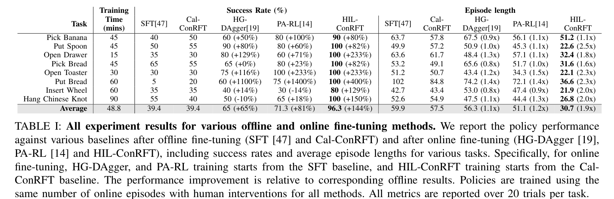

图表说明：原表I位于 PDF 第5页，保留了全部八任务、离线与在线方法、成功率、回合长度及图注。每项任务每种方法评估20次，故单任务成功率分辨率为5个百分点。HIL-ConRFT 的八个成功率依次为90%、100%、100%、100%、100%、100%、80%、100%，共154次成功、160次测试，得到96.25%，表中四舍五入为96.3%。
进一步分析：离线 SFT 与 Cal-ConRFT 的平均成功率都为39.4%，但单任务并不相同。HIL-ConRFT 的相对提升144%来自其相对离线初始化的增长，约为 ，绝对提高是56.875个百分点，不能写成144个百分点。HG-DAgger 与 PA-RL 的均值分别为65%和71.3%；它们从 SFT 开始，HIL-ConRFT 从 Cal-ConRFT 开始，表中增幅分母因此按各自初始化计算。
平均回合长度由 Cal-ConRFT 的57.5步降至30.7步，前者约是后者的1.87倍。更直观的例子是 Put Spoon，从57.2步降至22.6步；Insert Wheel 从43.4步降至21.9步，同时成功率从35%增至80%。这使“更快”不只是以牺牲成功率换来的表面结果。但表中没有充分细化所有失败回合如何进入长度统计，也没有报告各任务长度方差，所以不宜把均值比率进一步解释成精确的全系统吞吐率提升。
注意：单任务二十次评测与训练中的二十回合滑动曲线属于两套统计。八任务平均成功率不是八个独立训练重复的均值，表中的训练分钟数也未包含全部前期奖励标注和示范采集成本。
表中的时间依次为45、45、15、45、30、60、60、90分钟，平均48.8分钟。摘要用45—90分钟概括整体训练，主表却明确包含15分钟的 Open Drawer 与30分钟的 Open Toaster；准确写法应保留逐任务时间，整体范围为15—90分钟。时间包含脚本运动、策略执行和板载计算，使用 RTX A6000，但并非从零开始收集奖励分类数据和示范的端到端工时。表注称各方法使用相同在线回合数，图3另明确 PA-RL 无人工干预，因此不能推断各方法得到完全相同的人工纠正量。

图表说明：原图3位于 PDF 第6页，横轴是训练分钟数，上、中、下三行分别为成功率、人工干预率和回合长度，曲线以20回合滑动平均显示。紫色表示 ConRFT，另外比较 HIL-SERL、HG-DAgger 与 PA-RL。原图存在 Pick Spoon/Put Spoon 等命名差异，以及底行任务标题重复，核对任务身份应结合列位置、正文与主表。
进一步分析：成功上升而接管下降，才支持策略逐步承担原本由人完成的控制；单独提高包含接管的成功曲线无法建立这个判断。回合长度又检验成功是否来自更少犹豫，三行承担不同证据职责。
注意：图注明确提醒，训练期间人工干预可以帮助完成任务，故有干预时的成功曲线不能直接当作完全自主策略的能力。相比只看顶行，紫色成功率提高、干预率趋近零、回合变短的联合趋势更有解释力。这里也没有多个随机种子的置信区间，不能把曲线波动解读成统计显著性检验。
8. 初始化、数据数量和模型扩展分别检验了什么
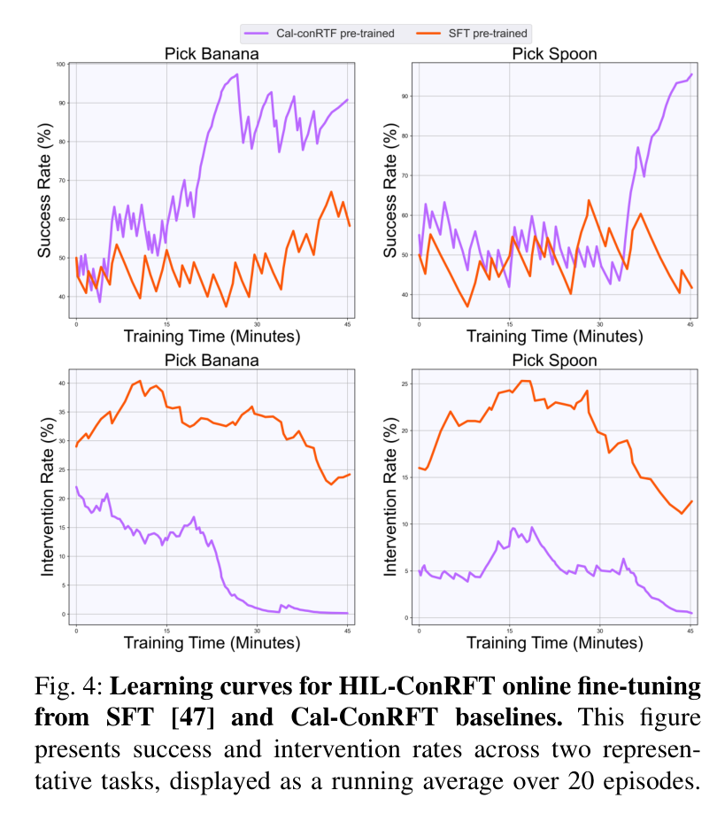

图表说明：原图4位于 PDF 第8页，在两个任务上比较同一个 HIL-ConRFT 在线算法分别从 SFT 与 Cal-ConRFT 初始化出发。紫色为 Cal-ConRFT 预训练，橙色为 SFT 预训练；上排是成功率，下排是干预率，仍以20回合滑动平均显示。后者需要更高干预，前者后期表现更好。
进一步分析：这个消融比“离线平均成功率相同”多了一层信息：初始化质量还包括 critic 是否已具备与动作头协调的价值信号，不能只用上线前成功率衡量。它支持离线联合训练有利于在线衔接，但覆盖的只有两个代表任务，也没有逐项隔离一致性生成结构、冻结方式、价值校准及干预策略的全部贡献。因而不能宣称任一单组件独立解释了八任务的全部收益。
注意：图中仍是训练过程的滑动表现，有干预时不等于完全自主测试；两种初始化也同时改变了动作头与 critic 的起点，无法只由这张图把收益归给其中一个网络。
表II用相同回合预算比较从零的 HIL-SERL 与 HIL-ConRFT，平均成功率分别为31.9%与96.3%。作者同时承认 HIL-SERL 通常继续训练两小时以上也可能学会任务，所以结论是有限预算下预训练加离线初始化更高效，而非从零 RL 无法完成这些操作。HIL-SERL 还具有不同夹爪建模和额外惩罚，因此这不是只改变一个初始化参数的完全同构实验。
表III再检查“只是数据更多吗”。三项任务中，DP 与 SFT 用150条人工示范，RLDG 用150条 RL 策略示范，ConRFT 使用少量初始示范加约80—120条成功和失败的在线轨迹。它们平均成功率依次为41.7%、58.3%、83.3%、93.3%，其中最后一个是在线 HIL-ConRFT；Insert Wheel 上 RLDG 为50%、HIL-ConRFT 为80%。这些数字表明在该设置下，仅增加监督数据仍有差距，却没有把数据收集成本、失败信息与算法差别全部控制成相同条件。表III图注写20条初始示范，而逐任务附录对部分任务写30条，这一版本的不一致需要保留，不能擅自选一个统一数目。
表IV用 RoboVLM 的 Kosmos-2 1.6B 与 PaliGemma 3B 主干在三个任务上扩展验证，平均成功率分别从53.3%、51.7%到100%，每任务仍是20次。它支持动作头方法能用于其他冻结 VLM 架构，但不是所有机器人、所有场景、所有语言泛化都得到验证。三个适配任务上的满分不能取代对未见任务的独立测试。
9. 奖励分类器、冻结表示与可复现边界
论文主动指出奖励漏洞：策略探索形成的新图像分布可能超出成功分类器训练覆盖，导致机械臂把末端放到某个位置就触发误报。此时优化器会忠实提高错误奖励，成功率曲线可能好看而实际动作错误。人工介入能减轻一部分风险，却不能证明分类器在所有后续状态都正确。部署前需要独立检查真正的任务完成条件；这也是阅读任何“真实机器人 RL 高成功率”时都应追问奖励标签与测试标签是否一致的原因。来源：PDF 第8—9页，局限节。
冻结主干提高训练和执行效率，也带来能力上限。若任务失败源于看不清插孔、未知光照、未建模的物体外观，动作头再优化也未必能弥补丢失的感知信息。附录随机化主要在厘米级位置范围内，不能据此推断强视觉域迁移。作者把部分解冻与 LoRA 列为未来方向，并没有在本文用实验证明它们有效。
本章可重建算法层面的关键状态：冻结编码器、随机动作头和 critic、初始示范缓存、100条在线转移门槛、一比一回放、BC 与 Q 权重切换，以及人类动作写入示范缓存。但精确复现还需明确奖励分类器训练量与阈值、噪声尺度实现、每任务训练步数、动作归一化、目标网络更新及干预决策规则。附录给出统一学习率 和批量256，仍不足以替代完整实现。此处是原文能支持的边界，不把尚未检查的外部仓库当作已经验证的运行事实。
10. 与 RLT 的精确机制比较：动作头改造和 RL 状态接口是两条路径
RLT 同样利用冻结 VLA 降低在线学习成本，但它先增加一个编码器—解码器 Transformer，将 VLA 最后层的多个 token 嵌入压缩成一个 RL token。重构目标通过这个瓶颈保留任务信息，重构分支对原 VLA 嵌入停止梯度；可选的 VLA 监督适配属于前一阶段。之后 VLA 和 token 提取器都冻结，轻量 actor 与 critic 才在线更新。因此 RLT 的 token 是供强化学习使用的状态表示，不是夹爪动作、奖励类别或语言词表中的一个离散控制符号。来源：RLT 官方锁定文本，方法节与系统节。
在动作侧，RLT 的 actor 接收 RL token、本体状态以及 VLA 预测的参考动作块，输出整个动作块的高斯分布；目标同时最大化价值并以平方距离约束输出靠近所采样的参考块。critic 的目标累计块内各步奖励，再以 折扣连接下一块， 是动作块长度。参考动作 dropout 用于减少 actor 只复制参考块的情况。参考是显式条件输入，也保留 VLA 多模态动作分布中的模式信息。ConRFT 的一致性头则直接条件于冻结编码表征，没有本文所定义的 RL token 压缩器，也没有把原 VLA 参考动作块作为同样的在线条件。
二者的行为约束对象也不同。ConRFT 的 BC 项对齐缓存中的动作，缓存同时含原始示范、在线经历和人工纠正；RLT 的正则项主要对齐当前样本携带的 VLA 参考块，人工接管时可替换参考，并由回放记录保留实际执行与参考动作。把二者都笼统称作“冻结 VLA 后学残差”会丢失结构差异：ConRFT 更换生成动作头；RLT 设计紧凑状态接口和带参考条件的块级 actor。RLT 的输出公式也不是必须写成固定的 。
比较两篇论文，需要分别问清“在线优化看到了什么”和“在线优化允许改什么”。RLT 的瓶颈改变价值学习所见的状态，参考动作条件和正则改变动作改进的范围；ConRFT 更换动作生成头，以缓存动作的模仿信号协调在线奖励。现有实验使用不同主干、初始数据、奖励、控制频率、生成头和时间跨度，因此不能由两个最高成功率隔离状态接口或动作头的单独贡献。成功率、人工接管量和训练时长也各有自己的分母。这些证据足以说明两种接口如何利用预训练知识，尚不足以建立它们在统一条件下的优劣排序。
RL-100：把扩散模仿策略推向可靠部署，关键在两种时钟与三段数据生命周期
1. 先把“100”读成有条件的实验结果
RL-100 的研究对象是已经能做出合理动作、却仍会在真实接触中偶发失败的视觉运动策略。它没有从零学习所有机器人技能，也没有提出新的通用视觉语言模型。作者从遥操作示范训练小型扩散策略，再用真实机器人产生的数据改进成功率、完成速度和受扰恢复能力。这里最有价值的问题是：当模仿策略已经达到一个不错的起点，怎样把剩余失败逐步消掉，同时让每次硬件交互都能被反复利用？论文把答案拆成模仿初始化、迭代离线改进和短程在线精修，而不是把所有预算压到最后一轮在线探索。原论文 v4，PDF 第 1—4 页（此附件保存在完整本地归档中）
标题中的“100”对应已评估条件下观察到的百分之百成功。八项任务包括动态推 T、敏捷保龄、倾倒、双臂软毛巾折叠、动态旋螺母、榨汁放置、榨汁移除和折纸盒；榨汁的两个学习子任务分别计数。DDIM 策略在八项任务完成 450/450，单步一致性模型 CM 在七项任务完成 550/550，两者合起来才是摘要中的 1000/1000。这不是同一策略在八项任务各执行相同次数，更不能读成任意环境下的失败概率为零。作者对 CM 榨汁移除明确留空，这个空格比一个整齐的均值更能说明部署边界。
两类困难贯穿全文。第一类是行为上的模仿上限：人类遥操作会迟疑、慢速移动，示范也难覆盖滑动、形变和接触切换后的恢复状态。第二类是学习过程本身的风险：视觉表示会漂移，离线价值估计会在数据之外乐观，直接在线更新可能毁掉原有技能。RL-100 因而同时约束“动作怎样产生”“候选更新何时接受”和“新轨迹怎样进入下一轮训练”。理解这三件事，才能判断论文的成功来自哪一层，而不是把结果全归给 PPO 这个算法名。
2. 从点云到动作：任务共用框架，不共用同一个动作维度
每条示范提供视觉观测 、本体状态 和动作 。条件向量把最近若干帧的视觉与本体特征拼接起来，主文给出的典型观测历史长度为二。动作可以是一条控制指令，也可以是长度通常为八到十六的动作块；它们共用扩散学习和后训练框架，输出头的维度随任务变化。主实验主要使用点云，二维 RGB 只是框架支持的另一种输入，在仿真消融中检验。不能因为作者强调支持完整空间姿态，就把推 T 和保龄的控制错误地描述成六维末端控制：附录 S2 明确写的是二维归一化末端位移。方法第 16—17 页；表 S1—S2，第 28—29 页（此附件保存在完整本地归档中）
| 任务 | 点云与本体输入 | 输出接口及其含义 |
|---|---|---|
| 动态推 T、敏捷保龄 | 512×3 点云；六维 UR5 关节状态 | 二维末端平面位移，逐步闭环 |
| 倾倒 | 512×3 点云；七个臂关节加十六个手关节 | 六维臂目标姿态加十六维手目标，共二十二维 |
| 动态旋螺母 | 1024×3 点云；二十三维本体状态 | 上述二十二维再加一维手臂运动使能，使用动作块 |
| 软毛巾折叠 | 1024×3 点云；十五维双臂与夹爪状态 | 两臂位置、四元数和夹爪，共十六维 |
| 榨汁两个学习子任务 | 1024×3 点云；七维本体状态 | 六维臂姿态、夹爪和任务结束信号，共八维 |
| 折纸盒 | 1024×3 点云；十四维本体状态 | 双臂目标姿态和夹爪，共十四维 |
点云并非直接从相机无差别送入网络。附录说明了 Charuco 内参标定、AprilTag 外参转换、机器人根坐标系中的空间裁剪，以及最远点采样。一般处理段落写了采样到 512 点，逐任务表则给出 512 或 1024 点，因此复现应以任务配置为准，不能将一般示例覆盖全部任务。点云只保留几何，图 S1 中的深浅颜色用于展示距离，并非策略输入的颜色通道。对本研究而言，这意味着其跨外观能力部分来自显式几何处理，而非证明一个视觉语言语义表示在任何照明下都稳定。
视觉编码器在模仿阶段端到端训练，并可加入点云 Chamfer 重建、本体重建和变分信息瓶颈正则。重建要求特征仍包含可恢复的几何与机器人状态，瓶颈则限制表示任意漂移。论文在离线内循环明确采用共享且冻结的模仿编码器，只更新模块任务头；另有后训练表示消融比较联合更新、去掉 ReconVIB 和冻结编码器。两处描述的阶段范围不能混成“所有 RL 阶段始终冻结”或“所有阶段都端到端更新”。真正可操作的理解是：表示学习策略也是阶段配置，需要随着数据与优化对象一同记录。
3. 扩散链为什么能被 PPO 更新：把一次动作生成拆成第二层时间
模仿学习先对干净动作加噪，再让网络预测加进去的噪声。为避免环境时间与扩散时间混淆，以下用 表示机器人环境步，用 表示去噪索引， 表示最终动作或动作块。正向过程和噪声预测损失为
其中 是观测历史的条件表示， 是累计噪声日程。部署时从噪声开始，经过 次去噪得到一个动作。在普通模仿中，这条链只是生成程序；RL-100 把链中的每次转移也看成一个可学习的子策略。第 个子状态包含当前带噪动作、去噪索引和环境条件，子动作则是下一份更干净的动作。只有整个链结束，机器人才能执行并获得环境回报，所以链内各步没有独立的物理成功标签。主文第 17 页；附录第 37—39 页（此附件保存在完整本地归档中）
为了给 PPO 计算概率比，训练时必须让这些子转移具有正方差。对从扩散时刻 到更早的 的一次 DDIM 转移，可以写成
这时新旧子策略在相同转移上的高斯对数密度可相减，得到重要性比；固定方差时，参数相关部分就是预测均值与已采样下一状态的平方距离。若把训练方差设为零，这个普通高斯密度便退化为奇异分布，不能继续照抄概率比公式。论文在附录特别区分了训练的随机 DDIM 和部署的确定性采样；“部署确定性”也不应被扩大成整个条件动作分布没有任何初始噪声依赖。
统一目标把同一环境优势 分给产生该动作的全部去噪步骤：
是当前更新所参照的行为策略， 限制一次更新相对它的变化。共享优势的作用是让最终有益动作给整条生成链提供学习信号；它并不意味着作者知道链中哪一小步具有独立因果贡献。离线阶段使用 IQL 得到的 ，在线阶段改用真实新轨迹上的 GAE，但保留同一个裁剪代理目标。这就是所谓统一：统一优化形式，而不是把数据分布、优势估计和接受更新的条件都当成相同。
4. 三段训练的生命周期：离线内循环与真实采集必须分开
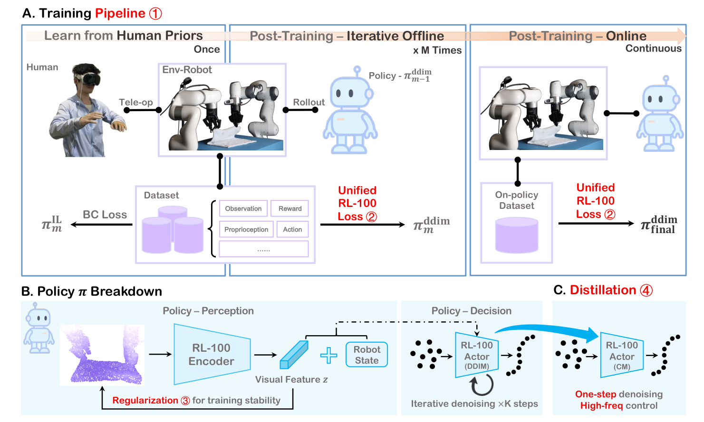

图表说明：原 Fig.6 的 A 区画出示范、迭代离线数据扩张和在线阶段，B 区分开视觉编码器与动作生成器，C 区表示多步教师到单步 CM 的蒸馏。此图取自 PDF 第 15 页，跨页原图注完整保存于图像 manifest。
进一步分析：中间阶段的“离线”修饰每次固定数据上的优化，并不取消各轮之间的机器人 rollout。图中的数据回流正是后训练能持续看到新恢复状态的原因。
注意：图示的统一 loss 不能替代 OPE 接受门，三个阶段也不是一次连续无条件梯度下降。原图中的机器人图标只表示流程位置，不表示完全无人值守。
第一阶段在示范集 上学习一个有用的行为先验。第二阶段每一外轮先在当前 训练 IQL 价值函数和转移模型，再用固定缓冲区做多次保守策略更新。改进策略部署到真实机器人，采到的新轨迹并入 ，随后重新做模仿学习。这个重训并非多余回到原点：它把新增的高质量行为和旧有多模态解法重新压进同一生成模型，帮助模型跟上数据分布，而不是任由纯 RL 梯度逐渐遗忘复杂接触先验。第三阶段再用新鲜的在策略轨迹精修罕见失败，价值函数从离线阶段初始化并继续更新。算法 1 与方法，第 18—20 页（此附件保存在完整本地归档中）
离线阶段额外有一个近似模型 Q 评估门。转移模型 和价值估计共同给出候选策略的代理分数
这里 是数据扩张外轮， 是固定数据上的策略内轮。只有候选分数越过门槛，才把候选提升成下一轮概率比分母所用的行为策略；否则保留旧策略。这个设计抑制在同一数据集上反复 PPO 后逐渐走出支持集的风险。它保证的是按代理评估的接受条件，不是数学上证明真实机器人回报单调不降。转移模型在形变、接触切换和遮挡下的误差仍可能污染判据，因此新轨迹的真实表现与代理分数必须分开看。
动作块还带来另一种生命周期边界。若一次决策执行 个环境动作，对应回报应聚合成 ，下一块的折扣为 。这不是为了方便而随意把多个帧绑在一起，而是更换了价值学习的决策时间单位。如果只把动作拼接起来，却仍然使用单帧折扣，便会把跨块未来估值算错。该细节已经在附录第 39 页说明，无需把它标成论文未披露。
5. 用一个可手算的例子连接价值、裁剪和接受门
以下数字是教学构造，不是论文某条机器人轨迹。假设一个折叠动作块在当前状态的离线估计为 、，因而优势为 。为便于手算，把生成链缩成三个子步骤，新旧策略比依次为 1.40、1.05 和 0.80，裁剪范围取 0.8 到 1.2。三个目标贡献分别是 、 和 ，合计 1.22。第一步虽然把好转移概率提高了四成，可奖励的部分在两成处饱和；这让正优势转移不会因一轮过度放大而支配后续行为。
若同一动作反而有 ，第一步的两项为 −0.56 和 −0.48，取较小值仍是 −0.56。这提醒读者：PPO 的 min 不是把每个样本的梯度简单截平，负优势时方向与正优势不同。把“统一损失”理解成所有概率比都裁到区间内再乘优势，会在这个例子上直接算错。去噪步骤再多，也只共享这次动作的环境优势，不会凭空新增三份成功标签。
即使代理目标提高，还要经过另一层门。假设当前 AM-Q 分数为 100，候选得到 104，增量四小于阈值五，因此拒绝；另一候选得到 106 才接受。这说明 PPO 的局部约束与 OPE 的策略级筛选承担不同责任，一个限制更新幅度，一个判断当前近似模型是否支持整次行为改进。若动作块长为八、单帧折扣为 0.99，则跨块折扣约为 0.9227，而不是 0.99；若成功奖励只出现在块内最后一帧，它在块起点的贡献是 。这组手算把动作生成时钟、环境时钟和数据轮次的作用分开，也揭示复现时最容易混淆的三个索引。
6. 单步 CM 提速解决了什么，为什么也会放大一个任务的脆弱性
多步 DDIM 生成通常需要多次网络前向。RL-100 在后训练中同时训练一致性学生，使学生从某个噪声水平直接预测教师去噪到终点的动作：
是多步扩散教师， 是单步学生，停止梯度保证蒸馏目标不会反过来被这条回归损失随意拖动。教师在另一条 RL 优化支路继续改进，因此学生追随的是不断提升的策略，而不是只在训练完毕后才压缩一个固定模型。部署时学生只需一次前向；它减少的是策略生成延迟，不能把相机、通信、轨迹插值和机器人运动时间一起按 倍缩短。
作者在仿真中报告 3.9M 参数 Skip-Net 的单步模型达到 378 Hz，39.2M 的 U-Net 达到 133 Hz；这属于模型推理频率。真实系统相机有效点云更新率约在 25 Hz 以上，命令通常以 30 Hz 发送，UR5 再插值到 125 Hz、xArm 到 200 Hz、Franka 到 1000 Hz。这些分别是感知、上层命令和底层执行频率。若把 378 Hz 写成整台机器人以该速度获得新图像并重新决策，就会夸大蒸馏的实际收益。附录第 40—44 页（此附件保存在完整本地归档中）
CM 榨汁移除之所以没有评估，是因为从推挤扁橙皮切换到抓取时存在逆运动学引起的姿态不连续，在狭窄、湿滑接触中尤为敏感。这个问题已经出现在示范里，而单步 CM 对噪声更敏感，又将它放大，作者据安全考虑跳过该项。它说明快速采样不自动等于更可靠的接触控制。榨汁全流程还有一个固定回放的压杆步骤：通过动觉示教记录压下与抬起轨迹，部署时重放。因此商场七小时运行是包含学习策略与固定技能的系统展示，不能据此声称整条榨汁流程每一步都由 RL 学会。
7. 成功率如何统计：分母、对照与预算都要能复算
| 任务 | DP-2D | DP3 | 迭代离线 RL | 在线 DDIM | 在线 CM |
|---|---|---|---|---|---|
| 动态推 T | 20/50 | 32/50 | 45/50 | 50/50 | 50/50 |
| 敏捷保龄 | 7/50 | 40/50 | 44/50 | 50/50 | 50/50 |
| 倾倒 | 21/50 | 24/50 | 46/50 | 50/50 | 50/50 |
| 软毛巾折叠 | 23/50 | 34/50 | 47/50 | 50/50 | 250/250 |
| 动态旋螺母 | 41/50 | 35/50 | 47/50 | 50/50 | 50/50 |
| 榨汁放置 | 39/50 | 44/50 | 47/50 | 100/100 | 50/50 |
| 榨汁移除 | 24/50 | 38/50 | 43/50 | 50/50 | 未测试 |
| 折纸盒 | 6/50 | 24/50 | 48/50 | 50/50 | 50/50 |
表中数据逐项来自原表 1（PDF 第 8 页）。按任务不加权的平均成功率从 DP-2D 的 45.3%、DP3 的 67.8% 提高到离线阶段的 91.8%，最后两种已测试策略均为百分之百。折纸盒从 DP3 的 48% 到离线的 96%，倾倒从 48% 到 92%，支持“主要提升已经发生在迭代离线阶段”的解释；同时，每一轮离线之后有真实采集，这些提升不应包装成完全不新增交互的数据效率。旋螺母上 DP-2D 反而高于 DP3，也说明三维输入不是每个任务无条件获益。
成功定义有具体操作含义。动态推 T 要把物块完全插进每边仅宽三毫米的槽；保龄要求打倒六瓶中的超过五瓶；倾倒要求稳定抓握并避免对齐不当造成洒落，偶然弹出的颗粒不计；软毛巾需要展平后两次整齐折叠；折纸盒需要沿正确压痕形成可自支撑结构。毛巾初始化还保证供双臂拾取的两个角可见。这些条件限制了外推范围：面对遮住全部角点的任意衣物或没有预压痕的纸板，论文并未给出同样证据。
预算也有一处版本内差异。正文第 13 页给出的汇总是 804 条示范/12.5 小时、3965 条离线采集/45.3 小时、3037 条在线采集/39.5 小时；它们恰好等于附录 S3 前七行之和，未包含折纸盒。将 S3 八行全部相加，则分别为 1004 条/15.5 小时、4573 条/54.6 小时、3223 条/42.5 小时，共 112.6 小时采集。正文“总计不足一百小时”不能直接应用于包含折纸盒的完整八项任务套件。这里保留原文差异并给出复算，既不删掉新增任务，也不把旧汇总悄悄当成新版总成本。
8. 效率、泛化和干扰：三个证据边界不能混用
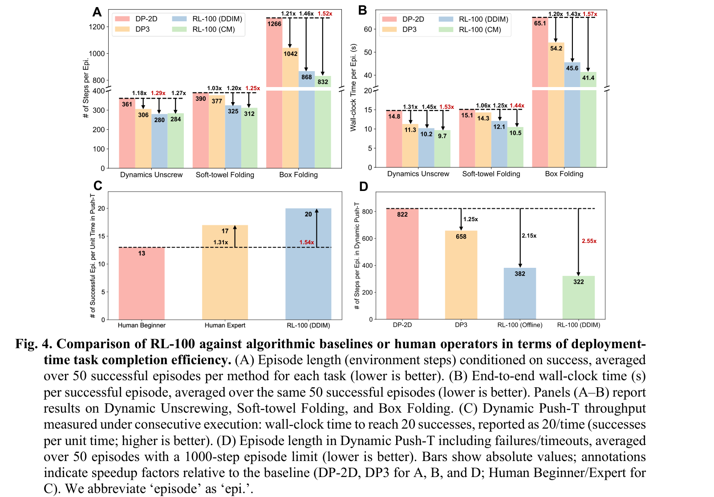

图表说明：A、B 分别比较五十次成功回合上的环境步数和墙钟时间；C 比较动态推 T 连续执行的成功吞吐；D 在五十回合中纳入失败与超时，上限为一千步。A、B 的分母是成功回合，不能与 D 的所有尝试混为一谈。
进一步分析：折纸盒步数从 1266 降到 832，墙钟从 65.1 秒降到 41.4 秒；DDIM 为 45.6 秒。由 DDIM 到 CM 的实际加速约 1.10 倍，远小于单独生成器的十步到一步，符合感知和执行仍占时间的系统事实。
注意：只统计成功轨迹会遗漏失败成本。D 中从 822、658、382 到 322 步的序列，补上了 DP-2D、DP3、离线与在线策略在所有尝试上的效率比较，但仍只针对动态推 T。
原图让“学会更短的行为”与“更快地生成同类行为”有了两个可区分的观测。折纸盒既减少执行步数又降低单次推理等待，因而总体收益来自策略与系统两层。对人的比较也有受控范围：同样墙钟预算下动态推 T 完成数为机器人二十、示范专家十七、初学者十三；另一个桌面保龄对比是双方各二十五次，机器人二十五次成功、人类十四次。它们支持特定技能上的效率或成功优势，不是对所有人类操作能力的全面比较。
表 2 的零样本扰动分成六种变体：坚果改水 90%、推 T 换表面 100%、增加干扰物 80%、保龄换表面 100%、毛巾换形状 80%、纸盒换形状和朝向 90%，不加权平均为 90%。其中纸盒测试主轴与双臂轴夹角在六十到九十度，示范通常集中在负三十到三十度。该对照确实增加了几何分布偏移。少样本适应另需每种变体一至三小时：新倾倒容器 60%、新毛巾 100%、倒置瓶阵保龄 100%，平均 86.7%。不能把这组重新训练后的结果写成零样本。
外力实验又是另一组条件：毛巾抓取与预折叠各 90%，旋螺母、推 T 和纸盒均 100%，五项平均 96%。旋螺母测试包括最长四秒的反向阻力，纸盒包括拖拽、推动和触碰。表 2 没有逐格给出试验分母或置信区间，故这些比例的统计精度不能照搬表 1 的五十次设置。商场七小时展示提供长运行与新场景证据，但没有公开同样细分的用户数、完整周期数和逐事件失败日志，不能把“小时”转成新的独立成功分母。
9. 消融解释了哪些机制，又留下了哪些归因问题
附录用 MuJoCo 三项、Adroit 三项和 Meta-World 四项共十个仿真任务比较 DPPO、ReinFlow 和 DSRL。图 S6 标注三个随机种子、均值及百分之九十五置信区间；MuJoCo 使用本体输入，Adroit 和 Meta-World 使用三维视觉与本体输入，基线沿用各自论文的输入模态。它支持框架在不同连续控制任务中的适用性，但并不是完全相同感知与骨干规模下的算法隔离实验。真实机器人主表的基线则主要是模仿策略，不能直接把仿真的 RL 方法排序移植成真实硬件上的受控胜负。附录第 39—42 页（此附件保存在完整本地归档中）
图 S8 把消融集中在 Adroit door，同样使用三个种子。三维输入相较二维学习更快，作者解释为几何裁剪更容易隔离门把与接触区域。去噪随机性的裁剪防止探索过大和过早消失：正文配置说明单动作与 Adroit、MuJoCo 使用 0.8，块动作与 Meta-World 使用 0.1。该数值还须满足随机 DDIM 的方差可行域，不能理解成每种噪声日程都可以无条件强设相同标准差。CM 与 DDIM 曲线相近，说明在该任务中蒸馏保留性能；这不取消榨汁移除已经暴露的反例。
噪声预测与直接干净动作预测的对照尤其值得读。门任务最终成功约为 1.0 对 0.6，作者把噪声参数化带来的额外随机性视为链内结构探索。对每个环境时刻做一百次前向测得，Hopper 的干净输出方差分别为 0.1316 与 0.0870，Door 为 0.0589 与 0.0290。这个观测解释了为什么模仿阶段偏好低方差的直觉未必适合 RL 探索，但它并不证明方差越高越好；合适的噪声界限与行为先验仍然必要。表示消融则显示重建加瓶颈的联合适配更稳定，强调学习表示本身也会影响后训练成败。
仍需保留几处审慎判断。主文没有通过真实硬件上的逐项独立去除实验，把 OPE、重做 IL、去噪优势共享与 CM 的贡献全部隔离；观察到整套管线有效，不等于每一组件都已在八项任务上完成因果证明。近似模型门也有误差，连续成功样本之间可能共享初始化和操作条件。即使理想化为独立同分布试验，450 次零失败仍只意味着百分之九十五单侧失败概率上界约为 0.66%，而不是零；这是由二项模型计算的解释性上界，不是论文报告的统计结果，更不适合跨任务异质样本直接证明普遍可靠性。
10. 放到 RLT 旁边看：可借鉴的是阶段设计，改进接口则根本不同
RL-100 与 RLT 都试图避免在昂贵真实交互中从头搜索，但它们把在线可塑性放在不同位置。RL-100 的核心对象是扩散策略的去噪子策略，离线阶段还训练价值与转移模型，再用 OPE 决定何时推进；RLT 在完成初始适配之后冻结 VLA 和 RL token 表示，在线训练小型动作块 actor-critic。RLT 的 actor 同时接收压缩表示、本体状态和 VLA 采样的参考动作块，并用距离参考的正则保持局部改进。它直接输出连续动作块，不是学习去噪概率比，也不是仅仅控制扩散初始噪声。RLT 锁定来源，第 3—5 页（此附件保存在完整本地归档中）
这一区别改变了价值误差被放大的方式。RL-100 要确保每个去噪转移的概率与行为分母相容，同时用模型门控制离线迭代；RLT 要防止小 actor 对参考动作只复制而不改进，因而使用参考动作 dropout，并让评论家评价执行的动作块。前者可以直接重塑原生成策略，后者把大模型看作稳定表示和行为提案。若目标是在固定 VLA 部署栈上快速学习，不能只摘取 RL-100 的“PPO 更稳定”结论就改动整条去噪链；应先判断系统是否保存相应随机转移、是否具备可用于 OPE 的模型，以及重训预算是否可承受。
更可迁移的是对阶段和指标的管理：先获得安全起点，让新交互进入可复用缓冲区，在正式评估中分别报告成功率、成功条件完成时间和含失败吞吐。奖励与重置依然需要如实计费。RL-100 除动态推 T 的密集奖励外，大多数任务由人按键标记终点成功，并加步长与动作抖动惩罚；其讨论明确承认自主 reset 和 recovery 仍是瓶颈。RLT 也有人的终点奖励、可选人工接管和重置操作，主文受控比较的五十回合不能扩张成长期无人运行证据。两篇共同支持的是在明确任务条件下逐步提高可靠性，而非已经解决任意场景的完全自主闭环。
复现层面，RL-100 附录已经给出传感器、动作维度、奖励组成、分块折扣、随机 DDIM 密度以及低层插值频率，不能把这些全部笼统归为未知；仍需由具体实现确认的是各任务完整超参数、轨迹中去噪样本及行为概率的保存方式、OPE rollout 长度和真实 reset 工程。本章完成的是锁定论文及其附录的机制重建与证据审读，未把算法描述伪装为已训练出的 checkpoint，也未把代码接口推测当作实际执行结果。
PLD：先让残差专才学会补救，再把部署附近的数据蒸馏回通才
1. 研究对象是数据如何回流到通才，而不只是专才怎样获得高分
本章阅读的是 arXiv:2511.00091v1《Self-Improving Vision-Language-Action Models with Data Generation via Residual RL》。方法名 PLD 是 Probe, Learn, Distill，中文可理解为探测、学习、蒸馏。Wenli Xiao 与 Haotian Lin 为共同第一作者，作者群来自 NVIDIA、CMU、UC Berkeley 与 UT Austin。该版本把两个问题连接起来：怎样借助现有 VLA，较快训练任务专才；以及专才收集什么数据，才能通过监督微调真正改善一个仍需承担多任务的 VLA 通才。后一个问题是全文的主要辨识度，不能把 PLD 归纳为“给 VLA 加一个残差策略便结束”。来源：PDF 第1—3页，摘要与引言（此附件保存在完整本地归档中）。
人类遥操作示范通常来自人熟悉的状态：抓住物体、沿稳定路径运动、完成目标。部署的 VLA 却会犹豫、把物体推偏、碰到桌角，进入示范很少覆盖的状态。假如继续收集一批流畅的人类成功轨迹，动作质量提高了，分布缺口仍可能存在。另一方面，一个收敛的 RL 专才可能总以同一条短路径完成任务，它的轨迹同样不包含通才常见的偏差。因此，“专家比通才强”和“专家数据能教会通才”之间并没有自动成立的推理关系。
PLD 据此把数据收集与当前通才耦合：先让通才实际走一段路，暴露它会遇到的状态，再由专才把这些状态恢复成成功。对于被推到角落的方块，学习价值可能恰恰在于怎样重新摆正和抓取，而非再看一次从桌面中央干净抓起的标准示范。论文的主张是这种部署附近的恢复数据有利于 SFT，现有证据主要来自受控仿真与若干实机任务。它没有证明所有状态都能被恢复，也没有把“没有新增专家示范”扩展成“整个系统不需要人类数据、奖励标注或环境准备”。
2. 三阶段在训练谁，最后部署谁

图表说明：原图3位于 PDF 第4页。左侧是冻结通才与残差 RL 结合的任务专才；中间是先执行基础策略、再接管的混合轨迹；右上用多任务 PLD 数据对基础 VLA 做监督微调；右下是微调通才的部署。图上出现四个编号，是把部署也画成一步，论文的训练流程仍称三个阶段。原图直接来自锁定源码 PLD-Framework.png。
第一阶段为每个任务学习轻量残差 actor 与 critic。基础策略 保持冻结，包括产生基础动作的完整 VLA 路径；残差学习不会反向更新该通才。第二阶段用已学专才制造数据，接管发生在通才运行若干步之后。第三阶段把多个任务的成功混合轨迹聚合，对基础 VLA 做通常的 SFT。最终返回的是更新后的 ，并非必须同时挂载所有任务专才的复合策略。这个顺序解释了标题中的自我改进：通才提供探索先验，专才将其失败附近变成可用监督数据，通才再吸收这些数据。
进一步分析：冻结范围必须随阶段描述。说“PLD 冻结 VLA”只覆盖专才获取阶段；蒸馏阶段显然需要更新通才，论文使用 LoRA 微调。反过来说“PLD 用在线 RL 更新 VLA 参数”也不准确，在线 RL 梯度主要落在残差 actor 与 critic 上，通才随后通过监督目标吸收技能。数据传递而非梯度直通，是两个阶段之间的接口。它既降低单任务 RL 的优化负担，也允许对不同动作头使用各自已有的监督训练流程。
注意：图中的四个编号包含部署，不能据此说训练增加了第四阶段；最终通才的表现必须从蒸馏后的测试读取，专才的高成功率不自动转移给它。
3. 观测、动作与残差价值学习的数学接口
论文首先描述语言条件、部分可观测的操作过程。通才输入 RGB 图像、本体观测 和目标语言 ，输出六维末端增量位姿加一维连续夹爪指令，共七维动作：
是视觉语言主干， 是动作头， 为两部分参数。仿真默认基础模型主要是 ，还验证 OpenVLA 系列；SimplerEnv 主表列出的是 Octo-SFT 及其 PLD 改进，不能把所有结果都归到 。RL 模块的 actor 和 critic 使用预训练 ResNetV1-10 提取视觉特征，并配合三层、隐藏维度256的 MLP、高斯策略及带 LayerNorm 的双 Q 网络。这不等于从 VLA 内部抽出一个专用 RL token。来源：PDF 第3—5页与第25页；方法及实现附录。
目标条件强化学习的原文式(1)是
为算法层面的状态， 为初始分布， 为环境动力学， 为任务目标分布， 为折扣。奖励是成功判定的稀疏二值量，写为 ： 提取与目标相关的信息， 是判别距离， 是容差，指示函数成立取1，否则0。这是形式化表达，并不意味着实机真的用几何距离统一判定全部任务；实机使用分别训练的奖励分类器。主实验不加每步生存惩罚。
残差策略接收状态与基础动作，产生 ，实际执行的是
这里 表示组合策略， 控制归一化残差幅度范围 。与之对应的正文式(2)为
预测执行组合动作后继续按组合策略行动的回报，目标网络用于稳定 bootstrap。后继动作仍来自组合策略，不是把当前残差无限重复。附录算法用 SAC 目标更新残差 actor，并以 Polyak 平滑更新目标 critic；正文没有完整列出带熵温度的 actor 损失，读者不应把自己熟悉的某个 SAC 实现细节当成已由本文验证的唯一代码。
用一个七维动作中的单坐标说明：若基础动作归一化后为0.30，残差为−0.08，则实际命令为0.22；它不是重新计算出的基础动作0.30再加一次0.22。若当前转移奖励为0、、下一状态动作价值为0.8，Bellman 目标就是0.792。若这是终止成功转移，通常应屏蔽后继 bootstrap，目标为1；这里的终止屏蔽是对成功终止设定的算法解释，不能冒称正文式(2)显式写出了 done mask。
4. 专才怎样启动：成功缓存、在线缓存与受控探索
第一阶段先运行基础策略，只保留成功轨迹填入离线缓存。主要仿真比较中，每任务收集50条成功轨迹，用 Cal-QL 初始化 critic。随后保留离线缓存，再建立在线缓存，每个批次一半取自离线、一半来自在线。这样 critic 不会因为早期失败多，就完全失去成功状态的价值锚点。原文称成功筛选起到 importance sampling 的作用，但没有给出重要性权重或密度比，因此更准确的操作描述是按成功条件筛选数据，不应据此宣称得到无偏的重要性采样估计。来源：PDF 第5—6页及算法1（此附件保存在完整本地归档中）。
成功缓存也揭示一个启动门槛：基础策略需要有非零成功机会，否则这一步无法按原流程得到所需数据。若把各次尝试近似看作成功概率固定且独立，成功率10%时收集50条成功轨迹平均需500次尝试，成功率1%时则约需5000次。这是用于理解采集成本的概率计算，不是论文报告的实际尝试次数。所谓50条初始化轨迹只记录保留下来的成功数据，不能直接当成全部环境交互预算；失败尝试的工时和重置成本需要另外计量。
在线开始前还有仅使用基础策略的 warm-up，减轻随机残差立即破坏已有行为。实现表给出 warmup 为100回合、批量256、缓存容量250000、折扣0.99、学习率 、AdamW 优化器、梯度裁剪范数1。critic 对 actor 更新比例为2，双 Q 的目标更新率为0.005。这里的100回合 warm-up 与之前50条成功初始化轨迹是不同流程与不同计数对象；不能把它们相加成150条成功示范，因为 warm-up 未被限定全部成功。
残差幅度是一项探索假设。太大时，原本还算合理的基础动作被打乱，策略初期性能下降；太小时，又无法从基础策略附近走到更优动作。附录建议 LIBERO 使用 、SimplerEnv 使用0.1，统一超参数表则列0.5。方法叙述提到调度器，当前文本没有提供完整随训练变化的日程，因此章节不能自行编造从零线性升到某值的调度。需要复现时，应把幅度、动作归一化和最终裁剪视为必须进一步核验的接口。
专才 actor 没有显式行为克隆约束，允许在价值信号引导下超过基础策略；但这并不表示没有先验约束：基础动作条件、残差幅度与离线成功回放都在塑造探索。附录中 Cal-QL 显示公式把平方 TD 项写成负号，并缺少常见的数据动作补偿项，与紧接的“最小化 TD 误差”叙述矛盾。它可以支撑作者使用校准保守初始化的意图，不能直接按该排版式最小化损失实施。本章没有把这种原文符号问题悄悄改写成经过代码确认的公式。
5. Probing 为什么要发生在专才接管之前
一个只从标准重置状态起步的专才，可以用很短的统一轨迹成功，却未必会处理通才把物体推偏后的状态。PLD 因此先让基础策略运行随机步数，得到新的初始分布 ，再训练或调用专才。用于训练专才的这段 probing 前缀仅作状态初始化，不加入 RL 回放；而用于最后 SFT 的混合示范则同时包含通才前缀与专才恢复后缀。这两种用途不能混为同一个缓存写入规则。来源：PDF 第5页，第3.2节；第18页算法1。
附录给出混合控制的清晰定义：
是基础策略独立运行的步数。分析实验采用 ， 为回合时域， 决定最长 probing 比例。正文混合轨迹集合却把后缀动作印成 ，与已定义的 及算法1冲突。这里依据明确的组合动作定义和分段算法解释，实际后缀是基础加残差一次，不能将基础动作重复相加。
例如令时域为200步、，则 probing 最长120步；某次若采到75步，前75步由基础策略独立执行，之后专才在该次实际到达的偏差状态开始恢复。若最终第145步成功，这条 SFT 示范包含通才曾走偏的过程和后续70步补救。这个教学例子的145步不是论文统计值，而是说明为什么“更长轨迹”在此未必代表更差训练数据。对于学恢复能力，偏离后再纠正的状态覆盖具有标准最短轨迹不具备的信息。
这种设计也有边界。probe 太晚可能使物体掉落、夹爪卡死，或者剩余时域不足；只保留成功混合轨迹还会过滤掉无法恢复的状态。论文在 LIBERO-90 的0—9号任务上改变 ，图11显示性能到0.6附近达到平台，继续增加会下降。它支持“恢复多样性与难度需要平衡”，不支持“越多失败状态越好”或“0.6是所有机器人通用最优比例”。
6. 蒸馏并不是复制专才网络，而是监督学习实际动作
第二阶段聚合成功混合轨迹形成 ，第三阶段用其中的观测、语言与实际动作更新通才。对自回归动作 token，论文给出
为观测与目标， 为动作编码后的 token 序列， 是序列长度， 是此前 token。负对数似然要求通才在这些恢复状态下提高已执行有效动作的概率。对扩散头，原文使用
这里为避免与机器人控制步混淆，把扩散训练时间记成 ； 是加噪采样， 是噪声动作，网络学习估计噪声。对 flow matching，论文说明学习连续速度场并用 流匹配损失，但本版本并未在 PLD 方法节给出完整的路径与时间参数化公式。OpenVLA-OFT 的连续动作训练还可使用 回归，因此“适用多种头”是复用各架构监督接口，不是它们最终共享同一个去噪目标。来源：PDF 第3—4页，第2.2节。
假设某个恢复动作的目标 token 在当前条件下概率仅为0.2，其负对数似然约为1.609；训练后概率到0.5，对应约0.693。这组教学数字说明，蒸馏改变的是通才在恢复状态下输出有效动作的条件分布，并非把 critic 值作为动作标签，也不是部署时让专才实时替代所有决策。最终通才面对新的图像与语言仍独立生成动作，泛化能否发生取决于它从这些监督样本中学到什么。
实现附录称使用八张 NVIDIA L40、LoRA rank32 微调 与 OpenVLA，其他超参数沿用各开源默认值。因此“轻量专才”不能被扩大成整条 PLD 流程只有小网络成本，蒸馏仍需大型 VLA 训练资源。对于完整端到端复现，当前文本缺少每项结果对应的全部数据量、SFT 步数和精确 checkpoint 标识；本章仅陈述版本中能确认的训练资源和接口。
7. 专才学习曲线支持样本效率，不能代替最终通才测试

图表说明：原图5位于 PDF 第7页，比较 LIBERO-90 中八个选定任务，横轴为 actor 交互步数，预算250000步；纵轴为100回合滑动窗口平均回报，在稀疏二值成功设定下对应成功比例。每条曲线汇总三个随机种子，阴影为95%置信区间。绿色 -PLD 同时利用基础策略与混合回放，蓝色去掉基础模型，紫色为 RLPD，深绿色为修改后的 WSRL。
进一步分析：曲线的早期下降恰好暴露残差探索的代价。例如基础策略本来能完成一部分任务，随机残差开始偏离后，成功率会先降再升。多个任务中，带基础策略的 PLD 在低交互预算下明显领先；也存在后期蓝色或其他方法接近它的任务。因此证据较强地支持的是先验降低探索成本，而非每一任务每一时刻都保持严格优势。
比较条件尽量统一：各算法使用同一批基础策略成功轨迹、相同网络架构与 SERL 框架。RLPD保留混合数据回放，但没有基础动作引导；WSRL 使用离线预训练后丢弃离线数据、warm-up，再在线学习，本研究还修改了其实现。因此这不是直接照搬所有原始论文最优设置的大排行榜，而是为当前场景构造的机制比较。WSRL 一次改变了不止一个因素，不能将 PLD 对它的差距全部归于残差。
正文第4.1节报告，所用于微调性能实验的120多个操作任务，专才渐近成功率均超过95%；引言还有“高于99%”的概括。读取时应优先保留具体实验节的限定，不能把它们强行写成“120多个任务最终全部99%以上”。这些是组合策略专才的数据生成能力，不是 SFT 后通才在完整 LIBERO 所有任务上的统一成功率。八任务三种子曲线的置信区间也不能自动转移成后续通才表格的误差条。
注意：横轴记录这组仿真的交互步，不包含后续大 VLA 蒸馏的全部算力，也不是实机两小时预算；三个种子覆盖的是图中所选八任务。
8. 最终通才的分布内结果：99.2%具体指哪一项

图表说明：原表1位于 PDF 第7页，评测 Spatial、Object、Goal 三个套件，各10项语言条件任务；文中规定每任务50回合。因此每个套件名义评测量为500回合，三套件为1500回合。表中比较的是基础 VLA 的 SFT/OFT 基线与继续用 PLD 数据训练后的通才，已不是图5中的残差专才。
的三套件成绩从95.2%、97.6%、87.4%变成97.7%、98.5%、95.3%，平均由93.4%到97.2%，提升3.8个百分点。OpenVLA 列由92.9%、99.1%、83.25%变成99.5%、99.1%、98.9%，平均91.8%到99.2%。因此“接近99%”最直接对应这三个套件上 OpenVLA 的蒸馏结果，不能当成 、LIBERO-90、长时域测试和全部130任务统一达到99%。部分数值含小数，使其无法直接还原成单次500回合下的整数成功数；正文没有足够说明种子或多轮汇总方式，本章不虚构精确成功次数。
进一步分析：最大改善集中在基线较弱的 Goal 套件，OpenVLA 从83.25%到98.9%，约提高15.65个百分点；表格四舍五入为15.7。这比只报告均值更能说明方法所补的缺口。Object 原本99.1%，PLD 后仍99.1%，也说明效果受初始能力和任务难度影响。表格未给误差区间，所以接近饱和时几个小数点的差异不宜被解读为稳定排序。
注意：此表是三个套件上的最终通才结果，不覆盖全部 LIBERO-90 或后面的 one-shot 长任务；表中小数不能在未交代汇总方式时强行还原成一组整数成功次数。

图表说明：原表2位于 PDF 第8页，四个任务为 WidowX 抓茄子、抓胡萝卜、Google 机器人开抽屉与抓可乐罐，基线标为 Octo-SFT。平均成功率由71.8%到96.6%，根据展示值计算增加24.8个百分点、相对约34.5%；表中平均增量写24.9，可能涉及未显示小数的舍入，原文没有进一步说明。
进一步分析：同一数据回流思路在不同基础架构上产生收益，说明它不限于一种动作头；改善幅度随初始能力变化，较弱的胡萝卜任务贡献了更大的均值增量，已较强任务的提升空间则较小。
注意：摘要的“超过50%提升”不应写成四任务平均绝对增益超过50个百分点。胡萝卜任务确实从43.3%到93.9%，增加50.6个百分点；相对增长约116.9%。茄子增加32.3个百分点，另两项增加6.8与9.8个百分点。必须明确任务与计算分母，才能判断提升集中在何处。本文称未新增人工示范，是相对已有基础模型及初始化数据而言，不抹掉它们原先依赖的人工数据。
9. 跨任务覆盖、少样本与长时域是三种不同泛化测试

图表说明：原图2位于 PDF 第2页，横向比例是训练覆盖的不同任务占 LIBERO-90 的比例，纵向包含所有90任务，颜色代表成功率。训练只覆盖10%时是9项任务，剩余81项属于未见任务；不是只使用10%的轨迹。每个覆盖水平抽取四个子集并平均，评测始终覆盖90项任务，具体数值见附录表3。
覆盖10%时，PLD 数据训练的通才在已见任务为94.1%，未见为24.4%，整体31.4%；人工数据对应79.6%、21.4%、27.2%；基础策略成功回放对应52.3%、5.6%、10.3%。按任务比例加权，，与整体31.4%吻合。这个计算校验了分母，也显示整体分数在低覆盖时主要由81项未见任务决定。图中“全任务评测”并不意味着它们都参加了训练。来源：PDF 第18页，表3（此附件保存在完整本地归档中）。
进一步分析：低覆盖时总均值由大量未见任务主导，已见任务显著提高仍可能只形成有限的整体增益。把两类任务分开，才能区分学会已训练技能与保持跨任务迁移。
随着覆盖变化，PLD 对已见任务的优势较稳定，但未见任务并非总超过人工数据。覆盖60%时，未见成功率分别为28.3%和28.6%，人工略高；覆盖100%时没有未见任务，PLD 整体87.1%、人工81.5%、基础回放48.8%。因此证据支持保留与优质人工数据相近的跨任务迁移，并明显改善已见任务，不能夸成已经获得普遍的新任务解决能力。原图图注称四个子集“disjoint”，在80%覆盖时四个子集不可能彼此完全不交叠，正文也未给采样细节；可确认的是四次子集平均，不能由该词推导严格互斥划分。
注意：横向比例是任务覆盖而非轨迹抽样率，百分之百覆盖时“未见”分母为空；图注的互斥措辞与高覆盖设置也需要按上文保留边界。
少样本跨域实验把 LIBERO-Goal 的源任务数据从50扩到500条，并对语义相关的 LIBERO-90 目标任务提供少量人工示范再训练。这个测试不是零样本，改善可能同时依赖源技能迁移和目标示范。长时域实验则先在 LIBERO-90 上训练，再给每项 LIBERO-10 长任务一条人工示范，是 one-shot 设定；图6显示 PLD 优于基础策略自举，却仍低于人工专家数据。它暴露了恢复数据并不自动等同于长程技能组合能力。
轨迹可视化支持“更接近基础策略且包含多样恢复”的解释，但论文没有给出一套可量化的状态分布距离，证明所有泛化收益都由分布对齐造成。正文把较少遗忘作为经验假设，不能升级成已验证的 KL 定理。图10图注还写每方法20条抓碗轨迹，而相邻正文写50条开抽屉轨迹；该版本证据存在不一致，适宜把它作为定性展示，精确轨迹数量和任务名需进一步核验。
10. 实机证据、消融与“自主”的实际边界
Franka 实验先收集200条遥操作轨迹对 做 SFT，再无人工接管地训练 PLD 与 RLPD 专才；二者在两个任务上都于两小时内达到文中报告的100%。随后每个已学专家自动收集200条成功示范，比较这些数据回灌给通才的效果。每任务随机评测30次时，插销任务各方法都是30/30；抓方块时 PLD 数据为30/30，RLPD 数据为16/30，人工数据为10/30。专才都学会任务，但教回通才的质量差异很大，这正是全文要证明的第二个问题。来源：PDF 第9页，第4.4节（此附件保存在完整本地归档中）。
实机输入包含腕部与侧面相机、本体感知，Franka 使用20 Hz末端增量位姿控制。每任务奖励分类器借助成功与失败图像训练，附录称用假阳性样本扩充直至达到99%水平，却没有给出这一分类指标完整测试集分母与校准曲线，不能把它等同于机器人任务成功率99%。抓方块通过专门桌面实现自动重置，插销训练仍需人移动孔位增加随机性。因此自主指特定环节可无接管地执行，并未消除全部环境维护。
未见实景测试更具区分力：杂乱环境蓝方块为28/30对人工数据12/30，红方块为20/30对10/30；插销仍30/30对30/30。红色新物体只有66.7%，不能和干净环境30/30合并宣传全场景满分。YAM 双臂显卡插拔另采用四阶段状态机、每子任务最多八小时训练，并蒸馏为一个 BC 策略；系统连续运行一小时无人工重置，正文明确每阶段单次成功率并非100%，失败恢复保障持续运行。连续运行时长与逐次成功率是两种可靠性证据。
附录消融还说明奖励偏置过大会阻碍学习，小偏置只在八任务中的两项加速；主结果不使用该 shaping。Cal-QL 初始化相对 CQL 更稳定，后者有严重遗忘；残差幅度过大损害早期、过小限制探索。参数同步频率在1到500个梯度步之间总体不敏感；OTF 在固定基础动作下多采残差动作取高 Q，可提高样本效率，样本数大于20时增益更明显，但渐近性能趋同，默认仍为1。JSRL 能高效启动部分任务，却不是所有任务都收敛。这些结果支持多个设计的实用性，也提醒 PLD 并非一个不需调节奖励、探索范围和数据收集方式的通用按钮。
11. 与 RLT 对照：同样借助 VLA 先验，技能最后落在不同位置
RLT 先从 VLA 最后层嵌入学习一个压缩 RL token，以编码器—解码器重构目标训练读出模块，再冻结 VLA 与 token 模块；在线仅更新小型 actor、critic。actor 显式接收 RL token、本体状态和 VLA 参考动作块，输出动作块高斯分布，以价值项和接近参考块的平方距离共同优化；块级 TD 累积块内奖励，以 连接后续价值。参考动作 dropout 避免 actor 只复制基础块。它使用的是紧凑表征、参考条件与块级局部改进，不能把 RL token 说成残差动作。来源：RLT 官方版本方法节与系统节。
PLD 的专才采用明确相加的 ，条件包含基础动作，视觉编码来自单独的 ResNet 路径；论文不设计对应的 VLA token 重构瓶颈，在线 actor 也不加显式 BC 行为约束。其更独特的后半段是主动构造基础策略状态分布附近的混合轨迹，再用 SFT 更新一个多任务通才。RLT 的主要最终部署路径仍保留冻结 VLA 与在线学出的 RL 控制器；它虽可额外训练交接时机预测，并不等于已实施 PLD 的多任务恢复轨迹蒸馏。
两者还不同地利用失败。PLD 让基础策略先走向潜在失败区域，主要把成功恢复后的整段轨迹变成通才监督数据；RLT 在任务关键阶段收集在线转移，直接通过价值学习改进控制器，并可用人工交接与接管聚焦精细操作。把它们简写成同一种 residual RL 会遮蔽“技能最后进入哪个模型”这个重要问题。PLD 的结果证明了其特定混合轨迹与 SFT 流程的作用，没有验证 RLT 的 token 表征、块动作时间尺度与同一数据回写接口已经兼容。
现有证据可以分为两个结论：专才学习曲线说明大策略先验降低探索成本，蒸馏后的已见与未见任务测试说明部署附近数据如何影响通才。二者需要分别成立。把最高百分比放在一起，会混入基础 VLA、任务、奖励、初始数据、交互预算、恢复状态覆盖与人工工时的差异；只看最终通才，又会漏掉额外 SFT 的计算成本。PLD 的机制解释因此依赖在线控制器与数据回灌两个环节，RLT 的主结论目前集中在前一个环节，不能由论文名称或单个指标将后一个环节补齐。
RECAP 与 π*0.6：把失败、速度和纠正写回一个大型动作生成器
一个已经能叠衣服的 VLA，仍可能每次先把衣服弄皱、停顿很久，再勉强折好。只把成功回合收进监督数据，会连同这些低效动作一起模仿；只给整回合一个成功标签，又很难知道哪一段应该改变。RECAP 的切入点是学习“从这里继续还需要多久、是否会失败”的价值，用相对优势区分同一批经验中的较好与较差动作，再让 VLA 在输入条件中理解这种区别。它保留失败数据，通过“正/负优势条件”组织学习，而不是只保留成功轨迹。
本章使用 Physical Intelligence 的 arXiv:2511.14759v2《π0.6: a VLA That Learns From Experience》，完整 PDF 18 页及同版 TeX。RECAP 是训练方法，π0.6 是以 π0.6 为基座训练出来的模型；π0.6 又从 π0.5 演化而来。它与 RLT 的共同问题是如何利用已有大策略继续改进真实操作，但它周期性训练大 VLA 与独立 value，RLT 在线阶段则冻结 VLA/token、更新小 actor/critic。这个参数和数据接口差异比“二者都用了 RL”更有解释力。
打开本章锁定的完整论文（此附件保存在完整本地归档中）。公式、图号和页码均对应这一版本，以下数字例子另行标明为教学构造。
为什么成功过滤和普通策略梯度都不够
真实部署的旧数据来自演示、自主运行、早期模型、后期模型和人工纠正，形成离策略混合。每收一点数据就要求大 VLA 跑一次近似on-policy更新，既增加机器人交互成本，也不适合反复利用所有旧数据。flow action head 没有便宜、精确可算的动作对数概率，进一步增加 PPO 类方法的实现难度。
另一方面，AWR 之类优势加权回归虽然容易扩展到监督训练，却会给大量次优动作极小权重，实际上接近筛选模仿。RECAP 希望同时学习“普通动作长什么样”与“较好动作长什么样”：相同状态下用额外条件区分动作质量，所有数据仍可参与分布建模。保留负条件数据可以帮助无条件分布保持覆盖，测试时再请求正条件行为。这个设计没有给失败动作正向奖励，改变的是动作条件概率的组织方式。（PDF pp.3–5。）
策略提取的设计条件与 AWR 对照，原文第4–5页（此附件保存在完整本地归档中）。
把任务结果变成可学的进度，而不是逐帧人工奖励
作者从episode的成功/失败标签构造奖励，非终点每步为−1，成功终点为0，失败终点为大负数：
是最后一步， 使失败轨迹的价值低。成功轨迹的回报因此是剩余步数的负数；更快成功比更慢成功好，失败又比可接受的成功路径差。这里不使用折扣，不能把 RLT 的 填进 RECAP 公式。作者按每任务最长episode长度将价值归一化到约 ，以避免长任务仅因长度大就支配多任务训练。
value网络建模 ，其中 是观察， 是任务指令与相关元数据；输出201个离散价值桶的概率。把经验回报离散为桶标签 ，最小化
是桶中心。这是对混合数据行为策略的Monte Carlo回报估计，不是通过TD学习一个最优Q函数。分布式输出提高训练与多任务值域的表达能力，但不应被当作具有校准保证的不确定性。作者也明确承认经典off-policy Q可能更优，选择这一方案的理由是简单和经验上可靠。（PDF pp.4、7。）
失败动作使value下降、恢复动作使value回升，给策略提供了比最终二元结果更细的相对信号。没有人工逐帧进度标注并不意味着完全无人工成本：episode结果仍来自人工评分，纠正数据也由操作者产生；回报函数只是把有限标签扩展成逐状态的监督。
奖励定义、任务归一化与价值网络，原文第7页（此附件保存在完整本地归档中）。
从 value 到 advantage：较好是相对于什么
后训练阶段在同一轨迹向前看 步，计算
前一项是这段真实发生的回报，第二项是块末剩余价值，第三项是起点基准。若一段动作带来的进度超过起点预期，优势为正；若拖慢或造成错误，优势为负。归一化时奖励与value必须处在一致尺度，否则单位不一致会改变标签。这一式是沿数据轨迹的多步优势估计，不等价于直接评价所有未执行候选动作的 。
教学上设value用“剩余步数的负数”表达，起点−120；执行50步后累计奖励−50，末value−60，则优势为 ，说明这段比原先预期多推进十步。若末value仍为−100，则优势变成−30，代表五十步只获得很少有效进展。如果最终两回合都成功，仅用success无法表达这一区别；如果两条都失败，也不能由二元标签知道哪段早期动作值得保留。这个例子只解释估计量，数字不来自实验。
预训练阶段为了降低在线计算value的成本，附录使用整回合回报与当前value做较高方差的优势估计，只需当前帧一次value推理；后训练才使用50步lookahead。实现不能把两个阶段都称为同一个固定窗口，也不能把窗口长度50自动当作VLA动作chunk长度。（PDF p.18，附录F。）
优势估计、窗口与阈值细节，附录F第18页（此附件保存在完整本地归档中）。
优势条件怎样代替显式优势加权
任务相关阈值 将优势二值化：
模型同时表示无条件策略 和质量条件策略 。原文将概率重写为
方括号是条件分布相对无条件分布的密度比，外面的参考分布保证改进仍以已有行为为出发点； 时直接使用正条件策略。这里的reference是整个数据行为分布的理论对象，不是RLT提供给actor的一条具体VLA参考动作块。
Eq.3 用无条件与条件负对数似然组合解释学习，但实现不是每个样本都手工调两个loss系数：训练中30%概率丢弃indicator，模型自然看到两种条件。指标的文本是“Advantage: positive/negative”，不是把数值奖励喂进每一个动作维度。负条件数据仍有监督价值，而测试时使用正条件或CFG。这种方式可扩展到大规模监督训练，但理论上的改进依赖真实优势与正确分布；学习value误差、阈值选择和模型容量都使它不能变成单调改进保证。
阈值本身需要保留原文差异。正文一处写预训练使用任务预测value的30百分位；附录F更明确地按优势标签的比例选阈值：约30%演示样本为正，普通后训练约40%评估rollout样本为正，T恤/短裤任务为追求速度仅约10%为正，并用一万样本估计。这些措辞不是完全相同的定义，本章把附录比例规则视为具体操作并保留正文差异，不能统一改写成“所有阶段30百分位”。（PDF pp.5–7、18。）
概率推导解释了条件策略的作用，也限定了保证
先固定一个观察和任务，设参考行为在两类动作之间各分配一半概率；第一类继续整理衣领，第二类无效地重新抓取。若两类动作被判为正优势的概率分别为八成和二成，那么加入正条件后，前者占比会变成八成。模型并没有从一个动作中直接减去另一个动作，而是改变再次采样时不同动作模式的相对质量。这个例子中的概率是教学构造，它说明条件策略能够保留多模态结构，同时提高某种已有模式的比例。
Bayes 公式把这一机制写得更清楚。令 ，对固定 有
分母与当前候选动作无关，归一化动作分布时可以吸收。因此“改进概率”与条件/无条件密度比成比例。原文在相应一行直接写成相等，省略这个只依赖状态的常数；理解 Eq.2 时应按归一化后的分布读，不能据此认为密度比本身必然位于零与一之间。连续动作的概率密度还可能大于一，只有事件概率受这个范围约束。
当质量指标随真实优势单调增加时，以它重新加权参考策略具有理想的改进性质。论文借此解释为什么选择正条件比无条件更好；但模型训练只是用有限数据拟合这个目标。行为数据没有覆盖的恢复动作不会凭条件凭空出现，学习优势也可能与真实优势相反。点态重加权的性质、神经网络拟合误差和真实部署的状态分布变化，需要依次区分。尤其在图像存在遮挡时，同一可见观察可能对应两种接触状态，无法由一个正负文本标签消除部分可观测性。
论文的 KL 正则式还使用一个叫 的拉格朗日系数，并在指数优势权重中出现在分母；后面的条件锐化式则把同名字母用作密度比的幂。两式通过相近的策略提取思想联系起来，数值作用却不能直接照搬。条件式中幂为一即得到正条件分布，幂增大会更强地偏向条件与无条件差异大的区域。所谓“优势条件化不需要精确动作似然”，指训练可以采用既有生成目标；它没有消除参考分布和条件分布所承担的统计假设。（PDF pp.3–5。）
正则化推导与条件概率重写，原文第3–5页（此附件保存在完整本地归档中）。
一个 VLA 中的语言、离散动作与连续动作
π0.6使用Gemma 3 4B VLM、860M动作专家，多相机图像和机器人配置组成观察；真实实验为双臂、三相机，关节位置与夹爪命令在50Hz执行。模型先预测子任务文本 ，低层动作生成以该子任务为条件，子任务预测频率低于动作频率。训练还用FAST编码离散动作，但连续动作专家并不把FAST动作当输入，两种动作表示独立受监督。（PDF pp.6–7。）

图表说明：PDF p.4 图3上方是视觉语言模型、离散动作与连续动作专家；下方是独立较小的value网络。value经过优势估计和二值化形成动作前的条件。图中value的视觉与语言骨干合起来约670M，而不是将670M误认为动作专家大小。
进一步分析：图中的quality condition位于子任务文本之后、动作之前，所以主要改变动作项。KI训练在连续动作专家通向VLM的路径设置stop-gradient；“端到端训练大VLA”不等于每个loss都能回传到所有参数。骨干仍由离散token与视觉语言训练更新，连续专家也更新，各条梯度须分别说明。
注意：该图描述RECAP，不是RLT的token encoder；也没有表示部署时必须每次动作推理都调用value。value主要为训练生成标签，条件策略学成后可直接采样。
将输入条件简写为 ，FAST离散动作记为 ，连续动作块记为 。训练目标包含 和连续流误差。对 ，论文写出下界型目标
这里的 是生成时间，不能与RL环境时间混用； 是噪声相关权重。附录从单步Gaussian近似得到连续似然下界，并给出 。这为优化提供了可计算代理，不是已知flow精确likelihood。PPO比较因此也使用近似单步扩散似然，并采用SPO形式的约束；不能将其结果外推为所有PPO配置都无效。（PDF pp.16–17。）
连续与离散动作的因子分解，原文第6页（此附件保存在完整本地归档中）；似然下界及 PPO 具体形式，附录C–D第16–17页（此附件保存在完整本地归档中）。
数据循环怎样把旧经验写回新策略
Algorithm 1先在多任务演示上预训练value和带indicator的策略，再以任务演示形成初始专用策略；这一SFT阶段把indicator固定为正。随后收集自主回合，部分允许专家短纠正，将数据累积到任务数据集，重新拟合value、重算优势、再训练条件策略。value与策略每轮从预训练checkpoint出发，而不是必须从上一轮模型连续微调，作者用这个选择抑制多轮漂移。训练集参考策略因此是演示和各代部署策略的混合，不能称为单一最新on-policy分布。
专家纠正动作的indicator强制为正，来源假设是专家大体能提供好的局部纠错。作者同时承认接管具有扰动，操作者不一定质量一致，尤其难以改进速度；不能从强制正标签推出“人类动作必然全局最优”。在可通过自主经验改善速度的T恤任务中，两轮改进只使用自主数据，明确隔离了纠正的作用。
数据预算也有任务差异：T恤/短裤每轮300条自主轨迹，涉及四台站点；多样衣物450条评估和287条纠正；espresso一轮包含414自主与429纠正；纸盒每轮有600自主/部署试验和360纠正，三台机器人。正文称纸盒600条为autonomous trials，附录F又写demonstrations，来源措辞保留，不把两者偷偷统一。数据条数是采集预算，不是每根柱状图默认的独立测试分母。（PDF pp.10、18。）
这条循环需要区分三份模型状态。预训练 checkpoint 保存跨任务的能力起点；任务专用 checkpoint 用于某次数据收集；重新拟合后的价值模型负责给累积数据重标优势。数据随迭代增长，参数却可以每轮从同一个预训练起点重新开始，因此“累积经验”不等于“沿上一轮优化器轨迹一直训练”。如果只看最后一份策略文件，读者会漏掉它依赖哪一轮价值标签和哪些历史部署数据。Algorithm 1 针对任务专用循环给出这一顺序；原文第5页另明确说，专才从预训练模型微调，最终通才则“trained from scratch”。两者不是同一份最终 checkpoint，这里的表述也不能抹掉架构部分明确保留的预训练 VLM 初始化。论文未在该句展开最终通才的全部训练预算，不能自行补成和专才相同的迭代配方。
动作生成和价值推理也不共享一个会自动同步的隐状态。前者读取观察、任务、预测子任务和优势文本，输出一段关节目标；后者读取相应观察与任务元数据，输出价值桶分布。两者虽都初始化自 VLM，参数规模、训练目标和用途各自独立。价值网络还混入少量多模态网页数据以抑制过拟合，这是它的训练条件，不能因“只用机器人结果标签”而省略。训练中即时运行价值模型增加的是标签计算；真实执行时固定正条件后，这个辅助推理可以退出动作回路。（PDF pp.6–7。）
数据累积与每轮重新初始化，Algorithm 1及第7页（此附件保存在完整本地归档中）。
价值误差怎样穿过阈值，改变被学习的动作
将前面的教学优势十步写成估计误差形式。若起点价值误差为 ，五十步后误差为 ，则优势误差恰为 ，不是两个误差的绝对值相加。起点和末点都高估二十步时，两者可以抵消；起点高估十五步而末点低估五步时，原本正十的片段会被估成负十。一个全任务平均回报误差很小的 value，也可能在关键恢复边界上把动作质量顺序颠倒。
二值化进一步改变误差的后果。远高于阈值的片段受到小误差影响时标签不变，恰在阈值附近的片段则可能整体翻转。把正样本比例从四成收紧到一成，等于只用最靠前的一部分经验代表“好动作”；这可能有助于改善已经可靠但缓慢的叠衣行为，也会让阈值更依赖高分尾部的估计准确性。它不能被解读为把前一成样本的奖励乘十，负条件和无条件的数据监督仍然存在。
人类纠正的处理又增加一种不同来源的标签：它绕过价值阈值直接设正。因此一次纠正即便发生在失败回合中，也能教模型局部恢复；代价是人类纠正质量不再由同一规则筛选。作者将纠正定位为修复大错误和启动探索，速度改善仍需自主经验。这解释为什么只统计“有多少成功 episode”无法完整描述训练信号，也解释为什么把纠正轨迹全部丢弃、只留最终成功轨迹，会改变 RECAP 的方法本身。这里讨论的是原训练信号如何形成，没有把这些推导误称为论文已经报告的价值校准实验。
测试时不再计算优势，条件锐化也有代价
默认部署以 直接采样正条件动作；使用CFG时，组合无条件与条件流方向，强化条件相对无条件的差异。这个运算改变生成分布，不需要现场reward或未来50步value。但它要额外进行条件/无条件计算，计算成本不同于普通一次前向。
过大的CFG系数可能把动作推向学得分布的边缘，产生激进运动，而且不以同样方式影响自回归子任务。作者主要依赖训练阈值调节动作质量，在有用时用约1.5–2.5的适度CFG。RLT也有一个，却是动作到reference距离的loss系数；它与RECAP的CFG锐化系数含义、位置和量纲都不同，符号同名不构成同一机制。（PDF pp.5、17–18。）
测试时条件锐化的公式与边界，附录E第17–18页（此附件保存在完整本地归档中）。
实验把可靠性、速度和规则修正分开检验
任务包含三类、多个变体：T恤/短裤从篮子取出、摊平、折叠并在200秒内堆好；多样衣物训练包含11类，但量化评估选择困难的纽扣衬衫，限500秒；espresso要求200秒内完成磨粉、压粉、锁手柄、萃取和服务且无关键失误；纸盒需600秒内折叠、贴标、入箱。严格失败移除变体固定橙色T恤起点，要求衣领朝上，证明优化目标可以改变“什么算成功”而不只是提高已有粗标签。

图表说明：PDF p.9 图7以每小时成功次数度量throughput，图8以成功回合比例度量可靠性，误差棒为标准误。各阶段依次区分监督预训练、RL预训练、任务SFT、机器人经验改进；纸盒还分取纸、折叠、贴标、堆放四阶段。
进一步分析：简单衣物在SFT后成功率已经高，后续仍可大幅提高吞吐，说明优化不仅来自发现更多成功。困难衣物和espresso的经验改进使吞吐超过两倍，失败约减半。success接近饱和时，速度指标仍能看到行为进展。
注意：多样衣物不是所有11类都以同样权重量化；柱高也不是可直接与RLT每十分钟吞吐相减的统一基准。图中近似高度不应伪造小数精度，最终评价必须绑定任务、时间上限和人工评分规则。
两轮实验更有助于理解因果：衣物第一轮已超过九成成功，第二轮主要变快；纸盒需要更多数据，throughput先下降再上升，最终约为两倍。这表明真实数据迭代并不保证每轮指标单调。与AWR/PPO的policy extraction对比使用同一批最终经验，甚至给基线更好数据；AWR可得到合理成功但更慢，PPO为稳定需要很小信赖域且提升有限。它支持该数据和实现下的条件提取优势，不能证明任何优势加权或策略梯度理论上都不适合VLA。（PDF p.10。）
吞吐与成功率之间还存在一个简单但有用的数量关系。若两种策略都十次成功九次，平均每回合分别用一百秒和一百五十秒，忽略复位与额外等待的教学估计就是每小时成功约三十二点四次和二十一点六次。它们的成功率完全相同，吞吐却相差一半。实际论文的吞吐由真实测量得到，还受失败时长、任务阶段和部署等待影响，不能拿这条理想换算替代原图。它只是说明为何作者同时报告两个指标：一个回答任务能否可靠完成，另一个回答给定墙钟内能完成多少有效工作。纸盒分阶段成功又会暴露一个额外事实：前面折好、贴好，并不保证最终堆放成功，不能把某一子任务接近九成写成整套流水线九成。
严格衣领朝上的失败移除实验报告最终成功率97%，但数据叙述存在值得保留的冲突：正文称两轮、每轮六百轨迹，并在结尾说无干预数据或额外示范；附录F却列出约一千条自主轨迹和两批二百八十、三百七十八条纠正，分布在三台机器人。它们可能描述不同统计集合，原文没有在这一版清楚对齐。因而可记录该任务的97%结果，不能把它作为已经严格隔离“纯自主、不含纠正”的因果证据。T恤/短裤的常规两轮实验另有明确自主数据说明，应与这个定向失败实验分别阅读。
任务成功规则，原文第8页（此附件保存在完整本地归档中）；两轮与策略提取对照，第10页（此附件保存在完整本地归档中）；失败移除结论与数据组成差异，第11页及附录F（此附件保存在完整本地归档中）。
与 RLT 比较时应保留的证据边界
RECAP用分布式state value和Monte Carlo return生成相对动作标签，RLT用chunk Q和TD target直接指导小actor；RECAP在多轮训练中更新大VLA，RLT在线冻结VLA与token；RECAP的参考是混合行为分布，RLT的参考是一条采样动作块。两者都需要结果标签和恢复数据，优化接口却位于不同层。RLT可以借鉴“成功之内还要比较速度”和“纠正数据不能与自主数据混名”，不能将RECAP的全模型throughput收益作为token压缩的证据。
理论边界同样要保留：论文把观察简化为Markov状态，实际图像可能有遮挡和隐含接触；优势由学习value估计并二值化，阈值可能放大估计误差；人工评分和强制正纠正具有偏差；任务专用模型与最终generalist的训练又有不同计算预算。具体模型参数、dropout、窗口和阈值比例已有来源，不能再笼统写“未公开”；但完整训练硬件预算、全部随机重复和所有标签可靠性没有在同一口径下给出，也不能凭部署视频补齐。理解RECAP的价值，是看清大模型如何吸收经验，以及这条路线为扩展性支付了哪些value、数据和再训练成本。
GR-RL：先筛掉示范中的坏动作，再让流策略适应真正执行的闭环
1. 一条鞋带揭示的两个失败来源
GR-RL 研究的是把通用视觉语言动作模型转成高精度专用策略。任务看起来只是穿鞋带，却同时要求识别正确鞋带端、处理可变形鞋体、在毫米尺度对准鞋孔、双手交接并把鞋带拉出。任何一个中间误差都可能让后面动作继续沿错误状态运行。论文的起点不是模型完全不会理解“穿鞋带”，而是通用能力已经存在，可靠完成长链条仍然困难。它以 GR-3 为基础，通过示范清洗、双臂对称增强和真实在线强化学习，把最终成功率从 45.7% 提高到 83.3%。本章只依据锁定的 2512.01801v3；该版本全文十六页，正文到第十一页，后续是参考文献与贡献说明，没有另附一套实验附录。原论文 v3（此附件保存在完整本地归档中）
作者区分了两个具体瓶颈。其一，人类示范本来就会包含犹豫、失手和重试。在成功轨迹里，错误动作与恢复动作混在一起；如果把“最终成功”等同于“每个时刻都值得模仿”，模型就会学到把鞋带送错孔、抓得太浅等低质量行为。其二，训练目标与真正执行的动作不一致。训练时预测固定窗口的原始动作块，部署时为平滑与连续性又加入时间集成、滚动时域控制和轨迹优化。对于粗放拾取，差一点也许仍可成功；对于穿孔，平滑后那一点偏移就可能越过成功边界。
因此，GR-RL 并未把所有失败都归结为“需要更多数据”或“需要更大模型”。它先在现有示范中学习一个与任务完成相关的评价器，把恶化未来成功机会的片段从模仿目标里拿掉；再利用双臂形态对称扩充训练覆盖；最后让小型噪声预测器通过真实执行反馈调整生成过程。三步分别处理目标质量、数据覆盖和部署动力学，不是同一种 RL 技巧重复三次。这种拆分也让最终结果更容易解释：离线起点先变强，在线阶段才有足够成功经验来学习细微改进。
2. 五十亿参数的系统中，哪些部分在做感知、生成与评价

图表说明：原图来自 TeX 的 images/model_arch.pdf，对应论文第 3 页 Fig.2。左侧 VLM 接收头部、左右手腕图像与语言；上方动作扩散 Transformer 生成动作块，下方因果 critic 给动作序列预测价值分布，右侧用目标价值分布监督。
进一步分析：共享 KV cache 让动作专家和评价专家复用视觉语言语境，避免每次都独立解释图像。图中的分布柱是价值分类输出，不是离散化的机器人动作 token。
注意：原图给出的是离线基础架构，并没有把后续新增的噪声预测器画成主体。在线阶段的可训练参数和冻结边界须结合第 3.3 节与实验设置阅读，不能仅凭这张图推断整台模型在线更新。
系统采用 Mixture-of-Transformer 架构，VLA 策略与多任务评论家合计约 5B 参数。视觉语言骨干是 Qwen2.5-VL-3B-Instruct；动作专家是以流匹配训练的 DiT。模型把语言指令 、视觉观测 和机器人状态 作为条件，输出长度为 的动作块 。为加速推理，动作专家只使用 VLM 后半层的 KV cache。这与直接把全部隐藏状态任意平均后交给小 MLP 不同：它保留了跨模态上下文和专用动作生成结构。第 2 节，第 3—4 页（此附件保存在完整本地归档中）
评论家 同样采用因果 Transformer，并遵循 Q-chunking，为一段动作预测一串 Q 值。价值输出采用固定上下界的类别分布，范围设为零到一；随后取分布的期望作为任务进度。这里的“进度”不是看视频已经播放了多少，也不必严格随时间单调增加，而是由稀疏任务回报和成功、失败经历学到的可完成程度。它仍然依赖当前动作与未来行为分布，不能不加限定地称为校准过的成功概率。
真实平台是 ByteMini-v2，有双七自由度手臂、球形手腕、夹爪和移动底座。实验输入为三视角 RGB、本体状态和语言，推理时的轨迹优化显式约束 jerk 与时间连续性。平台改进包括肘部峰值扭矩从十七增至三十五牛米、臂峰值载重从 1.4 增至 3.15 千克，以及底盘投影从 500×720 缩至 450×650 毫米。它们说明这是完整机器人系统上的结果；不过穿鞋带实验并未单独证明底盘尺寸或载重升级造成了成功率提升，硬件介绍不能冒充软件方法的消融。
3. 成功示范为何还需要失败标签：从重试关键帧重建监督
如果数据大多数最终成功，只在轨迹末尾标一次成功，评论家很难知道中间哪次穿孔或交接已经失败。GR-RL 的处理并非请人逐帧给“优劣分数”，而是标记重试关键帧。设一条最终成功的轨迹为 ，其中 是开始重试的关键帧。保留原始成功轨迹，同时构造 条在相应位置截断的失败轨迹 。这样，相同经历的某个失败前缀能获得失败终点，而后续恢复成功仍保留在原轨迹里。第 3.1 节，第 4 页（此附件保存在完整本地归档中）
这是一种回顾式构造监督，不能理解成机器人在任意状态停下都算真实失败。它依赖人选择“这里发生了需要重试的事件”，再让 TD 学习从成功与失败后果中分辨局部动作。它比逐帧标质量轻，但并没有消除人工标注。对一条先掉带、后重抓并最终完成的示范，完整成功标签保留恢复链，截断失败标签让掉带前的动作不再被最终成功掩盖。二者共同提供的信息，才使评论家有机会对错误发生处降值、对有效恢复升值。
论文离线奖励写为
其中 是轨迹长度， 是动作块长度， 是折扣因子， 指示整条轨迹是否成功。最后一个动作窗口内才出现非零信号，失败轨迹的指示器为零。式中最后 步的处理与 Q-chunking 接口相关，不能把它改写成从第一帧到最后一帧的人工密集进度奖励。实验部分对在线任务又给出操作定义：只有鞋带穿过正确鞋孔且完全放在桌面上，才得到正奖励一；这与离线公式承担的监督位置应分开说明。
评论家采用 TD3+BC 训练，同时使用类别化价值输出。TD3+BC 的意义在于在离线数据支持范围内改进与评价，而不是让 critic 对任意无数据动作进行无限乐观搜索。分布输出的有界支持则限制值尺度发散。原文没有把所有类别数、完整学习率和数据规模列成复现表，但算法、奖励、回顾失败构造和过滤逻辑已经明确，不应笼统写成“清洗细节未披露”。真正缺的是某些数值配置，而非整个方法定义。
4. 把 Q 读成进度后，过滤的是窗口中的退步
学到评论家后，对每个样本计算
这里的 mean 是类别分布的期望，而不是简单平均若干未经归一化的 logit。若类别支撑点为 ，概率为 ，它相当于 。作者查看 窗口，只要其中出现超过阈值 的价值下降，就把起始样本判为次优，从策略模仿集排除。原文采用窗口内 value drop 的文字定义，没有给出唯一的向量化实现，故不能擅自声称一定只比较端点或一定使用相邻帧最大差。关键是让一个动作块的后果参与样本选择，避免用当前一帧的表象认定动作好坏。

图表说明：原图对应第 5 页 Fig.3，三行分别展示漏穿鞋孔、掉带与交接失败，以及为了调整抓点而暂时放下鞋带。深蓝线为 GR-RL，浅蓝线为时间进度回归；横轴是秒，纵轴在零到一附近比较值变化。
进一步分析：在漏孔和掉带附近，深蓝线下降而时间回归仍向前。第三行中，暂时释放鞋带反而可能提高长期成功机会，说明“动作看起来后退”与“任务价值下降”不是同义。
注意：这些是选取的可视化轨迹，不是整套过滤器的精确率与召回率统计。图能解释机制，尚不足以证明任何降低价值的片段都应删除，尤其是评论家尚不准确时。
过滤后的策略仍然用行为克隆训练。这一点很容易被 RL 的标题遮住：离线奖励首先帮助选择更好的监督目标，策略不必在这一步反向传播穿过一个高维评论家来最大化任意动作值。相较直接给全部成功轨迹加权，窗口过滤能移除同一轨迹里具体的失误片段；相较用时间百分比筛选，它允许“先放下、换抓点、再插入”这样的恢复行为因为长期收益而留下。价值评价在这里服务于数据策展，而非代替最终策略。
但过滤也可能制造新偏差。如果评论家把少见但有效的恢复动作误判为退步，数据会越筛越单一；如果失败片段与其后的恢复片段切分不当，策略可能只学到顺利路径。原图提供了恢复价值识别的正面例子，不能由此推出所有长时行为都被准确保留。复现时应保留被删样本与邻近片段的审计索引，分别检查错误穿孔、无效犹豫和有效重抓三类样本，而不是只统计最终删掉多少数据。
5. 一个手算例子：期望、尾部奖励和过滤阈值各代表什么
下面是为解释方法构造的数字，不是论文的实测超参数。假设价值分布只有三个支撑点零、0.5 和一；某次抓带动作输出概率 0.1、0.2、0.7，则进度为 。如果经过浅抓导致掉带，下一个预测变成 0.6、0.3、0.1，进度降为 0.25。两帧差 0.55；在示例阈值 0.2 下，这个明显下降会触发窗口过滤。分布给出的不只是一条任意尺度的实数，期望也受零到一的支持范围约束。
再设完整轨迹长度一百、动作块长八、。按论文离线奖励式，在第九十四步满足 ，成功轨迹得到 ，失败截断轨迹的同类尾部则因指示器为零而没有正信号；第九十二步满足等号，仍处在零奖励一侧。这组数字说明折扣依赖离终点的距离，不能直接把 0.8 的价值解释为“已经做完八成动作”。时间比例在第九十四步恒为 0.94，无法因鞋带刚刚脱孔而下降，任务价值则可以。
最后考虑有效重抓：鞋带尖被遮住时先放下，旧抓点的估计为 0.45，换到尖端后的估计升至 0.70。视觉上动作发生了释放，长期值却提高；过滤器应该保留这样的恢复序列。相反，若只用“松开夹爪就是退步”的手写规则，就会删除它。这个对照解释 GR-RL 为何用结果学习的价值来清洗，而不只按局部运动方向或时间戳判断质量。它也提醒我们，阈值针对价值模型误差与任务尺度设置，示例中的 0.2 不能抄成官方配置。
6. 对称增强必须同时改图像、坐标、手臂角色和语言
GR-RL 的第二步利用双臂机器人与任务的形态对称性。对图像先做水平翻转，再交换左手腕和右手腕相机；对本体状态和动作，先转换到世界坐标系执行镜像，再转回对应的局部腕坐标系；语言里的左右也一同翻转，例如“左侧的孔”变成“右侧的孔”。这些变换要形成一套自洽映射。仅翻图会让视觉里的手臂角色与动作标签冲突，仅交换动作则让模型学到错误的空间指令。第 3.2 节，第 6 页（此附件保存在完整本地归档中）
可以把它理解成把一条“左手固定鞋、右手插带”的有效经验，转换为“右手固定鞋、左手插带”的对应经验。但这不是直接给每个关节角乘负一：关节轴约定、腕坐标方向和两台相机的视角都要正确变换。尤其旋转不是普通平移向量，世界镜像之后必须重新表达在合法的局部姿态接口中。论文已经交代了坐标变换顺序，所以“动作增强就是左右互换”过于简化；具体机器人关节映射才是代码复现还需确认的部分。
这种增强与一般图像颜色抖动的目的不同。它不只让视觉对外观变化不敏感，还扩展两只手承担不同操作角色时的状态动作组合。长任务中，某一种手臂交接配置出现少，就可能成为瓶颈；对称样本为这类组合提供额外监督。前提是环境和语义确实具有相应对称性。如果鞋孔构型、障碍物或左右手硬件能力不对称，镜像后的行为未必有效。论文在双臂鞋带设置上观察到收益，不等于每个机器人任务都能无条件获得同样增益。
7. 在线阶段改初始噪声：把高维精确探索留在熟悉的流形内
过滤加增强得到强离线策略后，剩下的误差仍可能来自真正执行的平滑动作。GR-RL 没有直接往腕位置或关节角上加独立噪声。对于毫米级穿孔，这类扰动很容易把已经对齐的动作破坏掉。它在共享 VLM 后加入 51.5M 参数的噪声预测器 ，产生动作 DiT 的初始噪声 ，由既有流策略把它解码成动作块。探索因而改变一整段连贯行为的生成起点，而不是逐维随意扰动最终执行量。第 3.3 节，第 6 页（此附件保存在完整本地归档中）
动作空间评论家 用标准 TD3 根据真实回报学习；另一个潜空间评论家 蒸馏它在给定噪声生成的动作上的价值。噪声预测器的目标是
第一项选择高价值噪声，第二项在噪声平方范数过大时惩罚。 控制惩罚强度， 给出允许能量阈值。虽然正文用“偏离原高斯分布”解释动机，公式本身是样本范数上的 hinge 惩罚，并非完整计算新旧分布 KL。两个噪声向量方向完全不同而范数相同，该项罚值仍相同；所以它约束离开典型噪声尺度，不能证明所有高斯分布性质都保持了下来。对于高维噪声，阈值尺度也必须考虑维数，不能把一个低维教学值直接用于实际动作块。
潜空间价值蒸馏写为
这里交叉熵对齐的是类别价值分布，动作 critic 通过真实 TD 目标更新，潜 critic 再学习“这份噪声会解码成多好的动作”。这样优化小型噪声预测器时，可以通过潜 critic 提供梯度，避免每次穿过完整流模型反向传播。混合一半原始高斯噪声、一半当前预测噪声，是相对原始 steering 实现的覆盖改动：如果只在当前噪声预测器已经选择的狭窄区域蒸馏，潜 critic 更容易失去对其他可达行为的辨别能力。这个五五采样比例属于噪声空间蒸馏，不能与后面的新旧轨迹缓冲区五五采样混为同一个机制。
8. 缓冲区与更新节奏：部署对齐发生在数据中
在线开始前，作者先用过滤加增强模型收集 673 条真实 rollout，冻结 VLM，继续适配动作 critic 和潜 critic 的头。这些轨迹也填入离策略缓冲区。它们来自实际部署策略，因此包含时间平滑和轨迹优化作用后的状态分布。作者特意不把遥操作轨迹混进在线缓冲区，以免让 critic 同时拟合与当前部署不一致的动力学。这并不是声称遥操作完全没用：遥操作已经用于训练离线策略与进度模型，只是到了部署对齐阶段，数据角色改变了。第 3.3 节与第 5 节，第 6—8 页（此附件保存在完整本地归档中）
随后维护两类轨迹存储。所谓 on-policy 缓冲区只保留最近两个 checkpoint 生成的数据，更旧的数据转入 off-policy 缓冲区；每个训练批次从两边等量抽取。它既关注当前行为，又复用已有真实交互，不是严格 PPO 意义上只使用一次最新策略数据。每收集十二条新在线回合，更新噪声预测器与两个 critic 头五十个优化步。五百在线训练步的 checkpoint 被用于正式评估，而训练图展示了更长的逐回合过程。
这一调度解决的是稳定性与样本复用之间的取舍。只用最新少量回合，稀疏奖励下估值容易摇摆；无限保留旧策略轨迹并均匀采样，又可能被过时失败分布淹没。最近两个 checkpoint 的限制提供了一个移动窗口，旧数据仍留作支撑。论文没有报告完整的并行机器人数量、墙钟训练成本或正式评估回合分母，不能据“每十二条做五十步”自行倒推出全任务人力或训练小时。不过 673 条预热、十二回合触发和五十步更新是明确披露的，不应与真正未给出的参数一并说成未知。
部署对齐也不是换一个损失名字就自然完成。必须记录真正执行的动作、其后处理方式、对应观测以及成功终点，才能让 TD 回报反映实际闭环。若在缓冲区仍保存平滑前的原始目标，却把平滑后的结果当作它造成的后果，评论家就会面对错误的动作后果配对。论文用 rollout 数据替代在线遥操作混合，正是围绕这类不匹配展开；至于工程实现如何保存执行接口，仍应由仓库或控制日志核实，不能仅凭方法意图宣称代码已经正确对齐。
9. 结果要读固定 checkpoint，也要读掉在哪个阶段

图表说明：左侧四根柱分别为 GR-3 45.7%、过滤后 BC 61.6%、过滤加对称增强 72.7%、GR-RL 83.3%；右侧点表示各回合二元结果，曲线为二十四回合窗口的移动成功率。
进一步分析：三步增量依次为 15.9、11.1 和 10.6 个百分点，总增量 37.6 个百分点。在线曲线早期先下降、随后恢复，说明真实分布迁移存在成本；后段超过九成是训练窗口表现。
注意：正式结果是五百优化步 checkpoint 的 83.3%，不能用移动平均峰值替代。v3 的过滤阶段明确为 61.6%；58.3% 不属于此处版本结果。论文没有为这些柱标出明确试验分母或误差条，不能由小数反推成功次数。
四阶段对照能说明按这套训练顺序增加组件有收益，但并不是完整因子实验。没有“未过滤但加增强”“未增强但直接在线”等所有组合，因此不能断言各增量彼此独立、换顺序仍相同。数据过滤既改变样本质量也改变数量，增强改变有效样本覆盖，在线又加入真实 rollout 和新的可训练模块；最终 37.6 点提升属于整套 recipe 的结果。若想证明某一个机制在同等数据和计算下最有效，还需要更严格的对照。
原 Fig.6 按相同起点追踪各中间阶段，给出了比最终成功更有用的故障定位：
| 模型 | 拾起正确鞋带 | 穿入正确鞋孔 | 成功交接 | 拉出鞋带 |
|---|---|---|---|---|
| GR-3 | 90.6% | 58.7% | 46.4% | 45.7% |
| 过滤 BC | 92.8% | 71.0% | 63.8% | 61.6% |
| 过滤 BC＋增强 | 96.2% | 76.5% | 74.2% | 72.7% |
| GR-RL | 97.9% | 89.6% | 83.3% | 83.3% |
这些是从初始试验开始的累计阶段成功率，不能把 89.6% 当成“已经抓到带之后的条件穿孔率”。按显示值计算，GR-RL 条件穿孔率约为 ，条件交接率约为 。这两个比例是由图值推导的解释，不是论文另外测量的独立统计。GR-3 从抓带到穿孔丢了 31.9 点，GR-RL 同一阶段只丢 8.3 点，支持作者将穿孔视为主要改进位置。GR-RL 交接和最终率相同，只能表示该评估样本里没有额外拉出失败，不能宣称现实中该步骤永不失败。
10. 进度消融、行为展示和方法的剩余限制
论文用了两个有针对性的评价器对照。第一种直接从成功轨迹回归 ，这会把“时间越后越接近完成”当成监督。Fig.3 显示它在漏孔、掉带和不精确交接附近过度平滑，也难以反映暂时放下鞋带调整抓点的长期收益。第二种在相同 TD3+BC 下移除分布式价值输出，使用无界 critic。Fig.7 在一条高质量成功轨迹上显示它早期价值严重高估，而有界输出更符合合理尺度和阶段次序。这两个消融分别检查监督语义和数值表示，不是同一个“回归基线”在两个地方重复画图。
这些证据支持一种谨慎结论：任务回报比时间戳更能识别局部失败，有界类别价值在该稀疏长任务中更稳定。论文没有报告跨所有轨迹的进度误差、失败检测精确率、不同类别数或阈值的完整曲线，因此不能把示例线条提升为全面的校准证明。界限本身也会带来偏差；把预测限制到零到一可以阻止无限高估，却不保证同一范围里的排序和概率都正确。实际清洗质量仍依赖失败构造、奖励和观察可分辨性。
Fig.8 提供了七种行为案例：换颜色鞋、掉带后重抓、漏孔后重试、在鞋面调整抓点、重定向鞋、把远处鞋拉近后继续，以及从交叉鞋带下抽出正确一端。它们说明策略没有完全锁死在一条固定成功轨迹，能够主动改变场景以改善后续操作。但是这些是案例展示，不是有逐类分母的域外泛化测试；“能处理不同颜色与尺寸”应保留为观察到的能力，不能扩张成对任意鞋型、鞋孔和鞋带材料的已量化保证。穿带结果也不能自动等同于完整打结或所有鞋孔的无限重复成功。
作者明确承认在线行为漂移：稀疏且有噪声的回报会让策略不稳定，可能与小型噪声预测器容量有限及高维潜动作空间信用分配困难有关。潜 critic 的蒸馏误差又可能被噪声 actor 利用；范数惩罚只管尺度，无法消除这种漏洞。强离线起点降低了探索难度，却不能保证在线每轮只升不降。将改进后的能力再蒸馏回基础 VLA 是作者提出的未来方向，不是本论文已经完成的通用能力升级。原文没有提供一个覆盖所有软件与 reset 过程的可执行复现实验包，本章也没有把方法理解或图像提取写成训练完成。
11. 与 RLT 的接口对照：相近的算力动机，不同的行动自由度
GR-RL 和 RLT 都希望用小型在线模块复用大模型，但“只更新少量参数”掩盖了两种不同接口。GR-RL 在在线阶段通过 51.5M 噪声预测器选择流策略的初始噪声，动作仍由原始流模型解码；RLT 先训练用于压缩 VLA 内部表示的 RL token，在在线阶段冻结该表示与 VLA，让小 actor 在 token、本体状态以及 VLA 参考动作块的条件下直接生成连续动作块。RLT 以到参考动作的距离正则约束局部改进，并用参考动作 dropout 防止只抄提案；它不是只替换扩散噪声，也不是把新的离散 RL token 直接当作执行动作。RLT 锁定来源，第 3—5 页（此附件保存在完整本地归档中）
由此可以解释两者各自的取舍。GR-RL 的动作自由度受流解码器已学到的可达行为影响，优势是探索更连贯，代价是某些精细修正可能难以通过初始噪声表达；RLT 的直接动作 actor 能在参考附近做局部调整，但必须防止离开可靠动作区域或忽略参考。GR-RL 还维护动作与潜空间两套 critic，以蒸馏绕开流模型的反向传播；RLT 的 critic 直接评价动作块。它们的价值学习对象、梯度路径和失败模式不同，不能只比较参数量就判断谁更高效。
“以真实部署分布决定数据用途”是两篇之间可核对的比较轴。GR-RL 离线保留遥操作训练先验，在线则有意只用实际 rollout 预热和更新，以处理后处理造成的分布差；RLT 论文允许 VLA、RL 和人工接管数据进入缓冲区，并说接管时以人类动作替换参考。这里必须同时辨认平滑前参考、策略采样动作与实际执行块：不同记录口径会改变 critic 所评价的动作后果，数据混合也会改变它见到的状态分布。这个条件解释了 GR-RL 的数据选择，却不能直接推出 RLT 也应排除示范。另一个独立来源边界是，本报告核查的第三方 RLT 提交没有实施论文所说的参考替换；那属于候选源码差异，不能倒写成 RLT 作者算法的事实。
两篇的评估也须保留原有尺度。GR-RL 的 83.3% 是一个高精度长任务的固定 checkpoint 结果，移动窗口九成不是新的正式分母；RLT 主文的受控五十回合比较同样有任务和重置边界。人的成功标签、真实 reset 与潜在接管都属于学习系统成本，不能因为部署时能自动重试就自动称为全流程无人值守。GR-RL 的贡献在于展示如何从含失误的示范学到更干净的专用策略，并用潜空间 RL 校正执行偏差；它给 RLT 的启发，是让表示、行动接口和真实反馈之间的契约更明确，而非提供一条已经被证明普遍优越的替代路线。
跨论文问题的完整回答
本模块按读者问题整合全文证据。先给可直接理解的中文结论，再说明哪些原页支持它、哪些条件限制外推。十个问题覆盖表示、动作时间、策略变量、人在环、可训练参数、评测协议、消融、生成器接口、数据与代码身份；下文用论文名、锁定版本和页码连接实际材料。
表示压缩与视觉编码器到底有什么不同
结论 RLT 要解决的核心表示问题是：预训练 VLA 的内部表示由每个输入 token 对应的高维向量组成，直接把这种表示交给在线强化学习会使轻量 actor-critic 难以在有限真实机器人数据下高效学习；同时，压缩又不能丢失任务相关的感知、动作先验和原有策略信息。RLT 在 VLA 后增加一个轻量 encoder-decoder Transformer：重构目标对原 VLA 嵌入停止梯度，初始适配可另外进行监督微调；在线阶段则冻结 VLA 与 token 提取器。它把最终层 token embedding 与一个可学习的 RL 特殊 token 输入 encoder，在特殊 token 位置读出紧凑向量 ，再训练 decoder 从该向量自回归重构原始 embedding。这个重构瓶颈使 保留可用于控制的任务信息，却成为适合在线 RL 的低维接口；随后 actor 和 critic 只围绕该表示学习，actor 还接收 VLA 提出的动作块，并通过正则项贴近参考动作，因此是对 VLA 行为的局部修正，而非从零学习。(RLT，PDF第4页)

关键证据 OpenVLA 的基础表示链路属于通用 VLM 架构：Prismatic-7B 使用约 600M 参数的视觉编码器，将 SigLIP 与 DinoV2 对图像 patch 的特征按通道拼接，经两层 MLP projector 映射到语言空间，再交给 7B Llama 2；OpenVLA 在此基础上用自回归语言模型预测离散化的七维机器人动作；其 v3 默认只输入当前单张第三人称图像和语言，不含本体状态或观察历史，不能把 π0 的状态输入一并归给它。论文片段没有把这种视觉语言表示再压缩成供小型 actor-critic 使用的 RL token，也没有报告用重构损失建立类似 RLT 的表示接口。(OpenVLA，PDF第4页, RLT，PDF第1页) pi0 的机制也不同：它以 PaliGemma 为视觉语言骨干，把图像嵌入与语言 token 放入共同空间，并加入机器人状态、动作等专用 token；连续动作通过 conditional flow matching 建模，机器人相关 token 还使用独立权重。其目标是形成可跨机器人平台预训练和后训练的通用 VLA，而给定片段没有描述 RLT 式的高维内部表示压缩、decoder 重构或轻量在线 actor-critic 接口。(pi0，PDF第4页, pi0，PDF第6页) HIL-SERL/SERL 的视觉路径还承担策略输入：HIL-SERL 用 ImageNet 预训练 ResNet-10 编码多相机图像，与本体状态融合；SERL 的策略网络用同类 backbone 加两层 MLP 接收图像和本体状态。这与压缩 VLA 内部 token 的 RLT 不同。（HIL-SERL PDF p6；SERL PDF p7）(HIL-SERL，PDF第6页, SERL，PDF第7页) 奖励判别是另一条视觉路径。HIL-SERL 为奖励分类器采用预训练 ResNet-10 作特征提取器，接两层 MLP，用交叉熵训练；输入来自腕部或侧面相机图像，输出当前任务成功或失败，并可加入误报、漏报样本。(HIL-SERL，PDF第50页, HIL-SERL，PDF第9页) SERL 将图像状态输入二分类器，以 作为奖励，也允许用人工正负样本或 VICE 更新分类器；其 RLPD actor-critic 复用该奖励信号，但片段没有把 ResNet 或其他视觉特征压缩为 VLA 内部控制表示。(SERL，PDF第4页)


边界 因而，能够直接支持的机制比较是：RLT 编码的是预训练 VLA 的多模态内部 token 表示，并以重构瓶颈服务于样本高效在线策略优化；OpenVLA/pi0 的片段描述的是各自的视觉语言骨干、机器人 token 和动作生成机制；HIL-SERL/SERL 的策略视觉模块直接编码观测供控制使用，另有视觉奖励分类器；不能将两者混同。上述材料没有给出 OpenVLA 或 pi0 存在 RLT 同构压缩器的证据，也不能据此断言第三方 rlt-openpi 代码中的具体层、张量形状、冻结范围或训练实现；这些代码事实需要单独固定提交的 paper-code crosswalk 核验。
动作块为什么改变价值传播
结论 RLT 使用动作块，首先是为了对齐预训练 VLA 的原生动作接口，并在高频控制、稀疏奖励下缩短 TD 学习的有效决策时域。其 VLA 一次预测 个动作，对应一秒控制；RL 选择 ，执行较短动作块后重新观察，以保留反应能力。策略与价值网络均以整块动作为对象，参考动作条件化与正则项则将探索限制在已有能力附近。(RLT，PDF第3页) Action Chunking 论文支持这种解释的核心机制：将动作序列作为被估值的动作，可以一次跨越多个环境步传播价值，并利用离线数据中时间连贯的行为支持探索。但这是由证据支持的机制比较，不能据此认定 RLT 与 Q-chunking 是同一算法，或两者获得了相同的理论与实验保证。(Action-Chunking，PDF第2页, Action-Chunking，PDF第5页)


关键证据 Q-chunking 在 PDF 第5页定义 ，其目标为 。普通多步回报仍更新单动作价值，期间动作来自离策略数据，可能引入偏差；块价值显式条件化于产生这些奖励的完整动作序列，因此论文主张消除这一特定偏差，每次备份向前传播 步，并指向定理 A.1。(Action-Chunking，PDF第5页) RLT 同样给出 步奖励和、 自举项及块价值函数，并从混合 VLA、RL 与人工干预数据的回放中更新。这些直接事实支持其采用块级 TD 的解释；无偏论证的适用性仍取决于实际记录的状态、完整动作块和奖励是否满足相应条件。(RLT，PDF第3页, RLT，PDF第5页, RLT，PDF第4页) 两者的行为约束也有区别：Q-chunking 约束策略与离线块行为分布的距离；RLT 将采样的 VLA 参考块输入actor，并使用 ，另以参考动作 dropout 减少直接复制。(Action-Chunking，PDF第5页, RLT，PDF第5页) 实验方面，Action Chunking 第1页展示五个 OGBench 域的汇总结果，离线预训练与在线更新各一百万步；第2页报告六个长时域稀疏奖励域的优势及 QC-FQL 相对 FQL 的改善，支持该方案的实践价值。(Action-Chunking，PDF第1页, Action-Chunking，PDF第2页)


边界 这些跨域实验支持块价值学习与连贯探索的组合；第6页明确显示朴素 Gaussian 分块表现较差，第8页的 BFN 消融尝试隔离 QC 中分块的收益。因此不能把“加 chunk”单独等同于改进，也不能量化 RLT 的收益有多少来自块级 TD或直接迁移性能结论。(Action-Chunking，PDF第6页, Action-Chunking，PDF第8页, Action-Chunking，PDF第1页, Action-Chunking，PDF第2页)。RLT 的人工成功标签、VLA 表征、参考动作约束和人工干预共同影响学习；HIL-SERL 在其设置下失败，被作者联系到控制频率由原系统的 Hz 提高至 Hz，以及缺少动作空间边界，这并非动作分块有效性的独立对照。(RLT，PDF第3页, RLT，PDF第5页, RLT，PDF第13页) 此外，无偏多步目标不等于函数逼近下估值准确或训练必然稳定。Q-chunking 附录 A 的完整命题限定于给定起点与实际动作片段、且块末 value 估计无偏；附录省印了块末的折扣，严格折扣解释应保留正文的 γ 的块长次幂。RLT 是否满足相同数据条件，仍取决于执行动作、终止与奖励记录。论文算法与第三方 rlt-openpi 的具体实现是两层证据，不能由前者反推后者。(Action-Chunking，PDF第5页, RLT，PDF第5页)


Q-chunking 的块长也没有一个跨任务统一最优值：主文五个 cube-triple 任务的平均最终表现偏好十步，附录 Figure 14 中最难 task5 却只有 获得非平凡成功；Figure 15 的 quadruple-task4 则在 上保持较稳定表现。其 QC 采样选择的 KL 上界为 ，QC-FQL 的学生目标为负 Q 加正的 倍同噪声教师—学生平方距离；二者与 RLT 的参考块正则不能混写成同一目标。(Q-chunking v4，PDF第27页, Q-chunking v4，PDF第28页)


参考条件、残差与噪声引导在优化哪个变量
结论 RLT 的 reference-conditioned actor 直接优化动作块分布。其输入是压缩后的 RL token 与本体状态 ，并额外接收 VLA 产生的参考动作块 ；actor 输出整个动作块上的高斯分布 。优化变量是轻量 actor 的参数及其动作块分布，目标是在提高 critic 估值的同时，使采样动作靠近参考块，从而把在线 RL 变成围绕 VLA 提案的局部动作编辑，并保留参考策略的多模态模式信息。(RLT，PDF第4页) RLT 因而探索的是“参考动作块附近”的连续策略空间，动作块本身仍是执行层面的变量，优化不需要把 VLA 的全部参数重新训练。(RLT，PDF第8页)

关键证据 Policy Decorator 的 residual actor 优化变量是加到冻结 base policy 输出上的残差动作。残差策略由小型高斯网络表示，环境实际执行 ，并用 SAC 通过稀疏奖励更新残差；残差经 tanh 后再按 缩放，限制在 ，同时以逐步增大的概率 才启用残差，早期主要依赖 base policy。(Policy-Decorator，PDF第4页, Policy-Decorator，PDF第5页) 因此它探索的是原始动作空间中围绕 base 轨迹的有界加性邻域，残差可以直接改变动作，但受幅度和启用概率控制。Policy Decorator 的附录比较了观测单独输入与再拼基础动作，通常偏好只给 residual actor 观测；critic 则评价基础动作与残差的和。PLD 明确接收 base action，二者的 actor 条件不能混写。(Policy Decorator v1，PDF第27页)PLD 的完整方法页则明确：冻结 base VLA，学习以状态及 base action 为条件的 Gaussian residual action policy，先用成功 base rollout 和 Cal-QL 等保守目标预热，再在线训练；其策略损失不显式施加行为约束，以便专家脱离 base 的不足。因此它也在动作空间学习修正，但不能直接套用 Policy Decorator 的幅度上界或 RLT 的参考正则；随后以 base probing 后接管的方式收集数据，再蒸馏回通用 VLA。(PLD，PDF第5页)


DSRL 与 GR-RL 把优化变量移到生成策略的潜在初始噪声，而不是直接优化输出动作或动作残差。DSRL 一般面对 的整段噪声空间；在论文的长动作块 实现中，实际训练单步 actor ，只产生 ，推理时把同一噪声沿长度为 的动作块重复，再交给冻结的扩散策略生成动作；其可探索空间因此是重复噪声构成的低维子空间，而非任意独立的 个噪声向量。(DSRL，PDF第25页) GR-RL 同样在 VLA 的噪声空间学习 noise predictor，并用噪声空间 critic 评估初始噪声，同时以偏离标准正态分布的惩罚约束探索，还混合标准正态噪声与预测噪声来覆盖噪声空间。(GR-RL，PDF第6页) 这类方法通过改变噪声、再经固定扩散或 flow 过程间接改变动作，探索空间受生成器的潜在结构和噪声正则约束；RLT 探索参考动作块附近，Policy Decorator 探索有界动作残差邻域，三者的优化坐标和可达策略集合并不相同。论文材料不足以断言第三方 rlt-openpi 代码是否实现了其他细节，代码事实需由独立的 paper-code crosswalk 核验。(DSRL，PDF第4页)


边界 “参考块附近”是 RLT 正则带来的软偏好，不能解释为数学上的硬半径限制；Policy Decorator 的残差幅度则由 tanh 与缩放显式限制。残差形式、参考输入和噪声映射也不能只凭名称等价：PLD 本身接收 base action，而 RLT 直接生成整块而非预设加法形式。DSRL 的重复噪声是论文所述分块实现选择；GR-RL 的噪声空间仍有容量和信用分配限制，不能据此排序所有方法的可达动作集合或泛化性能。(RLT，PDF第5页, Policy-Decorator，PDF第5页, PLD，PDF第5页, GR-RL，PDF第11页)

人在环系统中的哪些部件被保留
结论 HIL-SERL 与 SERL 的共同骨架是：通过人类示范和在线交互获得数据，使用 RLPD 风格的离策略 actor–critic 学习，并把示范数据与在线策略数据放入可重复采样的缓冲区；HIL-SERL 还把人类通过 SpaceMouse 的纠正作为持续干预信号。RLT 保留了“示范初始化、人类监督、在线 actor–critic 更新”这一高层思路，且 RLT 原文明确将 rollout 与 learning 异步执行；它并未明确声称复用 HIL-SERL/SERL 的具体进程实现或双 buffer 均匀采样规则。(RLT，PDF第5页) RLT 的主要替换是：用冻结基础 VLA 产生的 RL token 作为 RL 网络输入，用操作者给出的稀疏成功奖励替代每任务二元 reward classifier，并以 critical-phase handoff 聚焦训练范围；handoff 不等于取消人工纠正，RLT 仍允许遥操作覆盖 actor 输出。基础 VLA 负责容易阶段，RL policy 负责高精度阶段。 (HIL-SERL，PDF第6页, HIL-SERL，PDF第8页, RLT，PDF第12页, RLT，PDF第6页)


关键证据 HIL-SERL 的 actor process 与环境交互、接收 learner 参数并发送数据，learner process 从 demo buffer 与 RL buffer 取样，用 RLPD 更新策略；部分需要学习离散夹爪选择的任务另训 grasp critic；预抓或同步带等任务不因此自动具有同一夹爪头。其奖励由每个任务的二元分类器提供，任务完成给正奖励，否则为零；分类器使用预训练 ResNet-10 加两层 MLP，并由遥操作图像和成功、失败标签训练。 (HIL-SERL，PDF第6页, HIL-SERL，PDF第50页) SERL 对 replay 的明确规定是：RLPD 每个批次一半来自 prior data、一半来自 online replay buffer，并通过高 update-to-data ratio 反复更新 actor 与 critic；奖励可以来自二元分类器，形式写作 ，也可以使用 VICE 或手工奖励。 (SERL，PDF第4页) HIL-SERL 训练初期增加干预、策略变好后逐渐减少，并通常先收集约二百个正样本和一千个负样本训练分类器。 (HIL-SERL，PDF第8页) RLT 则先收集目标任务示范，微调基础 VLA 并训练 RL token，在线 RL 阶段冻结 VLA；RL actor 与 critic 从零开始使用两层或三层 MLP，输入包括冻结 VLA 产生的 RL token、本体位置和速度，actor 还接收 VLA 的参考 action chunk。 (RLT，PDF第12页) RLT 在线训练提供操作者给出的稀疏加一奖励；任务执行时先由基础模型完成非关键阶段，操作者在合适时刻将控制权交给 RL policy，RL 只在 critical phase 收集和训练 transition，成功或失败由终止信号标记，训练末期还可用干预标签微调 VLA，使其自动预测 handoff。 (RLT，PDF第12页, RLT，PDF第6页) 因此，reward classifier 被操作者稀疏奖励替代，critical-phase handoff 改变了 VLA 与 RL 的控制分工，人工纠正仍可加入，视觉表征入口被 RL token 替代，而 actor–critic 学习目标仍然保留。
边界 RLT 的 replay 明确混合 VLA warmup、在线 RL 与可选人工干预，rollout/learning 异步执行，使用 UTD=5、每次 actor 更新对应两次 critic 更新；但未证明它复用了 HIL-SERL 的进程代码、双 buffer 均匀混采或全部 RLPD replay 实现。(RLT，PDF第5页) 也没有证明 RL token 在代码层面如何接入某个第三方 rlt-openpi 实现；这些只能由单独固定的 paper-code crosswalk 核验，不能依据当前论文语料断言。RLT 材料还显示其基线复现中的 HIL-SERL 使用二十集示范并持续干预，但因 50 Hz 控制频率和缺少动作空间边界而失败，这只能说明该基线设置的适配问题，不能反推出 RLT 完整继承或修改了 HIL-SERL 的所有系统组件。 (RLT，PDF第13页)
轻量在线头与全策略更新怎样分工
中文结论：这些方法的更新对象不同。RLT（RL Token）保留冻结的 VLA 主干及其动作分布，主要训练由 RL token 表征驱动的独立策略actor和价值网络；actor输入 RL 状态与 VLA 参考动作块，输出动作块，并以 Q 值和参考动作正则共同优化；训练阶段还可以按权重 α 选择性微调 VLA，但在线 RL 阶段基座 VLA 保持冻结。其目标是把通用 VLA 的动作先验转化为可在线改进的高频控制器；人类介入属于数据与安全机制，不能据此把 RLT 说成更新整个 VLA。 (RLT，PDF第5页, RLT，PDF第12页) RECAP/pi-star-0.6 更新的是带优势条件的完整 π∗0.6 策略：先用离线 RL 预训练，再对下游任务进行示范微调，随后利用自主部署轨迹和专家纠正继续进行 RL；其核心输入是二值化优势指标，因而能够从同一批数据中提取更优策略。 (RECAP，PDF第2页, RECAP，PDF第4页) RL-100 则面向扩散式视觉运动策略，把去噪过程建模为两层 MDP，在各去噪步共享环境层优势，并用统一的裁剪 PPO 目标贯穿模仿学习后的离线和在线后训练；其更新对象覆盖扩散策略的感知、决策和部署效率，另有蒸馏得到的一步 Consistency Model。 (RL-100，PDF第15页, RL-100，PDF第46页)


关键证据：RLT 的数据以单任务示范、VLA warmup 轨迹、在线 RL rollout 和可选人类 intervention 组成，全部进入 replay buffer；动作块长度为 C，训练中以步长二保存中间转移，更新与数据比为 5，附录还说明策略以 50 Hz 执行，单任务示范后先训练 RL token 2000 至 10000 个梯度步。 (RLT，PDF第5页, RLT，PDF第12页) 它的价值估计是双 Q 集成，取两个 Q 的最小值计算目标；策略损失直接使用 −Q，并以 β 控制偏离 VLA 参考动作的程度。 (RLT，PDF第12页, RLT，PDF第5页) RECAP 的预训练数据达到数万小时，并训练包含视觉语言骨干、离散动作与连续 flow 动作专家的大型优势条件策略；KI 的 stop-gradient 阻断连续动作损失直接回传 VLM，不代表骨干不再由离散 token 和视觉语言目标更新。其 value 是独立的较小 VLM 多任务分布式模型，并非 RLT 的轻量 actor-critic 头。(RECAP，PDF第3页) 这些预训练数据来自众多任务和多种机器人，部署阶段再叠加自主经验及专家干预；价值函数采用较小 VLM 架构的多任务分布式价值模型，把经验回报离散为 201 个价值箱并用交叉熵训练，再由价值分布求连续价值和优势。 (RECAP，PDF第4页) 它报告的部署指标是成功率与吞吐量，即每小时成功完成的任务数；多样洗衣和制作咖啡的吞吐量超过翻倍，失败率约降低一半，强调长时间、真实扰动下的可靠运行。 (RECAP，PDF第9页) RL-100 的预算必须按 v4 的任务集合区分。正文第13页仍写每项约115条示范、566条离线和434条在线，并给出804条/12.5小时、3965条/45.3小时、3037条/39.5小时及不足100小时的汇总；这些总数对应表 S3 前七项，未含折纸盒。表 S3 八项完整相加为示范1004条/15.5小时、迭代离线采集4573条/54.6小时、在线采集3223条/42.5小时，共112.6小时。因而不能把七任务旧汇总当成完整八任务预算；这里“离线采集”包含轮间真实 rollout，不是完全没有新增交互。(RL-100 v4，表S3，PDF第29页)(RL-100，PDF第13页) (RL-100，PDF第13页) 其部署目标是部署级可靠性、效率和鲁棒性，并通过低延迟的一步 CM 相比十步 DDIM 提升执行效率，报告称整体效率超过算法基线和人类操作者。 (RL-100，PDF第13页)


边界：现有片段没有给出 RLT、RECAP 与 RL-100 在统一任务、统一硬件或统一样本预算下的直接优劣排序；三者的数据规模统计口径也不同，不能据此作严格样本效率比较。RL-100 已给出共享优势与裁剪 PPO、离线 IQL 价值学习、转移模型和 OPE 接受门，在线 value 由离线起点继续更新；不能把这些已经披露的阶段笼统写成未知。它与 RECAP 的201箱 Monte Carlo state value、RLT 的块级 TD 双 Q 属于不同估值接口。完整任务超参数及工程实现仍应按各篇明确披露的范围理解，RLT 也未给出一个可通用于所有任务的 warmup 数值。 (RL-100，PDF第15页, RL-100，PDF第46页, RLT，PDF第5页)
边界 这里的“全模型”只表示 RECAP 的 VLA policy 端到端训练对象；其 value function 仍是较小 VLM，不应误读成所有组件同规模更新。RL-100 的策略/视觉 encoder 与 diffusion actor 在离线阶段有固定 encoder 的共享配置，但训练与消融还涉及 encoder 更新，不能概括为始终冻结。三者报告的小时、episodes、rollout 和部署指标口径不同，不能推出统一的样本效率排序；RLT 的 2000–10000 个 RL-token 适配梯度步也不是机器人交互次数。(RL-100，PDF第15页, RLT，PDF第12页)
ConRFT 应放在动作头适配这一侧：v2 明确冻结视觉编码器与 Transformer 主干，只训练一致性动作头和独立 critic，不能因为题名写“reinforced fine-tuning of VLA”就归成整台主干在线更新。其八任务每种方法各20次，最终154/160为96.25%（表中96.3%）；主表训练时长实际为15—90分钟，包含15分钟抽屉与30分钟烤面包机，摘要45—90分钟只是较粗概括。它与 RLT 同样保留冻结表征，但没有 RLT 的重构式 token 接口和参考动作块条件。(ConRFT v2，主表，PDF第5页, ConRFT v2，冻结范围，PDF第9页)


为什么这些成功率不能放在同一排行榜
结论 RLT 的受控关键阶段评测从任务已部分完成、即将进入精密操作的状态开始；全任务评测从机器人归位姿态开始，先由基础策略执行前段，再切换至强化学习策略。二者检验的状态分布与误差累积范围不同，成功率应分别解释。RLT 论文内的基线比较具有共同实验设置，但不能据此把 HIL-SERL 原论文、RL-100 和 GR-RL 的成功率直接排序；跨论文比较还需核对起点、奖励、任务跨度和计时口径。(RLT，PDF第7页, RLT，PDF第12页)

关键证据 RLT 的任务全程为30–120秒，关键阶段通常为5–20秒，即250–1000个控制步，涵盖插入、紧固或旋转。受控评测将起点重置到关键阶段前，并轻微随机化；例如扎带任务已握住两端，每个智能体每项任务评测50回合。所有任务评测关键阶段，螺钉和扎带另测全任务；后者承受前段基础策略带来的状态变化。训练也先聚焦关键阶段，再推进全任务。奖励是操作者在强化学习任务完成时给出的稀疏+1；指标包括人工二元判定的成功率和吞吐量，图示单位为每10分钟成功次数。实际机器人数据时间排除了重置及其他开销，因此不能直接当作总实验用时。(RLT，PDF第7页, RLT，PDF第12页, RLT，PDF第8页, RLT，PDF第9页) RLT 内部比较让各强化学习基线使用相同数据量、环境和动作空间，以50 Hz执行增量动作；以太网实验中的 HIL-SERL 是该设置下的单步基线。HIL-SERL 原论文片段则说明，多数任务采用10 Hz策略设定点与1000 Hz阻抗控制，两个动态任务使用力控制；每回合初始末端位姿从指定随机区域采样，本体状态相对该初始坐标系表达。这一初态不等同于 RLT 的关键阶段。HIL-SERL v3 多数任务使用成功二元分类器，正式表1通常每项100次，只有串联 IKEA 整体为10次，且各子策略最多两次尝试；不能把原论文的满分与 RLT 五十回合的关键阶段评测视为同一分母。(HIL-SERL v3，PDF第12页, HIL-SERL v3，PDF第13页)(RLT，PDF第12页, RLT，PDF第8页, HIL-SERL，PDF第52页, HIL-SERL，PDF第53页) RL-100 第29页报告示范、迭代离线强化学习、在线强化学习三个阶段，平均分别为126、572、403回合，对应采集时间1.9、6.8、5.3小时；第9页分别测试零样本变化、追加1–3小时训练的适应及人为扰动。这些成功率对应各自条件；附录给出了任务传感器、动作与奖励定义，多数任务含人工终点成功标记及步长/动作抖动惩罚，动态推 T 另有密集奖励。不能把其协议写成未披露，也不能把训练回合数与正式测试分母混用。(RL-100，PDF第29页, RL-100，PDF第9页) GR-RL v3 第2页给出过滤行为克隆、形态对称增强和在线强化学习流程；第8页的阶段结果依次为原 GR-3 45.7%、过滤 BC 61.6%、过滤加增强72.7%、在线后83.3%，其中61.6%不能替换为其他版本数值。长时序穿鞋带使用二元稀疏奖励，83.3%来自500个在线优化步的固定 checkpoint，不是500个环境步或500回合。在线曲线采用24回合移动窗口，后期超过90%，须与检查点评测值区分；另有拾取、穿孔、交接和拉紧的阶段成功率。(GR-RL，PDF第2页, GR-RL，PDF第8页)


边界 由上述证据可推断，各方法都关注操作可靠性，但不能认定其任务起点、成功终止条件或奖励语义相同。GR-RL 的学习进度评估器也不足以证明其奖励等同于 RLT 的人工完成信号。共同术语或引用不构成同一算法的证据。RLT 第7页明确的是关键阶段起点、50回合、50Hz、成功率与每十分钟吞吐量；这些任务条件要与另一篇的默认起点和完成规则分别保留。(RLT，PDF第7页)本语料只有论文材料，不能断言第三方 rlt-openpi 代码给出了哪些细节，代码事实须由单独固定提交的 paper-code crosswalk 核验。(GR-RL，PDF第8页, RLT，PDF第12页, RLT，PDF第7页, RLT，PDF第7页)
边界 RL-100 表 S3 的126/572/403是三阶段每任务平均采集量（对应八项精确总数1004/4573/3223），RLT的50回合是正式评测量，二者不是同一种分母；GR-RL的24回合移动窗口、500个优化步 checkpoint 与 RLT每十分钟吞吐量也各属不同计时和统计对象。因而“可比较”只限于协议差异和指标定义的并置，不能合并为单一排行榜。(RL-100，PDF第29页, GR-RL，PDF第8页)
消融真正隔离了什么因素
结论 RLT 的四组消融分别主要隔离表示、时间抽象、行为约束和参考动作信息的作用，但它们并非对完整系统中单一变量的完全正交因果检验。去掉 RL token，检验的是用压缩且任务相关的 VLA 表示作为 actor-critic 状态，是否优于缺少该接口的替代表示；因此它同时涉及表示质量、维度和在线学习可用性。去掉 chunk，检验的是以长度为 的动作块进行决策和信用分配，是否优于单步动作；它改变了决策频率、有效时域以及 TD 学习的信用分配难度。令 去掉 BC regularizer，隔离的是把 actor 约束在 VLA 参考动作附近的行为先验；结果反映的是探索范围与保持初始能力之间的取舍。去掉 reference pass-through，则隔离 actor 是否能直接接收 VLA 采样的参考动作块；该项与正则项相关但不等价，因为前者是条件输入通道，后者是损失中的距离惩罚。 (RLT，PDF第3页, RLT，PDF第9页, RLT，PDF第4页)
关键证据 论文在 Ethernet 任务上报告，完整 RLT 学得最快且最终表现最好；不使用 RL token 或不使用 reference-action pass-through 都导致更慢学习。以 ResNet-10 编码器替代 RL token 时，吞吐量下降约 50%，作者据此认为 RL token 编码了与操作相关的结构，而普通视觉编码器不能提供同等信息。该比较支持“压缩接口携带了有用操控信息”的解释，但不能单独证明收益只来自语义内容，因为编码器容量、预训练目标和优化条件也可能不同。单步动作版本使有效时域显著增加，论文称其难以可靠匹配基础策略；因此 chunk 的收益至少包含更短信用分配路径和更高数据利用率。去除 BC regularizer 造成最大单项性能下降，actor 被迫依赖 Q 梯度探索完整动作空间；这支持 对稳定性和样本效率的作用。去掉 pass-through 会造成早期探索漂移、偶发退化并经历更多失败，但在这个较简单任务上最终可能追平完整 RLT，说明该通道主要改善早期学习和训练过程风险，而不必然决定最终上限。 (RLT，PDF第9页, RLT，PDF第5页, RLT，PDF第9页)
边界 这些结果只给出 Ethernet 消融图和文字描述，未提供各变体的随机种子数、均值方差、置信区间、显著性检验、每个阶段的失败计数明细或完整样本量，因此“最大下降”“更快”应理解为论文报告的曲线比较，不能据此建立稳健的总体效应量。RL token 消融还可能混入替代编码器的架构和训练差异；chunk 消融同时改变控制节奏、序列长度和目标计算； 消融可能改变探索分布并放大 critic 误差；pass-through 消融则可能与参考动作 dropout、参考动作采样及 warmup 数据分布共同作用。论文没有报告所有变体是否严格共享训练步数、更新到数据比、超参数重调策略和相同失败成本，也没有在四个任务上完整重复这些消融；原页也未给出每条曲线的随机种子、误差条或显著性检验。(RLT，PDF第9页)因此可以把这些结果当作该 Ethernet 设置下的组件必要性或训练加速证据，不能升级为跨任务、跨随机种子或纯粹单机制的因果效应；第三方 rlt-openpi 代码的实现细节仍不在本语料范围。 (RLT，PDF第9页, RLT，PDF第5页, RLT，PDF第1页)
流匹配、扩散与一致性怎样接到控制
结论 pi0把连续动作建模为条件 flow matching：视觉、语言和机器人状态进入 Transformer，动作槽位通过流匹配从噪声逐步积分成动作分布，并一次生成长度为 的 action chunk；其推理对每个 chunk 执行十步 flow matching，强调高频控制、精度与多模态动作表达。（pi0，PDF第4页, pi0，PDF第16页）DSRL把已有 diffusion policy 视为从高斯潜变量 到动作的确定性映射，在使用 DDIM 时固定 就得到确定动作，因此训练 latent-noise actor/critic，在噪声空间选择或修正 ，再由原策略完成去噪生成；其在线实验还约束噪声落在有限矩形范围内。（DSRL，PDF第4页, DSRL，PDF第20页）GR-RL采用 flow policy，在共享 VLM backbone 后增加 noise predictor，预测 action DiT 的初始噪声 ，并同时蒸馏噪声空间价值函数、在原动作空间训练 TD3 critic，以潜空间结构化探索完成精细动作调整。（GR-RL，PDF第6页）ConRFT使用 consistency policy 作为 VLA action head，把单位高斯噪声扰动后的动作 与状态编码输入 ，在离散 diffusion 区间内直接映射为动作；离线 Cal-ConRFT 和在线 HIL-ConRFT 的一致性动作头都以 BC 项加价值项训练，critic 则分别按 Cal-QL 与在线 TD 目标更新；视觉编码器和 Transformer 主干冻结，在线阶段混合示范与回放数据。（ConRFT，PDF第3页）


关键证据 RLT 先以不向 VLA 嵌入回传的重构目标学习 RL token，初始阶段可另做 VLA 监督适配，随后在线冻结 VLA 与 token 模块：编码器从末层多个输入 token 的嵌入读出 ，解码器以自回归重建原始 embedding，从而保留任务相关知识并形成轻量 RL 状态。（RLT，PDF第4页）随后，actor 和 critic 均接收 ，actor 另接收 VLA 提出的参考 action chunk；critic 接收被执行的整块动作而非把参考块当成同一输入；actor 输出围绕该 chunk 的高斯动作分布，critic 对完整 chunk 转移进行离策略 TD 学习，策略目标同时追求 Q 值并正则化到参考动作附近。（RLT，PDF第4页）因此，论文直接支持的理由是：action-chunk interface 让 RL 做局部动作编辑，继承 VLA 的强初始建议；参考 chunk 还保留 VLA 多模态策略的 mode information，而单峰高斯 actor 若从零生成动作，难以恢复这些模式；RL token 则把大模型知识压缩成适合小型 actor-critic 的接口，降低在线样本和参数成本。（RLT，PDF第4页, RLT，PDF第1页）
边界 由此可作出的比较推断是，DSRL 和 GR-RL把 RL 放在生成过程的初始噪声或 latent-noise 上，ConRFT把一致性策略本身作为可训练 action head，而 RLT把 RL 放在“压缩状态 token＋参考动作 chunk”的决策接口上；四者都利用预训练模型知识，但 ConRFT 的一致性动作头随机初始化后做任务适配，其先验主要来自冻结表征；DSRL/GR-RL 则保留已有生成映射。接口位置、动作先验来源和优化对象均不同。（DSRL，PDF第4页, GR-RL，PDF第6页, ConRFT，PDF第3页, RLT，PDF第4页）论文材料没有报告 RLT 是否能够访问某个具体 VLA 实现的 denoising latent、是否存在 rlt-openpi 代码中的对应模块、参数或训练细节，因此不能仅凭本语料断言第三方 rlt-openpi 代码给出了哪些实现；这些代码事实必须由单独固定提交的 paper-code crosswalk 核验。（RLT，PDF第1页, RLT，PDF第4页）
边界 ConRFT 的一致性头本身参与优化，离线用 Cal-QL 稳定 Q 值，在线以标准 TD critic 配合 BC+Q，不能把它等同于只挑选固定生成器输入噪声的 DSRL。RLT 的设计动机也不能被夸大为证明 latent steering 无效：它选择显式动作编辑来便于快速 actor-critic 优化，并保留采样参考的模式信息；这是一组接口与约束选择，尚非跨同一生成器、同一数据预算的排他性定理或性能排序。(ConRFT，PDF第4页, RLT，PDF第5页, RLT，PDF第4页)

数据飞轮如何影响少样本与泛化结论
结论 预训练为RLT提供感知表征与行为先验，因此其少样本优势应理解为已有能力上的局部在线改进，不能将上游训练成本排除后解释为从零学习效率。OpenVLA以97万条真实机器人示范训练7B模型；π0把自采7类机器人配置、68项任务与开放机器人数据混合为 flow VLA 预训练；Overview 提到 OXE 含22种机器人，但详细数据段和图4使用 OXE Magic Soup 子集，并列出 Bridge/DROID，不能将其写成无筛选的整个 OXE，先获得广泛能力，再用高质量数据后训练。(OpenVLA，PDF第4页, pi0，PDF第4页) 由此可推断，先验覆盖有助于降低下游探索负担，但不能证明RLT继承了相同的跨任务泛化水平。RECAP 将示范、自主 rollout 与专家纠正迭代用于价值函数和优势条件策略；PLD 先让 residual policy 在 base-policy probing 后接管，收集对齐且含恢复行为的数据并蒸馏回 VLA。(RECAP，PDF第2页, PLD，PDF第10页) RLT冻结VLA后的局部强化学习，与这种数据飞轮的更新范围不同（RECAP PDF第2页；RLT PDF第2页）。(OpenVLA，PDF第1页, pi0，PDF第1页, RECAP，PDF第2页, RLT，PDF第2页)


关键证据 OpenVLA融合DINOv2与SigLIP特征；其适配实验中，LoRA仅训练1.4%参数即可接近全量微调，但冻结视觉编码器表现较差。这支持目标场景适配的重要性，却不能直接证明冻结VLA的RLT必然受损；该实验还采用较小数据混合与仅SigLIP的变体（PDF第1、10页）。(OpenVLA，PDF第1页, OpenVLA，PDF第10页) π0 的预训练混合包含自有7类机器人配置、68项任务以及 OXE Magic Soup、Bridge、DROID 等开放来源；“22种机器人”是 Overview 对 OXE 的描述，不能直接作为详细混合中有效具身数的统计；论文明确基础模型具有广泛能力，但复杂任务仍需高质量后训练（图3与第III节，PDF第4页；详细数据第5—6页）。(pi0，PDF第4页) RLT先收集目标任务示范，微调VLA并训练RL token共2000—10000梯度步，再冻结VLA，以小型actor和价值网络进行在线学习；价值网络使用token及本体状态，actor额外接收参考动作块，正则项将行为锚定于VLA。其输出长度为C=10的动作块，训练按两个控制步间隔抽样，约每秒形成25个样本，报告约5小时数据后的性能；因此样本复用不能等同于独立交互经验增加（附录B，PDF第12页）。(RLT，PDF第12页, RLT，PDF第2页) RECAP结合示范、自主执行与人工干预，迭代更新价值函数及优势条件策略（PDF第1—2页）。PLD强调采集策略与基础策略分布对齐，并将恢复技能蒸馏回基础策略；其仅覆盖10%训练任务时，未见任务成功率为24.4%，横轴表示任务覆盖率，非轨迹数量（PDF第2、10页）。(RECAP，PDF第1页, RECAP，PDF第2页, PLD，PDF第2页, PLD，PDF第10页)


边界 RLT证据集中于四项精密操作：关键阶段最高提速3倍，螺钉插入成功率由20%升至65%；这些结果支持任务内改进，尚不足以证明跨任务、场景或本体迁移（引言结果段，PDF第2页）。(RLT，PDF第2页) RLT 的 PLD 基线先用基础策略 rollouts 进行 Cal-QL critic 预训练，再进入在线阶段；这与完整飞轮的持续蒸馏及泛化评估并非同一比较对象，现有材料也不足以建立统一预算下的算法排名（附录C，PDF第12—13页）。(RLT，PDF第12页, PLD，PDF第2页, PLD，PDF第2页) 论文附录不能替代代码证据；第三方 rlt-openpi 的具体行为只能归于有固定版本和源码位置支持的实现结论，不能从这些论文结果反推。(RLT，PDF第12页)
边界 OpenVLA/pi0 的预训练规模说明先验覆盖，不等于 RLT 在同样数据或同样本体上有同等迁移。PLD 的 10% 是任务覆盖率，24.4% 是未见任务成功率，不能当作 10% 轨迹或 RLT 少样本收益。RECAP 的数据飞轮会更新完整 VLA，RLT 在线阶段冻结 VLA、只更新轻量 actor/critic；因此前者可能扩大通用策略覆盖，后者主要改善锁定任务的局部瓶颈。(PLD，PDF第2页, PLD，PDF第10页, RLT，PDF第12页)
RECAP 还应区分任务专才与最终通才：Algorithm 1 的专才循环每轮从预训练 checkpoint 出发，用累积经验重训 value 与优势条件策略；第5页另明确最终 generalist “trained from scratch”，并不表示其架构没有预训练 VLM 初始化，原文也未将通才全部预算展开成专才同款。严格衣领朝上的失败移除结果虽为97%，正文说两轮各600轨迹且无额外纠正，附录F却列约1000自主和280＋378纠正；该版本没有对齐这两套统计。因而不能把此结果解释为已经严格隔离的“纯自主零纠正”收益，也不能与常规 T恤/短裤只用自主数据的两轮实验混名。(RECAP v2，PDF第5页, RECAP v2，PDF第11页, RECAP v2，附录F，PDF第18页)


论文来源与第三方实现的知识边界
结论：单靠锁定论文，无法确定哪些“论文未公开、但第三方 rlt-openpi 代码明确给出”的实现细节。论文叙述、候选仓库和固定版本的逐符号源码对照是不同证据，不能将前者自动归因给第三方实现。因此，不能把代码中可能存在的张量形状、模块命名、数据预处理、优化器、学习率、批大小、随机种子、设备配置、环境接口、检查点格式或启动命令归因于第三方实现，也不能据此声称代码补全了论文空缺。（RLT，PDF第1页, RLT，PDF第13页, RLT，PDF第4页, RLT，PDF第5页）
关键证据：论文明确公开的实现信息包括：RL token 由附加编码器—解码器 Transformer 从 VLA 最终层嵌入压缩得到，并以重构损失训练；图示标出 RL token 为 ，VLA 使用 SigLIP 400M 与 Gemma 4B，动作专家为 860M；在线阶段冻结 VLA 与 token 表征，训练轻量 actor、critic，actor 以 VLA 动作块为条件并用二次惩罚保持接近参考动作，同时采用参考动作 dropout。（RLT，PDF第4页）算法还给出 warmup、回放、人工干预、TD3 风格目标网络、动作块长度 、中间步长为 2 的子采样，以及每个 actor 更新配两个 critic 更新、update-to-data ratio 为 5 等流程信息。（RLT，PDF第5页）基线实现片段进一步说明 DSRL 预测 潜在动作并在第一维重复 50 次，HIL-SERL 使用 20 个示范 episode 但在 50 Hz 设置下失败，DAgger 混合示范与在线干预数据。（RLT，PDF第13页）这些都是论文片段已经直接报告的事实，不能反过来标记为“仅由 rlt-openpi 代码公开”。论文还未在所给片段中给出若干工程层细节，但“未报告”不等于“第三方代码已明确给出”。（RLT，PDF第1页, RLT，PDF第13页）
边界：本语料不能回答 rlt-openpi 是否实现了论文算法、使用了何种具体 VLA 检查点、编码器和解码器的层数与隐藏维度、动作块及观测的确切接口、训练超参数、损失权重 的数值、warmup 步数、回放容量、干预采样策略、工程上的归一化与裁剪、推理频率、硬件部署方式，或代码是否存在与论文不同的行为。也不能据此判断第三方代码是否复现了四项任务、是否修改了论文未说明的细节，或哪些代码细节可以被视为论文结论的证据。候选仓库的身份登记与逐符号实现核验并不等价。只有明确的固定提交、文件和行映射，才足以把某个优化器、张量布局、参考替换、终止处理或更新调度归为代码事实；没有这种对应的项目，本问保留证据不足的边界。（RLT，PDF第1页, RLT，PDF第11页）

边界 “论文明确给出”与“第三方代码明确实现”是两个独立证据层：本问可确认前者（例如 RL token 形状、C=10、MLP 规模、replay/stride/UTD 流程），但无法从论文反推后者。即便已经锁定候选仓库，也不能在缺少逐文件对照、固定提交与行映射时声称其复现、扩展或修正了论文；代码行为与作者算法存在差异时，结论应分别归属于相应证据来源。(RLT，PDF第4页, RLT，PDF第5页, RLT，PDF第12页)
方法边界与学习检查
读懂 RLT，需要同时保留五个条件：表示要能区分影响控制的状态，参考动作要提供有用但可改进的行为，价值目标要与实际动作跨度一致，机器人执行与回放要记录同一件事，评价又要使用明确的任务和统计分母。前面的公式、实例、源码与对照论文分别解释了这些条件；它们之间存在依赖，任何一项失效都可能让同一个 actor 损失看起来无效。
表示重建保留了什么，还不能证明什么
重建让一个紧凑向量保留预测原嵌入所需的信息，但原嵌入本身可能没有观察到接触力、遮挡后的夹持或历史状态。因而“低重建误差”与“足以进行最优控制”之间还隔着观察充分性与任务相关性。RLT 的实验支持这一接口在所测精细阶段比直接使用大型表示更容易学习；它没有建立任意任务上的充分统计量定理。OpenVLA 与 π0 的读本又说明，输入模态、动作参数化和内部表示位置各不相同，不能只按隐藏宽度判断表示等价。
源码提供的两层八头、掩码反转和全批次有效 token 归约，属于第三方固定提交的实际实现。它们能解释一个训练样本怎样产生梯度，却不能补成作者没有公开的 token 网络配置。论文事实与代码事实的区分，应一直保持到图、表和最后的结论。
参考条件、残差与生成噪声的可达范围不同
参考块条件让 actor 根据本次基础行为生成动作，距离正则限制偏离，dropout 则避免只复制参考。它不是硬性安全约束：价值估计失真时，小 actor 仍可能输出不可靠动作；正则过强时，又可能保留原策略的精度瓶颈。Policy Decorator 的残差盒限制每步可修正范围，DSRL 的噪声策略受生成映射可达行为限制，PLD 则还要把成功恢复数据重新写回通才。相同的“冻结大模型”只能说明优化范围相近，不能说明探索集合、数据成本和最终部署模型相同。
第三方 actor 的原始 reference 残差旁路尤其值得自查。即使 MLP 的参考输入被置零，旁路仍可把参考加回输出；把这一实现直接解释成论文 dropout 已完全切断参考，是计算层面的错误。读者应能明确指出图中哪条线被遮掉、哪条线仍存在，以及正则目标是否改变。
动作块的信用分配依赖真实时间对齐
块级 Q 的条件包含整段动作，所以同一段奖励应归给实际执行的这一段；块末状态也必须对应其时间边界。中途终止、提前释放控制器、零填充以及实际执行步数，都可能改变“跨了 C 步”的含义。Q-chunking 的条件无偏论证解释了为什么完整片段可以避免一类多步离策略错配，却没有保证神经网络估值无误，也不自动覆盖依赖块内新观察的人类反馈控制。
源码中的 done 门控、当前 reference 近似 next reference、每回合结束后的更新循环，以及未进入主链的 stride helper，分别影响目标、动作条件、更新节奏和数据构造。它们不能被一个“实现 TD3”标签替代。理解检查可以从一个具体奖励向量开始：先算块内折扣和，再写块末价值与终止因子，最后检查回放中首状态、完整动作和末状态是否属于同一个片段。
人工参与与自动控制分别发生在哪一层
论文允许人在关键阶段初始化、给终点成功或失败信号、执行必要接管，并按方法规定替换接管转移的参考。SERL、HIL-SERL、ConRFT、RECAP 等读本显示，这些环节的角色并不相同：奖励标签定义学习目标，接管改变访问状态与动作来源，reset 决定能否反复采样。没有实时接管不等于没有人工重置，自动重试也不等于每次独立尝试都成功。
这一边界同样适用于第三方源码。接管结果可以直接携带已执行的动作与环境输出，worker 因而跳过再次执行；但保存动作并不意味着 reference 已按论文替换，缺少来源标记也会限制后续追溯。固定提交中的这些行为已在源码章分别说明，不能用作者论文的文字替它证明实现一致。
怎样判断证据是否已经回答了问题
一个完整回答要把结论、计算对象与来源位置连接起来。例如解释吞吐提升时，需要说明统计的是成功回合时间、所有尝试，还是单位墙钟内的成功次数；解释消融时，需要说明被改变的因素是否只有一个。训练中的滑动成功率、某个固定 checkpoint 的正式测试，以及跨任务聚合均值，不能相互替换。RL-100 的预算汇总、GR-RL 的移动窗口、ConRFT 的逐任务分钟数和 RECAP 的数据叙述差异，都说明精读需要保留版本内不一致，而不是选一个更好看的数字。
通读后，读者应能沿一条实际对象链说明：原始观测如何变成 prefix、token 和本体拼接状态；参考块从哪条独立路径产生；actor 与 critic 各接收什么；执行和人工干预怎样写入回放；一次目标和梯度更新改动哪些参数；保存文件又能恢复哪些状态。若回答只能停在“VLA 提供先验、RL 提高成功率”，前面最关键的接口与边界还没有建立起来。
这里的检查针对已有方法的理解。尚未公开的作者配置、未确认的源码、没有逐类分母的展示案例与缺少受控对照的推断，继续保留为来源边界，不以运行命令成功、图片生成或报告排版代替科学证据。
哪些计算已经明确，效果或选择依据仍然未知？
重构与控制充分性。 当前teacher forcing同时给decoder真实历史prefix；低重构损失说明该条件预测任务完成得怎样，不能单凭代码证明在线只有token、本体与reference时保留了全部控制信息。作者实验支持所测任务的实用性，不能扩张成任意机器人状态的充分性定理。
下一参考近似的效果。 固定候选把当前reference与next_x配对；这条近似会进入目标动作、残差skip和bootstrap，机制已经明确，误差、收敛及性能后果仍未得到本候选的对应证据。省一次目标更新时的VLA调用，不等于已经证明近似足够准确；采集next_x时计算但未保存的reference，也不能被说成从未计算。
两个公开表示入口的数值等价。 prefix不能读取suffix是一项attention结构事实。prefix-only与joint训练入口还会受增强、train/eval、随机性和Gemma分支影响，因此未建立逐元素恒等，也未通过本任务运行观察证明不等。相同shape不能消去这些条件。
VR记录与命令动作的物理等价。 关节差分乘配置Hz的计算已核对，下发Cartesian命令与读回关节记录之间的缩放、真实时间间隔和延迟仍缺少完整对应。相同动作宽度或默认频率，不能证明它们与RL控制坐标严格同义。
外部变换与实际安装环境。 固定OpenPI pin已补足相机mask展开、attention位置和部分采样语义，但这不等于任意坏图像都会被修复，也不证明实际用户的Normalize资产、安装路线和运行后端完全一致。局部接口审校未覆盖的范围继续保持边界；已有子机制证据不会自动把整个外部问题改成已解决。
显示常数为何这样选。 Display的默认20回合窗口及0.5、0.2颜色阈值如何影响输出，可以按deque和分支复算；窗口是否最适合反映学习进展、阈值是否有运营或科学最优依据，未见明确说明。显示颜色不会修改优化器或replay，不能用终端看起来稳定来证明这些常数合适。
转换架构常数为何这样选。 转换器的视觉宽度、层数、head、投影及文本配置决定reshape和权重布局，代码能说明兼容约束。它没有提供这些精确常数或gemma_300m选择的独立对照研究；“adapted from OpenPI”和宽松加载，也不能补成任意模型适用的选择论证。
测试fixture与seed为何选这些值。 小尺寸有快速测试的一般目的，但32、64、C=3及局部seed=42的精确选择和覆盖充分性没有建立。不同测试文件的维度属于不同fixture，不能拼成同一机器人配置；局部固定种子也不证明整套真实训练确定。
训练入口为何硬编码CUDA。 两个公开训练入口传入字面cuda是已确认行为，底层类和mock能够接收CPU并不会生成入口中不存在的设备参数。为什么没有把设备暴露成顶层配置，缺少作者或维护者说明；模型加载先于环境工厂检查的顺序，也不能替这个设计选择给出动机。
第三方默认超参数为何适合某项任务。 C、H、gamma、tau、G和beta的字面默认值可以定位，但存在、同号或被配置记录下来，都不是任意任务上有效或最优的证据。论文公开G=5，不会连带公开候选beta=0.5；候选G按episode、tau按每次critic更新消费，数值的含义还取决于时序。报告保留这些选择与效果边界，避免用来源名称、默认字符串或测试成绩替代论证。
来源与材料索引
正文使用固定版本的论文和固定提交的代码。下表把每篇完整读本对应到原始 PDF；正文中的精确页码、公式和原图链接仍是核对具体结论的首选入口。arXiv 版本号表示实际阅读材料，不等于另行确认了所有论文的最终会议出版状态。
| 材料 | 本报告使用的版本 | 阅读用途与原文入口 |
|---|---|---|
| RL Token | 2604.23073v2 | 锚点完整论文（此附件保存在完整本地归档中）：方法、系统、实验与附录 |
| SERL | 2401.16013v4 | 完整论文（此附件保存在完整本地归档中）：真实机器人RL套件、奖励、reset与控制 |
| HIL-SERL | 2410.21845v3 | 完整论文及补充（此附件保存在完整本地归档中）：接管数据、精密操作与分任务协议 |
| Policy Decorator | 2412.13630v1 | 完整论文（此附件保存在完整本地归档中）：动作残差、有界探索与概率调度 |
| DSRL | 2506.15799v2 | 完整论文（此附件保存在完整本地归档中）：生成噪声、动作别名与价值蒸馏 |
| Q-chunking | 2507.07969v4 | 完整论文（此附件保存在完整本地归档中）：动作片段的价值条件、理论与基准 |
| OpenVLA | 2406.09246v3 | 完整论文（此附件保存在完整本地归档中）：离散动作token、预训练与适配 |
| π0 | 2410.24164v4 | 完整论文（此附件保存在完整本地归档中）：连续流动作专家、跨机器人与长任务 |
| ConRFT | 2502.05450v2 | 完整论文（此附件保存在完整本地归档中）：冻结表征上的一致性动作头 |
| RL-100 | 2510.14830v4 | 完整论文及补充（此附件保存在完整本地归档中）：离线迭代、在线去噪策略与蒸馏 |
| PLD | 2511.00091v1 | 完整论文（此附件保存在完整本地归档中）：恢复数据生成与通才回写 |
| RECAP / π*0.6 | 2511.14759v2 | 完整论文（此附件保存在完整本地归档中）：价值重标、优势条件与部署经验 |
| GR-RL | 2512.01801v3 | 完整论文（此附件保存在完整本地归档中）：进度过滤、对称增强与潜空间精修 |
代码身份与固定版本
源码章主要精读的是非官方 rlt-openpi 的 README（此附件保存在完整本地归档中），固定提交为 6a3cf09472b071516ad9742c15e0a55d9e299b18。这个仓库明确说明与 Physical Intelligence 无关联，不能用它证明作者内部实现或论文结果复现。正文的代码链接提供固定行入口；配置和第三方默认值都限定在这个提交。
官方 OpenPI 是基础 VLA 实现，本次核验快照为 215abfb217dbac7d5f1273282331b9b1866c0479。候选仓库实际依赖的 OpenPI pin 为 fdc03f5，两者用途不同，不能把当前官方快照替换成已经匹配候选的依赖版本。其他 RLT 候选实现及 SERL/HIL-SERL 仓库用于实现身份与生态比较，完整记录保存在独立仓库研究材料中。
完整解释与原始记录分别放在哪里
论文单篇解释、论文疑问、理论到代码映射、实验入口与实现遗漏保存在联合分析读者入口及其固定 companion 文件中。该附属索引用于材料导航，当前正式报告本身已经静态嵌入全部阅读正文和公式；打开本页不依赖它再请求数据。
进一步复核可使用以下材料入口。它们承担追溯职责，正文不要求读者先理解机器字段才能得到结论。
- 论文单篇完整解析（此附件保存在完整本地归档中）：只解释锚点原文，不把代码事实倒灌进作者方法。
- 论文问题与源码回答（此附件保存在完整本地归档中）：把未说明之处、实现补充与真实冲突分开。
- 理论到代码映射（此附件保存在完整本地归档中）与实验联合阅读（此附件保存在完整本地归档中）：定位真实函数、输入输出、配置条件与实验边界。
- 实现遗漏与差异（此附件保存在完整本地归档中）：记录默认值、未进入执行链的分支及不能由候选确认的作者细节。
- 系统文献研究报告（此附件保存在完整本地归档中）：保留筛选范围、全文读本、代码生态和跨篇综合；候选库不冒充八十篇全文均已精读。
- 引用文献表：供追溯与引用，不替代正文页码证据。
原始检索、全文问答输出、闭卷失败、重写前快照、拒收图稿与生成事件仍保存在任务目录。历史记录用于解释证据怎样形成，不能把早期暂定结论视为当前判断。正式图的唯一资产目录是 10_figures/accepted/，论文原图另绑定各自源版本；两类图片的来源与计数始终分开。
提交消息能说明哪些演化，不能说明哪些动机？
本次保留了固定提交可达历史的70条官方API元数据，字段包含标题、作者时间、提交时间和parent关系。下面按消息主题组织十一组导航；它们说明维护者在消息中提到什么，不能替代逐版源码diff，也不能证明修复效果、弃用理由或最初版本已经可运行。作者时间与提交时间分开保留，parent用于判断关系，不能只按日期把merge历史排成一条直线。
| 时间字段与范围 | 提交消息涉及的主题 | 对应身份 |
|---|---|---|
| committed 2026-03-31 13:35:31Z | 消息为 initial commit，parents为空。只能确认该固定提交可达历史的根身份；v0源码布局和功能未知。 | 1条；首条d168582de550 |
| authored 2026-03-31—04-01；committed 04-05 08:41:17Z | 标题依次涉及仓库骨架、两dataclass、MLP、VLA wrapper、token encoder-decoder、actor/critic。标题表达新增主题，不证明各版本已经完整可用。 | 6条；首条92fda824ee4f |
| authored 2026-04-03；committed 04-05 08:41:17Z | 消息覆盖TD3 utilities、stride-2 replay、环境/stub、rollout worker与Stage1/2 trainer。当前主路径是否调用stride，仍由当前机制材料而非历史标题裁定。 | 6条；首条902ecdc5f23a |
| committed 2026-04-05；部分 authored 04-03 | 消息称增加logger/入口、test suite、VLA+token joint、分开wandb/stdout、示范及转换统计、dataset version修复；不以test标题证明测试运行。 | 6条；首条c5670ab489b7 |
| 2026-04-06 UTC | 标题包含用env_factory/subclasses替换env_wrapper，以及resume/eval、checkpoint参数quickfix等。quickfix文案只表示该消息的自述，不能据此解释后续保留文件动机。 | 8条；首条78c716f42634 |
| 2026-04-08 UTC | 消息依次谈依赖约束、checkpoint内存/dtype、机器人反归一化、joint-velocity、VR env-stepping、rollout示例及数据/推理对齐OpenPI。不能凭refactor标题认定大规模diff或完整接口迁移。 | 9条；首条9339557d9ade |
| 2026-04-09 UTC | 标题提取HumanReward、结构化结果、VR关节差分、LR warmup/clip/run命名、数据pipeline、checkpoint assets fallback及合并robot_adaptation。它们与当前模块主题可作导航对照，不能当作原因或效果证据。 | 9条；首条0c503fef413b |
| 2026-04-10 05:06—05:20Z | 消息明确switch actor to residual architecture with zero-init、统一Stage1/2评估、warmup buffer持久化和JAX-to-PyTorch converter，也记录gitignore条目调整。只能说标题报告这些变化，不能证明此前actor的完整结构或改动动机。 | 7条；首条4660e3574d7e |
| 2026-04-10 14:57—18:14Z | 标题写增加progress reward、其UI与make intervention smoother。smoother是消息用语，没有测量曲线或时延可证明改进幅度。 | 3条；首条9e354fea4d2a |
| 2026-04-11 UTC | 消息谈README、plain python示例归一、方法overview及数次双parent合并。根提交出现在merge parent中不能简单按日期线性排序当作文件沿革。 | 6条；首条e8f705e465cb |
| 2026-04-13 UTC；HEAD 06:16:17Z | 消息称统一conda、去硬编码路径、动作列自动检测、data_prep改名tools、视频转图像与更新repo-id；HEAD父为c9d1b1a和df33b15。未读diff，不把这些标题当删除文件清单或弃用理由。 | 9条；首条46e82659fa14 |
一个具体反例是骨架提交的作者时间早于其root parent的作者时间，提交时间却在后面；多条早期记录又共享同一提交时刻。因此“历史消息提到改成残差actor”可以作为查找线索，不能补出旧actor完整结构、为什么改动或性能提升多少。标题中的refactor、quickfix、smoother同样只是消息自述。当前未调用helper的事实仍由锁定源码的实际调用点决定，不能被历史标题里的implemented覆盖。
完整身份、时间字段和parent记录见固定提交元数据（此附件保存在完整本地归档中）。跨模块教学证据与原始未决记录另保存在完整设计链（此附件保存在完整本地归档中）；主报告前面的贯穿推演已把可用结论转为中文解释，证据文件承担精确追溯。